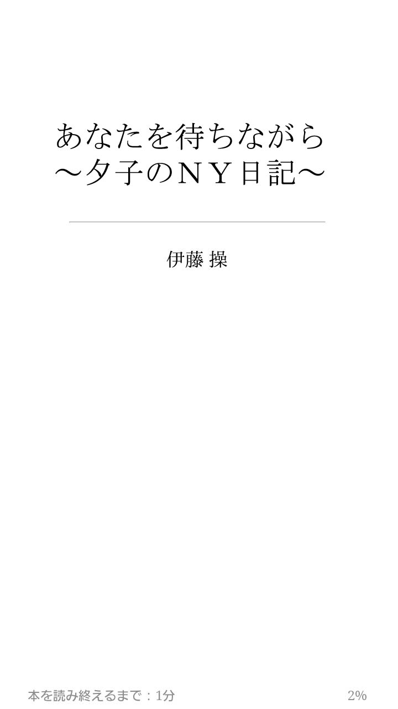

| あなたを待ちながら～夕子のNY日記～ | |
| 伊藤 操 | |
| Creek ＆ River Co., Ltd (2014) | |

この物語は８０年代から２０１１年までのニューヨーク・ファッション業界を舞台にしていますが、主な登場人物はすべてフィクションです。
私はどこにいるのだろう。ここはニューヨークだろうか。こんなニューヨークは見たことがない。こんなに大勢の人がいるのに、音がしないのだ。
まるで葬列のように人々はただ黙って歩いている。深い海の底の貝のように誰も何も言わない。何も言えない。何が起こったのかを理解さえ出来ないのだ。どこからか嗚咽が微かに聞こえるだけだ。
２００１年９月１１日午前８時５０分、ニューヨークが、いやアメリカがテロリストに攻撃されたのだ。私たちはアメリカの富を象徴するワールド・トレード・センターが崩壊するのをたった今、目撃した。
そしてアメリカ中が愛する人と連絡がつかない不安と恐怖の中で怯えている。私も震えながら、愛するあなたを待ち続けた・・・・・・
＊＊＊＊＊＊
それは突然だった。
「Have you been waiting for a long time?」
私の背中をなでるような柔らかな声がした。近代美術館MoMA (モダン・アート・ミュージアム) (http://www.moma.org) でマティスのDanceの絵の前にたたずんで、私が作った『私をみつけて』という歌を人に聞こえないように口ずさんでいた時だ。後ろから誰かが、長いこと待っているの？と声をかけて来たのだ。
その少し高めで柔らかな声に、なぜか私は昔からの友人に声をかけられたような懐かしさを感じて、何かを期待するように振り返った。褐色の肌に、カールした黒髪、存在感のある高い鼻、ちょっと淋しそうな憂いを含んだ大きな目に、柔らかそうな唇から清潔な白い歯を見せて、その青年は微笑んでいた。そして私はその微笑みに一目で引きつけられたのだ。
彼は褐色の肌に映えるような白のタートルネック・セーターに黒いパンツ姿で黒のダッフルコートを手に持っていた。１６７センチの私よりも大きい１８０センチくらいだろうか。黒のボブカット・ヘアの私は黒のタートルネック・セーターに黒のジーンズに黒のコートという黒ずくめの格好だった。パールのネックレスだけが、その青年の白いセーターに呼応するかのように全身黒の中で、浮き立っている。２人が似たような服装をしていたからだろうか、私はこの青年に好感を抱いた。
「いいえ、この絵を見ているだけです」
私が小さな声で答えるとその青年は意外なことを言った。
「でもあなたの後ろ姿は誰かを待っているようでしたよ」
「そんな淋しそうな後ろ姿ですか」
私はどぎまぎしながら答えたが、その答えは少し拗ねているように聞こえたのではないかと、言ってしまってから少し後悔した。もしかすると、本当に、誰かに声をかけられるのを期待していたのかも知れないと感じたからだ。私をみつけてなんて口ずさんでいたのだから・・・・・・
「いや、そうじゃなくて、なにか特別なことを期待しているような素敵な後姿だったから」
「特別なこと？ あなたが声をかけて来るとか？」
「僕が声をかけたことが特別なことなら光栄だな」
その青年は、大海原のような静けさを湛えた大きな黒い瞳を一瞬輝かせてまた微笑んだ。褐色の肌の中の大きな目は白い部分がとてもくっきりとして、黒い瞳を際立たせている。その淋しそうだが、人なつこい大きな笑顔は私に安心感を抱かせた。
なんて素敵な笑顔だろう。私も思わず微笑み返した。私は頬骨が張っていて、笑うと頬骨が目立ち、目が細くなるので、自分では笑った顔があまり好きではないのだが、彼の笑顔に誘われて、屈託なく微笑むことが出来た。
その時、私は気がついた。この人はさっき、ピエール・ボナールのOverlooking The Garden(The Breakfast Room)という庭を見はらす大きな窓が描かれた絵の前で私の横に立っていた人だ。そして、その後もピカソのGirl Before A Mirror の絵の前でもすれ違ったような気がする。私が好きな絵の前で、３度もこの人と出会っていたのだ。
「このダンスの絵が僕は好きで、いつもここに来ると、必ずこの絵の前で長いこと過ごしてしまう」
「どうしてこの絵が好きなのですか」
「もしよかったら、お茶でも飲みながら、この絵の話をしませんか」
「あなたは、いつもこんな風に女性に声をかけるの？」
私は少し警戒するような口調で尋ねた。
「いや、こんなふうに声をかけたのはあなたが初めてです」
「なぜ？」
「なぜって、あなたは僕が好きな絵の前に３度も現れたから」
彼がまた微笑むと、彼の白い前歯の間にほんの少し隙間があることに気がついた。なぜだか分からないがそんな小さな不完全ささえもチャーミングに思えた。彼の声のトーンは少し高めだが、とてもソフトで耳あたりが良く、聞きやすい英語なので、私の警戒心を和らげたようだ。
私たちはこの美術館の庭が見える１階のカフェの窓際に座った。２人の間にはカプチーノのシナモンの香りが微かに漂っている。その香りが一瞬、私をニューヨークの空間から東京の空間へと誘った。
私が生まれた街、渋谷の明るい日差しの差すガラス張りの喫茶店で、私は父と黙ってカプチーノのシナモンの香りを嗅いでいた。とても気持ちのいい午後だった。父はコーヒーが好きでよく１人でこの店に来るそうで、私を誘ってくれたのだ。そうだ、大学生の私は初恋に破れたばかりで、元気がない私を父なりに気遣ってくれたのだろう。父がぽつりとこう言ったのを覚えている。
「人生はいろいろあるさ。おまえはまだ若い、若いことは素晴らしいことだ」
私はただ黙って父の言葉を聞きながら、カプチーノをすすった。その香りが心にしみて、失恋した後で初めて、私はまだ若いのだと実感し、ほんの少し幸せを感じたのを覚えている。あの時の淋しさの中にもあった心をくすぐるような小さな幸福感と、今はもういない父との思い出が蘇って来たことで、私はこの青年にさらに親近感を持ったのだ。
美術館の庭の木はすでに、葉が落ちていたが、今日はインディアンサマーのような暖かさで、冬の庭にも人々がたむろしている。ここは彫刻の庭とも呼ばれていて、木々の間に、大きな彫刻がところどころに配置されている。抜けるような青空と隣の大きなビルが見えて、都会の中の小さな彫刻の庭は不思議な安らぎを醸し出す空間になっている。
私は父との思い出の香りをそっと喉の奥に押し込んで、その庭から、カプチーノの香りの前に座っている青年に目をむけると、彼が静かに話し始めた。
「金曜日の4時からこの美術館は無料なので、よく来るんだ。ここは絵画の宝庫だから・・・僕は画家でマイケル・ブルックといいます」
「え！ マイケル？」
私の声は上ずっていたようだ。私の反応に驚いた彼は大きな目をさらに大きく見開いた。
「あっ、ごめんなさい。なんでもありません、続けてください」
～マイケル？ マイケル・スミスと同じ名前のマイケルだなんて、なんという偶然だろう。こんなことがあるのだろうか？～
私はドキドキする心臓の音を隠すように胸に手をあてて深呼吸しながら、この青年を見つめた。彼は気を取り直すかのように、姿勢を正すとなにか、大事なことを告白するように厳粛な顔になった。
「僕があのマティスのダンスの絵が好きなのは、あれと同じような夢をよく見るからなんだ」
「夢を？ 私もよく夢を見て、そしてよく覚えているの。時々、あまりにもよく覚えているので、現実に起こったことのような気がするの。だから、朝起きた時に、とても疲れを覚えるのよ。あまりにも夢の中で活躍してしまうからかしら」
「夢の中で、活躍？ 面白いことを言うね。でも確かにそうかもしれない。僕があの夢を見た朝はいつもとても疲れを覚えるから」
会ったばかりの人なのに、昔から知っているような親しみを感じたのは、マイケルという名前と、この青年が私と同じように夢をよく覚えていることが原因かもしれない。私は彼のことをもっと知りたくなった。
「どんな夢だったのか話してください」
「この夢のことを話すのは初めてだ。でも君ならこの夢をシェアしてもらえるような気がする。僕の母はイタリア人とアフリカン・アメリカのハーフで、父はスペインとカナダの血が入ったアメリカ人。だから僕は４分の１黒人の血が入っている」
彼の美しい褐色の肌や、大きな憂いを含んだ目など黒人の血が流れているのは明白だった。
「母はダンサーだった。でも半年前に亡くなったんだ。母が亡くなってから、女性があの絵のように輪になって踊っている夢を見るようになってね。あの絵には描かれていないけれど、夢の中では、あの輪の中に 少年がいて、座って目をかくしている。まるで、かくれんぼをしているように。その少年は母が回りで踊っているのを知っているのに、見るのが怖くて、目を覆っている。でも母に会いたがっている・・・・少年はお母さんと呼びながら、ただずっと泣いているんだ・・・・・・」
彼はふーっと息をして、肩の力を抜いた。私は黙って、次の言葉を待った。
「その少年は自分のような気がする。だから、朝、起きた時僕はとても泣き疲れていて、きっと君の言うように、夢の中で、活躍しすぎたのだろうね。何度も同じ夢を見るので、何度もこの絵に会いに来てしまう。この絵を見ていると、夢の中で会えなかった母に会えるような気がするから・・・・・」
いつの間にか私は泣いていた。すると、彼の手がそっと私の頬に触れて、優しく涙をぬぐってくれた。その手の感触は突然、マイケル・スミスの手の感触を思い出させた。マイケル・スミスと浜辺で風のようなキスを交わした時、彼の指が私の頬に優しく触れたのだ。その冷たい指先の感触が今、私の頬に蘇り、どぎまぎしながらも、会ったばかりでまだよく知らないマイケル・ブルックの手の感触を心地良いと感じた。
「君がなぜ、あの絵が好きなのか、知りたいな」
私はこの青年の手の感触を頬に感じながら、大きく息を吸いこんでから答えた。
「あなたのように切なくて素敵な物語はありません。よく分からないけれども、あの絵のパワーに吸い込まれてしまうの。そしてなぜかとても懐かしさを覚えるの」
「懐かしさ？ ああ、それかも知れない。僕が感じていたのも、母への憧憬と少年時代への懐かしさかもしれないね・・・・・」
「あなたもさっき見ていたと思うけれども、私は窓の絵が好きなの」
「ああ、あのピエール・ボナールの朝食テーブルの絵？」
「庭を見はらす大きな窓のある朝食のテーブル。あれもとても懐かしいわ。私の家はあんな風ではなかったけれど・・・・。マティスもよく窓を描いているわね。私は窓が好きなの。猫みたいに」
「猫みたいに？」
彼は大きな目を少し細めながら、知りたがり屋の子供のような声を出した。
「そう、猫は窓から外の世界を見るのが好きなのよ。きっと広い別世界を夢見ているのかもしれないわ。猫はとても想像力が豊かに違いないわ」
「猫が好きなの？」
「ええ、東京にいた時に猫を飼っていました。ニューヨークに来る時に友人にあげてしまったので、時々その猫のことを思い出してしまうの」
「そうなんだ・・・ああ、君の名前を聞かなくちゃ」
私は日本語の名前をきちんと聞き取ってもらいたくてゆっくりと名前を言った。
「私は夕子・片岡といいます」
｢ユーコ、美しい名前だ｣
｢意味は夕暮れ、sunsetよ｣
｢君はsunriseの輝きと言うよりもsunsetの哀愁を帯びた美しさがあるね。そのストレートな黒髪も美しい｣
私はこの言葉にドキリとした。マイケル・スミスに同じことを言われたからだ。マイケル・スミスと２人でハドソン川の夕焼けを見た時の光景が目に浮かび、ボーッとしている私に、この青年は好奇心に満ちた目で私を見つめながら、ニューヨークで何をしているの？と言った。私はあの時の夕日の光景を振り払いながら、目の前のマイケルを見つめた。
｢日本のファッション新聞『ファッション・ニュース』の通信員をしています。主にニューヨーク・ファッションについてレポートしているの」
「ジャーナリストか、凄い！ 面白い仕事だね」
「さあ、どうかしら。記事を書くのは好きだけれども、新聞は毎日出て、毎日捨てられてしまうので、時々、虚しさを感じてしまうの。特にニューヨークの情報がどれだけ、日本の人に役立っているのか、私の記事を読んでくれているのかどうか反応が届かないので、暗闇に石を投げているような淋しさを感じるのよ」
「海外で仕事をするというのは、思いがなかなか届かないという淋しさや虚しさを感じるかもしれないね。僕は海外で生活したことは無いけれど、イタリア、スペイン、カナダ、アフリカという血が流れているせいだろうか、時々、ニューヨークで生まれ育ったのに、このニューヨークで、異邦人のように感じることがあるんだ。ここにいるのに、自分はここでないどこかにいるような気持ちに襲われて、なんとも言えない寂寥感をいつも抱いている・・・・」
異邦人の私の淋しさをこのマイケルは理解してくれそうな気がして、もっと彼のことが知りたくなった。
「あなたはどんな絵を描いているの？」
「一応、画家だけれども、まだそんなに売れていなくて。生活のために、個人の自宅や、レストラン、ブティックなどのペンキ塗りもしているんだ。たまに、レストランや店が絵を買ってくれるので、画家としてのプライドを保つことが出来ているけれどね。でも、君を描きたいな」
「えっ？」
私は彼の意外な言葉に驚いた。
「君を描いてみたい」
彼はひとり言のように呟いた。
「あなたがどんな絵を描くのか、興味があるけれど、でも・・・・・」
「心配しないで、ピカソの鏡の前の少女のように顔を変形させたりしないから」
彼が笑い、私もつられて少し笑った。
「君の美しさをありのままに描きたい。白い肌と黒い瞳と黒い髪、黒は僕の絵のテーマカラーだから・・・・」
そう言いながら、彼はじっと私を見つめた。なんという偶然だろうか。私と同じ絵が好きなこのマイケルに、私は彼の名前を知る前から、昔から知っているような心地良さと懐かしさを覚えていたのだ。
～マイケル、あなたなの？ ねえ、今、私の前にいるマイケルが天国にいるマイケルの生まれ変わりなの？ このマイケルが私を見つけてくれたの？～
私は少し混乱していた。マイケルというのはアメリカではよくある名前で、単なる偶然にすぎないのだから、深刻に考えるのはやめよう。そう思おうとしたが、今、目の前にいるマイケル・ブルックに私は、１年半前に出会ったマイケル・スミスの面影を探していた。
韓国とイギリスのハーフのマイケル・スミスと、アフリカとイタリア、スペイン、カナダの血が入ったマイケル・ブルックはどこも似ていない。でもこの懐かしさと心地良さは何なのだろうか。それを知るために、私は目の前で微笑んでいるマイケル・ブルックに描いてもらう気になり始めていた。そうすれば、このマイケルをもっと知ることが出来るかもしれない。この懐かしさと心地良さの謎が解けるかもしれない。そう思ったのだ。
「さっき、あなたの名前を聞いた時に驚いのは、私の友人と同じ名前だったから。でも彼は９ヶ月前に亡くなったの・・・・・」
私が思い切って言うと、彼はすっと背筋をのばして少し眉間に皺をよせて柔らかな声でゆっくりとこう言ってくれた。
「お互いに最近、大切な人を亡くしていたなんて・・・・辛かっただろうね。不思議な偶然だね。名前まで同じだなんて。彼は何をしていたの」
「ごめんなさい。まだ詳しくは話せません・・・・」
「ああ、ごめん。立ち入ったことを聞いてしまった。許してほしい。会ったばかりなのに。でもなぜか、君とは初めてではないような気がしてしまったから・・・・」
彼は大きな体を母親にしかられた少年のように小さくした。彼の顎がウールのゆったりしたタートルネックに半分、隠れてしまった。その表情が本当に少年のように可愛らしく思えた。このマイケルも私と初めて出会ったとは思えないと言ったことで、私の警戒心はさらに薄れていった。
「描いてもらう前にあなたの絵を見たいわ」
「それはそうだね。最近、僕の絵を買ってくれたレストランがあるので、今度そこで食事をしよう」
なぜか、このマイケルと何かが始まる予感がした。
近代美術館でマイケル・ブルックと出会ってから、私はマイケル・スミスのことをまた考えていた。マイケル・スミスは1年半前に私がニューヨークで出会った有望な新人デザイナーだった。初めて出会った時から、私はマイケル・スミスに魅せられた。彼のすらりとした肢体、輝く黒髪とツンととがった鼻、その繊細なたたずまいのすべてが美しかった。そして、北国の深い湖のような瞳に私は吸い込まれてしまいそうだった。
けれども彼の優しさは女性だけに注がれているのではなく、私への躊躇はストレートな男性のものではないような気がした。けれども、私は彼のファッション・デザイナーとしての才能にも強く惹かれていたのだ。ファッション・ジャーナリストとして、いち早く有望な才能を見つけたという職業的な自意識が彼により引きつけられた原因かもしれない。
マイケル・スミスのことを考えると胸が締め付けられ、息苦しくなる。深い湖のような彼の瞳の中で、私は１人でもがき、ほとんど溺れかけていたからだ。
しかし、彼は外国人であり、知り合ってたった１０ヶ月でエイズによる合併症で亡くなってしまったのだから、彼のことを私はどれだけ理解していたのか今でも分からない。でも彼が私に残した最後の言葉が、再びニューヨークで仕事をする私を支えてくれている。
マイケルは亡くなる前に私に手紙を書いていた。でもそれは投函されなかった。彼の広報をしていたカレンがそれをみつけて、私にファックスしてくれたのだ。
そのファックスは手書きで少し乱れていた。彼はこの短い手紙をいつ書いたのだろうか。このファックスの文字を見た時に、ショールームで彼が左手でデザイン画を描いている姿を思い出した。あの時のようにマイケル・スミスは少し左の肘をあげて右側に頭を傾けながら、この手紙を書いたのだろうか。
＜ユーコに出会えて良かった。ショールームでユーコと見た夕焼けや、イースト・ハンプトンの浜辺でのこと、僕は一生忘れない。ユーコは僕の可能性が日本にあることを教えてくれた。いつか、ユーコと一緒に日本に行ってみたかった。夢を見せてくれてありがとう。そしてもう１度、ユーコとソギャンを見たかった。ソギャンのように美しいユーコのことを僕は一生忘れないMichael With Love＞
私とマイケル・スミスの間には普通の男と女のような関係を超えた愛の形があったと信じている。あのショールームでデザイン画を書き終えた彼が、愛にはいろいろな形があると言ったことを私は忘れてはいない。そして、彼とあのショールームで見た夕日と、私をあの夕日のように美しいと言ってくれたことを忘れてはいない。韓国語で夕日のことをソギャンというのを教えてくれて、私をソギャンと呼んでくれた彼の優しい声が今でも耳の奥でこだましている。
私はいつも心の中で、マイケル・スミスに語りかけていた。私が東京にいたなら、～ほら、マイケル、あなたが見たかった東京よ。ここは、私が働いている新聞社が或る街よ。そして、ここが・・・～といくらでも語ることが出来る。でもそれもすべて私の心の中だけの物語なのだ。誰にも語ることのない、私とマイケル・スミスだけの物語なのだ。その心の物語を支えに私は、１人で、ニューヨークで生きて行こうと決意したのだ。
そしてそのマイケル・スミスへの愛の背景には山川賢一との不倫があった。山川賢一は私が１９８６年から、ニューヨーク通信員を勤めている『ファッション・ニュース』の編集長で上司だった。私たちは、その５年前の１９８０年頃から東京で、恋愛関係、つまり社内不倫関係になっていた。どうして２０歳も年上の彼と不倫関係になってしまったのだろうか。きっとあの時の出来事が発端だったような気がする。
ある日、編集長の山川賢一が『ファッション・ニュース』を私の前につきだしながら言った。
「君、こんな文章を書いていたら駄目だよ」
私が書いた記事のところが真っ赤になっている。
「僕が出張に出ていたから最終校正を副編の川田に見てもらっていたが、僕はこの原稿は認めないよ」
もう出てしまった新聞の原稿を真っ赤にされ、私はむっとした。
「この原稿のどこがだめなのでしょうか」
「僕が入れた赤を見れば分かるはずだ。書き直しなさい」
「でもこれはもう昨日出てしまっているので・・・・・」
私は少しむくれながら答えた。すると"親父の雷"とはこういうものかと思えるような大きな声が私の頭の上から降ってきた。
「僕が認めないと言っているんだ。読者のためではなく、自分のために書き直せ！」
他の編集者も驚いて一瞬、編集部に緊張が走った。彼がこのような大声を出したことがなかったからだ。私もびっくりして、書き直します！と言いながら新聞を手に取ると、その場から逃げ出した。恥ずかしさと悔しさで涙が出て来たのを見られたくなかったからだ。
私が『ファッション・ニュース』に就職して3年目だった。注目の人気ショップとその店長やオーナーにインタビューするというシリーズを任され、読者の評判もよく、自信がつき始めた時に、彼に怒鳴られたのだ。なぜ、私の記事が駄目なのか、私には分からなかった。トイレの中で、何度も彼が入れた赤を読み直した。
そして突然、閃いたのだ。私の原稿に足りないものが。それは読者の視点、消費者の視点だった。店の紹介や店長のインタビューを入れるのはあたり前だが、なぜ、この店が注目されているのか、なぜ、消費者はこの店に行くのかという視点が足りない。特にこの日の記事は単なる紹介記事に終わっていた。私はもし自分が消費者だったらと言う視点を入れて書き直した。
「そうだよ、こういう視点が欲しいんだよ。これなら読者も行ってみたいと思うだろうし、店側も消費者に支持されている理由が理解出来るだろう。また本当の消費者に取材して、彼らのコメントを入れるのもいいかもしれない。良く書けたね」
彼はにっこりと微笑んだ。その微笑みに私はなぜかどぎまぎと返答に窮した。彼のそんな顔を見たことが無かったからだ。数日後、彼から食事に誘われた。
彼が選んだ店は白金にある隠れ家のようなイタリアン・レストランだった。彼がこんなしゃれたレストランを知っているとは意外だった。しゃれてはいるが、気取ってはいない、そのアットホームな雰囲気に私はリラックスした気分になれた。食事を終えると彼は編集部にいる時とは違う柔らかな声で語り出した。
「この間は怒鳴ったりして悪かった。でも君にはちゃんとした原稿を書いてほしいと思ったからだよ」
「なぜですか。編集長なら編集者全員にいい記事を書いてほしいと思うのではないですか、なぜ、私なのですか」
「それは君に惚れているからだよ」
彼のあまりにも率直な言い方に私は面食らい、なんと反応していいのかどまどった。彼が私に好意を抱いているなんて、思いもよらなかった。妻子持ちの上司と恋愛関係になるのは望んではいないからだ。
「冗談はよしてください。私は不倫はしませんから」
「不倫しようなんて言っていないよ。ただ、君の才能を僕は評価しているということを知ってもらいたいだけだ」
「では私の書くものが好きなのであって、私のことではありませんから、紛らわしいことを言わないでください」
「うーん、まだ分かっていないね、君は。文を書くと言うことは、自分を表現することだよ。いろいろな芸術があるが、絵よりも音楽よりも文というのが一番その人が出てしまうのだ」
「私が書いているのは情報であって、芸術ではありません・・・・」
「いや、君はいつか、小説を書くようになるね。それを読んでみたいな・・・・・」
彼は確信しているようにそう言うとグラスを傾けてウィスキーをゆっくりと飲み干した。その横顔がちょっと素敵に思えて、ドキリとした。そして小説を書くようになるなんて、考えたこともなかったので、彼がなぜ、そんなことを言うのか不思議だった。
「なぜ、そんなことを言うのですか？」
「君に小説を書いてもらいたなあ・・・いいのが書けると思うよ。入社試験の時の文を読んで、僕は会う前に君の文に惚れたんだ」
入社試験用に書いたのはサミエル・ベケットの『ゴドーを待ちながら』を引用しながら、人間はいつも何かを誰かを待っている、そして、現代人は情報も待っている、その待ち望んでいた情報が期待外れでないようにするには送り手としてどうすべきかと書いたのだ。
「僕はベケットが好きでね。僕もずっと何かを待っているような気がする。でもそれが何かはこの年になっても未だに分からない。だから、君の文を読んだ時、ハッとしてね。文は人なりだよ。いい文を書く君はいい女だよ・・・・」
彼は酔っぱらっているようだ。でも書いた文を褒められるのは容姿を褒められるよりも嬉しかったので、彼が私の文に惚れたというのは私にとってはすごい殺し文句になった。
それから私たちは読んだ本の感想を言い合うために時間を持つようになった。最初は喫茶店で学生のようにベートーベンをモデルにした音楽家の愛と苦悩を描いたロマン・ローランの『ジャン・クリストフ』を語り合い、バーで仕事の打ち合わせのように別れた恋人同士が8年振りに再会するジェーン・オースティンの『説得』を語り合い、そしてホテルの一室でD.H. ロレンスの『チャタレー夫人の恋人』を愛し合いながら語り合った。賢一の四角い顔からは想像出来ないが、２人だけの時間の時に発せられるビロードのような滑らかな囁き声を聞くのが私は好きだった。彼の左手の愛撫と同じように・・・・・・・
けれども社内不倫などうまく行くはずもなく、私は毎日、社内で彼と顔を合わせるのが辛かったが、女性がそう言う理由で退社したり、仕事を辞めたりするのは耐えがたかった。しかし、さらに耐え難いのは命を絶ってしまうことだ。
大学時代の友人、恵子が不倫をして自殺してしまったのだ。恵子は有望な新人デザイナーで、パリコレクションに視察に行く前に私たちは食事をしながら、将来のことを語り合ったのだ。あの時の恵子は希望を持っていたように見えたので、彼女の自殺が私には信じられなかった。後で知ったことだが、彼女の不倫相手は同じ会社の上司だった。彼の奥さんはデザイナーで、そのデザイナーに私は取材したこともあり、彼にも会ったことがあるのだ。恵子と一緒に彼も彼の奥さんもパリに行っており、彼女が自殺したのはパリから帰国した翌日だった。パリで何があったのだろうか。
とても繊細で美しい有望なファッション・デザイナーだった彼女がなぜ、死ななければならなかったのか。愛のために自殺するとはどういうことだろうかとずいぶんと考えてしまった。私はこの愛のために死ねるだろうかと自問した。答えはノーだった。
「誰にも世話されずに１人で淋しく死んでいくことなどあってはならない」というマザー・テレサの言葉が胸にしみた。マザー・テレサは病気や貧困で１人で死んで行く人を救った。しかし自殺は自ら誰にも世話されたくないという死を選んでしまうのだ。そして残された人は一生、何もしてあげられなかったことを後悔するのだ。そして自殺の本当の理由は誰にも分からない。その悲しみと悔しさを残された人は永遠に背負って行くのだ。
パリに行く前の恵子に何かサインがあったのではないか、私はそれを見逃していたのではないか、そんな思いが駆け巡り、私が恵子の逃げ場になってやれなかったことが今でもとても悔やまれる。
自殺は生きている人、私を愛してくれる人の愛を拒絶することだ。たとえ、愛する人の愛を得ることが出来なくても、愛は愛されるよりも愛することのほうが大事なのだ。私は賢一の愛を失う事があっても、彼を愛したという事実は失いたくない。そして私を愛してくれている家族や友人などの愛を拒絶したくないから、私は自殺はしないと決めたのだ。
けれども賢一の優柔不断な態度に私は疲れていた。彼は私たちの秘密の関係をそのまま続けようとした。離婚しようともしなかったし、私と別れようともしなかった。彼にとってはセキュリティのための家庭と刺激のための不倫の両方を手に入れていることが心地よかったのだ。どちらかを切る勇気は彼には無かった。けれども彼が離婚して私と結婚することを私は望んではいなかったような気がする。彼と愛し合いながら本の感想を語り合うのは私にとっても刺激的だったからだ。
彼の左手の愛撫だけでなく、彼の言葉の愛撫が私には心地良く必要だった。それを失いたくなかったのだ。もしかすると私は彼の言うように、新聞記事以上の物を書きたいと思うようになっていたのかもしれない。だから彼の言葉が何かを書きたいという私の潜在意識を刺激していたのだろう。しかし彼との関係をこれ以上続けていても先が見えないし、優柔不断の彼をいつか憎むようになるのではないかと私は恐れた。そして賢一の顔を毎日、見るのがどんどん辛くなっていった。
そして３０歳という区切りを利用して、自分から別れを切り出した。ニューヨーク通信員をみずからかって出たのだ。仕事を利用した別れに彼も反対は出来なかった。彼も私への未練がありながら、どこかでホッとしていたような気がする。我が新聞社にはニューヨーク通信員など今までは居なかったのに、社長に談判してくれたのだから。こうして、私は８６年から１年間、そう賢一が倒れるまでの１年間をニューヨークで働いた。
私が賢一と最後に会ったのは昨年の7月6日だ。賢一が倒れたという知らせを受けて、ニューヨークから東京へと戻った翌日だった。賢一は編集部で倒れているところを発見され病院に運び込まれた。幸い命は取り留めたが、左半身不随という後遺症が残り厳しいリハビリテーションが必要になったのだ。当然、編集長の激務は出来なくなり、副編集長の川田が編集長代理を行うことになった。
１年ぶりに賢一に会うために、私は賢一が入院している病院に行った。このような異常事態で彼に会うことに私はとても緊張し、喉がカラカラに渇いた。そしてチョコレートを１粒、口に入れた。チョコレートの甘さに誘われて出て来た唾液が私の喉と心を潤してくれた。１年半前の３０歳の誕生日の時に賢一と別れて初めてニューヨークに来た時にも不安に駆られ、その時もチョコレートを食べたのだ。そのチョコレートの香りと甘みが私の疲れた体に染み渡り、ニューヨークのタクシーの中で賢一の夢を見たことを思い出した。
「お誕生日おめでとう」
「とうとう大台に乗ってしまったわ」
「まだ６時間ある。やはり気持ちは変わらないのか？」
「変わらないわ。もう６時間しかないわ。そろそろ出かけないと」
「僕が離婚すると言ったら、気持ちは変わるのか？」
「賢一さん、あなたは離婚しないわ」
「・・・・・・・・」
「お願いだからもうやめて・・・・」
「もう一度だけ・・・・」
「だめよ」
「もう一度、君と一緒に空を飛びたい」
「だめよ、やめて、あなたとはもう飛べない」
「でも君は、これが、僕の左手のこれが好きだった」
「やめて、お願いだから。もう行かなければ、もう時間がないわ」
「いつも君はそう言って、僕を傷つけてきた・・・・・」
「傷ついたのはあなただけじゃないわ」
「僕が離婚しなかったから、ニューヨークに行く気になったというわけか？」
「１年前にあなたが離婚していたら、もしかしたらニューヨークへ行くということは考えなかったかもしれない。でもあなたは今でも奥さんと子供のいる家に住んでいるわ。ニューヨークに行く決心をしたのは、本当はあなたとは関係ないのよ。関係ないと思いたいの。これは私個人の問題なの」
「ニューヨークのどこがいいんだ」
「動きたかったの、ここでないどこかへ自分を置いて見たかったかの。目の前にあなたがいては駄目なのよ」
「だから、初代ニューヨーク駐在員を自分から買って出たのか？」
「そうよ。これからは初代ニューヨーク駐在員として私を扱ってね。もう、あなたの恋人ではないわ」
「分かった。では編集長としては、君がニューヨークで大いに活躍することを期待しているよ。ついでに、アメリカ人の恋人でも作ったらいい」
「それは編集長としての命令ですか？」
「なんとでも言え、僕はふられたのだから」
｢違うわ。ふったのではないわ。違うのよ。あなたは今でも分かっていない。そうじゃないのよ。あなたが必要だった。必要だったのよ｣
そして私はタクシードライバーの｢１ドル必要だ｣という声で目がさめたのだ。
あの７月６日の暑い午後、私は賢一が入院している病院の前に立っている自分の姿をまるで幽体離脱したかのように俯瞰していた。そしてチョコレートを飲み込み、深呼吸をして病院のガランとした冷房の効いた廊下に足を踏み入れた。寝不足の体がブルリと震えた。突き当たりの部屋の前のソファに４０代の女性と学校の制服を着た高校生が座っていた。彼の家族に初めて会うというこの関門を突破しなければ、私は前に進めないと自分にそう言い聞かせて２人に近づいて行った。私が頭を下げかけたら、突然、女学生が、｢泥棒猫！｣と吐き捨てるように言いながら私を睨みつけた。
そうなのだ。紺の制服を着たこの高校生にとっては、私は他人の家の食卓からおいしい魚を盗み、その家の団欒を壊した泥棒猫と同じなのだろう。まだ本当の恋の味を知らない若い彼女の目から発せられる緑色の目をしたモンスターのような嫉妬と嫌悪の針を私は全身に痛いほど感じた。
４０歳くらいの賢一の妻はこざっぱりとした清潔な身なりをしているが、看病で疲れているだけではないとげとげしさを漂わせていた。すでに私のことを知っているようで、保身のためにハリネズミのような攻撃性で、全身を武装しているように見えた。そして、出来るだけ冷静さを装いながら突き放すように言った。
「１０分だけです。それで充分でしょう」
２人の憎悪を受けながらも、私はどうしても彼に会う必要があったのだ。倒れたその日、賢一が東京からニューヨークの私に送って来た最後のファックス、「僕は充分に・・・」のあの言葉の続きを彼の口から直接、聞きたかったからだ。たとえ、その言葉が期待にそぐわなくても私は受け入れる覚悟だった。
病室のドアをそっと開け、ベッドに死んだように横たわっている賢一を見た時、私の背中に氷のように冷たい手で叩かれたような衝撃を感じた。彼の体は一回りも小さくなったようで、涙が溢れそうになった。寝不足でふらつく体を折り曲げて賢一の耳元で囁いた。
「賢一さん、夕子です」
あの懐かしい四角い顔が硬直している。彼はうっすらと目を開けて私を見つめ、顔をゆがめながら、声を絞り出した。その声は私が愛したビロードのような滑らかさはなく、枯葉が踏みつけられたかのようにかすれていた。
｢こんな姿を君には見られたくない。もうここには来ないでほしい・・・・｣
そう言うと彼の右目から涙が一筋スッーと流れた。私はその涙をそっと指でぬぐいながら、彼の左手をぎゅっと握り締めたが、その左手はなんの反応も示さなかった。私の体を愛した左利きの彼のあの左手が死んでいる。中指のペンダコを優しく撫でたが、彼の指は動かなかった。私は涙を必死にこらえて微笑みながら言った。
「賢一さん、ありがとう、さようなら」
彼は分かっているよと言うようにうなずきながら右手を少しあげた。私も彼に向かって右手をあげた。こうして私は本当に賢一と別れたのだ。
病室の外のソファに彼の奥さんが憔悴しきった顔で座っていた。
「妻はこんな風に傷つき弱って戻って来た夫の世話をするのよ。夫と妻の間には誰にも入り込む余地のない壮絶な歴史があるのです。あなたには出来ないでしょうが、私は夫の左半身になって夫を支えて生きて行きます」
こうした妻の愛情とプライドにはとうてい勝つことは出来ないのだと私は黙って深く頭をたれてその場を去った。病院から駅までどのように歩いたのか記憶にない。彼の娘から泥棒猫と言われたが、たとえ夫婦でも相手のすべてを所有することは出来ないはずだが、そんな理屈は、賢一の家族には通じるはずもない。
私も賢一のすべてを所有することは出来ないし、もちろん、望んでもいなかった。でも彼のあの左手は間違いなく、私は所有していたと信じている。私のすべてを包み込んでしまうかのような力強い彼の左手がとても恋しい。
あなたの左手が私の頬にふれ
あなたの左手が私の髪をなでる
私は少女のようにはにかみながら
あなたを見上げる
あなたの左手をうけとめながら
あなたの胸で空を飛んだわ
もうあなたはいないけれど感じてる
囁きのようなあの左手を
あなたの左手にゆすられながら
ヒバリのように空を飛びたい
もう１度
あなたの左手を夢にみながら
私は１人空を飛んだわ、あなたへと
私は自分で作った歌を心の中で繰り返しながら、１人で歩いている。病院に背を向け歩いているが、空を飛んで行ってもう１度、賢一の胸元へ飛び込んで私なりにあなたを充分に愛していましたと叫びたい。でも賢一からは、「僕は充分に・・・」の後の言葉を聞くことは出来なかった。
賢一が充分という言葉を使ったのは理由がある。私が『ファッション・ニュース』でインタビューした新進デザイナーのマイケル・スミスが亡くなる死の床で、沢山の花に囲まれているのに、彼は最後に一言、「ノット・イナッフ・充分じゃない」と言ったのだ。３２歳という若さで亡くなったのだから、彼は自分のやりたいことをする充分な時間がなかったという意味だろうか。けれども私は、マイケルは自分なりに充分に生きたのだと信じていると、死亡記事に書いたのだ。この原稿を賢一はとても気に入ってくれて、「山川賢一としての人生は充分だったのか、充分ではなかったのか」とずいぶんと真剣に考えていたようだった。だから、私は賢一の「充分に・・・」と途中までしか書かれていない最後のファックスのその続きを聞きたかったのだ。私はきっと賢一にこう言って欲しかったのだ。
「充分に君を愛した・・・僕なりに・・・・」
そうすればこの言葉を心の支えに人生の後半を生きて行けると思えたのだ。でも彼は何も言ってはくれなかった。ただ、自分の惨めな姿を私に見られるのが恥ずかしく悔しかっただけなのだろう。私が会いに行ったことを喜んではいなかったのではないだろうか。
いやあの涙の裏に私への愛が隠されていたと私は信じたい。彼の顔は麻痺でゆがんでいたけれどもある種の優しさが滲んでいたような気がするからだ。彼の言葉を聞けなかった分、私は彼の涙に特別な意味を求めたのかもしれない。彼の言葉の支えなしにこれから１人で生きて行かなければならないからだ。
だから、振り向いてはいけない。私はもう２度と彼には会わないだろう。傷つき弱った彼は奥さんの元に戻ったのだ。私は１年前にすでに彼の元を去ったのだから、心の中だけでしか、私が作った歌の鳥のように、空を飛んで賢一の胸元へと行くことが出来ないのだ。
ニューヨークでマイケル・スミスを失い、そして、東京で賢一も失った私を支えているのは、マイケル・スミスが私に残した最後の言葉と賢一のあの一筋の涙だけだ。
マイケル・スミスが亡くなってから９ヶ月、賢一に東京の病院でさよならを言ってから半年がたった。私はもう過去の筏からは降りて、新しい出会いの岸にたどり着いたのだから、２人のことを忘れはしないが、マイケル・ブルックとの出会いに感謝したい気持ちが芽生えて来た。だから今日のマイケル・ブルックとの食事に私は何かを期待していた。
マイケルが指定したのは、グリニッチ・ヴィレッジにあるVilla Mosconi (http://www.villamosconi.com)というイタリアン・レストランだ。このレストランがあるグリニッチ・ヴィレッジのマクデューガル・ストリートにはネイバーフッド・レストランとも呼ばれるようなこじんまりしたイタリアン・レストランやカフェが並んでいる。高級住宅街のアップタウンと違いこの界隈の肩の凝らない雰囲気がなんとも嬉しい。
グリーンキャノピーにVilla Mosconiと書かれた入り口を入ると、ふっくらとした体型の中年の女性が微笑みながら、右手奥のレストランの中へと私を案内してくれた。中は思ったよりも広く、白いテーブルクロスが掛けられたテーブルがほどよい間隔で並んでいる。そして壁一面にたくさんの絵が飾られているのに圧倒された。マイケルは右手奥の窓際のテーブルに腰掛けて手を振っている。
「このレストランには絵がたくさんあるのね」
「そうなんだ。オーナーも絵が好きで自分でも描いているらしい。僕の友人がオーナーの知り合いで、紹介してくれて。ここにはイタリア人の絵しか置いてないのだけれども、僕にも４分の１イタリア人の血が流れているから、仲間入り出来たんだよ」
マイケルはちょっとおかしそうに笑った。私たちはワインで乾杯してから、前菜にムール貝、シュリンプ、クラムなどシーフードとほうれん草とズッキーニなどが盛り込まれたホット・ミックス・アペタイザープレートを注文した。２人で分けて食べるのにちょうどいい量だ。このレストラン自慢のホームメイドパスタのシンプルなトマトソースのポモドーロと、エビのクリームソースのフェティチーネ・アラ・ローマナを注文し、これもそれぞれ分けてもらった。
ベージュの壁一面に飾ってあるのは、少女や老人の肖像画、イタリアの街や自然の風景画、野菜や果物の静物画など具象的な絵がほとんどだ。
「この絵が僕の絵だよ。タイトルはWater......」
マイケルは彼の後ろに飾られた絵を指差した。その絵は黒とグレーで描かれた空と、黒とダークグリーンの森、そしてその空と森の上に白と淡いブルーの雨のような細いラインが描かれている。森に降る雨のように見える幻想的な絵だ。具象的な絵が多いこの店の中で、彼の絵はすこし浮き立っていたが、何か不思議な光を放っているように感じた。きっとオーナーもそんな不思議な魅力をこの絵に感じたから、購入したのだろう。
空の部分に描かれた雨脚のような傷跡を見て、私はなぜか、彼の心の傷を見せられたような痛みを感じた。この人はなんて繊細な人なのだろうと彼の顔をじっと見つめた。そして、彼がこの絵を描いた理由を聞きたくなった。
「なぜ、暗くて深い絶望と明るい希望が同居している絵を描いたの？」
そう言うと、マイケルは意を得たように微笑みながら頷いた。
「ユーコには分かるの？この絵が絶望と希望を現しているのが、凄いね」
「ただなんとなく、手前の暗い森に降る雨の向こうに、希望の光が見えるような気がしたから・・・・・」
その時、マイケルの顔に雨上がりのような爽やかな日差しが注いだように見えた。彼は明るい口調で嬉しそうに語り出した。
「この絵は、コールリッジの『老水夫行』の詩からイメージしたんだ」
「ああ、あの、Water, water, everywhereという詩？」
私の好きな詩のことだったので、思わず口ずさんだ。
「えっ！ ユーコも知っているの？ 凄いね」
「ええ、高校の英語の時間に習ったことがあるわ。私も大好きな詩よ。老水夫の船が難破して、周りに水がたくさんあるのに、飲める水がないという絶望の中でも、希望を持つことが大事だという内容だったと思うけれど・・・先月、私のアパートで水槽のクリーニングがあるので、半日、断水になるというお知らせがエレベーターの中に貼ってあったの。断水のお知らせメモにWater, water, everywhere nor any drop to drinkって書いてあったのよ。で、ああ、この詩はやはり米国ではとても有名だと分かったの」
「そうだよ。ほとんどのアメリカ人は知っているよ。ユーコもこの詩が好きだなんて凄い偶然だね」
アメリカの詩をそれほど沢山知っているわけではないので、私もこの偶然がなんだかとても嬉しかった。
「僕の好きなところはalone, alone, all all alone, alone on a wide wide sea!」
マイケルは大海原を見渡すような目ですこし顎を上げなら囁いた。
「そうだったわ。大海原で我１人という意味ね。私の母は俳句を作るのだけれども彼女の俳句の中で私が好きな句は"音もなし、我ひとりかと、雪の降る"というのよ。音のない雪の世界で、自分がたった１人だと実感するという俳句なの」
「美しい俳句だ。だからユーコも詩が好きなんだね。僕は詩を読むと映像が浮かんで来るんだよ。とくにこのコールリッジの詩は神秘的で、荘厳なイメージが沸いて来るんだ。僕の絵がそこまで荘厳かどうか分からないけれども」
「この絵はとても荘厳な感じがするし美しいわ、私とても好きだわ」
神の存在を感じると言おうとしたが、神と言うと大げさに感じて言いそびれた。
「君に気に入ってもらえて嬉しいな」
マイケルは少しはにかみながら微笑んだ。詩からインスピレーションを得るマイケルに私は不思議な縁を感じていた。赤い糸なんて照れくさいが、なぜか目に見えない物で彼とつながっているように思えたのだ。彼と初めて会った時に感じた懐かしさも彼も詩が好きだということと関連があるかもしれない。
「実は私も詩を書くのよ。もちろん、コールリッジのような詩は書けないけれども・・・・」
「へー、そうなの？ どんな詩？」
「愛の詩」
「えーっ、愛の詩か、いいなあ」
「実は詩だけでなく、メロディも作るのよ」
「えっ！ メロディも？それは凄いな、聞かせて・・・」
マイケルは大きな目を少し細めて子供が母親に甘えるような顔を私に向けた。
「えー、ちょっと恥ずかしいわ・・・」
「恥ずかしがらないで。ねえ、聞かせてよ」
彼は上半身を私の方に近づけてせがんだ。
「じゃ、ほんの少しね。実はあなたが、私に声をかけた時に心の中で、歌っていたのよ」
「えっそうなの。それは聞かなくちゃ。どんなタイトル？」
おやつを待てない子供のようにマイケルは上半身を揺らした。
「『Find Me』・・・」
「『Find Me』? そうか、それは凄いな。だって、君が心の中で、私を見つけてと歌っていた時に、僕が、長いこと待っているの？と声をかけたなんて・・・あの時の君はまるで誰かを待っているようだったと言ったよね・・・」
「そうなの。だから、とても不思議な気持ちなのよ・・・」
「さあ、早く聞かせて！」
私が、ではという感じで背筋を伸ばすと、マイケルもテーブルについていた肘を伸ばして、自分の脚の上に乗せ、姿勢を正した。私はちょっと緊張した面持ちで、『Find Me』の歌を小声で歌った。
すでにあなたはここにはいないね
あのコーヒーの香りが消えてる
けれども、あなたの声も匂いも指先さえも
みんな、みんな私のもの
信じているわ あなたは１人
もう１度 私はあなたを見つける
その時はあなたも私を見つけて
ファインド・ミー
しばらく、沈黙が流れた。マイケルは何かを考えているようにうつむいて黙っている。コールリッジのような偉大な詩人の話しの後で、こんなたわいのない恋の歌を聞かせたことに私は後悔していた。するとマイケルが顔を上げて、じっと私を見つめた。
「それから？」
「えっ？」
「続きが聞きたい」
「ええ、この歌には後、２番と３番があるのだけれど・・・・」
「じゃあ、それも聞かせて・・・」
彼が真剣な眼差しを私に向けたので、私は姿勢を正して歌い始めた。こうなったら、最後まで聞いてもらったほうが、恥も徹底してかいたほうがいいと居直ったのだ。
街で私はあなたを感じたの
あのシトラスの香りがしたから
今でも私の胸も吐息も髪の毛さえも
すべて すべて あなたのもの
信じてほしい、私も１人
もう１度 私はあなたを見つける
その時はあなたも私を見つけて
ファインド・ミー
ここで２人は初めて出会ったの
あのジャスミンの香りが恋しい
あれから３年 愛の言葉も諍いさえも
今も 今も覚えている
信じているわ ふたたび会える
もう１度 私はあなたを見つける
その時はあなたも私を見つけて
ファインド・ミー
もう１度 私はあなたを見つける
その時はあなたも私を見つけて
ファインド・ミー・アゲイン
また沈黙が続いた。私は何を言っていいか分からず、うつむいていた。
「好きだよ」
マイケルがポツリと呟いた。
「えっ？」
「僕はこの歌が好きだ。でも・・・・」
「でも、何？」
「この人は誰なのだろうと考えていたんだ」
私は少しほっとして特に誰というのではないのよ。創作だから・・・と嘘をついた。本当はこの歌はマイケル・スミスに捧げるつもりで書いたのだ。
「そうなの？ この歌にインスピレーションを与えた人は誰もいないの？」
目の前のマイケル・ブルックはちょっとおどけるような目で私を覗き込んだ。
「そうよ。歌にしても、小説にしても、あなたの絵と同じで、何かにインスパイヤーされることはあっても現実をすべて忠実に描くわけではないでしょ？ あなたが海の詩にインスパイヤーされても海の絵ではなく、森の絵を描いているのと同じようにね」
私は言い訳じみていると感じながらも必死に説明した。なぜかマイケル・スミスのことを否定しているような罪悪感を抱いたが、マイケル・ブルックにまだマイケル・スミスのことを話す心の準備が出来ていないのだ。
「そうだね。コールリッジの詩は海の中の孤独と絶望、そして希望を描いたけれども、僕は子供の頃は、ニューヨーク郊外の森の近くで育ち、森で迷子になったことも何度かあるので、森の中の孤独と恐怖を描いたんだ。大海原でも森の中でも雪の降る夜でも孤独と絶望は同じような気がしないかい？」
彼がどこまで私の説明に納得してくれたかどうかは分からないが、さりげなく話を進めてくれたことに彼の優しさを感じた。
「だから、君の詩も誰かを失い、そこからインスパイヤーされて、君の想像力で現実とは違う世界を歌っているのだね。でも初めてあった時に９ヶ月前に大切な人を亡くしたって言っていたから、その人のことかと思ったんだ」
「・・・・・・・・」
彼の記憶と勘の良さに驚いて声が出なかった。
「ごめん。まだ話せないって言っていたね」
「いつか話せるようになったら、話すわね・・・・」
「いつかね。待っている・・・」
マイケルがそう言った時、私はこのマイケルと長く付き合うことになるような予感がした。彼もそれを望んでいるだろうか。
「いつか、君の詩をイメージして絵を描きたいなあ。でもその前に君の肖像画を描くことが先だけれども。でもその時にも君の歌を聞いているとイメージが膨らむような気がする。君と僕がアッシャー・デュランドとウィリアム・ブライアントのような関係になれたら素敵だね」
私が聞いた事もない人の名前が出たので、返事に窮しているとマイケルが肩を少し上げなら、微笑んだ。
「４２丁目にあるブライアント・パーク(http://www.bryantpark.org) を知っているね？」
「ええ・・・・・」
｢ウィリアム・ブライアントは詩人で、ジャーナリストでニューヨーク・イブニング・ポストの編集長を長い間務めていたんだよ。１８世紀後半から１９世紀の人だけれども。ブライアント・パークは彼の名前から名付けられたんだ｣
ウィリアム・ブライアントがニューヨークに貢献した有名人らしいことは分かったが、なぜ、私とマイケルとの関係にそんな昔の偉い人の名前が出て来るのだろう。まだ合点がいかない顔をしていると、マイケルはそれをおもしろがるように、じっと私を見つめて話し出した。
「彼の詩、A Forest Hymn森の賛歌というのがあるのだけれどもその詩からインスピレーションを得て、アッシャー・デュランドという画家がPrimeval Forest 原始の森という絵を描いたんだ。僕はその絵がとても好きなんだ」
なんとなくマイケルの言おうとしていることが見えて来て、その原始の森がどんな絵なのか興味が沸いた。
「その絵はどんな絵なの？」
「キャンバスに茶色だけで描かれた荒れた森の絵でね。でも凄い迫力で、その絵の中に吸い込まれてしまいそうになるんだ。デュランドはハドソン・リバー・スクール派に属する画家でね。僕はそのハドソン・リバー・スクール派の中では、リーダーであるトーマス・コールよりもデュランドの絵のほうが好きなんだ。凄い絵だよ」
ハドソン・リバー・スクール？また私の知らない名前が出て来て、頭が混乱したが、マイケルの話は私の好奇心を大いに刺激した。
「ハドソン・リバーってマンハッタンの西側にあるあの川のこと？」
「そうだよ。ハドソン・リバーをずっと北上したキャツキルという地域の自然を描いたトーマス・コールが先駆者で、多くの画家が自然を忠実に写実的に描いたんだ。そんな画家たちをハドソン・リバー・スクール派と呼んでいるんだ。最近、彼らの絵が再評価されているけれども、その中でも僕はデュランドの絵に一番惹かれるんだ。なぜなら、彼の絵に神の存在を感じるから。自然を忠実に描いていながら、単なる風景画ではない、神の存在、神の荘厳さを感じるんだ。あれだけ細かく、木や葉や石を自然以上に自然らしく描く事自体も凄い技術だが、技術を超えて彼の絵にはすごみがあるんだ」
熱心に語り続けているマイケルを見て、彼にとても惹かれている自分に気づいた。こんな風に尊敬している人や好きな絵のことを率直に語れる彼がとても素敵に思えたのだ。
｢実はね、さっきあなたの絵を見た時、神の存在を感じるって言いたかったのよ｣
「えっ？本当！それは凄い。凄いな、嬉しいな」
彼が「Great 凄い」と何度も繰り返すのでおかしくなって尋ねた。
「ねえ、凄いというのはあなたの口癖なの？」
「ああ、つい出てしまうんだ。凄い時でなくても凄い、グレイトというと何となく、いいムードになるから、自分を励ますためにも言っているような気がする・・・・・」
「そうなのね。ではそのデュランドの凄い絵を見てみたいわ。どこで見ることが出来るの？」
「セントラル・パークの西側にあるニューヨーク・ヒストリカル・ソサエティ(http://www.nyhistory.org) にハドソン・リバー・スクール派の絵が沢山あるよ。デュランドの原始の森の絵もあるよ。今度見に行こう」
「ええ、是非、見たいわ」
「ユーコも好きだと思うよ。君には是非、見てもらいたいね。だってほら、ユーコとマイケル、ウィリアムとデュランドだから」
「そんな偉大な人と私の詩は一緒にはならないわ。でもあなたのこの絵に神の存在を感じたのは、あなたがデュランドの絵が好きだからだと少し理解出来たような気がするわ。だから、私もその絵を見てみたいし、ウィリアム・ブライアントの詩も読んで見たいわ。私の詩がどこまであなたに気に入ってもらえるか分からないけれども、実はこれ以外にもたくさん作っているのよ」
「それは凄いな。聞かせて」
「いつかね」
「いつかか、ああ、いいよ。お楽しみは取っておこう」
私たちは黙って微笑みあった。彼の微笑みを見て、私は心の奥がホットチョコレートを飲んだように暖かくなった。私たちのテーブルに、恰幅のいいウェイターがホームメイドのテラミスを運んで来ながら、「あなたの絵は評判が良くて私も好きですよ」と言ったので、マイケルは嬉しそうに頷いた。さらにウェイターは私にウィンクしながら、「あなたの歌と声も好きですよ」と言ってくれたので、私も思わず笑いながら頷いてしまった。
私は紅茶を飲み、茶色とベージュの柔らかいテラミスを少し口に含んだ。甘い香りのクリームが口の中で溶けて、喉を通過した時、私の脳裏にイースト・ハンプトンの浜辺でのマイケル・スミスの抱擁が突然、甦った。まるで、それは紅茶に浸したマドレーヌを食べて、子供の頃に過ごした夏の休暇のことを思い出したというプルーストの『失われた時を求めて』のあの有名なシーンのようだった。私は全身にほてりを感じ、目の前にいるマイケル・ブルックを思わずじっと見つめてしまった。
彼ははっとするように大きな目を一瞬さらに大きくし、そして、少しはにかむように微笑んだ。私は混乱していた。私はマイケル・ブルックに何を期待しているのだろうか。
"Water, water, everywhere, nor any drop to drink"このフレーズが再び、頭の中で駆け巡り、喉の渇きを覚えて、また紅茶を飲みこんだ。私は何かに飢えていた。周りにたくさんの水があるのに、飲める水は一滴もなく水に飢えた水夫。周りにたくさんの男性がいるのに、愛し合える人がいない、愛に飢えた自分。
この詩の水夫が水を求めるように、私は誰かの愛を求めているのではないかと突然、気づいたのだ。その愛が目の前のマイケル・ブルックなのだろうか。
私たちは食事を終えて、レストランの外に出た。１月のニューヨークはとても寒い。マクデューガル通りの葉もない木々も骸骨のように震えている。その凍える木の先に引っかかるように糸のような細くて白い月が寒々とした夜空に浮かんでいる。
私は思わず、肩をすぼめた。マイケルは私の肩をギュッと強く抱きしめた。彼に抱きしめられた時、太陽に干された毛布のような暖かいカラリとした匂いがした。アメリカでは毛布を干さないが、日本で嗅いでいた懐かしい匂いの毛布に包まれているような安らぎを感じたのだ。
彼は私の冷たい頬にキスをした。柔らかい彼の唇が私の頬に触れた時、私の頬がゆるみ、テラミスが喉を通った時の快感が再び、沸き上がった。
「君の笑顔は美しい」
突然、マイケルがそう言ったので私は驚いた。笑うと目が細くなるので、私は自分の笑顔があまり好きではない。日本人の目は二重と言ってもまぶたが重く、目頭が目の先端を覆うっているため、くっきりとした印象を与えないので、笑うと目の存在感が無くなってしまう。特に私のように頬骨がはっていると目が細くなり笑顔美人になれないのが引け目だった。けれどもマイケルは私のこの笑顔を美しいと言ってくれたのだ。だから、これからは彼の前なら劣等感を抱かずに微笑むことが出来るかもしれない。
彼の唇の柔らかな感触と彼の言葉に包まれて、体の芯まで凍えるようなニューヨークの寒さが薄らいだように感じた。喉の乾いた船乗りの私は今、マイケルのキスが私にとっての新しい秘薬になるような気がして来た。
マイケルが好きな絵や詩の話をしてくれたからだろうか、私の好きなハイネのローレライの詩が浮かんで来た。恋に破れた乙女が岩山からライン川に身投げをした後、彼女に似た乙女が岩山に現れ始めた。そして岩山で歌う美しい乙女の歌声に聞き惚れた舟人がライン川の波間に沈むという詩だ。今、私はその舟人のように、マイケルの微笑みの底から流れる美しい歌声に聞き惚れて、深い海に沈んでしまうのではないかという不安と恍惚が体の中を突き抜けた。
私は海を見下ろす崖の上に立っている。薄い布に包まれた体は裸で、布と私の髪が風に揺れている。誰かの視線を感じるが、それは誰だか分からない。そして私はその視線を挑発するように歌いながら踊り出した。すると私の体がふわりと宙に浮き、空を飛んでいるような浮遊感を感じながら目が覚めた。
時計を見るとまだ５時だ。なんでこんな夢を見たのだろうか。マイケルが頬にキスしてくれた時に浮かんだローレライの詩が気になり、枕元の詩集を手に取った。
美わし乙女の 巌に立ちて 黄金の櫛とり、髪の乱れを ときつつ口ずさむ 歌の声の
くすしき魔力（ちから）に 魂（たま）も迷う
こぎゆく舟人 歌に憧れ 岩根もみやらず 仰げばやがて、波間に沈むる 人も舟もくすしき魔歌 歌うローレライ
あの時に浮かんだこの詩、そして今、見た夢の不思議な共時性に驚き、全身が汗ばんで来たのでバスルームへ行った。バスルームの明るい照明の下では、寝起きの肌はまだ疲れているようで、肌が少しかさついている。
遠くのほうで救急車のサイレンの音がする。窓のブラインドを少し開けると、外は銀世界だった。屋根に積もった雪が暗い世界を幻想的に明るくしている。サイレンのもの哀しい音は私の胸に引っ掻き傷を残すように、雪景色の中に吸い込まれて行った。
"音もなし 我ひとりかと 雪の降る"という母の俳句が口をついて出た。
私は今、この俳句のような銀世界の中にいる。ニューヨークの暗い雪の朝に私はたった１人だ。でも凍えるような雪の世界でも私の心の中にはマイケル・ブルックが存在し始めている。あれから１週間、毎日のように彼のことを考えている。すると私はこの異国のニューヨークでも１人ではないと感じることが出来るのだ。自分以外の誰かのことを考えるのはとても心を豊かにするような気がする。心の舞台に登場人物が自分だけではなく、好きな人が登場して、好きな物語を作ることが出来るからだ。
私は子供の頃からありもしない悲劇を作り涙ぐんだり、あり得ないようなハッピーエンドを想像したりして、にやにやしていたものだ。でも時々、想像した物語が現実に起こることがある。だから、今、私の心の舞台でマイケル・ブルックという新しい登場人物とのハッピーエンドを作ろうとしているのだろう。
人生は自分の思い通りにはならないのが常だ。でもだからこそ、自分の願う物語をあえて、自分で描くのだ。そうするといくつかは実現すると私は心の底で信じているのだ。
でもマイケルの心の中に私が存在しているかどうかはまだ自信が持てない。マイケルは今夜も、目隠しをしながらマティスのダンスの夢を見ているのだろうか。
彼がキスをした左の頬をそっと撫ぜ、頬に残る彼の唇の感触を思い出していた。それは真綿のようにやわらかく、春の雨のように少し濡れていた。彼のキスの感触が蘇って来たら、乾いた肌が少し潤いを帯びたように感じて、私は鏡に映る自分の顔をじっと見つめた。
突然、電話がなった。驚いて時計を見ると５時半だ。こんなに早く、誰だろう？ 日本からまたいやな知らせなのだろうか。賢一が倒れたという日本からの電話を受け取った時の恐怖が蘇り、鳴り続ける電話を私はじっと見つめた。間違い電話であって欲しいと留守番電話が答えるまで待った。
「ユーコ？ ごめん、こんなに朝早く・・・・」
それはマイケルの声だった。私は急いで電話に駆け寄った
「マイケル、私よ。どうしたの？」
「ああ、ユーコ、おはよう」
「えっ？ おはよう・・・」
「おはよう・・・・・」
「マイケル、どうしたの？」
「なんでもない。ただ、君におはようと言いたくなったから。起こして悪かった」
悪かったと言いながら、少しも悪がってはいないようだ。怖い夢を見た子供が母親の布団に入ってきて甘えるような言い方だ。
「またあの夢を見たの？」
「どうしてそう思うの？」
「私も夢を見ていたの。歌いながら踊るように空を飛んでいる夢なの」
ほとんど裸だったというのは言えなかった。
「へえ、歌いながら踊って空を飛ぶなんてすごい活躍だね」
マイケルは少しおかしそうに言った。
「君が歌いながら踊っているなんて見てみたいな・・・あのマティスの絵のように踊っていたの？」
「えっ、どうしてそう思うの？」
私はマティスの絵の女たちが裸であるのを思い出し、顔がほてるのを感じた。
「いや、何となく・・・僕は夢を見ていたかどうか覚えていない。でも１時間くらい前に目が覚めて、眠れなくなって・・・そして急に君の声が聞きたくなって・・・・」
「そう、私もあなたの声が聞けて良かったわ」
「じゃ、おやすみ・・」
「えっ？ ああ、そうね、また寝たほうがいいわ。まだ真っ暗ですもの。私も寝るわ。じゃ、おやすみなさい」
「おやすみ・・・・」
マイケルの声も雪の中に吸い込まれて行った。でもあのもの哀しいサイレンの音と違い、彼の優しい声は柔らかなキスの感触を私の頬に再び蘇らせてくれた。
ベッドに体を横たえたが、頭が冴えて眠れない。鳥も起き出してチュンチュンと鳴き出した。その鳴き声に呼応するかのように、さっきのマイケルの優しい、けれども寂しげな声をいつまでも心の中で繰り返していると、"コール・ミー・アゲイン"というフレーズが自然に浮んで来た。
まだ完全に出来上がっていないが、『コール・ミー・アゲイン』もなんだか、会えない淋しさ、切ない想いを表現した歌になりそうだ。マイケルとはまだ何も始まってもいないのに。頬へのキスなんて、ニューヨークでは「How are you?」と同じ程度なのだからと自分に言い聞かせているが、私は何かを期待し、何かを予感し、何かに怯えていた。またマイケルを失うことを恐れているのだろうか。彼からの電話がとても嬉しく、本当は彼ともっと話がしたかったのだと気がついたから、こんな悲しい歌になってしまったのだろう。
ジージーとファックスが届く音がした。もう８時だ。このファックスの音は東京から、さあ、仕事をしてください！というサインだ。そのファックスは編集長の川田からのもので、いつもそっけなく仕事のことだけが書いてある。
「２月１０日までにニューヨーク・ヤングデザイナー３人の取材をお願いします」
賢一が編集長だった頃は、その後にいつも私の記事に対する感想が書いてあった。その感想がたとえ厳しいものであっても、書き手の私にとってはとても励みになるものだった。ただ、原稿を送り、それを掲載するだけでは、張り合いがないのだ。読者がどのように私の記事を思ったのか、参考になったのか、またニューヨークのどんなことを知りたがっているのか、などなど読者の反応が知りたいのだ。
編集長は私の原稿の最初の読者なのだから、どう思ったのかを知りたいのだが、そんな感想を求めるのは私の甘えだろう。編集長は私の原稿だけでなく、全部の原稿を見なければならないのだから、いちいち、感想などを書く暇などないのだ。
賢一が感想を書いたのは、私と特別な関係だったからだ。そうでなければ、あのような時々感傷的とも思える感想など普通は書かないものだ。そう自分に言い聞かせて、川田からの仕事のファックスを資料ファイルに入れた。
さあ、今日は、ニューヨークで注目されている新人デザイナー３人の人選のための資料を読むことにしよう。『ニューヨーク・タイムズ』の日曜版のファッションページと『WWD』(ウィメンズ・ウエア・ディリー、『ファッション・ニュース』と同じようなファッション業界の新聞)に目を通した。
マイケル・スミスに出会ったような衝撃的な新人デザイナーに再び出会えることがあるのだろうか。私の本音は違っていた。仕事的にはマイケル・スミス以上のデザイナーと出会ったほうが、いい記事が書けると思うが、マイケル・スミスのようなデザイナーには出会えるとは思っていない、いや、出会いたくないのだ。
個人的には、マイケル・ブルックに出会ったことに、私はどこかで安堵していた。私のファッションの世界ではないアートの世界のマイケル・ブルックとなら、マイケル・スミスとは違う付き合い方が出来るような気がした。仕事と個人的感情を一緒にすることの辛さをもう味わいたくないのが本音だ。
けれども、こうして新人デザイナーの記事を読んでいると、再び、マイケル・スミスと過ごした時のことが走馬灯のように私の頭の中を駆け巡り始めた。
イースト・ハンプトンの浜辺を２人で歩いたこと・・・
彼のショールームからハドソン川に沈む夕日を見たこと・・・
彼が左手でデザインを描いていた時の真剣な横顔・・・
ラルフ・ローレンの店でいつか自分もこんな店を持ちたいと言った意志のある横顔・・・
彼のデビューショーでの興奮した幸せそうな顔・・・
そして亡くなる前の最後のショーでの彼の変わり果てた姿・・・・・・
こうしたマイケル・スミスとの思い出のシーンが次から次へと浮かんで来たが、もう気持ちを切り換えて記事を読まなくてはと頭を叩いた。
WWDには、３月に行われるニューヨーク・コレクションに参加する新人デザイナーの記事が掲載されていた。中国、韓国、台湾などのアジア人デザイナーの進出が目立つが、日本人デザイナーはいない。日本人デザイナーはニューヨーク・コレクションよりもパリコレクションに参加するほうが、プレステージが高まると考えているようだ。
確かにパリコレのほうが、世界中から集まるプレスの数も多いし、ニューヨークのバイヤーもまず、パリコレクションを見てから買付を決めるようだ。ニューヨーク・コレクションを運営している事務局では、なんとかしてニューヨーク・コレクションの地位を上げようと、ニューヨーク市と掛け合ったり、運営経費を負担してくれるスポンサー企業を探したり、チャンネル１などのテレビ局と協力したりと様々な努力を重ねている。
ニューヨーク市にとって、ファッション産業はメディア業界と金融業界に並ぶ３大産業で、重要な収入源なので、ニューヨーク市がもっとニューヨーク・コレクションを盛り上げるように協力をしてもいいはずだ。フランスでは国をあげてパリコレクションを支援しているのだから。
新聞の記事を読みながらも、マイケル・ブルックの声が耳にこだましている。おやすみと言ったあのはかなげで淋しげな声。彼の声はとてもソフトで滑らかだ。彼の唇がとても滑らかなように。私はまだ彼が頬にしかキスをしていないのに、もし唇にキスをしてくれたらどれほどの滑らかさなのだろうかと妄想していた。
新聞を読まなければと思うのだが、英語の記事のラインが２重に見えて、集中出来なくなってしまった。１年前のマイケル・スミスとの思い出と今朝のマイケル・ブルックの声が重なって、私は頭が混乱して来た。
こんな時は買い物に限る。ナチュラル・フードのスーパーに買い物に行こう。私はベジタリアンではないが、基本的にあまり肉は食べない。野菜と果物、豆腐、海藻に玄米が中心で、魚とチキンを時々食べるくらいだ。ニューヨークには、魚も削り節もヨーグルトも食べないという徹底したベジタリアンも多いが、私にはそこまでは出来ない。
ニューヨークは果物が安いので、いろいろな種類の果物をカットし、オーガニックのヨーグルトと蜂蜜をかけたのを毎日食べている。これを食べると甘い物を欲しいとは思わなくなりとてもヘルシーだ。二ューヨークで売られているスィーツは砂糖の量が多くて私には甘すぎるからだ。
でもチョコレートだけは別だ。私はチョコレートの誘惑には勝てない。特に淋しい時、辛い時にチョコレートを食べたくなるのだ。1986年の夏、初めてニューヨークに来た時も私はポケットに日本のチョコレートをしのばせていた。そしてニューヨークに来てから宝石のように並べられているチョコレートを1週間に１度7個ずつ5番街のチョコレートショップに買いに行く。そして寝る前に1つのチョコレートをお疲れ様、今日もありがとうと言いながら食べるのが習慣になった。チョコレートのビタースイートな感覚が口の中で溶けていく時、１日の疲れも悲しみもチョコレートと一緒に溶けていくように感じるからだ。
でも今日は、アーミッシュが経営しているナチュラル・フードのスーパーへ果物とヨーグルトを買いに行こう。アーミッシュという人々が居るというのを私の好きなハリソン・フォードが主演した映画「刑事ジョン・ブック/目撃者」で初めて知った。
アーミッシュの人々はドイツ系の民族で、ペンシルバニア州やオハイオ州に住み、電気、電話、自動車などの文明を出来るだけ排除した前近代的な質素な自給自足の生活を今でも続けている。外部ともあまり交渉を持たず、手造りのチーズや工芸品を販売して生活している。服装も白、黒、グレーで帽子を被り、禁欲的なスタイルだ。
この映画ではハリソン・フォードの刑事とアーミッシュの女性が恋に落ちるのだが、本来は外部の人と恋に落ちることも許されていないので、この映画はアーミッシュの人々には好意的には受け止められなかったそうだが、障害の多い許されない恋が切なくて素敵で私は好きだ。
アーミッシュの厳格な生活感覚を反映しているので、このスーパーで売られている商品には信用が置けるような気がするのだ。いつも果物を買うコーナーには赤と緑のリンゴ、イチゴ、ブルーベリー、バナナ、オレンジ、レモンなどカラフルな果物が山のように並び、まるでゴーギャンの絵のようだ。
すると突然、そのカラフルな絵の前にベージュのコートを着た栗色のカーリー・ヘアーの背の高い女性が近づいて来て、南国のエキゾッティックなゴーギャンの絵が都会的なムードに染まった。私は思わずその美しい絵画のような空間に見とれた。そして気がついた。その女性は私が日本に戻る時に鳥を預かってくれたカメラウーマンのジュリアだった。
「ジュリア！」
栗色のカーリー・ヘアーが振り向くと、前と変わらない灰色の瞳が驚いたように私を見つめた。今日も化粧をしていない彼女の素肌はとても綺麗だ。
「まあ！ ユーコ、元気？」
「あなたもお元気そうね。鳥を返してもらって以来ね。ここで買い物を？」
「私はベジタリアンだから、オーガニックな野菜や果物をここで買うのよ。そうだわ、あなたに写真をまだお見せしていなかったわね。私の家でベジタリアン・ランチを食べながらというのは、どうかしら？ この週末はいかが？」
「ええ、是非」
私とジュリアは果物をたくさん買って店を出た。私の腕にはリンゴ、バナナ、ブルーベリー、ラズベリー、イチゴ、キュウイなど色とりどりの果物があり、耳にはマイケルの声があり、そして素敵なジュリアに偶然再会したことでとても幸せな気持ちになった。
人生なんて、こんなに小さなことで幸せを感じるのだ。いや、こんな小さなことの積み重ねが生活なのだ。健康で、毎日小さな幸せを重ねることが出来るのは、本当は奇跡的なことなのかもしれない。この小さな幸せに感謝しなくては。
キッチンで美しい色の果物を切りその香りを楽しみながら、ジュリアの写真のことを考えた。ジュリアの肌があんなに綺麗なのも、新鮮なおいしい果物を毎日食べているからに違いない。なんだか、今日の午後は、仕事がはかどるような気がした。
私はジュリアに聞きたいことがたくさんある。綺麗な肌を保ち、ニューヨークで仕事と恋をする秘訣。彼女ならなんでも話してくれそうだ。だから、今日のサタディランチをとても楽しみにしていたのだ。
ニューヨークでの１人暮らしでは女の友達はとても大切だ。ジュリアの年は知らないが、私よりも大人びて落ち着いたエレガンスを漂わせているので、姉のような気持ちを抱いてしまう。
今日は２月とは思えないほど暖かい。私の浮き浮きした気分もいい天気のおかげだろう。前に友人から米国の大陸性気候が人々の性格に影響を与えているということを聞いたことがある。確かに天候というのは人間の思考や性格に影響を与えるような気がする。
ニューヨークにも美しい四季があるが、東京のそれとは少し違うようだ。
大陸性気候なのだろう、四季の移ろいが穏やかではなく、突然、春がやって来るようなところがある。額を殴られるような厳しい寒さが続いたかと思うと、Tシャツを着たくなるような暖かさが訪れるのだ。ニューヨーク・タイムズで毛皮を着た女性とＴシャツ姿の若者が並んでいる写真を見たことがある。きっとその写真の時も寒さと暖かさが突然訪れたのだろう。
昼間は春のジャケットのおしゃれを楽しんでいると、夜には急に冷え込んだり、さっきまで青空だったのに、急に暗い雲に覆われたり、またその逆だったりする。変化が激しいニューヨークの気候は、気分の温度差が激しいニューヨーカーの性格を形成しているような気もする。そして誰かがこんなジョークを言っていたのを思い出した。
「ニューヨーカーの気持ちの変化の大きさが天候にも影響を与えている」
私も最近はニューヨーカーのように感情のアップアンドダウンが激しくなっているように感じる。そんな時は深呼吸をして気持ちを落ち着かせるようにしているが、私の浮き浮きした気分が今日の天候に影響を与えているだろうか。そんなことを考えると楽しくなって来た。
今日は小春日和を思わせる暖かさだが、夜の冷え込みをあなどってはいけない。私は赤のカシミアのタートルネック・セーターに、コムディギャルソンの細身の黒のウールのラップスカートを合わせ、お洒落なニューヨーカーに人気のデパート、ブルーミングデールズ(http://www.bloomingdales.com)のバーゲンで買ったベージュのウールのラップコートを羽織った。
ジュリアが住んでいるコロンバス・アベニュー付近のアッパーウエストサイドは自然史博物館(http://www.emnh.org) や音楽とオペラの殿堂リンカーン・センター(http://www.lincolncenter.org) があり、文化の香りのする地域だ。
７２丁目にある１８８４年に建てられたダコタハウスは、１９７６年に米国国定歴史建造物に指定された程の美しい建物だが、１９８０年１２月８日にジョン・レノンが射殺された所として有名になってしまった。このダコタハウスにはモデル・女優のローレン・バコールや、作曲家・指揮者のレナード・バーンスタインなども住んでいる。この地域はダコタハウス以外にもお金持ちや有名人が住んでいる高級アパートが沢山あるが、同時にホームレスも多く見られる。
だが、最近、ファッション・ブティックやお洒落なカフェが出来始め、雑誌などにもよく取り上げられるほど人気の地域になっている。私も先月、この地域に開店した若者に人気のファンキーなデザイナー、ベッツイ・ジョンソンの店を取材したばかりだ。
７０年代に日本の『ハイ・ファッション』という雑誌でベッツイ・ジョンソの黒白の横ストライプのニット・ロングドレスとニットキャプの写真を見て、なんて素敵だろうと感嘆し、いつかベッツイ・ジョンソンの服を着てみたいと思っていた。着心地が良さそうなそのロング・アンド・リーンのニットドレスは、シンプルで機能的だが、女らしさを醸し出していてニューヨーク・ファッションの神髄を表現しているように思えた。
今、思うとあの写真が私にとって、ニューヨーク・ファッションとの初めての出会いだった。最近の彼女は得意なニットは続けているが、前よりもカラフルになり、ファンキーな８０年代の若者に受けているようだ。
そんな若者に人気の地域にあるジュリアのアパートは１９３０年代に建てられたアールデコの建物で古いが、しっかりした造りだ。黒い鉄の枠にガラスがはめ込まれた重いドアを開けて、彼女のアパートの部屋番号を押し、ブーというブザーの音がしている間に２つ目のドアを開けて、黒とベージュで統一されたロビーに入った。
ロビーだけでも見る価値のあるビルだ。床には黒とベージュの四角形の模様が描かれ、大きな鏡が壁に掛けられている。私はその鏡に顔を映して、髪の乱れを直した。鏡の周りにはアールデコのビルとして有名なクライスラービル(http://www.tishmanspeyer.com) のドームに見られるようなシルバーの三角形の模様が彫られている。鏡の前には黒いシンプルな飾りテーブルが置かれ、白いユリが生けられ、甘い香りが漂っている。
エレベーターのドアも２重になっており、手前の扉を開けると２つ目の扉が自動的に開いた。映画の中でしか見たことがないような木目が美しい壁と薄暗い古い電灯のエレベーターが８０年代のニューヨークに存在していることが嬉しくなった。
ジュリアの部屋はスティデュオと呼ばれる広めのワンルームだ。南向きの明るい部屋はとても居心地がいい。彼女が世界中を旅して集めたのだろうか、大きな木の低めのテーブルの上にはインドネシアのバティックの布が敷かれ、タイの小さな仏像やインドの金の象が緑色のアイビーの蔓に巻かれるように並んでいる。白い壁にはアフリカやインドネシアのプリミティブなマスクが私たちを見守るように飾られている。
シンプルでモダンな部屋だが、エキゾティックな世界の小物が温かさを漂わせ、心を落ちつかせてくれる。部屋というのは、住む人のインテリアによって同じ四角い空間が全く違ってしまう。
私も自分のスティデュオに日本的な物を取り入れてみよう。たとえば、藍染めの布をテーブルクロスに使うとか、書道を習っている友人がくれた書を額にいれて飾ってみるとか、母の帯をベッドの上に飾るとか、花も生け花スタイルでケンザンを使って生けてみようかなどと、ジュリアの味のあるインテリアを見て、自分の部屋にも何か工夫を凝らしてみたくなった。
「さあ、ユーコ、今日のランチは春を先取りしたスプリング・サラダよ。ドレッシングにリンゴジュースを使って春らしい爽やかな味にしてみたの」
ジュリアはベージュのV ネックのセーターに、同色のパンツを合わせている。栗色のカーリー・ヘアーと見事にコーディネイトされている。Vネックセーターの襟元からは清潔な白のTシャツが見える。そして、細い金のネックレスが年齢を感じさせない彼女の細い首をさらに細く見せている。私はしばし、ジュリアの大人の美しさに見とれてしまった。
「どうしたの？」
「あなたのベージュのコーディネイトがとても素敵だから見とれてしまったの」
「ありがとう。でもサラダはとてもカラフルよ」
「おいしそう！ ドレッシングのレシビを教えて」
「簡単よ。リンゴジュース、リンゴ酸、オリーブオイル、レモン汁、蜂蜜、胡椒、塩を混ぜるだけよ。リンゴ酸を一番多くね。リンゴ酸が無い場合は、他のフルーツの酸でもおいしいわ」
緑のレタスとルッコラ、パープルオニオン、赤と黄色とオレンジ色のパプリカ、赤いトマト、茶色のベビー・ポートベロー・マッシュルーム、そして、ひまわりの種、干しブドウ、カシューナッツ、アーモンドスライスをたくさんトッピングしたサラダは本当に綺麗でおいしそうだ。
ニューヨークはメルティング・ポット（人種のるつぼ）と言われているが、最近は 人種のサラダボールと言われるようになった。それぞれの肌や、文化の違いを失わず、他の色に染まらず、自分の色を保ちながら、でも全体としてはとても綺麗でおいしいサラダのように、人々が溶け合うのではなく、混ざり合っているのがニューヨークだというのだ。
赤いセーターを着ている私はトマトかもしれない。単純なトマトに比べ、ジュリアはパープルオニオンのような気がした。ミステリアスなパープルの裏にピュアな白を隠していて、ちょっと辛いけれどもよく噛んでいるとほのかな甘みが出て来るパープルオニオン。ジュリアはそんな２面性と大人の味を持っているような気がする。
「ユーコ、ライ麦パンにこのオイルをつけて食べてみて」
ジュリアが差し出したお皿には黄金色のオイルが輝いていた。そのオイルをパンにつけて食べると香ばしい香りが口の中全体にふわりと広がった。
「オリーブオイル？」
「いいえ、アルガンオイルよ」
「アルガンオイル？」
「私もフランスに行った時に初めて知ったのだけれども、モロッコでしか取れないアルガンという実から取れるオイルでね、オリーブオイルよりもビタミンＥが3倍もあるそうよ。だからお肌にとてもいいのよ。食用とコスメ用があってね、ニューヨークでは手に入らないから、フランスの友人から送ってもらって、食べたり肌に塗ったりしているの」
「あなたのお肌の美しさはこのオイルが原因だったのね」
「ありがとう。いいオイルは体内にも必要だし、お肌にも必要なのよ」
「心にも必要な気がするわ」
アスファルト・ジャングルのように乾燥したニューヨークに１人で暮らしていると、肌だけでなく、心もカサカサと音がするほど、潤いを無くしていると感じることがある。そんな時、せめて水を飲んでごまかしていたのだが、このオイルなら、私の心の乾燥も和らげてくれるかもしれない。黄金色に輝くこのオイルを一口含んだだけで、気持ちがほっこりとして来たように感じたからだ。
「都会砂漠で生きる私たちの心も肌も乾燥しないようにしなければね」
「そうね、そのとおりよ、ユーコ」
ジュリアは優雅に笑った。その笑顔はとても潤いに満ちているが、それはこのオイルだけが原因ではなさそうだ。最後はアイスクリームとヨーグルトをまぜ、ブルーベリーを乗せたデザートだ。
「これは豆腐のアイスクリームよ。それにメイプル味のヨーグルトを混ぜるととても滑らかなの。雪の上にブルーベリーが落ちているようなイメージね」
ジュリアはまるで、写真を撮る時のように、デザートにもビジュアルを大切にしているようだ。春の雪の上に迷子のように散っている小さなブルーベリーの丸みのある感触と淡雪のように溶けていくアイスクリームとヨーグルト。なんだか、口の中と心の中が丸くなり春が訪れたように感じた。アイスクリームとヨーグルトはとても相性がいい。これなら、アイスクリームの量が少なくて済むので、ヘルシーな気がする。今度、私も試してみよう。
「ジュリア、ベジタリアンの食事はとてもヘルシーでカラフルで、そして、とっても美味しかったわ。あなたの肌の美しさの秘密が分かったような気がするわ｣
「高い化粧品を使わなくても新鮮な野菜と果物をたくさん食べて、いいオイルを使えば肌は綺麗になるのよ」
｢あなたがそれを証明しているわ。じゃあ、ジュリア、写真を見せて｣
「見てくれる？」
ジュリアは遠慮がちに言ったが、一瞬、目が輝いた。彼女が見せてくれた写真はパリの街角の恋人たちの写真だ。セーヌ川の橋の上でキスしあう恋人たち、石畳の道で手をつないで歩く人影、エッフェル塔をバックに肩を寄せ合う２人。よく見ると若い人だけでなく、年を重ねたカップルもいる。
「本当にパリは恋人たちが似合うわね」
私はため息をついた。人前でキスし抱き合い、肩を寄せ合う姿がいやらしくなく、これほど、自然で見る人もつい微笑んでしまうのはパリの街だけだろう。ニューヨークでもストリートでキスしているカップルを見ることがあるが、このパリの恋人たちのように美しいとは思えないのはなぜだろう。
きっと文化の成り立ちと街の構造とも関係があるような気がする。ニューヨークは成功と野心の街だ。それを象徴するように南北に走るアベニューと東西に走るストリートが交差している碁盤の目のような作りでとても鋭角的なのだ。野心に溢れた人々が成功を求めて、目的地に最短距離でたどり着くためには先の見えるまっすぐな道が必要だ。富の象徴であるワールド・トレード・センターを見据えながら、成功へのまっすぐな道をひたすら走り続けるのがニューヨークだ。
パリの街は鋭角というよりも丸みがあるような気がする。愛のある人間関係を大事にするパリの街は、歩いていて心が丸くなり、ゆったりした気分になる。目的地に向かってひたすら歩くのではなく、公園のベンチやカフェに腰をおろしたくなる。そしてその時に側に恋人がいたら、キスしたくなるだろう。
アベニューとストリートが交差する鋭角的なニューヨークでは、道でキスをしあっているカップルは成功に向かってまっしぐらに走っている人の邪魔になるだけなのだ。パリのように絵にはなりにくい。昨年見た映画『ウォール・ストリート』の中で、主人公の投資銀行家を演じたマイケル・ダグラスがプライベート・リムジンの中でこう呟いていたのを思い出す。
「セックスよりもお金儲けのほうがセクシーだ」
だから、ニューヨークはパリのように恋人たちが絵にならないのだ。
「パリだと恋人たちが素敵に見えて、そして自然とカメラを向けていたのよ。彼女たちも嫌がらないし」
ジュリアの言葉に促されて、私は再び、彼女との会話を続けた。
｢ジュリアにもアルガンオイルを送ってくれる恋人がパリにいたりして・・・・｣
「えっ？！」
ジュリアは驚いた様子で灰色の目を大きく開け頬が赤くなった。私は冗談のつもりだったが、図星だったのかもしれない。
「ねえ、ジュリア、話してくれない。あなたの恋の話を」
｢ユーコ、ずるいわ。あなたも話してくれなきゃ｣
｢今は恋人がいないのよ。募集中です。ジュリアのように素敵な大人の女性の恋を参考にしたいわ。ねえ、話して｣
ジュリアは少し微笑んで上を向きながら、栗色のカーリー・ヘアーを手ですくい上げた。すっきりとした顎とまっすぐに伸びた高い鼻のラインが美しい。頬骨が張った私の横顔はこんな綺麗な線にはならないだろうと、彼女の横顔に見とれているとジュリアがゆっくりと話し始めた。
「２年前にパリに仕事で行った時に知り合ったのよ。その出会いがとても素敵だったの」
ジュリアは一呼吸置いた。私もジュリアにつられて深く息を吸い込んだ。
「雑誌の仕事で、パリの街角と人々を撮影するという企画でパリに行ったの。パリの街では絵や写真を売っている人がたくさんいるでしょう。でもあまりにもたくさんいるので、私、本当に疲れて、もう終わりにしてホテルに戻ろうとしたの。そしたら、どこからか、素敵な匂いがして来たのよ。それはジャスミンの香りだったの。疲れた私を癒してくれる香りに導かれて行ったところで彼が写真を売っていたのよ」
「ジャスミンの香りが２人を引き合わせたのね」
「そう、そして彼の写真の素晴らしさに魅せられてしまったの」
「彼はどんな写真を撮るの。フランス人なの？」
「いいえ、彼はアメリカ人よ。彼の写真は主にパリの建物と風景を撮っていたわ。セーヌの夕日とか、ノートルダム寺院の影とか、シャンゼンリゼーの並木道とか。とても情緒的で素敵な写真なの。これが彼の写真よ」
ジュリアはそういうと白い壁にかけてあるセピア色の写真を指差した。それは、ノートルダム寺院の写真で、少し輪郭がぼけている。建物をはっきりと写すのではなく夕霧の中にさ迷う人影のように寺院をとらえた写真で、私も気に入ってしまった。
「素敵な写真ね。幻想的で、ミステリアスで、でもなんだか、とても懐かしく暖かいわ」
｢あなたもそう思う？ 私も彼のこの幻想的な撮り方がとても気に入ったのよ｣
「なぜ、彼はパリに住んでいるの」
｢彼はニューヨークで写真を勉強し、広告の仕事をしていて、収入も結構あったのだけれども疲れてしまい、パリに旅行に行って、そこでセーヌ川に沈む素晴らしい夕日をみて、パリに恋してしまったのよ｣
「セーヌ川の夕日に恋をしたのね・・・なんだか、分かるような気がするわ」
私はマイケル・スミスと彼のショールームで見たハドソン川の夕日を思い出していた。ハドソン川の向こうに太陽が一気に沈むと、その残光で空と雲がピンクから、オレンジ、赤、紫、そして黄金色に劇的に変化した。消えゆく太陽の最後の叫びのような光の光景はまるで目に見えない大きなエネルギーに操られているようで、私はその時、神の存在を感じたのだ。
そして、マンハッタンの摩天楼がその夕日を受けて、黄金色に輝く様は、何にたとえることが出来るだろうか。私の名前の夕子は夕焼けという意味だとマイケル・スミスに言った時、韓国の血が流れている彼は、韓国語で夕焼けのことをソギャンというのだと教えてくれて、私とマイケルの間では、その時から"ソギャン"が２人の合い言葉になったのだ。そして私は『Sky Light』という歌を書いた。
夕日が空を赤く染め
摩天楼たちがきらめいて
私の胸がときめき始める
あなたと愛した
この輝くニューヨーク・スカイライト
私に見せてよ
こがね色のニューヨーク・スカイライト
思いだす、恋におぼれた
ニューヨーク・スカイライト
ニューヨーク・スカイライト
彼のショールームから見たハドソン川の夕日と夕日に輝く摩天楼が今でも私の胸の中に、鮮やかに蘇る。あの時、神が創造した力強くも儚い美しさと、人間が創造した凛とした姿の摩天楼の美しさに心を奪われたのだ。私もあの時、ハドソン川の夕日に恋をしたような気がする。そしてマイケル・スミスへの愛を確信したのだ。
だから、ジュリアの彼がセーヌ川の夕日の美しさに 恋をした気持ちが分かるような気がした。セーヌ川の水面にきらめく夕日、そしてセーヌ川にかかる流線型の美しい橋と川の両側にたたずむ古い教会の荘厳さ。きっとジュリアの彼は写真を撮るのも忘れて、神が創造した美と人間が創造した美に心を奪われたことだろう。
私がしばし思い出に浸っていると、ジュリアが紅茶を一口飲み、静かに語りだした。
「彼はいやなことがあると、今でもセーヌ川の夕日を見に行くらしいの。そうすると、自分はこの美しい夕日に恋したのだから、ここから離れられないと思うそうよ」
私は黙ってうなずいて、彼女の言葉を待った。
「そして、私たちは一目でお互いにひかれあったの。彼に次の日に会いたいと言われてね。そして、カフェで会ったの。その時、私たちが会った記念にと、ジャスミンオイルとオイルをたく小さなスタンドをくれたの。そのスタンドで、毎晩、ジャスミンオイルをたいたわ。よく眠れるのよ」
「まあ、素敵。出会いのきっかけになったジャスミンオイルをくれるなんて。彼はジャスミンオイルの君だったのね。そして、その彼がアルガンオイルも教えてくれたのね」
「ええ・・・」
彼女は目を細めてしばらく遠くを見つめていた。私は次の言葉を待ちきれずに、ジュリアを急かした。
「それから？」
「それからはね・・・・」
ジュリアはためらいがちに一息ついて、少し暗い顔付きになった。
「彼には奥さんがいるのよ」
「えっ？」
私は驚いてジュリアを見つめた。
「パリで知り合ったフランス人の・・・・」
「奥さんがいるのに、あなたを誘ったの？ 恋の街、パリならいいの？」
「でも事情があったのよ・・・・」
ジュリアはまた深く息を吸いこんで、そしてゆっくりと息を吐いた。明るい静かな部屋でジュリアのため息だけが、切ないリュートの音色のように流れた。
「彼の奥さんは鬱病で、２度も自殺未遂をしているの」
私は言葉が出なかった。私の叔母の夫も鬱で首吊り自殺をしたからだ。
「７年前に結婚をしてすぐ奥さんは発病したらしいの。彼は彼女を支えていたのだけれども、心の緊張がプツンと切れそうな時に、私と出会ったのよ。だから、私は罪の意識もあったけれども、それよりも、彼の心を解放してあげたかったの。彼も私といると英語で話せるので、とてもリラックス出来たのだと思うわ。だから、私たちはすごく求め合ってしまったの・・・・」
｢パリのアメリカ人の彼は文化と言葉の違いと、心を病んだ奥さんのことで、孤独で疲れきっていたのね・・・・｣
「そうね・・・・私はフランス語が出来ないから、私もパリで孤独だったの。どうしようもなかったのよ・・・・」
ジュリアの声がかすれて、目には涙が光っている。
｢ジュリア、自分を責めてはいけないわ。人を愛することは悪いことではないし、たとえ、相手に奥さんがいたとしても、誰にもとめられないわ｣
｢ユーコにもそんな経験があるの？｣
「ええ、彼は半年前に日本で倒れたの」
「えっ！じゃあ、あの時、あなたに電話をした時、急いで日本に帰国するというのは、その人のためだったのね」
「ええ、そうです。彼にも奥さんがいたの。私の上司だった。とても辛かったわ・・・・彼はオフィスで倒れて病院に運ばれて命は取り留めたけれども、半身不随になってしまったの・・・・・」
「まあ！」
「彼はそんな姿を私に見せたくなくて、もう来るなと言ったわ。涙を流しながら・・・・私も彼のそんな姿を見るのが辛くて・・・そして、奥さんが私にこんなふうなってしまった男を引き受けることはあなたには出来ないでしょと言ったの・・・・」
私の体が少し震えた。ジュリアが黙って震える私の手を握った。
「奥さんの居る人を愛することは先の見えない洞窟をさ迷うように不安なの。同じ所をぐるぐると回っていて、出口が見つからないの。そして最後には私は暗い洞窟で１人ぼっちなの・・・・・私は彼を助けることは出来なかったけれども、彼も私をその洞窟から救い出してはくれなかったの・・・・・」
こんなことを話したのは始めてだが、ジュリアの涙を見た瞬間、私の中でプツンという音がして、「言いたいことを言っていいんだよ。泣いてもいいんだよ」と、誰かに背中を押されているような気がした。
私は突然、うめくように声を出して泣き始めた。自分でも信じられないくらい涙が溢れて来た。ジュリアが私の肩をギュッと抱きしめてくれた。私は彼女の胸に顔をうずめて、赤ん坊のように泣いた。ジュリアは黙っていつまでも母親のように私の背中をさすりながら抱きしめてくれた。ああ、私はこんな風に誰かに抱きしめられながら、自分のために泣きたかったのだと、今、気がついた。押し殺していた悲しみや切なさが涙となって、洪水のように流れ出した。人はずっと自分を騙して、悲しみを押し殺すことなんて出来ないのだ。
どれくらい泣いていただろうか。私は深く息を吐き、ジュリアの胸から顔を上げた。ジュリアは黙って私の髪をなでてくれた。その手の感触がとても優しくて、小学生の頃、母が毎朝、私の髪をおさげ編みにしてくれた時の優しい手の感触を思い出させて、胸がポッと暖かくなった。
「ありがとう・・・・」
私はなぜだか、お礼が言いたかった。
「もう大丈夫ね」
ジュリアが私の目をじっと見た。
「ええ、ありがとう。こんなふうに泣いたのは初めてです」
「良かった・・・・涙と一緒にあなたの心の澱も流れたようね。ユーコ、あなた、とても綺麗よ」
涙でアイメイクなど崩れているはずの私をジュリアは綺麗だと言ってくれた。また一筋、涙が流れたが、なんだか、とてもすがすがしい気分だ。
「あなたの恋人の話をしていたのに、取り乱してごめんなさい」
「いいのよ、ユーコ、気にしないで、私もなんだか、気分がすっきりしたわ。彼はセーヌの夕日から離れることも出来ないけれども、奥さんを見捨てることも出来ないのよ。また病気の奥さんを見捨てるような人なら、好きにはならなかったでしょうね｣
何かをふっ切るように呟いたジュリアをとても美しいと思った。
ジュリアの家からの帰り道、私も何かが吹っ切れたような気がした。涙と一緒に私の心の中の暗い洞窟がどこかへ消えてしまい体まで軽くなったようだ。この軽い心と体でなら、どこまでも歩いて行けそうな気がした。
窓の外にある黒い鉄の非常階段が真っ白になっている。灰色の雲から絶え間なく雪が舞い降りて、朝だというのに、ニューヨークの街はまだ静かに眠っているようだ。そんな冷たい静かな朝の空気をさらに凍らすような悲しいニュースがあった。
川田編集長から依頼された３人の新人デザイナーの記事を締切りに合わせて送ったその直後に、中堅デザイナーのウィリー・ヘンダーソンがエイズで亡くなったというニュースをラジオで聞いたのだ。１週間前に彼に会った時から、不吉な予感がしたのだが、悲しさと虚しさに襲われた。
"兄訃報届きし朝や萩の散る"
母の俳句が浮かんで来た。少しの風でも揺れる紅色の蝶のような形をした萩は、秋の儚さをその姿に内包している。兄を亡くした母の喪失感を表すように、萩がはらはらと風に舞い、散っていく様子が目に浮かんだ。
曇天の空から音もなく舞い落ちる雪は、ウィリー・ヘンダーソンの遺体を優しく包む天使の羽のようだ。そしてその白い遺体の上に、紅色の萩の花が散っている映像が私の脳裏に浮かび上がった。
ニューヨーク・ファッション界のデザイナーはユダヤ人が多い。最近は東洋人デザイナーも注目されているが、黒人デザイナーで注目されているのはウィリー・ヘンダーソンくらいだ。彼はシンプルなデザインの中にもアフリカン・アメリカンらしいカラフルな色を使い、ウィットに富んだチャーミングなデザインで、期待されていたデザイナーだった。
１０日程前にウィリー・ヘンダーソンの広報担当者から電話があり、彼がプレスに自分で８８年秋冬コレクションの説明を２０分間、１人ずつにしたいので、急なことだが、アポを取りたいと言う。ニューヨーク・コレクションは３月に行われるので、なぜ、２月にそれも２０分間、１人ずつなのだろうと不思議に思ったが、３日の水曜日の１時が私に指定された時間だった。
ファッション・アベニューと呼ばれている７番街にある彼のショールームはこじんまりとしているが、白いカーラの花が大きなガラスの花瓶に生けられ、清潔で明るく居心地がいい。白壁にはカラフルな服が沢山ディスプレイされ、楽しく生き生きとした空間になっている。
しかし、そのカラフルな服の前で椅子に腰掛けているウィリー・ヘンダーソンは以前のような溌剌さはなく、アフロヘアーだった頭もスキンヘッドになり、黒縁の眼鏡をかけて頬がこけている。彼がエイズらしいという噂を聞いていたが、先シーズンのコレクションのフィナーレに登場した時よりもさらに痩せていたので驚いた。
椅子に座った彼の黒いズボンの中の太ももはまるで板のように薄く、黒いシルクシャツの襟元から見える胸が悲しみを誘うほど弱々しかった。しかし黒縁の眼鏡の奥の瞳だけはギラギラと輝いている。最後の命の炎がその目の奥で燃えているかのようだった。
彼は時々、苦しそうに咳をしながら、１５点ほどの作品を丁寧に説明してくれた。いつものように彼らしいカラフルな色使いが、滅入りそうな私の気持ちを浮き立たせてくれた。
クリーム色をベースに紅色の花のような形が編み込まれたセーターが何点かあり、私は可愛らしいこのセーターがとても気に入った。この編み込みは花模様ですかと尋ねたら、彼は夏でもないのに額に汗を滲ませて花かも・・・・とあいまいな答えをしたのがちょっと気になっていた。
そして、２０分はアッと言う間に終わり彼と握手をした。その手が少し汗ばんでいた。彼の握手はそっと触れるという程度で、私も軽く握り返した。これがウィリー・ヘンダーソンと会った最後だった。エイズは握手でもうつるなど根も葉もない噂も聞いたことがあるが、私は気にならなかった。自分の作品を自分で説明したいという彼のクリエイターとしての心意気が感じられて、私はもっと話がしたかったが、他にもたくさんのプレスが待っているので、遠慮をしてその場を立ち去った。
彼は自分の死期が近いことを知り、３月ではなく、２月に作品を見せたかったのだろう。そして、１週間後に亡くなったのだ。見事な死に様だ。
アシスタントに支えられて舞台に登場したマイケル・スミスも、椅子に座ってすべての作品を、自分で説明したウィリー・ヘンダーソンもクリエイターの意地を貫いたのだ。昨年のマイケル・スミスの死と同様に、ウィリー・ヘンダーソンの死もニューヨーク・ファッション界に衝撃を与えた。
私が日本に初めて紹介した新人デザイナーのマイケル・スミスの最後のショーにはブルーの摩天楼が描かれたセーターが登場した。そしてガーシュインの『ラプソディ・イン・ブルー』が流れていた。あのブルーの凜とした摩天楼はマイケル・スミスがニューヨークに託した成功への夢だったような気がする。マイケル・スミスはニューヨークの高みに上ることなく、新人デザイナーのまま、天国へ行ってしまった。そのセーターは今、私のクロゼットの中で、静かに眠っている。
ウィリー・ヘンダーソンの編み込みセーターの模様は萩の花のような気がしてきた。花のような蝶のようなあの浮遊感の漂った模様は彼の命のはかなさを表しているように思える。編み込みセーターは、母親のぬくもりや暖かい毛布に包まれているような安らぎを与えてくれる。デザイナーの編み込みセーターを着る人も、その感性と同時にデザイナーに抱かれるような安らぎを感じたいのだ。
私は急にウィリー・ヘンダーソンのセーターが欲しくなった。でも訃報の届いたその日に、セーターを買えるかどうかを聞くのは気が引けるが、どちらにしても記事を書くために、彼の会社に電話をして情報を確認しなければならない。
１０時過ぎに電話をしたが、やはりなかなかつながらない。ニュースを聞いて、たくさんの人が電話をかけているのだろう。１５分ほど経ってようやくつながった。
「もしもし、『ファッション・ニュース』のユーコ・カタオカですが、ウィリー・ヘンダーソンさんの訃報を聞きました。お悔やみを申し上げます。ベーリー・ソーリー」
「ありがとう。先日は説明会に来てくれて感謝しているわ」
「こちらこそ、彼に説明していただいて、よく理解出来ましたし、彼に会えたので、良かったです。でも本当に残念です。彼のことを記事にしたいので、プレスリリースをファックスしてくれませんか」
「ええ、すぐ送ります」
広報のアンは何度も同じことを依頼されているだろうに、悲しみを抑えて、テキパキと対応している。感じのいい彼女ならセーターのことを聞いても大丈夫だろうと思い、私は思い切って尋ねた。
「あの、大変お忙しいところすみませんが、この間見せていただいたクリーム色に赤い模様の編み込み模様のセーターですが、私大変気に入ったので、是非、買いたいのですが、どこでいつ頃買えますか？」
「ああ、あのセーターね。あれはウィリーが今度のコレクションで最も力を入れていたのよ」
「そうなんですか？」
「あれを気に入ってくれて、彼もきっと喜んでいると思うわ」
「それなら私も嬉しいです。あのセーターを見て、とても着たくなったのです。なんだか、あの不思議な模様が気に入って。花の模様ですかと聞いたら、花かも・・・と曖昧なお返事でしたので、気になっていたのです」
「そうだったの・・・・・」
アンの声が少し沈んだ声になり、私はあわてた。
「あっ、すみません、変なことを言ってしまって・・・・」
「いいえ、大丈夫よ。私もあのセーターが好きで、でも本当に不思議な模様なので、何なのか聞いたの。そうしたら、花だと言うのだけれども花に見えないでしょ。彼は花を描いたつもりだったのだけれども・・・・・デザインした時には彼の目がもう正常ではなかったかもしれないわね・・・・・」
アンの悲しそうな声を聞いて、私は急に嘘でもいいからあの花は日本の萩の花だと言いたくなった。
「そうだったのですか・・・・でもあの模様は日本の萩の花に似ているのですよ。蝶のような形をした花なのですが」
「えっ？ そうなの。そうだったのね・・・・・それは良かった。きっと彼は日本の花を描いたのね。彼は日本が大好きだったから・・・・ありがとう。ユーコ、あのセーターが出来あがったら、送るわね」
「そんなつもりではありません。お店で買いますから」
「いいえ、送らせて。あなたの話を聞いてとても嬉しくなったわ。ウィリーはやっぱり天才だったのね。凡人の私には見えない物を見ていたのね。それをあなたが教えてくれたわ。ありがとう。きっとウィリーもあなたに着てもらいたいと願っていると思うわ。だからプレゼントさせて」
アンの声に少し明るさが戻り、私は安心した。
「ありがとうございます。じゃあ、萩の花のセーターを着るのを楽しみにしています」
「そうだわ。あなたがセーターを着た写真を送ってくださる？ 彼の追悼記念アルバムに掲載したいの。セーターは４月の末にはお届け出来ると思うわ。」
「それは光栄です。ありがとう」
追悼記念アルバムに乗るのは少し恥ずかしいが、ウィリー・ヘンダーソンと広報のアンの願いを無碍には出来ない気がした。
でもなんという偶然なのだろうか。母の俳句から連想したウィリー・ヘンダーソンの模様がやっぱり花だったとは。おそらく彼は萩の花は知らないだろう。花を描きたかったけれども病魔が彼の脳や視覚を狂わせてあのような不思議な模様になってしまったのだろう。そしてそれが萩の花に似ていたとは。
でも花をデザインに取り入れるのに、正確になんの花か分かる必要もないだろう。デザイナーの想像力でどんな花も存在するのだ。ウィリー・ヘンダーソンの萩のような花は、彼だけが天国で見ることが出来る花なのだ。蝶のような花を描いてウィリー・ヘンダーソンは春が来る前に蝶になって天国へ飛び立ったのだ。
そう思うとあのセーターを着るのが本当に楽しみになった。悲しい訃報が届いた朝だったが、今はホットココアを飲んだように心が温かくなり、仕事をする力が沸いて来た。
彼のオフィスからプレスリリースが送られて来た。それによると彼は２月９日の早朝５時にニューヨークのセントマーティン病院でエイズによる合併症で亡くなった。３９歳だった。メモリアル・サービスは未定だが、ニューヨーク・コレクションの後に行われる予定と書かれていた。私は簡単な死亡記事を書いた。マイケル・スミスの時には死亡記事だけでなく、もっと心情的なことも入れた長い記事を書いて、賢一がそれを気に入り、特別に掲載してくれた。
けれども川田編集長はそのような心情的な記事にはおそらく興味を示さないだろう。ウィリー・ヘンダーソンが亡くなる前の会見がどんなだったかという話は賢一ならきっと興味を持ってくれただろう。
私の原稿の一番初めの読者である編集長の賢一はもう読んでくれないのだと思うと、とても淋しく、書く意欲が薄れてしまう。私にとって目に見えない読者が読む前に、私の知っている読者が読んでくれることがどれほど、書く励みになっていたか、今、そのことを痛感する。
亡くなる１週間前のウィリー・ヘンダーソンとの会見はジャーナリストとしてとても貴重な体験だった。それを誰か、私の知っている人と分かち合いたいと思った。でもそれはもう出来ない。今は私の知らない読者に向かって冷静な事実だけの死亡記事を書くだけだ。
私は学生時代にモダンバレエをやっていたので、ミュージカルを見るのが大好きだが、最近は値段が高騰し、気軽に見に行くことが出来ない。でもそうしたミュージカル・ファンのために当日券を安く販売する公認の売り場TKITがあるとマイケルから教えられ、２人でミュージカルを見に行くことにした。
時間のある人は、長い行列に並んで、ショービジネスの中心地、ブロードウエイの人混みを楽しみながら、格安チケットを手に入れることが出来る。私たちもその長い行列に並んだ。今日は、ニューヨークの冬にしてはあまり寒くないので、長い行列に並ぶのも苦ではない。
１年半前にニューヨークに着いた時に、タクシーでこのブロードウエイを通った時のことを思い出した。ここで少年たちが見事なブレイクダンスを披露して、小銭を稼いでいた。その路上のはるか向こうには、米国の富の象徴のワールド・トレード・センターが輝いている。路上の少年たちが、黄金の塔のように輝くワールド・トレード・センターに到達するには、何年かかるのだろうか・・・・
そして、このブロードウエイでは、今日も本物の舞台に立てずに、路上の舞台でパフォーマンスを披露しているダンサーやミュージシャンが道行く人や長い行列で時間をもてあましている人々の目を楽しませている。
私たちは、『コーラス・ライン』のチケットを半額の２０ドルで手に入れた。このミュージカルを私はどうしても見てみたかったのだ。あの路上のブレイクダンスの少年や、トランペットを演奏しているミュージャンたちが夢の舞台に出るためのオーディションの物語が『コーラス・ライン』だ。どれほど多くの人が夢を抱いて、ここ、ニューヨークのブロードウエイに集まっていることだろう。
私の舞台はブロードウエイのショービジネスではなく、別な舞台、ファッションという舞台で、そこに立ちたくて、ニューヨークへ来た。ということは、私は目の前の路上のブレイクダンスの少年や、トランペットを演奏しているミュージシャンと同じなのだ。
｢私、どうしてもこのミュージカルを見てみたかったの｣
「それは良かった。実は僕はもう見ているのだけれど、何度見ても凄い舞台だよ」
７時半に劇場の前に着くとすでにたくさんの人が溢れていた。ブロードウエイには５０近くの劇場があり、毎晩、ミュージカルや芝居が演じられているのだ。なんという喧騒だろう。その喧噪の中でみんな幸せそうな顔をしている。日常生活は幸せでなくても、今夜は、ミュージカルを見るのだという非日常の空間に身を置いているという興奮で、みんなの顔が輝いている。
『コーラス・ライン』は主役ではなく、後ろで踊ったり、歌ったりするその他大勢の役を得るための最終審査に残った１７人のオーディション風景の物語だ。「I need this job」と叫ぶ『I Hope I Get It』という歌で始まる『コーラス・ライン』のオープニングから私は舞台にひきつけられた。主役ではなくいわば、バックコーラスという端役のオーディションにもたくさんの応募者がいる。こうした小さなチャンスからブロードウエイのキャリアが始まるのだ。応募者の人種も様々だ。白人、黒人、東洋人、男、女、そしてゲイ。また容姿やスタイルも様々だ。オーディションのために整形手術をした女性も参加している。みんな役を得るために必死なのだ。彼らは今までどれほどの関門を突破して来たのだろうか。
私は「第一関門突破、第二関門突破」と何か問題がクリアする度に叫ぶのが口癖になっている。ニューヨークにジャーナリストビザで入国出来た時が私の第一関門突破だった。それから、アパートが見つかり、初めてのインタビューが出来て、私の記事が掲載された時など、何度「関門突破！」と叫んだことだろう。こうして叫ぶことで、自分を奮い立たせているのだ。
オーディションに参加するダンサーや歌手は一体いくつの関門を突破しなければならないのだろうか。そして私にもこれからいくつの関門が待ち構えているのだろうか。ダンサーや歌手でなくても、すべての人が、「I need this job」と叫んでいるのが、ニューヨークだ。自分の存在価値をアピールするこの舞台は、生きている人、すべての人の物語なのだ。
私はこれほど、必死に仕事を求めたことがあっただろうか。この歌を聴いて恥ずかしくなった。大学を卒業すると運よく、『ファッション・ニュース』を発行している新聞社に就職出来て、「I need this job」と叫ばなくても希望していた部署で働くことが出来た。
そして、賢一との不倫を解消するために、ニューヨーク通信員という我が新聞社では初めての役職を手に入れた。それは賢一の力添えがあったからだ。私はそのことに後ろめたさを感じていたから、昨年はニューヨークで孤独と戦いながら必死で働いた。賢一だけでなく新聞社のみんなからニューヨーク通信員の役割の必要性を理解してもらいたかったからだ。
賢一が倒れて、後ろ盾の無くなった私は、今、初めて、「I need this job!」という心境になっている。いつ、もうニューヨーク通信員はいらないと言われるか分からない。だから、この歌を聴いただけで鳥肌が立って来たのだ。私もこのオーディションに参加しているダンサーと同じ心境なのだ。だから、今、このような心境になった時に『コーラス・ライン』を見ることが出来たのは良かったと思う。
『At The Ballet』という歌が始まった。この歌を３人の女性が、透き通るような声で歌った時、私の目から涙がとめどなく流れ始めた。理由は分からない。彼女たちの声の美しさに感動したのかも知れない。バレエという魅惑的なファンタジーの世界にすべてを忘れて酔いたいという思いが誰にもあるのだと感じられ、劇場にいるすべての人を愛おしいと思ったのかもしれない。
ダンサーたちは踊っている時だけ自分は綺麗でハッピーだと切なく歌ったが、私にとっては何をしている時にすべてが美しく、幸せなのだろうかとも考えた。あるパーティで、出会った日本人女性の話しを思い出した。
「私はアメリカ人と結婚したけれど、うまくいかずに離婚をして、１人でニューヨークに来たの。その時の所持金はわずか１００ドル。場末の安宿に泊まり、仕事を探したけれども、思うように仕事が見つからない。孤独と不安の中で、凍えるような気持ちで、毎日膝を抱えてうずくまるように生活していたわ。ある日、どこからともなくピアノの音が聞こえ来たの。私は突然、頭をもたげたわ。だって、私は日本にいる時にピアノを習い、ピアニストになりたいと思った時期もあるほど、ピアノが好きだったから。でもアメリカでの厳しい生活の中で、自分がピアノを弾けるということすらも忘れてしまった。仕事もお金もないけれども、自分はピアノが弾ける。目をつむれば、ピアノがなくても頭の中で、美しいメロディが聞こえて来るのよ。ピアノだけがその時のみじめな自分を支えてくれ、ピアノが弾けるということが私に自信を与えてくれたの。この支えと自信がなかったら、不動産会社を経営している今の私は存在していなかったでしょうね」
この人にはピアノがあった。自分が一番苦しい時に支えてくれるものを持てるのは素晴らしいことだ。私には何があるのだろうと思うとまた涙が流れた。
舞台はエンディングを迎えていた。『What I Did For Love』という歌を１７人全員が歌い始めた。この歌を聞いた時には涙が止まらなくなった。そうなのだ、世界中の人が愛に苦しみ、愛を失い、それでも愛を求めている。愛のためにしたことを後悔しない、愛のためにしたことを忘れない、そんな愛を求めているのだ。
またこの歌の愛は、男女間の恋愛だけを歌ったものではなく、このオーディションに参加した全員が、こんな風に思っているのだろう。
「たとえ、オーディションに落ちたとしても参加したことは後悔しないし忘れない。なぜなら歌とダンス、つまり私は舞台を愛しているから」
私もそうだ。マイケル・スミスを失い、賢一を失ったけれども、私は２人を愛したことを後悔しないし、忘れはしない。忘れてしまいたいことをたくさん持っているよりも、忘れられないことをたくさん持っていることはきっと幸せで豊かなのだ。
～マイケル、賢一さん、私は後悔もしていないし、あなたのことを決して忘れないわ～
その時、隣に座っているマイケル・ブルックの指がそっと私の腕をなでた。７分丈のセーターから出ている私の肘から手首まで、その指は２、３回上下した。まるで、僕がここにいるから大丈夫だよ・・・とその指が囁いているように感じられ、思わず私は彼のほうを見た。マイケルはじっと舞台を見詰めていた。その横顔が、とてもたくましく感じられ、このマイケルに守られているような気がした。
感動の舞台を見終わった人々は興奮したままで、現実の家に戻るのは難しいのだろう。人々は劇場の華やかなイルミネーションに照らされたブロードウエイを踊るように漂っている。現実の生活に戻る前に、興奮した心と体を沈ませてくれる冷たい飲み物が必要な気がする。
私たちは４４丁目にあるレストランSardi's（http://www.sardis.com） のバーに入った。このバーでは、ジャーナリストや批評家が今日の舞台の良し悪しを肴にしてお酒を飲み、演出家やプロデュサーが聞き耳を立てている所として有名なのだ。有名なバーなので、素敵なインテリアだろうと期待したが、木のカウンターがあるだけで素っ気なく、ちょっとがっかりした。しかし、ブロードウエイの舞台を見たばかりの興奮した客たちがざわめき、素っ気ない空間は活気に満ちている。
ブロードウエイのビジネスは、どんなに時間とお金をかけた舞台でも評判が悪いと１週間で閉じてしまうというのはよくあることなので、演出家やプロデュサーが戦々恐々として、批評家の話を聞き逃さないようにする気持ちが想像出来る。
１９７５年に始まった『コーラス・ライン』の初舞台は６分間のスタンディングオベーションが続いたそうで、演出家たちもホッと胸をなで降ろし、このバーで乾杯したに違いない。私の脳裏には、今見た舞台のスタンディングオベーションがはっきりと焼き付いている。耳には彼らの歌声と観客の拍手がこだまし、目には彼らの踊りが鮮やかに浮かび上がって来る。
「前にユーコが自分の記事を誰も読んでくれないのではと言っていたけれども、そんなことはないと思うよ。誰でもジャーナリストの書くことを気にしていると思うよ。ユーコがどんなことを書くのか、ここにいる演出家のように、みんな気にかけていると思うけどな」
私が書いたものなんて、誰も読まないのではないかと言ったことを覚えていてくれて、マイケルはこんな優しいことを言ってくれる。
「ニューヨークのジャーナリストほどの影響力があるとは思えないけれども・・・でもそうね、それを信じて書き続けるしかないわね」
「そうだよ。続けるというのが才能だよ。どんな天才でも日々、続けなければプロにはなれないし」
「今日のダンサーのように、毎日、練習しなければね。ダンサーは１日休むと２日分後退するそうだから」
「だから、ユーコは毎日、記事を書き、僕は毎日、絵を描き続ける」
マイケルは自分にも言い聞かせるように、うなずきながら言った。そんなマイケルを私は愛おしいと感じた。
「そうね。たとえ、それがどんなに辛い内容の記事でも書かなければならないのよね」
私は１週間前に書いたウィリー・ヘンダーソンの死亡記事のことを考えていた。
「最近、辛い記事を書いたの？」
「ええ、ウィリー・ヘンダーソンの死亡記事を書いたの。彼が亡くなる１週間前に会ったばかりだったのよ」
「彼は才能のあるデザイナーだった。黒人のデザイナーとして、もっと活躍してほしかった。でも彼が亡くなる前に会えたのは良かったね。でも辛いね・・・・・」
あの事実だけの記事を書いた時、あの悲しみを誰かと分かち合いたかったが、賢一がいない今は、記事を書いても虚しくて、私は落ち込んでいたのだ。けれども今、私の記事を読まなくても、マイケルがこの悲しみを理解してくれたようで、彼と何かを分かち合えたような気がして彼への愛おしさがさらに増して来た。
「でもユーコは書かなくちゃ」
「そうね、『コーラス・ライン』はプロで居続ける大変さと素晴らしさを教えてくれたから」
「ユーコ、あそこのコーナーのテーブルを見てごらん」
マイケルが気分を切り替えるかのように、声の調子を変えてレストラン内の奥まったコーナーに向けて顎をすこし突き出した。そこに目を向けると、若いカップルがワインを飲んでいた。レストランの内部はバーコーナーとは違い、高い天井と広々とした空間、そして、赤い壁一面に飾られた俳優たちの沢山のイラストがとてもドラマティックな空間を作り出している。
「あのテーブルには凄いエピソードがあるんだよ。聞きたい？」
私はもちろんという顔で頷いた。マイケルが凄いと思うことは何でも知りたかったし、彼が凄いと思うことを私も同じように思えれば、彼をもっと身近に感じられるからだ。
「あの４番テーブルには、毎週、火曜日のランチに同じお客が座るんだ。ウィリアムという７０代のおじいさんでね、彼は１９３８年のオーソン・ウェルズの『世界大戦争』というラジオ番組に出演していた俳優でもあるんだよ」
「ああ、あの有名な番組ね。その番組を聞いた人が本当に戦争が始まると信じてパニックになったという逸話があったわね」
「えっ、知っていた？ 日本でも話題になったの？」
「実際に知っているのではなく、オーソン・ウェルズの経歴の中に出て来るでしょ」
「ああ、そうだね」
「それで？」
私はこの話に興味が沸き、マイケルをせかした。彼はまあ、落ち着いてという風に左手を胸に当てて、一息ついた。
「ブロードウエイの舞台が好きな彼は１０代の頃からこのレストランに来ていて、そして俳優になってからも通うようになった。このレストランはブロードウエイの人気俳優やダンサー、そしてマイケル・ダグラスなどの映画俳優やアイラブ・ルーシーのルーシー・ボールなどテレビ俳優の似顔絵が飾られていることで有名でね、ここの似顔絵は代々有名なイラストレーターが描いていて、似顔絵が飾られるのはとても光栄なことなんだよ。千くらいあるんじゃないかなあ」
「ああ、あれはライザ・ミネリね。本当にいろんな人がいるわね」
「ウィリアムはここに飾られるほど俳優として有名にはならなかったけどね。彼が出演した舞台がプレスに不評で、１週間で打ち切りになってしまった後でも彼はここに通い続けた。そしたら、マネージャーが彼にとてもいいことを言ったんだ」
マイケルは勿体ぶってまた一呼吸置いた。私は続きが早く聞きたくてうずうずした。
「えっ？ なんて言ったの？」
「そのマネージャーはね、こう言ったんだ。『ウィリアム、あなたの舞台が打ち切りになったのを知っていますよ。でもこのレストランに毎日、来てください。お勘定はいただきませんから。あなたがここを愛してくれることがなによりも大事なのです』」
「まあ、凄い！」
私は思わず"グレイト"と叫んだ。
「そう、グレイトな話だろう？だから、ウィリアムは５０年以上、このレストランに通い続けているというわけさ。もちろん、お金を払ってだよ。そして今でも毎週火曜日のランチに来ているというわけ。だから、毎週火曜日、あの４番テーブルは彼の為に空けてあるし、彼専用のコーヒーカップも用意されているというわけさ」
「プレスに評判が悪くて、舞台は打ち切りになったけれども、その裏にこんなグレイトなドラマがあったのね」
「そうなんだ。プレスが書いたどんな記事の背景にもそれぞれのドラマが生まれているはずだよ。そしてウィリアムもここに通い続けているから、レストランのマネージャーが変わっても彼のことは語り継がれているんだ」
マイケルのこの話は本当なのだろうか。私を元気づけるための作り話ではないかという気もしたが、ここニューヨークではこんないい話が本当にあるようにも思える。そして、マイケルがグレイトだと感じたこの物語を私も本当にグレイトだと感じられたことがとても嬉しかった。
私たちはレストランを出て、ブロードウエイに再び立った。この"広い道"に自分の足跡を残すためには日々努力しなければならないのだと気持が奮い立った。あのダンサーのように、そして有名にはならなかったけれどもグレイトな物語を今でも作り続けているウィリアムおじいさんのように、続けるということが大事なのだと改めて感じた。
マイケルがそっと私の肩を抱きニッコリと微笑んだ。なんて優しい笑顔だろう。彼の目には少し淋しさが潜んでいるのが気になったが、彼が私の顔を両手で包んだ時、その手はとても冷たく、興奮した私の頬には心地良かった。
マイケルは風で乱れた私の髪を右手で優しくなでつけてくれた。そして、彼は右手の指先を私のこめかみから頬のラインへ、まるで私の顔を描く絵筆のようにゆっくりと動かし、唇の所で止めた。私は思わず目を閉じた。そして感じた。柔らかい唇を。
～ああ、私が思っていたとおりだわ。彼の唇は、今夜の夜風のように冷たいけれどもとても滑らかだわ・・・・～ 私は冷静に彼のキスを受け止めていた。
ほんの少し彼の唇が開いたが、それ以上のことはなかった。私もそれ以上は求めなかった。なんだか、唇を合わせただけでとても幸せだったから。今は何もしなくても、踊れなくても、ピアノが弾けなくてもマイケルのキスを受け入れただけで私は幸せで、自分が綺麗だと感じることが出来た。
人生が永遠の１人芝居ではなく、愛する人との２人芝居なら、どんな関門も突破し、どんな不幸にも耐えられるような気がする。彼のキスを受け止めながら、私の舞台にこのマイケルが登場している姿を今、はっきりと思い浮かべることが出来た。
１９７８年に公開された『結婚しない女』という映画の中で、ジル・クレイバーグが、恋人が描いた絵を抱えながら歩いているシーンがある。彼女が抱えていたのは１００号くらいのとても大きな絵で風に翻弄されても必死に絵を支えながら歩いている姿がとても愛おしく、いつか、私もあんな風にソーホーを歩いてみたいと思い続けていた。
今日、いよいよ、マイケルの絵のモデルをするのだ。マイケルが描いてくれるのは、まさか１００号ではないだろうが、何だか、ジル・クレイバーグになったような気分だ。不安と興奮でちょっと武者震いがした。肖像画を描いてもらうなんて初めての体験なので緊張しながら、ソーホーにあるマイケルのロフトへと向かった。
ソーホーはSouth of Houston street という意味で、ハウストン・ストリートよりも南、つまりマンハッタンのダウンタウンだ。最近は、アーティストが広さと安い家賃を求めて、倉庫街だったこの地域に集まり始めたのだ。
彼のロフトはマーサー・ストリートにある。私が住んでいるウエストビレッジから地下鉄の６番に乗り、スプリング・ストリートで下車し、スプリング・ストリートをマーサー・ストリートまで西に向かい、少し南に下ったところだ。
外側に鉄の非常階段がある煉瓦や石で出来た古臭い倉庫が立ち並ぶストリートは、東京にはない危険な雰囲気が立ち込めている。ここソーホー地区は緑のない石と煉瓦、鉄の街だ。
この界隈にはポツリポツリとファッション・ブティックが出来始めている。アーティストだけでなく、デザイナーたちも安い家賃と広さを求めて来たのだ。しかしまだ店の数は少なく、ヴィレッジなどに比べると、夜、１人で歩くのは危険だ。
ソーホーはドラッグディーラーが集まる場所、ホームレスがたむろする場所、殺人者が隠れている場所、マフィアの死体置き場などと言われており、この地域には来ない人もいる。深夜この倉庫街のソーホーを１人で１周したら、１００ドルもらえるゲームもあるそうだ。
でもいつの時代もアーティストは先駆者だ。先駆者でなければならない。住むこところに関しても同じだ。安さ、広さだけでなく、普通の人が行きたがらない場所というのもアーティストの好奇心をそそるに違いない。マイケルもそんなアーティストの１人なのだろう。私も好奇心のほうが、不安感よりも勝っているのを感じていた。
マーサー・ストリートの古い煉瓦ビルの３Ａのベルを押すとハーイという女性の声がして、ブザーが鳴りドアが開いた。女性の声だったので、部屋番号を間違えたのかと不安だったが、古くてきしむ階段を３階まで登って行った。
３Ａと書かれたドアをノックすると艶のある褐色の肌に黒いショート・ヘアのスラリとした美しい女性が現れた。私が驚いて黙っていると、その女性が大きな黒い目に親しげな微笑みをたたえながら、私を包み込むような優しい声で言った。
「ハイ、ユーコね。私はマイケルの姉のキャロルよ」
彼のお姉さんだったと分かり、私はホッとした。マイケルのガールフレンドかと思い、ちょっと不安だったのだ。マイケルは姉がいるとは言っていなかった。私はマイケルのことを何も知らないのだと改めて気づいた。まだ緊張している私にキャロルは中に入るように手を広げた。
中は高い天井の広々としたスペースで、これが倉庫の上階のロフトと呼ばれるところかと、初めて見るその広い空間を私はゆっくりと見回した。ドアの左側にソファとテーブルがあり、棚には本や絵具がたくさん並び、その棚の手前に真新しいキャンバスが置かれたイーゼルが画家とモデルを待っているかのように立っている。ロフトの中央に大きなキッチンがある。右手奥には大きな柱が２本、その柱の向こうにベッドと机がある。
『結婚しない女』の中に登場するロフトの雰囲気に少し似ていてなんだか、嬉しくなった。天井に届きそうな大きなアーチ型の窓から、冬の柔らかな日差しが、窓際に置かれた大きな植木とソファに降り注ぎ、私の緊張を和らげてくれた。
「マイケルはいつも遅れるのよ。彼は人とは違う時計を持っているようね。何か飲みますか？」
「ええ、お水をください」
キャロルはダンサーのようにしなやかな体を泳ぐようにしてキッチンに向かった。彼女の後ろ姿を見つめながら、黒いスリムパンツと白いシルクシャツを着た姿はマイケルと同じようなシンプルな美しさを醸し出していると感じた。水の入ったコップを私に手渡しながら、キャロルが私は女優なのよと言ったので、彼女のしなやかで軽やかな動きが納得出来た。
「芝居の稽古がこの近くであるので、ここでお茶を飲んでから出かけるところだったのよ。あなたにも会いたかったし・・・・」
「この間、『コーラス・ライン』をマイケルと見ました」
「ええ、マイケルから聞いたわ。私もあんなふうにオーディションを受けて今度の役を獲得したのよ」
私はこのキャロルにとても興味が沸いて来た。
「あなたの舞台を見てみたいわ。私、大学で演劇を学んでいたのです」
「まあ、そうなの？ 是非、見に来てね。でも半年先よ」
キャロルはマイケルと良く似た大きな目を輝かせて微笑んだ。その微笑みを見て、２人はやはり姉と弟なのだと実感出来た。
「楽しみにしています」
「良かったわ。あなたのような人がマイケルの友達になってくれて・・・・」
「いえ、こちらこそ、私はマイケルにいろいろなことを教えてもらっているわ」
私たちは柔らかな冬の日差しを受けたソファに腰掛けた。ジュリアとは違う安らぎを私はキャロルに感じ始めていた。キャロルもそう感じてくれたのだろうか、微笑みながらゆっくりと話し始めた。
「母が亡くなった話はマイケルがしたと思うけれど・・・」
キャロルが大きな目で確認するように私を見つめた。私は黙ってうなずいた。彼女の声は低いがとても滑らかで耳障りのいい声をしている。舞台女優にふさわしい声だと感じた。発音も明快でとても聞き取りやすいのも私の気持ちを落ち着かせてくれた。ニューヨーカーはたいてい、早口で聞き取りにくいので苦労していたから、キャロルの話し方はとても心地良かった
「私は双子でエスティと言う妹がいたのだけれど、実は彼女も昨年亡くなったの。母が亡くなる５ヶ月前に・・・・・」
私はマイケルがなぜ、双子の姉妹について話してくれなかったのだろうと不思議に思った。
「マイケルは双子のお姉さんがいることを話してはくれなかったので、驚きました」
「そうだったのね、亡くなった姉の話をするのがまだ辛いのでしょう。でも私にここに来て、あなたを待つように言ったのはマイケルだから、彼は私があなたに話すことを承知していると思うのよ。あれでかなり内気だから、自分から家族のことを話すよりも私に話させたいのね。ちょっとずるいのよね」
キャロルはそう言いながらも嬉しそうに微笑んだ。
「エスティは弁護士になるのが夢だったの。でも乳癌になってしまって・・・それでも勉強を続けていたわ。母も乳癌で治療中だったのよ。だから、あの時は私もマイケルもとても辛い時期だったわ。エスティの弁護士の合格通知が来たのは、彼女が死んだ翌日だったの・・・・そして彼女の棺にその合格通知をいれたのよ」
キャロルの目に涙が光ったようだ。私は何も言えなかった。
「私とエスティは一卵生双生児。だから私も乳癌になるのではないかという恐怖をいだいているの。米国では、乳癌になるのがいやで、癌になる前に、乳房を取ってしまう人もいるのよ。でも私は女優だから、それはしたくない。それにとてもお金がかかるしね・・・・だからいつも恐怖と闘っているわ」
私は隣に座っているキャロルの手を握りしめた。キャロルの話に驚いて、私に出来ることは彼女の手を握ることだけだった。彼女も私の手を握り返した。
「マイケルは画家としてとても才能があると思うわ。彼は子供の頃、体が弱くてとても繊細で、いつも１人で絵を描いていたの。それが警察官として出世した父には我慢出来なかったのよ。父は私たち双子の姉妹が生まれた時はとてもがっかりしたけれど、マイケルが生まれた時にはとても喜んで、私たち姉妹が嫉妬するほど、彼を可愛がったの。そしてマイケルを警察官にしたがったの。でも彼に警察官なんて向いていないわ。もちろん、マイケルも画家になると決めていたの。だってマイケルの絵は私たちが見てもとても上手ですものね」
キャロルは私に同意を求めるように見つめたので、私はまだ1枚しか彼の絵を見ていなかったのだが思わずうなずいた。
｢マイケルが小学校の時、母の日に母の肖像画を描いたのよ。とても素敵な絵でね、母はすごく喜んだのよ。そしてその絵がコンクールで優勝したの。でも父は嬉しそうでもなく、マイケルを褒めもしなかったわ。マイケルはその時とても傷ついたと思うわ。まるで、父親に褒められようとした息子が、父親から拒否された『エデンの東』のジェームス・ディーンみたいに・・・・それで父と母は彼の育て方で対立したので、マイケルは両親の離婚の原因は自分にあると今でも自分を責めているようなのよ・・・だから余計に母もエスティも私も彼の絵の才能をとても応援したのよ。でも応援していたエスティも母も死んでしまって、マイケルはこの１年間ディプレッションだったの」
キャロルの話がとてもドラマティックで、なんだか、演じているような気がした。これは彼女の作り話しで、彼女はセリフを練習するように私に語って聞かせているのではないかと感じたくらいだ。マイケルの複雑な悲しみを信じたくなかったのかも知れない。キャロルはここまで話すと大きな目をさらに見開いて、私をまっすぐに見つめた。
「私も応援しているけれども、私１人の力では無理。だから彼があなたと出会ってあなたを描きたくなったのはとてもいいことよ。だって、ずっと描いていなかったので、心配していたの。だから私もあなたに会いたかったの」
「私もあなたに会えてよかったわ。キャロル」
「なんだか、私たち、いい友達になれそうね。マイケルがもしあなたを苦しめたら、いつでも私に言ってね。私たちガールズ協定を結んで、マイケルに対抗しましょうね」
私は黙ってうなずいた。マイケルが私を苦しめることがあるのだろうか。そんなことは想像出来なかったし、想像したくなかった。
マイケルは約束の時間の２時よりも４５分も遅れて現れた。少しすまなそうな顔で「Have you been waiting for a long time?」と聞いた。キャロルが当たり前でしょ。ユーコは時間どおり来てくれたわと母親のような口調でマイケルを睨みつけ、さっそくガールズ協定の出番ねと言いながら私にウィンクをした。
マイケルは首をすぼめて、今日は黒のタートルネック・セーターの襟を右手で引っ張りあげて彼の顎をうずめた。そして、宝物を見つけた子供のように紙袋をかざしながら、ニッコリとした。
「気に入った絵具がなくて、時間がかかってしまった。でもユーコの肌にぴったりな絵具をみつけたよ」
この子供のように無心な笑顔にはいつも負けてしまい、彼を許してしまうのだ。
「でもおかげで、キャロルといろいろとお話が出来たわ」
「そうよ、マイケルの悪口を言っていたのよ」
「ガールズトークはもうおしまいだよ。じゃあ、始めよう」
マイケルは遅れて来たことはなんでもなかったように、絵の具の準備を始めた。
「じゃあ、私は稽古に行くわ。ユーコ、私の舞台を見に来てね。バーイ」
キャロルは私に手を振りマイケルを抱きしめてから、ロフトを出て行った。
私は明るい日差しが差す大きな窓辺に立った。マイケルがキャンバスを前に、しばらくじっと私を見つめた。大きな目をすこし細くし遠くを見るその目はいつもの彼の目とは違い、何か、鋭い光を放っていた。彼の鋭い視線で体を射ぬかれたように感じて、背筋に熱いものが走った。しばらくして彼の目がいつもの優しい目に戻ると、キャンバスに筆を立てる音が聞こえた。
彼は時々、私を見つめ、キャンバスに目を移すという動作を繰り返した。彼の視線と筆の音に私の体が愛撫されているような不思議な快感を覚えた。彼は私の何を見ているのだろうか。黒いタートルネックのセーターに少し幅の広い黒のパンツをはいた私はただ、黙って深く呼吸していた。私が息をするたびに少し盛り上がるそれほど大きくはない私のバストがいつもよりも大きく感じる。マイケルは私の胸の動きを見ているのだろうか。黙ってじっと息をしているしかないモデル、画家の視線で犯されているモデルがこんなにも緊張するものだと思ってもみなかった。
サッサ、ガッガッという筆の音だけが、広いロフトに響く。その時、ミュージカルを見た後、ブロードウエイで初めてキスされた時、私の頬に触れたマイケルの指の感触が蘇って来た。あの時、マイケルはすでに私を描き始めていたのだろう。どれほど時間がたったのだろうか、眩暈がし、少しふらついたようだ。するとマイケルが筆を止めた。
「音楽でもかけようか。少し緊張しているようだから・・・」
ロフトにはモーツアルトのピアノソナタ１１番第１楽章が流れた。ビロードの上をポロポロと転がるように流れるピアノの音が私の緊張をほぐしてくれた。そして、窓の外を見る余裕が出て来た。
３階のロフトからは、マーサー・ストリートをタクシーのイエローキャブが走っているのが見えた。大きな犬を散歩させている人がいる。トラックが前のビルに止まり、２人の黒人がたくさんの荷物をそのビルの中に運んでいる。
この通りは初めて見る通りなのに、前にも見たような気がする。どこで見たのだろう。思い出せないが、私の記憶の中ではこのストリートを歩く人々をどこかで見たことがあるような気がする。そんなことはあり得ないと分かっているのだが、なぜか懐かしさが込上げて来た。夢で見たのだろうか、これがデジャヴ既視体験だろうか。私はモデルをしていることも忘れて、マーサー・ストリートを眺めていた。
「ほぼ、構成が出来たよ」
マイケルの声にハッとして、振り向くと、彼はニッコリ笑いながら、ユーコは白日夢でも見ていたようにリラックスしていたから、いい絵が描けたよと言った。
マイケルが描いた絵は、私が窓辺で、遠くを眺めている構図だ。まるで猫のような目で遠くを見ている。
｢君が猫と窓辺が好きだと言ったから。こんな構図になった｣
私はその絵が一目で好きになった。
「いい絵だわ。好きだわ」
「言っただろう。ピカソのように顔を変形したりしないって。君の美しさをそのまま、描いたよ」
「実物よりも綺麗に描かれているわ。ありがとう」
マイケルは私の肩を抱き寄せ、額にキスをした。私が顔を上げると、彼はじっと私の目を見つめた。画家の視線ではなく、いつものマイケルの優しい視線だ。私はいつの間には目を閉じていた。次の瞬間、マイケルの柔らかな唇を私の唇に感じた。私は思わず少し口を開けた。すると彼の柔らかくしっとりした長い舌がするりと私の中に入って来た。
それは、まるで何かを必死に探し求める指のように、私の口の中で動き回った。何を探しているのだろうかと戸惑いながら、これが私の求めていたことだと知っていたので、唇をすぼめ、私の舌で彼の舌を包み込こむようにからめた。彼の舌は動きをやめて、しばらく私の舌の上で、じっとしていたが、私は深呼吸をしながら、彼の舌を私の深いところへと吸いこんだ。
しばらくしてマイケルは私の顔を両手で押さえて、唇を私から離した。私はクラクラとしてふらついてしまった。
｢グレイト、凄く良かったよ｣
彼はそう言いながら私を支えてくれた。こんなに激しいキスをした後に彼の顔を見るのが恥ずかしくなり、私は彼の胸に顔をうずめた。
｢ユーコ、I love you・・・・｣
マイケルが私の背中を撫でながら囁いた。私もI love youと言いたかったが、英語で言うのが恥ずかしく、彼の胸の中で何度もうなずいた。私たちはしばらくじっと抱き合っていた。
「絵を完成させるまでもう少し時間が必要だけれど、後はひとりで描けるから。君のイメージは十分に僕の頭の中に入ったから・・・・」
「マイケル、ありがとう。I love you・・・・」
私はやっとの思いで彼の胸元で囁いた。マイケルの熱い激しいキスとI love youと言ってくれたことに対してお礼が言いたかった。こんなキスは今までしたことがなかったような気がする。マイケルにキスされた後は彼が描いてくれた絵のように美しくなっているような気がした。
今、私は『結婚しない女』のジル・クレイバーグのように浮き浮きした気分でマーサー・ストリートを歩いている。マイケルのロフトへ向かった時の不安は消えて、なぜか自信が沸いて来たような気がする。好きな人とのキスとI love youという言葉には、女を美しくし自信を持たせる魔法があるのだろう。
そして、マイケルのロフトのあるマーサー・ストリートは今では、私にとってとても大切なストリートになった。３０分ほど前、３階からこのストリートを見ていた時、懐かしさを感じたのは、今の私のこの気持を予知していたのかもしれない。
あの時、マイケルの言うように私は白日夢を見ていたのだ。その白日夢は私の未来の気持ちをすでに知っていたのだろう。そうだとすると少し怖いけれども、もっと白日夢を見て、私とマイケルの未来を知りたくなった。
今日はマイケルの誕生日だ。私の絵も出来たので、彼のロフトで誕生日を祝うことにした。ロフトに向かいながら、私はマイケルに描いてもらった時に受けたディープ・キスのことを思い出して、自然と笑みがこぼれた。
不倫だった賢一の時は、心の底にいつも罪悪感と後ろめたさが漂っていて、賢一との逢瀬を心の底から楽しんだことは無かった。いつもホテルか自宅のベッドで、白々とした朝を１人で迎えたのだった。
マイケル・スミスとは風のようなキスしかしなかった。彼の中に何か躊躇を感じていたが、彼がゲイなのかストレートなのか私には判然としなかったが、私の心と体が彼を愛してはいけないといつも叫んでいるようだった。
だから私は今まで、女として何のわだかまりもなく、心から愛の交わりを楽しんだことは無かったのだ。でもマイケル・ブルックとなら、わだかまりも罪悪感も躊躇もなく愛し合えるような気がする。私はマイケル・ブルックと愛し合うことで、女としての自分の存在を確認したいのかもしれない。
でもそんな理屈よりも彼のあのディープ・キスはとても心地良かったので、体の底のほうからフツフツと何かが吹き出して来て、まるで空を飛んでいるように私の足と心は軽やかだ。
今日は私の手料理をふるまう約束だ。手料理と言っても何を作ればいいのか、かなり迷った挙句、前菜とサラダとパスタという簡単なメニューになってしまったが、普通の前菜やパスタではない。彼が好きだというアボガドを日本風にアレンジした前菜と明太子パスタだ。アボガドを縦２つに割り種を取り、その穴にわかめを詰めて胡麻をふりかけ、ポン酢を垂らした簡単なものだ。明太子パスタも、おそらくアメリカ人の彼は食べたことがないだろう。それに、アメリカ人なら誰でも知っている懐かしい味、ニンジンの細切りと干しブドウをマヨネーズであえたニンジンサラダだが、さらに私のアイディアでナッツもたくさん入れた。
案の定、マイケルはアボガドもパスタもニンジンサラダも「ヤミー、ヤミー、おいしい」と顔をほころばせて喜んでくれた。
デザートはジュリアのアイディアをいただき、アイスクリームとヨーグルトを混ぜ、ブルーベリーだけでなく、ラズベリーも乗せた。このデザートもマイケルはとても気に入ったようだ。彼の好きなイタリアのピエモンテ地方の赤ワインも飲みほし、私の心も体もフワフワと浮遊し始めた。
マイケルが白い布を被せてあるキャンバスの前に立った。
「僕からユーコへのプレゼント、君の肖像画だよ」
彼が布を取ると私が窓辺で、遠くを見ている絵が現れた。夕焼け雲から差し込む夕日の光が私の顔に反射している。そのかすかなオレンジ色がとても美しい。私の黒髪と黒いセーターの周りにもそのオレンジの光が漂っている。全体は白い空間に黒い服の私がオレンジの光に包まれて白日夢を見ているような絵だ。
「ユーコはサンセットという意味だから、夕日の輝きで君を抱擁するように描いたよ」
私はマイケルに優しく抱かれているような安らぎをこの絵に感じた。初めてマイケルに会った時、彼に懐かしさと心地良さを感じたが、この絵にはマイケルの優しい人柄が反映されているようで、私があの時、感じたことは本当だったのだと確信出来た。
この絵の中の私はもう"泥棒猫"ではない。飼い主に充分愛されて、安心して窓の外を眺めている幸福な猫だ。
「とても美しくて気持ちのいい絵だわ・・・・・本当にいただいてもいいの。サインはしてある？」
涙が溢れそうになり、その涙を見られるのが恥ずかしくて、ちょっとおどけるように言った。
「もちろんだよ。僕が将来有名になったら、この絵も高くなるだろうから、そうしたら売ってもいいよ」
「馬鹿なこと言わないで。たとえ１ミリオンドルになっても売ったりしないわ」
「心配しなくてもいいよ、１ミリオンドルにはなりはしないから」
「えっ？ そうなの。じゃあ、がっかりだわ」
「でもハーフミリオンドルくらいにはなるかも」
私たちは絵を見ながら笑い合った。そして誕生日プレゼントの黒のポロシャツを彼に渡した。襟と半袖のところに白いラインが入ったシンプルなデザインだ。
「ワアー、サンキュー、ちょうどポロシャツを買おうと思っていたんだ」
マイケルは率直に喜んでくれた。
「ねえ、マイケル、もう１つ私からプレゼントがあるのよ。この絵からインスピレーションを得た歌を作ったの。」
「それは凄い！なんていうの？」
「『From The Window』という題なの。メロディも作ったのよ」
｢凄い、今、歌ってくれないかな・・・｣
「恥ずかしいけれども、今日は特別にね。あなたの誕生日だから、歌うわ」
窓際に立てかけられた私の絵の横に立ち、深呼吸をしてから歌った。
From the window
あなたはなにを探していたの
いつも肘をついて外の世界を求めてた
窓の向こうには知らない世界があるのでしょう
窓の向こうにはあなたの未来があるのでしょう
たとえ何も言わずにさよならしても
あなたが生きているだけでありがとう。
私はいつでもあなたを見つめています。
歌い終わるとマイケルは私を抱きしめてくれた。
｢君の声はとても優しくて気持ちが休まる。ありがとう。凄いプレゼントだ。この歌は僕が君を描いていた時の気持ちとまったく同じだ。どうして、そんなに僕の気持ちが分かるの？｣
「この歌は遠くを見つめている人を愛している女性の気持ちよ」
「でもこの歌は僕の気持ちだ」
｢あなたの気持ちが私に届いたのかもしれないわね。あの時、あなたの言うように私は白昼夢を見ていたような気がするの。そして絵を描きながら、あなたもきっと私と同じように白昼夢を見ていたのではないかしら。でも私はこの歌のようにあなたに背を向けたりはしないわ。これは創作だから・・・・｣
「そうだね。僕も背を向けたりしない。いつも君を見ているよ。君を描いていると、どこか素敵なところへ２人でトリップしているような不思議な気がしたんだ」
そう言いながらマイケルは私をさらに強く抱きしめた。
「でももう１つ欲しいプレゼントがあるんだ・・・」
「えっ？ まあマイケルは欲張りね。何が欲しいの」
「ユーコから欲しいプレゼントは君だ。僕が描けない君の美しさが欲しい」
彼のこの言葉に驚きはしなかった。彼の愛し方はどんなのだろうかと不安もあるが、期待したとおりに私を求めてくれて嬉しかった。私は率直にこう言えたのだから。
「マイケル、私もあなたが欲しい」
私たちは激しくお互いの唇を求めあった。彼の長い舌が私の口の中で、小さな蛇のように動き回り、私の頬の内側を刺激した。ビッグキスとよく言うが、これがビッグキスなのかと私は冷静に考えていた。少し目を開けると彼は額に皺をよせて目を閉じていた。私もまた目を閉じた。
今度は私の舌を彼の中に入れた。彼の歯をひとつずつ、数えるように舌を彼の歯茎に当てながら、私の舌を彼の奥へと進めていった。すると、彼の舌が私の舌に絡みつき、深い井戸の中に引きずり込むかのように、マイケルが私の舌を吸いこんだ。それは息が止まるほど激しかった。私はウッーとうめき声を上げ、彼の首に回した両手に力を入れた。
「不思議だね。君のキスは何度しても飽きない」
マイケルが長いキスの後で囁いた。
「えっ？ 他の人とのキスなら飽きるの？」
「うん・・・・」
「何人とキスしたの？」
本当はそんなことは知りたくないのに、なぜかこんな言葉が勝手に出て来て、自分でも驚いた。
「えっ？ まあ、そんなことはいいから、君のキスの話だよ。君のキスは凄くビッグだよ」
「あなたのキスが凄いのよ・・・・」
「君のだよ」
「そう、私たちのキスがビッグなのね」
私はなぜかホッとして、囁いた。
「そうだね。僕たちのキスだ」
キスの相性がいいのは、セックスの相性もいいというのを聞いたことがあるが、キスする気にもなれない人とセックスなど出来るわけがないだろう。そんなことを考えたのは、彼に本当に抱かれることを期待しているからだろう。心臓がさらにドキドキして来た。マイケルはそんな私の気配を感じ取ったかのように、ロフトの奥にあるベッドへと私を導いた。
２本の丸い柱の向こうに、FUTONと呼ばれるソファベッドが床に直接置かれている。そのベッドに私たちは膝を立てた姿勢で並んで座った。彼の指が私の唇に触れ、私の指も彼の唇に触れた。そして彼の口元が少し開き、私の指をくわえた。人差し指が柔らかい彼の唇と濡れた舌に絡まり、私は下半身に疼きを感じた。
しばらく私たちは抱き合ったままお互いの吐息に耳を澄ませていた。そして見つめ合いながら、１枚ずつ服を脱いだ。
彼が枕元にあるCDをかけた。突然、ピッツィカート奏法で始まるチェロの音が流れ始めた。聞いたことのない曲だが、情熱的で官能的で、そしてどこか物哀しいチェロの音が私たちの息使いに合わせるかのように、２人を包み始めた。
私が全裸でベッドに横たわると、彼は左手で私の髪をなでながら、絵筆を滑らせるように右手の人差し指を私の足先からとゆっくりと上へ這わせた。それはさざ波のようでもあり、彼の吐息が混ざった囁きのようにも感じられた。
裸体画を描くかのように彼の指が私の体の線を丁寧になぞって行く。彼の指先は絵筆の滑らかさから変化して、チェロのピッツィカートのように、私の森の奥の泉をリズムカルにつま弾いた。そして私の全身に再びさざ波が押し寄せて来て、私の体は弓なりに反り返った。
「ユーコ、君の美しさを僕の脳裏に永遠に刻みたい。君が居なくてもいつでも君を描けるように・・・・」
「マイケル、私はここにいるわ。あなたに背を向けたりしないわ。ずっとあなたの側にいるわ・・・・」
マイケルは大きな瞳で私の体を俯瞰するようにじっと見つめた。
「もう、君を永遠に僕の心の中のアトリエにこのチェロの音とともに閉じ込めたよ。目を閉じればいつでも君を描くことが出来る。そして描く度に僕は君に出会い君をさらに愛するだろう・・・・」
マイケルは両手で私の顔を包みこみキスした。彼の長い舌が再び私の舌と絡まり合った。体は燃えていたが、私の緊張がマイケルに伝わったようだ。
心と体を僕のために開いて・・・・とマイケルが囁くと、私の体は春の雪のように柔らかくなり、少しずつ体を開いた。そしてマイケルが私の中にゆっくりと入って来て、私の体が溶け始めた。
彼の長い舌と長い彼自身が上下で呼応するようにゆっくりと動いている。喉元まで届きそうな長く柔らかい舌と子宮を突き抜けるような長く力強い彼自身が私の体の奥でつながったように感じ、マイケルが私の中で１つになった。それはまるで私たちだけの音楽を奏でるかのようだった。
マイケルに抱かれているのに、私は胎児を抱いて彼のつややかな褐色の胸で、空を飛んでいるような浮遊感を味わった。こんなに力強くて、長くて、そして柔らかなセックスをしたのは初めてだ。
突然、涙が溢れて来た。悲しいのではない。チェロのむせび泣く音と呼応するかのように、私の体が泣いているのだ。背中が波打ち、全身が痙攣するように震えている。私の体が自分でも知らなかった音色を奏でるチェロになったように感じた。しばらく流れる涙に身を任せていた。マイケルはチェリストがチェロを抱くように両手で私を包み込み、ただ黙って私を見つめていた。
「マイケル・・・・こんな体験は初めてよ」
私は恥ずかしさが込み上げて来たが、それでも彼に私の気持ちを伝えたかった。彼は私の髪をなでながら、チェロの音に耳を傾けている。
「あなたに抱かれてこんなに音楽を感じるなんて・・・・これはなんという曲なの？」
「チェロの女神といわれているクリスティーヌ・ワレフスカが弾いているエニオ・ボロニーニのエコー・セレナーデだよ。僕は彼女が弾くこの曲が大好きなんだ。情熱的でありながら、どこかに悲しみが滲んでいるだろう」
「そうね。ボロニーニを知らないけれども、私も大好きになったわ」
「ボロニーニはアルゼンチンの大天才チェリストで、愛弟子のクリスティーヌ・ワレフスカだけが彼の曲を弾く許可をもらったんだ」
「凄く素敵だわ。情熱的でそして、悲しい・・・・でもチェロって、なんでこんなに心と体の奥に浸透するような音なの？」
「チェロは子宮をイメージした楽器で、人間の声の音域に一番近い音だから、自然に体に入って来るんだ。チェロを聞いていると胎内回帰をしたような安らぎを感じるだろう？」
「胎内回帰？ そうね・・・・そうかもしれない・・・」
ポロポロとビロードの上を転がるようなピアノに合わせて、夜のしじまを震わすかのようにチェロがまた泣き始めた。
「これはクリスティーヌが弾いているショパンのノクターン２０番だよ。僕はショパンのノクターンの中で、２０番が一番好きだな。キラキラと星屑がこぼれるような儚い美しさが感じられて、この切ない旋律を聴いているとなぜか安心するんだ」
ピアノとチェロの絶妙なハーモニーが、マイケルの言うようにキラキラと輝く星屑のように、そして雲の間からさす月光のように、私の体に降り注ぐ。
「ああ、なんて、素敵な曲でしょう。また泣いてしまいそう・・・・・・」
「僕がすでに泣かしてしまったと思うけれども、また泣きたいの？」
マイケルは笑いながら冗談めかして言ったが、私は体が熱くなるのを感じて、彼の胸に顔をうずめた。
死に至る病に冒されていたシューベルトが天才ヴァイオリニスト、ニコロ・パガニーニのヴァイオリン協奏曲第２番を聴いた時、あの中で天使が歌うのを聞いたと言う言葉を残したそうだが、今、マイケルの両腕の中で、クリスティーヌ・ワレフスカの幽玄なチェロの音に包まれていると、私の中に天使が舞い降りて来たように感じた。
「マイケル、ありがとう。こんな素敵な体験は初めてよ。一生忘れないわ・・・・・」
「僕もだよ。ユーコありがとう、凄くいい誕生日プレゼントだったよ」
マイケルは私の頬に左手で触れながら囁いた。私たちは胎児のように裸で向き合い、乳首を吸うように彼が私の左手の人差し指を彼の口に入れた。今度は下半身の疼きは感じなかったが、とても気持ちが和んできた。私は右手で彼の顔に優しく触れた。いつの間にかマイケルが赤ん坊のように目を閉じた。私は彼の瞼にキスをして、水を飲みにベッドから出た。
戻ると彼は寝息を立てていた。彼を起こさないように隣にはいり、少し距離を置いて彼に背を向けた。背中で彼の寝息を聞くのも心地良かった。私もいつの間にか少し寝てしまったようだ。どれくらい寝ていたのだろうか、背中にとても温かいものを感じて目が覚めた。マイケルが私の背中をすっぽりと包み、彼の吐息がかかっていたのだ。後ろから抱きしめられて眠むるのはなんて気持ちがいいのだろう。
私は子供のころ、家に帰って母親がいないと、誰かに後ろから襲われるのではないかという恐怖心があり、母親が帰って来るまで、壁にへばり付いていた。母親にお帰りと抱きしめられないと、背中の後ろの空間が怖かったのだ。だから好きな人に後ろから抱きしめられるととても安心する。マイケルは私の背後から囁いた。
「I love you and thank you for being in my life. ユーコ、 愛してる。君が僕の人生にいてくれてありがとう。You are in my heart and my blood forever 君は永遠に僕の心と血の中にいるよ」
私はこのマイケルの言葉に驚いて彼に向き直った。
「マイケル、ありがとう。でも血の中にいるというのはどういう意味なの？」
私は時々、簡単な英語でも、ニュアンスが分からないことがあるので不安になる。彼の心の中に私がいるというのは分かるが、血の中にいるというのはどういう意味でマイケルは言っているのだろうか。
「いつも君を思っているから、僕の心の中には君がいて、いつも君を感じているから僕の血の中にも君が存在しているんだ。でも心の中は意識だから、時々他のことを考えている時は、君のスペースは小さくなることもあるけれど、血の中の君は僕が意識しなくても、僕の肉体がある限り、存在し続けるんだ・・・・・」
この言葉を聞いた時、体が一体になった時のように、いやそれ以上にマイケルと１つになっていると感じた。マイケルは青い大きな海のような包容力で私を包み込んでくれた。今、私は彼のベッドで、青い大空と大海原を飛翔する海鳥のような自由と幸福を味わっている。
「こんなに安心して眠ることが出来たのは久しぶりだ。君とこうして寝ていたら、マティスの絵の夢を見ても、もう悲しくはないよ。ユーコ、ありがとう」
私もマイケルを包み込むことが出来たようだ。赤ん坊のように安心して目を閉じているマイケルを、私は母親が赤ん坊を抱くように抱きしめた。彼の美しい褐色の肌に私の肌を合わせ、太陽に干した毛布のようなカラリとした匂いを嗅いでいると、彼の血の中にアフリカの輝く太陽のぬくもりが流れているのを感じた。そして彼の血の中に私が永遠に存在しているのだと思うと、５００年以上生きるという古代エジプトの不死鳥になったような不思議な幸福感に満たされた。
今、私は彼の愛で、女としての喜びを心と体の底から感じることが出来、初めて本当の女になった。そして同時に私は彼の母親にもなれたような気がしている。
大学時代の初恋の人、不倫だった賢一、そしてマイケル・スミスとも味わうことが無かった喜びを私は今、体中で受け止めている。私が生まれた東京と何万キロも離れた、地球の反対側のニューヨークに、こんなにも愛し合える人が存在しているなんて、私には奇跡としか思えない。
再び、官能的で泣きたくなるようなチェロの音色が私の体中に流れ始め、私はI love youと今度は照れずに言いながら、マイケルをさらに強く抱きしめた。
梅雨のないニューヨークの６月はとても気持ちのいい日が多い。でも今日は珍しくどんよりとした蒸し暑い日で、日本の梅雨を思い出していたが、そんな不快な気分が吹き飛ぶような嬉しいことがあった。
２月にエイズで他界したウィリー・ヘンダーソンの最後のコレクションとなった１９８８年秋冬のセーターが届いたのだ。広報のアンが言っていた時期よりも届くのが遅かったのはきっとその後の処理に手間取っていたからだろう。
彼のトレードカラーである茶色のボックスにベージュのサテンのリボンが掛けてある。ウィリー・ヘンダーソンのサイン付きのその繊細な色遣いの箱を見ていたら、なんだかこの箱が天国からの宅急便のような気がした。箱をあけると、薄茶の紙に包まれたセーターが出て来た。クリーム色に赤と緑の花のような不思議な形をした模様が前身頃に散っている。
「ああ、萩だわ・・・」
シルクとカシミア混のセーターに腕をとおして、その肌ざわりを確認した時、ウィリーに最後に会った時に、彼がこのセーターについて、説明してくれたことを思い出した。このセーターを着ている写真を撮らなければならないので、いつも仕事の写真をお願いしているカメラマンのジョンに撮ってもらおう。ジョンに電話すると心よく了解してくれて、これから来てくれるという。
１８５センチと背の高いジョンは、パーティの撮影の時などでも背の高さを利用して私が目につかないシーンを素早く撮影してくれるので、とても頼もしい。もちろん背が高いだけが彼の取り柄ではないが。
「ジョン、ありがとう。ギャラをお支払い出来ないのに」
「いいよ。そんなこと。僕も広報のアンから頼まれて、追悼アルバムのためにファッションショーのフィナーレでウィリーが写っている写真を提供するから、ユーコの写真も撮れて光栄だよ」
私たちはアジサイが咲いている中庭に出た。白いアジサイと緑の葉を背景に、赤と緑の模様のクリーム色のセーターはとてもいい感じに収まった。撮影が終わり、部屋でお茶を飲みながら、ジョンは最近のファッション界の情報をいろいろと教えてくれた。その中でやはりショックなのは、ウィリーだけでなく、とてもたくさんのデザイナーがエイズに犯されているという事実だ。
「前にユーコがインタビューして、僕が写真を撮ったポモドーロも今、エイズが発症して次のコレクションは出来そうにもないって」
「えっ 本当？・・・・・」
ポモドーロはマイケル・スミスと同じ時期にデビューしたデザイナーで、マイケル・スミスのよきライバルとして注目されていたデザイナーだ。私はもちろん、マイケル・スミスのほうが才能はあると思っていたが、ジャーナリストとして１人のデザイナーではなく、少しでもたくさんの才能を紹介したかったので、ポモドーロにも注目し、インタビューしたのだ。とても感じのいい好青年だった。
ポモドーロにインタビューした時のことを今、はっきりと思い出した。私が彼に将来の夢を聞いた時、彼は世界に認められるデザイナーになることだよと言って、目の前にある木のテーブルをコンコンとたたきながら「Knock on woods」と言ったのだ。
あの時はそれがどういう意味かわからなかったが、後で「Knock on woods」と言いながら、木をたたくのは幸運を祈るおまじないだと知った。あの時、そのことを知っていれば、彼の行動に対してなにか気の利いた反応をすることが出来たはずだ。そうすればさらに盛り上がり、もっといい話が聞き出せたかもしれない。
自分の英語力のなさを痛感し、インタビューをやり直すことが出来たらと後悔することが多い。日本語のインタビューでも完璧に出来たことは滅多にないことで、それが外国語となるとさらに完璧さからはほど遠くなる。だから、ポモドーロのインタビューの時のように具体的に分からない言葉が出て来た時などは、辞書を片手に引き返して同じ質問をしてみたくなるのだ。
こうした後悔はいつになったらなくなるのだろうか。いや永遠に続くような気がする。だから外国語で取材する難しさにいつも打ちひしがれるのだ。
けれどもポモドーロは私の後悔よりももっと深いところで後悔していたに違いない。木のテーブルをたたいたが彼には幸運は訪れなかったのだから。世界的に有名なデザイナーになる前にエイズに冒されてしまったのだ。でも彼がどんなことで後悔し、またどんな幸福を味わっていたかは誰にも分からない。
けれども彼が木のテーブルをたたいていた時は間違いなく彼は未来を信じていて、後悔などしてはいなかったはずだ。今でも彼が「Knock on woods」と言いながらテーブルをたたく音が私の耳に残っているが、もう彼にインタビューする機会はないと思うと切なくなった。
「マイケル・スミス、ウィリー・ヘンダーソン、次はポモドーロなんてことにならなければいいけどね」
ジョンがマイケル・スミスの名前を出したことに急にドキドキして、私は返す言葉がなかった。ジョンは私がマイケル・スミスに恋していたことは知らないはずだ。今はマイケル・ブルックを愛しているはずなのに、マイケル・スミスの名前を聞いただけで、どうして、動揺したのだろう。マイケル・スミスが思い出の箱に入るには、まだ充分な時間が経ってないから、彼の名前を聞いただけでドキドキしたのだろう。私が今、愛しているマイケル・ブルックとの愛をもっと確かなものにするには、数か月では充分な時間ではないのだろう。男の人は好きだった人のことをどんな風に感じているのか、ジョンに聞きたくなった。
「ねえ、ジョン、あなたは昔の恋人のこと覚えている？」
「もちろんだよ。特に初恋の人は一生忘れられないね」
「その初恋のことを聞かせて」
ジョンはよくぞ聞いてくれたと言うかのように嬉しそうにニッコリとした。
「僕の初恋は１７歳の時でね。彼女は2歳年上だった。とても知的で美しい人だった。初恋だからって美化しているじゃなくて、ほんとうに美しい女性だった」
「ええ、信じるわ」
「ありがとう。彼女とは肉体関係はなかった。キスだけさ。でも不思議だね。肉体関係のない彼女のことを一番覚えているし、よく思い出すなんて・・・どうしてかなあ・・・・１０代後半の頃は毎日、セックスのことばかり考えていたよ。もちろん、彼女とそうしたかったさ。でもどうしてだろう、出来なかった。彼女と別れてから、いろんな女性と付き合って、セックスもいっぱいしたけれど、でも一番覚えているのはキスしかしなかった初恋の人なんだ。おかしいね」
私はなんだか嬉しくなった。男性もキスしかしなかった人のことを一番覚えているということが嬉しかったのだ。私とマイケル・スミスもキスしかしなかった。それも軽い風のようなキスだった。普通なら記憶に残るようなキスではないだろう。でも私にとってはあの風のようなキスを忘れることは出来ない。
ではマイケル・ブルックと交わした激しいビッグキスなら忘れられるのだろうか、いや、それは絶対に出来そうにもない。マイケル・ブルックとのビッグキスは今までに味わったことのない激しく甘美なキスだからだ。
「ねえ、ユーコ、どうしたの、何を考えているの」
ジョンが私の顔を覗き込むようにして言った。
「ハハァーン、初恋の人のキスのことを思い出していたんだね」
「やだ、違うわ。違うってば・・・」
私は必死に否定したが、ジョンは首と人差し指をふりながら、舌をチッチッと鳴らした。
「いいんだよ、否定しなくても。時々昔のいいことを思い出すことは心の浄化にもなるし、脳にもいい刺激を与えるそうだよ。そのいい思い出を再体験することで心も体も癒されるんだって。我々はね、思い出を育てることが出来るんだ。だからいい思い出の引き出しがいっぱいある人は、ぼけたりしないよ」
「えっ、本当？」
「本当さ。脳科学者のジョンさんの説だよ」
ジョンはおかしそうに笑っている。
「まあ、ジョンたら」
「いや、本当に最近の脳科学界では、思い出と脳の関係が研究されているんだよ」
ジョンは今度は真顔で答えた。彼の言うことに私も賛成したい。いい思い出に浸ると自然に微笑みが湧いて来るし、悲しいことを思い出しただけで涙が出て来る。実際に今、体験していることではないのに、想像しただけで、体が反応してしまうのだから、出来るだけ、いいことを想像したほうが心にも体にもいいに違いない。いい思い出を追体験するのは現在と未来の自分を幸せにすることだと思う。
私は何度、マイケル・ブルックとのキスを追体験しただろうか。彼とは会った時は数えきれないくらいキスをしているが、まだ数回しか、そう言う状況にはなっていないのに、私の空想の中ではもう百万回くらい彼とキスをしている。
「そうね、あなたの言うとおりだと思うわ。いい思い出をたくさん持っている人は幸せで心も豊かになれるわね」
「そうさ、愛というのはね、現実に今、起こった瞬間だけのことではないと思うんだ。そりゃ、好きな女性とはいつでも一緒にいたいと思うけれど、会えない時のほうが、良かったということもあるじゃないか。会えない淋しさで、いろいろと想像してみたり、楽しかった出来事を思いかえしたり、今度会ったら、こんなことをしようとか想像するほうが、良かったりするよね。現実に会うと女はいろいろとうるさかったり、こんなはずじゃなかったりとか幻滅することもあるしね」
ジョンは何かを思い出すようにおかしそうに笑った。
「ええ、そうね。愛する人を待っている時に、愛は熟成するものよね、ワインみたいに・・・」
「ユーコ、うまいことを言うね。そうだね、ワインのように愛には熟成する時間が必要だよね。それには２人でいるばかりではなくて、１人で暗い地下室でじっと相手のことを思っている時間が必要なんだよ。ときには何年もね・・・思い出を蘇らせ、未来を想像しながらね・・・・」
「愛するにも、忘れるにも時間が必要というわけね。過ぎてゆく時間だけが最良の薬なのかも・・・・・・」
私はマイケル・スミスとマイケル・ブルックの２人のことを思い浮かべながら、自分に言い聞かせるように呟いた。
｢そうだね、時間薬というのは本当だよ。捻挫した時や腰痛にも時間薬が効くけれども恋にも時間薬がよく効くよ｣
ジョンは長い手を振りながら笑った。今までジョンとはこういう話をしなかったが、彼もなかなか面白いことを言う人だ。これからは、もっといろいろな話をしてみよう。
「ねえ、ジョン、今晩、LOVE~XOXOのパーティがセイントであるのだけれども行かない。招待されているの」
「ああ、ゲイ専門のクラブとして話題のセイント？ 行ってみたいと思っていたんだ。ほら、僕はストレートだからまだ行く機会がなくてね。ありがとう」
「ジョンに私が今、付き合っている人を紹介したいの」
「ああ、やっぱり。さっき、ボーッとしていたのは、彼のことを考えていたんだね」
「そうじゃなくて・・・・・」
頬が火照るのを感じながら、否定するとジョンがまた舌を鳴らした。
「ユーコ、素直に認めなさい。でもユーコにボーイフレンドが出来たのは僕も嬉しいよ。それで元気が出て、仕事を張り切ってくれたら、僕にもいいし。だから、いいやつかどうか僕がチェックするよ」
「彼はいい人よ。でもジョン、私はあなたを信頼しているから、彼がいい人かどうか、あなたのご意見にも素直に耳を傾けるわ」
「はい、ボス。では今夜、セイントでユーコのボーイフレンドにお目にかかりましょう」
ジョンはそう言うと茶目っけたっぷりに敬礼をして部屋を出て行った。ジョンはいい人だ。ジョンのような人と仕事が出来ることに感謝するべきだろう。私は気分が浮き浮きしてきて今夜、着ていく服をどれにしようかとパーティまでには６時間もあるのに、すでに考え始めた。
ニューヨークには様々なタイプのクラブやディスコがある。ウエストサイドにあるトンネルを改造したトンネルというディスコは鉄道のレールがそのまま残してあり、廃屋のようなムードだが、かえってそれがしゃれていて人気がある。
教会を改造したライムライトは私のお気に入りだ。初めて行った時は、ステンドグラスと十字架の下で踊るのがためらわれたが、慣れとは恐ろしいものだ。何回か行くうちに最初に感じていたためらいは薄れて、他のディスコにない荘厳な雰囲気にすっかりはまってしまった。
劇場を改造したパラディアムは、日本の建築家の磯崎新が設計デザインし、話題になっている。劇場の高い天井が、教会とはまた違った荘厳なムードを演出している。２階に上がる大階段にはランプが埋め込まれ、おしゃれをして階段を上がるゲストの足元を照らし気分を盛り上げてくれる。
今夜のザ・セイントはイースト・ビレッジにある男性ゲイ専門のクラブで、いつもは女性は入れない。ニューヨークのゲイの２人組のブランドLOVE ~XOXOがブランドの２周年を記念してプレスやバイヤー、友人などを招いてパーティをするのだ。だから、今日だけは特別に女性も入場出来る。しかし、ドレスコードはパンツ。スカートはだめだ。
私は９時半にセイントの前でマイケルと待ち合わせをした。彼は黒のジーンズに黒のぴったりとした半袖シャツの袖を肩まで巻き上げて筋肉質の腕を見せている。シルバーの十字架のネックレスをした胸元と腕の筋肉の盛り上がりが、セクシーでドキリとさせる。マイケルは今夜のパーティでゲイたちに狙われるのではないかと心配になった。
私は胸元があいた黒いＴシャツに黒のストレッチパンツをあわせ、カルバン・クラインの香水、エタニティーを少しつけた。マンダリンや白ユリ、マリーゴールドが調合されたちょっとセクシーでロマンティックなこの香水を展示会でもらったので、初めて着けてみたのだ。マイケルが私にキスした時、あれ！という風にほほ笑んだので、彼もこの香りを感じ取ってくれたようだ。
そして、私もハートのチャームがついたシルバーの細いネックレスを着けていた。２人とも似たようなスタイルになり、お互いの服を見て、私たちは何も言わずに笑い合った。
ディスコの前は待ち合わせの人々でいっぱいだ。素肌にレザージャケットやメッシュのＴシャツを着た男性、ブラジャーの上にジャケットを羽織った女性や、男性のように白シャツに黒のネクタイをした女性などを見ているだけで、今夜のパーティへの期待が膨らむ。ほとんどの人が耳だけでなく、鼻、唇にもピアスをし、私たちのように黒を着ている。まるでストリートで繰り広げられるブラック・ファッション・ショーを見ているようだ。
しばらくするとジョンが現れた。金髪のロング・ヘアーを後ろに束ねて黒のジーンズに黒のシルクのゆったりしたシャツを着ている。こんな格好のジョンを初めて見たが、なかなか素敵だ。
「ジョン、来てくれてありがとう。紹介するわ。マイケル・ブルックよ。画家なの。マイケル、私がニューヨークに来てからずっと仕事をお願いしているカメラマンのジョン・ボテロよ」
２人を紹介するとジョンは私にオーケーと言うようにウィンクをしながら、マイケルと握手をした。いよいよセイントの中に入ると、私の期待とは違い殺風景な空間がいきなり広がった。パラディアムやライムライトのように入口からなにか劇的な装飾があるのかと思ったが、あまりにもシンプルな空間が広がっているだけだ。
マイケルが洗面所に行くというので、ジョンと入口近くで今宵のゲストを見ることにした。ジョンは小型カメラで写真を撮り始めた。フォトジェニックな被写体がたくさんいるのだから、カメラマンとしては腕が鳴るに違いない。写真をとりながら、ジョンが第一印象は合格だよと言った。
「僕はカメラマンだから、第一印象で判断出来るよ。彼はいい男だ。でも・・・・」
「でもなに？」
私はドキリとしながら、ジョンにすがるように聞いた。
「彼は繊細すぎるかも。傷つきやすいね。何か悲しい過去でもありそうだね？」
「・・・・・・・」
私が困った顔でいるとジョンは慰めるようにあわてて、追加した。
「ごめん、ユーコ、気にしないで。ただ、何となくそう思っただけだから・・・」
｢何となくって・・・どんなところが？｣
「そうだな、なんて言えばいいのか、彼の目がどこか遠くを見ているような気がしてね。ここでないどこか遠い所を・・・でも彼はいい男だ。君を愛しているよ」
「どうして、愛していると断言出来るの？」
「それは分かるよ。マイケルが君を見る目でね。彼はどこか遠い所と君しか見ていないよ。彼の目の中にはこの場所は入っていないね。僕のことも見ていないような気がしたね。僕は目に関しては専門家だから。彼は今ではなく、過去と未来に生きているという感じかな。ちょっとうまく言えないけれども、現実逃避というか現実離れというか、そんな雰囲気があるね。夢想家なんだね、きっと」
ジョンはとにかく鋭いので、その言葉に少し不安を覚えた。ジョンが一瞬でマイケルの繊細すぎる性格を見抜いたのは、やはり私だけでなく、誰もが感じるほどにマイケルは傷つきやすいのかもしれない。
マイケルが戻って来て、私たちはクラブの奥へ入った。右側には大きなバーがあり、たくさんの人が、ビールやカクテルをオーダーしている。その奥には大きなソファが置かれた薄暗い空間がありよく見えないが、何人かの人が抱き合っているようだ。
天井には唐突にミラーボールがあり、左手のミュージックブースでは、人気DJのXYが会場の音楽を盛り上げている。このDJを私は知らないが、招待状には今、ニューヨークのDJの中ではナンバーワンの人気だと書かれていた。
マドンナの『Who's That Girl』が流れると中央の広場ではゲイたちが自分たちの美しい肉体を披露するかのように踊りだした。続けて、マドンナの『Open Your Heart』が流れた。マドンナは８０年代のパワフルな女性に支持されているが、ゲイたちの間でも人気があるようだ。そして、ミスター・エキサイトメントと呼ばれたジャッキー・ウィルソンのリズムカルな『Reet Petite』が流れた。彼は８４年に亡くなったが、その死後、５０年代の彼のデビュー曲が再び、注目されているのだ。５０年代の歌が、８０年代のクラブでこんなにぴったり合うのは不思議な感じがする。
フロアでは踊り出す人が増えて来た。みんな音楽に酔うかのように、盛り上がっている。そして、踊らない人は壁際に立ったり、ソファに腰掛けたりしながら、踊っている人をなめるような目つきで見ている。そうか、このディスコの装飾は美しいゲイたちの肉体その物だから、余計なインテリア装飾はいらないのだ。飾り気のない広々とした空間の意味が、やっと理解出来た。
美しい上半身をさらしながら、踊る男たちを見るのはめったにない機会なので、私はじっくりと眺めることにした。ジョンはそんな男たちの写真を撮るのに夢中だ。
マイケルも楽しそうに腰を左右にゆすっている。黒のレザージャケットとぴったりしたレザーパンツを履いた男性が、口を半開きにして、舌で唇をなめまわし、ウィンクしながらマイケルのそばを通ると、マイケルはちっと照れるように肩をすくめた。
LOVE~XOXOのデザイナーの２人組のディビッドとダンが現われるとジョンや他のカメラマンたちが、彼らを取り巻いて写真を撮り始めた。スキンヘッドの２人が同じ黒のパンツに黒のメッシュのＴシャツを着ているのでまるで双子のようだ。２人は片方の耳に同じシルバーのピアスを１個ずつしている。まさに２人で一対のようだ。彼らの周りにはゲイたちが取り巻いている。
「ユーコ、ほら、彼らの隣に並んで、話しかけて。僕がいい写真を撮ってあげるから」
ジョンが私をけしかけたが、そんな中にはいって行くのは気がひけて、グズグズしているとジョンが私の肩を押した。
「ユーコ、君はジャーナリストだから、いつでも誰でも歓迎するよ。さあ、並んで、彼らと話して」
ジョンはさらに私の肩を押した。私は押されるままに２人の前に行き、思い切り笑顔で彼らに挨拶した。
「ハーイ、ディビッド、ダン。おめでとう。ファッション・ニュースのユーコ・カタオカです」
「ハーイ、ユーコ、来てくれてありがとう。パーティを楽しんでね！」
２人は私を抱きしめた。それをすかさず、ジョンが写真に収めてしまった。ディビッドが私の後ろに立っていたマイケルに意味ありげな視線を投げかけながら、マイケルに握手を求めた。マイケルもニッコリ笑って握手するとディビッドはマイケルの手をかなり長い間握っていた。
そんな２人をジョンや他のカメラマンも写真に撮った。ＷＷＤの記者のサラや、ＣＮＮ(２４時間ニュース・チャンネル)の『スタイル』というファッション番組の有名なコメンテーターのリンダが彼らと写真を撮りたがっているようで、ディビッドもマイケルの手をやっと離した。私はなんだが、おかしくなった。ディビッドは明らかに、マイケルにゲイ特有の電波を送っていたからだ。
彼らのLOVE~XOXOという服は、ニューヨークのメインストリームのラルフ・ローレンやダナ・キャラン、カルバン・クラインよりも安く、カラフルで遊び心に溢れている。私の好きなベッツイ・ジョンソンに似たラインだ。ディスコやクラブでのナイトライフにぴったりの服で、私も着てみたいと思う服もたくさんある。本当は今夜のパーティには彼らの服を着て来るべきだったのだ。ジョンがせっかく写真を撮ってくれたのに、他のブランドの服ではディビッドもダンもあまり嬉しくはないだろう。
デザイナーにインタビューする時には、出来るだけそのデザイナーの服を着て行くようにするが、私の収入ではすべてのデザイナーに合わせて、服を着替えるのは難しい。ちょっとため息をついていると、マイケルがシャンパンを持って来てくれた。
ダンスフロアーにスローなマイケル・ジャクソンの『I Just Can't Stop Loving You』が流れると、男たちがカップルになりゆっくりと腰を動かし始めた。次の曲クリス・デ・バーの『Lady In Red』になると、さらに怪しいムードが漂い、私はなんだか混乱していた。彼のセクシーな歌声を聞きながら、上半身裸か、レザージャケットやベストを着た男たちが、抱き合いながら、踊っているのだ。ここではこの曲は女性に捧げられた曲ではないようだ。何人かの男性が、マイケルを誘うように熱い視線を送っている。もし私が傍にいなかったら、彼らはきっとマイケルに声をかけていただろう。
「ユーコ、あなたなの？」
声をかけられたのは私の方だった。驚いて振り向くと赤毛のカレンが立っていた。彼女は白の透けるブラウスの下に黒のタンクトップを合わせ、黒のレザーパンツに黒のエナメルのロングブーツを履いている。大きなゴールドのフープ型ピアスが彼女の耳元でゆったりと揺れている。さすがにとてもファッショナブルだ。
「まあ、カレン・・・・」
絶句する私をカレンが抱きしめた。１年前に私が日本に帰国する日にカレンと電話で話した時以来だ。あの時、カレンは入院していたと言っていた。
「ああ、カレン、すっかりご無沙汰してごめんなさい。元気なあなたに会えるなんて・・・・」
私はほとんど涙声になっていた。
「ユーコ、ニューヨークに戻っていたのね。良かった、あなたも元気そうで」
私たちはまた抱き合った。ニューヨークに戻ってから、カレンに連絡をしなかったのは逃げていたのかも知れない。マイケル・スミスを失い、彼の広報をしていたカレンに会う勇気がなかったのだ。彼女とマイケルのことを話すのが辛かったのだ。入院していたというカレンに連絡をしなかった自分の不義理をどのように謝ればいいのか、私は困惑しながら、前よりも少し肉のついた彼女の背中を抱きしめていた。
「カレン、連絡しなくて、ごめんなさい・・・・」
「いいのよ、ユーコ、今日こうして会えたから。ねえ、まだ日本の新聞の仕事をしているの？」
カレンは屈託のないいつもの早口で私に聞いた。
「ええ、同じ新聞社で働いているわ」
「そう、それは良かった。あなたに紹介したいアーティストがたくさんいるのよ」
「是非、紹介して。インタビューしたいわ」
私たち２人の涙の再会を横で微笑みながら、見つめていたマイケルにカレンは気がついた。
「ねえ、ユーコ、誰なの、紹介してよ」
「あ、マイケル・ブルック、画家なの」
「えっ、マイケル？！」
カレンが驚いたような声を上げた。マイケルはその反応を理解するように、ゆっくりとカレンに挨拶した。
「画家のマイケル・ブルックです」
マイケルは私にウィンクしながら、ブルックのところを強調するように言った。
「まあ、画家のマイケル・ブルック、よろしくね」
カレンも理解したようにうなずいた。
「マイケル、あなたの絵を見たいわ。最近は、アーティストの広報も手掛けているのよ」
「いつでもお見せしますが、残念ながら、僕はまだ広報の人をお願いするほど、忙しくはないのですよ」
「あら、私が忙しくしてさしあげるわ。すでに有名で忙しい人は興味ないのよ」
「カレン、彼の絵はとてもいいのよ。是非、見てほしいわ」
「あらら、マイケル・ブルックにはもう優秀な広報がいるわね」
カレンは優雅に笑った。
「じゃあ、ユーコ、電話するわ。絶対に私たち会うのよ。いいわね」
カレンは前と変わらずに機関銃のように早口できっぱりと言うと、忙しそうに彼女の友人たちのいる奥へと去っていった。
フロアではまだたくさんの男たちが踊っているが、私とマイケルはもう充分だねと言う風に顔を見合わせ、まだ写真を撮るのに忙しいジョンに手を振り、出口に向かった。
ワン・チャンの『Everybody Have Fun Tonight』の曲に合わせて、踊っている男たちが「Everybody have fun tonight」と叫ぶ声が私たちの背後から聞こえた。そう、私もマイケルもそれなりに初体験のゲイのクラブナイトを楽しんだのは確かだ。
そして、カレンに再会し、彼女がマイケルの絵に興味を持ってくれたことが何よりも嬉しかった。彼女との再会はジョンの｢彼は繊細過ぎて、傷つきやすい｣という言葉を一瞬忘れさせてくれた。
私とカレンはグリニッジ・ビレッジのレストランVilla Moscioniに飾られているマイケルのWaterという絵の前に座っている。外は6月のニューヨークには珍しく、胸の底に染み込むような冷たい雨が降っている。
「これがマイケルの絵よ。Waterというタイトルなの。コールリッジの老水夫行という詩から着想したそうよ」
私がこう言うとカレンはWater, water, everywhere, nor any drop to drink・・・・と詩を口ずさんだ。
「ええ、その詩よ。今日のような憂鬱な雨の中の絶望と希望が描かれていると思うわ」
「ユーコは彼の絵を良く理解しているわね。彼を愛しているのね」
「ええ、愛しているわ」
私はきっぱりと答えた。
「良かったわ。これで天国のマイケルもきっと喜んでいるわ。あなたが幸せで・・・」
「カレン、この2年間、私とても苦しんだのよ。すごく孤独で、どうしていいか分からなかったのよ・・・」
「ユーコ、それは私も同じよ・・・」
カレンは何か重大のことを告白するように私をじっと見つめた。
「ユーコ、実はね・・・・私、マイケル・スミスを愛していたのよ」
「ええ、知っていたわ。そうじゃないかって・・・」
知っていたというのは少し嘘がある。本当はカレンの気持ちまで察する余裕なんてあの時の私にはなかったからだ。私とマイケル・スミスが一緒にいるのをカレンが嫉妬しているような気がしていたが、カレンの単なる意地悪だと思っていたのだ。カレンがマイケルを愛していたと彼女の口から聞けたので、なぜだか私はホッとしていた。
「ユーコ、マイケル・スミスがあなたを愛していたのは知っていたわ。だからあなたに嫉妬していたのよ。あなたに対して私、ちょっと意地悪だったでしょ。ごめんなさいね」
「カレン・・・・・私も彼を愛していたわ」
私もやっとの思いで正直に言った。
「でも愛し方を知らなかったの。彼をとても好きだったけれども、どんなふうに彼を愛したらいいのか・・・・彼を愛してはいけないと感じていたの」
「そう、彼を愛することは地獄に落ちることよ。彼が普通の男性のように女性を愛せないと分かっていたけれども私も彼を愛することをやめられなかった・・・・マイケルはね、あなたを同士のように愛していたわ。他の誰にも見せない或る意味、とても深い愛情とつながりをあなたに感じていたと思うわ。女と男が愛し合うのに、セックスが優先しない愛もあることをマイケルは教えてくれたのよ。だから、マイケルはあなたをとても愛していたのよ。あなたにマイケルの手紙をファックスしたのを覚えている？」
「ええ・・・」
「あの手紙を見て、彼は本当に心からあなたを必要とし、愛していたと気がついたの。最初はあなたに送るのをためらったのよ。だって私、焼き餅を焼いていたから。でもね、そんな狭い心では、天国のマイケルにしかられると思ってね」
カレンの声は涙が混じっているかのように少し震えている。
「ありがとう・・・・あの手紙が私を支えてくれたのよ」
私はそういうのが精いっぱいだった。
「そう・・・・やっぱりあなたに送って良かったわ。マイケルもきっと喜んでいるわね・・・・ユーコ、実は、あなたにだけ言っておきたいことがあるのよ・・・・・」
カレンは突然、深刻な顔になり私はドキリとした。
「私はマイケルの子供が欲しかったのよ」
「？！」
カレンの突然の言葉を理解することが出来ずに声が出なかった。
「驚かせて、ごめんなさいね。ユーコも気づいていたと思うけれども彼はゲイだったから、普通の形では子供を作ることは出来ないわ。でも彼は自分の子供を望んだのよ。そして私も彼の子供が欲しかった。でも普通の男と女のように愛し合っていたわけでないのよ」
「・・・・・」
私は頭を撃たれたような衝撃を受け、何も言えなかった。カレンの次の言葉を聞くのが怖わくて体が震え出した。
「彼も子供を欲しがっていたので、凍結していた彼の精子で体外受精をして子供を作ることにしたのよ」
「えっ！・・・・・・」
今日、カレンとこのような話しになるなんて想像もしていなかったので、私はどのように返答したらいいのか、ただ頭がクラクラし眩暈がして来た。
「成功したゲイの男性は、すべてを手に入れても、自分の子供を作ることだけは出来ないわ。協力してくれる女性がいなければね・・・・」
カレンは一息ついて水を飲んだ。私は何を言えばいいのか分からず、ただ、カレンを見つめていた。彼女の次の言葉を早く聞きたいような聞きたくないような混乱した思いでカレンの言葉を待った。
「私の親は離婚して、父も母も2度目の結婚も失敗して、その煩雑さや憎悪を見ていたので、私は結婚したいとは思っていなかったのよ。でも自分の子供は欲しかったの。だからマイケルと私は協議しあってお互いが望むことを提供し合おうと相談したの。こういう愛の形もあるのよ」
"愛にはいろいろな形がある"とマイケルが言っていたことを思い出した。やはり、私の愛の形とマイケルの愛の形は違っていたのだ。私はマイケルを愛していたが、彼の子供を欲しいなどと考えもつかなかった。彼の子供を産みたいと願ったカレンのほうが、私よりも彼を愛していたのだろうか。いやそうではないと思いたい。私とカレンの愛の形が違うのだ。
「で、体外受精をしたのだけれども、マイケルがエイズだと知っていたので、私のドクターに話してあったのよ。でも彼が亡くなり、すごいショックを受けてしまったの。そして精神的にも弱ってしまって入院していたの。ユーコに電話した時は、少し回復していたのだけれども・・・・」
「ああ、あの時・・・・・編集長で、私の恋人だった人が、倒れて東京へ旅発つ日だったわ。あの時、あなたがマイケルは生きていると言っていたのは・・・・・」
「そう、私はマイケルの子供を妊娠していたのよ。だから私にとってはマイケルがまだ生きているという思いだったのよ。あの時は言えなかったの。ごめんなさいね。でも、あの直後に流産してしまったの・・・」
今日の私は心臓がドキドキし通しだ。喉がカラカラに乾いた。コップの水を一気に飲んだ。カレンも水を飲み干した。２人同時にコップをテーブルに置くと私たちはなぜだか、微笑み合った。自然に笑みがこぼれたのは、今までの緊張から解放されたように感じたからだ。カレンも胸のつかえがおりたように安堵の表情を浮かべている。こういう話をするのは彼女も勇気が必要だったことだろう。
「流産した時もすごいショックでね。マイケルを再び失ったようで・・・・立ち直るのに私も時間がかかったわ。そして、また広報の仕事のやる気が出て来たところで、ユーコに再会したのよ。だからとても嬉しかったのよ」
カレンの目に涙が光った。
「カレン、今日の話しは本当に驚くことばかりで、まだ整理が出来ないけれども、話してくれてありがとう」
「あなたには話したかったのよ」
カレンは流れる涙を拭きながら微笑んだ。その笑顔はいつもの攻撃的なカレンではなく、少女のようにチャーミングだ。
「ユーコ、私たちはマイケル・スミスを愛していたのだもの、同士なのよ、私たち！」
「そして、マイケルは私たち２人も愛していたのね。愛の形は違うけれども」
「そうよ、マイケルは私たちを愛していたのよ。だから、ユーコ、私たちの再会とマイケルの為に乾杯しましょう！」
私たちはシャンパンで乾杯した。でも私の中では１つ疑念が残っていた。それを元気なカレンに聞いてもいいのか迷ったが、聞かずにはいられなかった。
「でもカレン、つまり、その、あなたは・・・・」
私は口ごもりながら恐怖を隠すように尋ねた。
「ああ、そうね、それを言わなければね、本当に幸運だったのよ。私は感染していなかったの」
「ああ、良かったわ。本当に」
「そう、きっとマイケルが守ってくれたのよ。そしてドクターたちも状況を知っていたから私をエイズから守るために最前を尽くしてくれたのよ。でも私はあの時、感染を覚悟していて、子供が感染していても育てるつもりだったのよ。だって、普通の夫婦ではないけれども私たちが望んだ子供なのだから」
「そうね。そのとおりね。たとえ、あなたが感染していても私はあなたと友達よ」
「ありがとう。そうよね。エイズ患者だって、癌患者だってみんな同じ人間ですものね」
私たちはまたシャンパンで乾杯した。私は何かに誰かに感謝したい気持ちでいっぱいだった。
１９８６年からのあの1年間の夢のような、でも孤独との戦いだったニューヨーク生活を知っているカレンとこうして再会出来たことを誰かにありがとうと言いたかった。きっと天国のマイケルがカレンと私を再会させてくれたのだろう。
そして、カレンが心に秘めていたことを私にだけ言ってくれたことで、ニューヨークで生き延びたという同士のような感情をカレンに抱いた。マイケル・スミスを愛した私とカレンが、こんな風に語り合え、そして、今、私が愛しているマイケル・ブルックの絵にカレンが興味を示してくれたことに嬉しさがこみ上げて来た。
カレンが改めて、マイケル・ブルックの絵を眺めて呟いた。
「絶望と希望か・・・・・」カレンは何度か自分に言い聞かせるように繰り返した。
「そう、絶望の中に見える希望を描いていると彼は言っていたわ・・・」
「そうね、絶望のどん底でも希望の光を見出すことが大事ね。流産した時は絶望のどん底だったわ。でも人間って不思議ね。死にたくなるくらい悲しいことがあっても生きられるのね」
「そう、人間は強いわ。特に女は強いわ」
私はわざと明るく笑いながら言った。
「そう、女は強いわ。ユーコ、本当にあなたに再会出来て良かった。私、マイケル・ブルックの広報をやるわ」
カレンは目を輝かせて、もう１人で決めているように胸を張った。2年前に初めて会った時に、マイケル・スミスの広報をするのよと自信に満ちた顔で言っていたカレンに戻っていた。そんなカレンを見るのは嬉しかったが、画家のマイケルはまだ広報を依頼するほど金銭的に余裕はないはずだ。
「でもまだ彼はあなたを雇えないと思うけれども」
「いいのよ。雇わなくても。コレクターか画商を探してきたら、その時にコミッションをもらうわ」
「ねえ、カレン、彼の絵は売れると思う？」
「まあ、ユーコ、どうしたの、急に弱気になって」
「だって、私は彼の絵が好きだけれども、どんな絵がニューヨークで売れるかなんて分からないわ。ニューヨークのギャラリーを見ると、どうしてこんな絵がこんなに高いのかしらと言うような絵が多いのだもの」
「そうね。落書きのようなバスキュアやキース・へリングの絵が何１０万ドルもするしね。彼らはいい画商がついたからラッキーなのよ。でもそれだけではないわ。落書きのように見えても、彼らの絵は８０年代の今をとても的確に表現しているし、８０年代じゃなければ出て来ない絵なのよ。だから存在価値があるのよ」
カレンはやり手のキャリア・ウーマンのように自信たっぷりに自説を述べた。大きなゴールドのフープピアスも彼女の耳元で誇らしげに揺れている。
「ふーん、そうなんだ。８０年代的ね。ダナ・キャランが８５年にデビューして、キャリア・ウーマンにアピールしたのも、８０年代的よね。働く女性が増えて、単なるワーキング・ウーマンだけでなく、エグゼクティブ・ウーマンも増えたから、パワフルでありながら、女性らしい服を提案したダナ・キャランは８０年代の今に受け入れられたのね。７０年代だったら受け入れらなかったかもしれないわね」
「そう、その通りよ。ファッション・デザイナーもアーティストもその時代性を表現していなければ成功しないわ。生きている人間が作るのだから、同時代の人の生理にアピールして、共感を得なければ、成功しないわ」
パワーの中にも成熟した女らしさをデザインしたダナ・キャランが人々に受け入れられたように、パワーの中に若々しいキュートな女らしさをデザインしたマイケル・スミスも生きていれば、きっと成功していただろう。
「でもアーティストの中には死んでから、認められる人もいるけれどもね。そういう人は現在ではなく、私たちよりも何歩も進んでいて、未来を見つめているのでしょうね。でもファッション・デザイナーは生きて、同時代をデザインしなくてはだめよ」
カレンのこの言葉で、私は思い出した。アシスタントのジョー・アンダーソンがマイケル・スミスのラインを受け継ぐとマイケル・スミスのメモリアル・サービスの時に発表されたが、その後、どうなったのだろう。
「ねえ、カレン、ジョーがマイケル・スミスのラインをすると言っていたけれども、あなたはまだ広報の仕事をしているの」
私がこう言うと、カレンは悲しそうに頭を振った。
「いいえ、私はあの後、すぐにやめたのよ。だって私はマイケル・スミスがデザインするラインが好きだったの。ジョーも才能はあるけれどもマイケルのラインとは違うテイストだと思うのよ。だから、マイケル・スミスの名前を使わずに彼の名前でやるべきなのよ」
「そうだったの」
「マイケル・スミスのラインは他の人が広報を手掛けて、まあそこそこやっているわ。私はまだ、マイケル・スミス以上に惚れるデザイナーに出会っていないからデザイナーだけでなく、アーティストも手掛けることにしたのよ。だって稼がなければならないしね。だから、あなたとマイケル・ブルックに会ったのは偶然じゃないと思うのよ」
「本当のところマイケルの絵は売れると思うの？」
「売れるか売れないかなんて、正直、私にも分からないわ」
カレンがあまりにもあっさりと言うので、私は少しがっかりした。カレンが広報をやりたいというのは、彼の絵が売れるという自信があるからだと思ったからだ。
「ユーコ、いいこと、ファッションでもアートでも売れる人と売れない人の違いは何だと思う？」
「えっ、さあー、何かしら。その時代性を表現出来ているかどうか？」
「そうね、それは基本よ。じゃあ、時代性を表現出来ていて、ファッションでも絵でもとても上手だとしてもそれだけじゃ、売れないのよ」
「じゃ何が必要なの？」
私はカレンの答えを早く知りたかった。
「ネットワークと広報活動よ」
カレンは胸を張って宣言した。私は少し拍子抜けした。
「どんなにいい絵を描いても誰にも知られなければ売れないわ。またいい画商やコレクターに巡り合わなければ売れないわ。成功するには、つまり人に知られて売れるようになるには、才能と努力と、そして最後にはネットワークと広報活動、これがなければ、才能も埋もれてしまうのよ」
「そうね。カレン、あなたの言うとおりね。あなたの存在が重要だというわけね」
「でもね、その才能に惚れなければ私はやらないわ。私はこの絵を見ただけで、マイケル・ブルックの才能に惚れたわ」
「本当？」
まだカレンの真意が私は飲み込めなかった。
「ええ、本当よ。ユーコ、いいこと、マイケル・ブルックはマイケル・スミスよ。彼はほら、やっぱり生きていたわ。だからあなたも私もまた惚れてしまったってわけよ」
カレンは朗らかに笑った。私は呆気にとられていた。カレンのこうした言葉は広報ウーマン特有の詭弁ではないかとも思えた。
「マイケル・ブルックの絵には絶望と希望以外にも重要なものが描かれているわ。彼の基本的技術もすごいと思うけれどもそれ以上に、彼が本当に描きたかったことがこの絵の中にあるのよ」
私は思いがけないカレンの言葉にぎょっとし、不安になった。
「えっ、それは何？」
「あなたには見えない？ 絶望の中には孤独もあるでしょ。この雨空の中にある絶望と孤独、そしてかすかに光が見えていて、これが希望と愛ね。でもそう言う解釈はちょっと図式的すぎると思うわ」
私はこの言葉に少し傷つきながらも平静さを保ちながらカレンに聞いた。
「ええ、そうかもしれない・・・・じゃ、彼は絶望と希望以外に何を描きたかったのかしら、私には見えないわ」
「あなたはまだ子供を産んだことがないからね・・・・」
「えっ、それってずるいわ。じゃ、子供を産んだことのない人にはアートは理解出来ないっていうの？」
カレンがまさか、こんな差別発言をするとは思わなかったので、私は少しむっとした口調で言い返した。
「そういう意味じゃないわ。そんなことはないわよ。子供を産まない女は一人前じゃないという意見に私は反対よ。でもね、やはり妊娠したり、出産体験をしたりすると世界が違って見えのよ。だからもし私も妊娠しなかったら、この絵もよく分からなかったかもしれないと思っただけよ」
このカレンの言葉は私をひどく傷つけた。マイケル・スミスの子供を妊娠したという事実は私とカレンの距離を圧倒的に引き離したし、そしてマイケル・ブルックの絵の解釈においてもまた私はカレンの後塵を拝することになるのだろうか。そんな不公平は私には耐えられなかった。
「ねえ、ユーコ、誤解しないでね。ユーコはマイケル・スミスを愛して、彼もあなたを愛していたわ。そしてマイケル・ブルックもあなたを愛しているわ。彼の目を見れば分かるもの。そして私はあなたが２人のマイケルを愛しているのは知っているわ。子供を介さない愛というのも充分あるのよ」
この説明に完全に納得したわけではないが、カレンが私を傷つけないように気を使ってくれていることは理解出来き、そして、この件についてもう議論はしたくなかったので、私は気分を変えるようにカレンに尋ねた。
「で、この絵には何が描かれているの？」
「胎内回帰よ。彼は母親の胎内に戻りたいんじゃないかしら、現実から逃れて・・・この雨雲とこの大地に挟まれている空間を見て、私は子宮のような感じがしたのよ。彼は母親をとても愛しているのね。」
カレンのこの言葉で、私はマイケルに抱かれた時、チェロの音を聞きながら、彼が胎内回帰の安らぎを感じると言っていたことを思い出しハッとした。そしてカレンがマイケルは母親をとても愛していると確信を持って言ったことに驚愕し、言葉が出なかった。しばらく呆然としていたのかも知れない。
「ねぇ、ユーコ、大丈夫、どうかした？」
カレンが私の肩をゆすった。
「えっ？ ああ、カレン、大丈夫よ。ちょっと驚いたのよ・・・」
「どうして？」
私は彼女の鋭さに脱帽し、もっと率直になろうと思った。
「マイケルはね、あなたの言うとおり、お母さんをとても愛していたわ。そして半年前にお母さんは亡くなったの。今でも彼女の夢を見るんですって。初めて彼に会った時にその話をしてくれたのよ」
「そうだったの、マイケルはお母さんを亡くし、私は子供を亡くしたわけね・・・」
率直になろうと思いながらも、私はカレンのこの言葉に再び激しく揺さぶられた。カレンの勘の良さに驚きながらも、胎内回帰を描いているからこの絵が好きだというカレンに、私は激しい嫉妬を覚えた。カレンとマイケル・ブルックがどうこうなるという下世話なことではなく、愛する人を亡くしたという喪失感は私とマイケル・ブルックが初めて会った時に共有したことだからだ。
今、カレンは自分の子供を失った喪失感とマイケルが母親を失った喪失感を共有しようとしている。カレンの流産とマイケル・ブルックの母親の死は子宮のつながりを意味する喪失だ。この２人の共通の喪失感に私は嫉妬したのだ。
でもその嫉妬心は自分の心の狭さを示すようで、嫉妬心を抱いた自分に嫌悪も感じていた。私が何も言えずにいると、気分を変えるかのように、カレンがいつもの早口で明るく歌うように話し始めた。
「ユーコ、マイケルは大物になるわよ。彼は素晴らしい才能を持っているわ。彼が描いている胎内回帰はとても今的よ。今は映画『ウォール・ストリート』や『ワーキング・ウーマン』に描かれているようにみんなお金と出世にしか興味がない時代でしょ。でもエイズも浸透し、人々は時代に疲れているのよ。だからみんな心の底では胎内回帰をしたいと望んでいるわ。マイケル・ブルックはそんな人々の潜在意識を無意識に感じ取っているから、こうした絵を描いたのかもしれない。最近は胎内回帰をテーマにした絵が多いのだけれども、ほとんどのものはあまりにも直接的すぎて、アートとして昇華していないから、私は好きではないわ。でもこの絵は一見しただけではそれとは分からないでしょ」
「そうね・・・・」
私は曖昧な返事をした。
「ユーコ、私ね、この絵を見ているとね、この絵の中に入りこんでしまいたい、この絵の雨に打たれて眠りたいと感じるのよ。雨音も聞こえて来るような気がしない？ この湿り気がいいのよ。まるで子宮の中の湿り気のような感じだわ・・・・そして、あの森の向こうは大海に通じているのよ。雨の一滴が大海になるように。マイケルはこの子宮から大海、外の大きな世界を見つめているのよ。彼はこの大海へ出て行く勇気があるのか、ないのか・・・・・でも彼だけではないわ、私たち人間は、みんな子宮の安らぎから大海へ泳ぎ出すのは怖いのよ・・・・飲むことが出来る水が一滴もない大海は誰でも怖いのよ。なんだか、こうして話しているとますますこの絵が好きになってしまったわ」
カレンの解説を聞いているうちに、なんだか、私にもこの絵の中に子宮と大海が見えるような気がした。マイケルは森を描きながら、大海も描いていたのだ。だから、コールリッジの海の詩がベースになっていたのだ。
さすが、カレンは広報ウーマンとして凄腕という評判が立つのも納得出来るような気がして来た。カレンに嫉妬するよりも、彼女の広報ウーマンとしての力量を認めなければと自分に言い聞かせた。
「ねえ、ユーコ、彼はとても傷つきやすいから、あなたが守ってあげなければね。母親のように。あなたの愛と私のネットワークがあれば、彼は成功するわ」
カレンの感性と解釈の鋭さに私は改めて感心し、彼女の力がマイケルには必要なのだと自分に言い聞かせた。
「カレン、あなたは本当にすごい広報ウーマンね。自分を売り込むのもうまいわ」
「そうよ。私はプロの広報ウーマンよ。でもユーコ、私たちが、２人のマイケルの才能に惚れたのもなにかの因縁よ。だから、今はマイケル・ブルックの才能を２人で花開かせましょう」
「ええ、でも私は何をしたらいいのかしら？」
まだ私は自信が持てずに不安げに言った。
「あなたは彼の傍にいて微笑んで、手を握っていればいいのよ。私はコレクターとギャラリーを探して来るわ」
傍にいて微笑んで手を握る、それだけでいいのだろうか。私にはこの言葉の真意も理解しがたいが、マイケルには才能があるとカレンが言ってくれただけで、今は満足だ。
「じゃあ、私はマイケル・ブルックの絵を買ってくれる人を探すわね」
「じゃあ、私はマイケルの側で微笑む事にするわ」
私たちはシャンパンを飲みながら微笑み合った。さっきまで降っていた冷たい雨が上がり、窓から私たちのテーブルに柔らかな午後の光が差し込こんだ。その光が私とカレンの笑い声に呼応するようにシャンパングラスの上でキラキラと揺れた。
今日、私は３２歳になった。もう３２歳か、まだ３２歳か。まだまだ経験が少なく、若い気もするが、もう３０歳を超えて２年にもなるという焦りを感じる。まだ、時間があるようで、もう時間がないようなそんな不安定な気持ちだ。
２年前の３０歳の誕生日に私はニューヨークに来た。その時は不安もあったが、３０代をニューヨークで生活するということに興奮していた。あの１年間で私は日本にいる時以上に「関門突破」と叫びながら生活していた。そして３２歳の今日からはいくつの関門が私を待ち構えているのだろうか。でも今は、マイケル・ブルックが側にいてくれるなら、1人で「関門突破」と叫ぶ回数が減るような気がしていた。
セントラル・パーク(http://www.centralparknyc.org) の中にあるレストラン・Boat Houseで（http://www.thecentralparkboathouse.com）、マイケル、キャロル、ジュリア、カレンが祝ってくれるので、今日は、３０代の不安と憂鬱はお預けだ。
私は久しぶりに浮き浮きした気分で身支度をした。襟元に白いレースの縁取りのある赤いボートネックの七分袖のT シャツに白地に赤とピンク、グリーンの小花プリントのフレアースカートを合わせた。そして、Ｈマークがバックルになっているエルメスの黒のベルトを絞めた。このベルトで全体が引き締まったようだ。このレストランはとてもクラシックでロマンティックなので、今日のようなフェミニンな格好が似合うような気がする。
５番街の７２丁目からセントラル・パークに入り数分歩いたところにセントラル・パークレイクがある。その池のそばには貸しボートがあり、人々は池でボート乗りを楽しんでいる。船頭のいるゴンドラもあり、緑に囲まれた池でゴンドラに乗るのはきっと素敵に違いない。
その貸しボート場の隣にあるこのレストランは木造のクラシックな作りで、池に面したダイニング・エリアには白い丸い柱が何本もたち、天井には旧式の扇風機がゆっくりと回っている。オレンジと黒のストライプのキャノピーがダイニング・エリアに夏の日差しが直接入るのを防いでいる。私はニューヨークのレストランの強過ぎる冷房が苦手なので、自然の風が入るオープンエアのこのレストランが大好きだ。私たちは池に面したテーブルに座った。白いテーブルクロスの上に、オレンジと黄色の小さな蘭のブーケがガラスの花瓶に生けられている。
マイケルは私がプレゼントした白いラインの入った黒のポロシャツに黒のスリム・ジーンズをはいている。黒いヘアーと褐色の肌のマイケルにはやはり黒が良く似合う。今日は女性陣の中の黒一点なので、マイケルはいつもよりも口数が少ない。ちょっと緊張しているようだ。
黒髪のショート・ヘアのキャロルも黒を素敵に着こなしている。黒のタンクトップに黒のシルクのカーディガンを合わせ、パープル、白、黒のビーズのネックレスを２つ重ね、耳には小さな丸いアメジストのピアスをしている。栗色のカーリー・ヘアーのジュリアは白レースのブラウスにベージュの薄手のカーディガンを合わせ、ゴールドチェーンのシンプルなネックレスとイヤリングをしている。ジュリアはいつもパリのマダムのように、ベージュや白などのアーストーンを素敵に着こなしている。
赤毛で私よりも短いボブカットのカレンは、目の覚めるような黄色のノースリーブ・ワンピースだ。V 字型に深くあいている胸元にはゴールドの玉のネックレスが光り、耳元にはゴールドの大きなフープ型ピアスが揺れている。カレンはいつもカラフルな色を鮮やかに、身につけている。
こうして席に着くと、上半身のコーディネイションが重要だ。せっかくの私のカラフルなプリントのスカートは目に入らないのだ。私もネックレスかイヤリングを付けるべきだったとちょっと後悔した。黒髪のキャロル、栗色のカーリー・ヘアーのジュリア、赤毛のカレン、3人の自分に合ったセンスのいいコーディネイションは今日の主役の私よりも華やかだ。
３２歳の私はまだまだ自分に合った色の組み合わせについて修行が足りないなと思いながら、彼女たちの美しさに魅了されていると、笑顔一杯のウェイターがやって来た。
「ハーイ、エブリボディ！ 今日のスペシャルを紹介しましょう」
ウェイターはまるで歌を歌うように前菜からデザートまで今日のスペシャルをメモも見ずにすらすらと私たちに伝えた。いくつかのスペシャルメニューと、このレストランの定番のメニューから私たちはそれぞれオーダーした。
私はメインディシュを取らずに、前菜を２つ注文することにした。ウェイターお勧めのハーブがたくさん入ったサマー・ガーデン・サラダにシー・スキャロップのソティにした。ジュリアはベジタリアンなのでビーツ・サラダとサマー・ガーデン・サラダ、マイケルはモッレ―ラとトマトのサラダにボートハウス・バーガー、キャロルはクラブケーキにグリルド・シュリンプと２つともシーフードだ。カレンもツナサラダとサーモングリルというシーフード派だ。見た目も美しいメニューばかりだ。
バラエティに富んだおいしいパンが食べ放題なので、ジュリアのようなベジタリアンでも満足出来るレストランだ。私たちは、グラスシャンパンで乾杯した。今回のランチをセットしてくれたカレンが乾杯の音頭をとった。
｢ユーコ、お誕生日おめでとう。そして、マイケルとの愛にも乾杯！｣
「乾杯！」
みんなが一斉に言うと隣のテーブルのカップルが私に微笑んだ。突然、カレンが特別プレゼントがあるのよと言ったので、キャロルが不満そうに抗議した。
「あら、カレン、ユーコへのプレゼントはこのランチという約束だったじゃない。私は別に用意してこなかったわ」
「私からのプレゼントはみんなにもあるし、お金のかかる物ではないのよ」
「えっ、何なの？」
キャロルもジュリアも不思議そうな顔をしている。
「実は私は、星占いにかなり詳しくてね。あなたたちの性格と相性がいい人を占うことが出来るのよ。だから、私からのみんなへのプレゼントはあなたたちを占ってあげること」
「ああ、それであなたは私の誕生日を電話で聞いたのね」
キャロルは合点がいったようにうなずいた。
「そうよ。で、まずは今日の誕生日のユーコからね」
カレンが私の性格と相性のいい人を占うというので、ちょっと緊張もしたが、カレンが何を言うのかとても興味が沸いて来た。
「はい、カレン、では、よろしくお願いします」
私は背筋を伸ばして、テーブルの下でマイケルの手を求めた。相性のいい人を占うというので、マイケルとはどうなのだろうかと不安を感じたのだ。マイケルはそんな私の気持ちを理解するように、私の手をぎゅっと握りしめてくれた。
｢ユーコは、１９５６年の７月４日だから蟹座ね。あなたは母性愛があり、愛情深い女性で１人の男性を誠実に献身的に愛するのよ。恋人とだけでなく、人とのつながりをとても大切にする人よ。そして、音楽、絵画、詩など心にメッセージを語りかけてくれる芸術を愛し、縁があるの。自分なりの判断基準を持っていて、言葉の力を信じているので、みんなを説得させる力を持っているわ。職業は編集者かジャーナリストが最適よ。どうあたっているでしょ？｣
私はかなりびっくりした。絵画や詩に縁があるということやジャーナリストに向いているということなど、あたっているような気がする。でも自分であたっていると言うのをためらっているとマイケルが握った手に力を入れながら私の代わりに口を開いた。
｢グレイト！凄いね、カレン。全部あたっているよ。ユーコは僕の絵が好きだし、原稿を書くのが仕事で、詩も書くし歌も作るから言葉の力も持っているし。願わくは、１人の男性を献身的に愛するというのもあたって欲しいね｣
「きっとそうよ」
キャロルが私とマイケルに暖かい眼差しを向けながら言うと、ジュリアもうなずきながらあなたはカレンの言うとおりの人よと優しく言ってくれた。私は涙が溢れそうになり、ただ、黙ってみんなの言葉にうなずいていた。
では、蟹座と相性のいいのはどの星座でしょうかとカレンが言ったので、私の胸がドキッと音を立てた。魚座であってほしいと思った。
「一番いいのは魚座よ！」
カレンはマイケルの目を見ながら宣言するように言った。私もマイケルもびっくりして思わず、握り合っていた手に力が入った。
「では、魚座はどんな人でしょうか」
こうカレンが言うと、今度はマイケルが背筋を伸ばした。
｢マイケルは１９５８年３月１０日生まれの魚座ね。あなたは人を喜ばせることが好きだけれども、孤独も愛しているのよ。頭の回転も速いわ。現実的なことよりも神秘的で精神的なものに興味があって、青い大きな海を思わせるようなロマンティストで夢想家ね。すべてを飲み込む海のような包容力があるわ。そして一番適している職業は画家よ｣
カレンはゆっくりと、しかしきっぱりと言った。マイケルの手にまた力が入った。
｢凄い、カレン、全部あたっているわ｣
今度は私が言う番だった。
「そして、魚座と一番相性がいいのはね、蟹座なのよ」
カレンが私の目を覗き込むように言った。私は言葉が出なかった。
「マイケルとユーコは両方の星座からも相性が一番いいと出ているのよ」
カレンがそう言った時、マイケルの誕生日に初めて２人で愛し合ったことを思い出して、下半身が熱くなった。あの時、マイケルの腕の中で、青い大海原に抱かれているような自由で安らかな気持ちに包まれたのは、やはり魚座と蟹座という２人の相性がぴったりだからなのだと自然に納得出来た。
｢マイケル、ユーコを大事にしなければだめよ｣
キャロルが援護射撃をしてくれるかのように私とマイケルを見つめながら言った。
｢大丈夫だよ。ずっと大事にするよ・・・・｣
マイケルは私とキャロルを交互に見つめながら微笑んだ。
「でもね、魚座は人を疑えない性格で、すぐ信用してしまうので用心も必要なのよ。世の中には信用出来ない人もいるからね」
カレンはマイケルをじっと見つめながら言った。
「はい、カレン、気をつけます」
マイケルは子供が母親に言うように素直に言いながら、再び私の手をぎゅっと握りしめた。
「ねえ、カレン、私のを教えて！」
「はい、キャロル、あなたは１９５４年６月１５日生まれの双子座ね。双子座はコミュニケーションの星よ。弁舌と知的策略にたけていて、とても活気に溢れて、個性的よ。この星は２重の性格をもち、矛盾したムードを作りだしてしまうのよ。双子座の人は人生をゲームのように感じて、愛にも深く溺れない冷静なところがあるわ。生活の単調さには耐えきれないので、旅と自由を愛しているのよ。だから、普通の結婚にはあまり向いていないわ。適した職業は、行動力と思考力、物まねの才能からジャーナリストや役者よ」
「わあ！あたっているわ。役者がやはりむいているのね。では相性がいいのは？」
「水瓶座か天秤座、そして双子座ね。心あたりはある？」
「うーん、今度調べてみるわ」
キャロルは誰かを思い浮かべるような顔をした。
「次は、ジュリアね。あなたは１９５５年１１月８日の蠍座ね。いろいろなことにアンテナを張る知的好奇心旺盛ね。その知識からいろいろなアイディがどんどん沸いて来るわ。最初から最後までとことん、きちんとしないと気がすまないので、何事も深く追求していく学者タイプね。蠍座は人にこびなくても人を引き付ける不思議な魅力があるから、多くの人から愛されるのよ。そして体力もあるわ。静かな声と言葉少ない表現は大きな集中力を産むのよ。適している職業は調査研究の才能があるので、医者よ｣
「えっ、医者？ 意外だわ」
ジュリアが少しがっかりしたように呟いた。
「でもジュリアの静かな声と言葉少ない表現力と集中力というのは写真家にぴったりだと思うけれども・・・・」
私がそう言うとカレンもそのとおりと頷いた。
「星占いが示す職業というのはたとえなので、その背後にある意味をくみ取ると、ユーコの言うように写真家という仕事はジュリアに向いていると思うわ」
｢じゃ、相性のいい星は？｣
ジュリアがすがるように聞いた。
「蠍座にいい人は魚座と蟹座、そして同じ蠍座よ」
「まあ、じゃあ、私は魚座のマイケルと蟹座のユーコとはやっぱりいい友人というわけね」
「そうよ。相性は男女間の恋愛に限らず、仕事や友人関係にも影響があるのよ」
カレンは得意そうに、星占いについて、いろいろと説明したくれたが、彼女自身の星座については、まだだったので、私は彼女のが知りたくなった。
「カレン、ではあなたは何座なの？」
私がそう言うと、みんながそうだ、そうだという顔で同意した。
「へえん。では私の星座を披露しましょう。私は１９５３年１１月２５日の射手座よ。やだ、私が一番年上？ まあそれはさておいてと・・・・」
カレンが勿体ぶった言い方をした。
「私は人と人を橋渡しすることが好きで、自分でパーティを主催したりするのが好きなのよ。だから、今日もこうしてランチをセットしたでしょう。お気に召したかしら？」
「ええ、カレン、もちろんよ。広報の仕事をしているあなたの職業もきっとぴったりあたっているんでしょうね」
カレンは意を得たとばかりに、顔を紅潮させながら続けた。
「そうなのよ、ユーコ。私はもてなしのサービス精神が旺盛で、パーティやイベントなど人が多く集まるところに私の運気アップが隠れているのよ。だから、たくさんパーティを企画したほうがいいの。そして野心家でもあり大物が好きで、大物になりたいのよ。でも私には大物になる才能がないから、大物を応援したいのよ。だからマイケルが大物になるお手伝いをしたいの」
「ありがとう。カレン」
マイケルが嬉しそうに微笑んだ。
「でもね、魚座のマイケルと射手座の私は実は相性は良くないのよ。矢が飛ぶように理想や目的を追い求める私と、夢想家のマイケルとは正反対だから。でもね、だからこそ夢想家のマイケルには現実的な私が仕事上では必要なのよ」
するとキャロルが身を乗り出し、すがるような目つきでカレンを見つめた。
「カレン、その通りよ。私は彼の性格をよく知っているから、マイケルにはあなたのような現実的に処理出来る広報の人が必要だわ。マイケルは画家としてとても才能があると思うわ。身内の蟇目ではなくてね。本当にそう思うのよ。でも彼はシャイで優柔不断のところがあるから自分から売り込むことは出来ないのよ。だからカレンのような人が必要なの」
そう言うと今度は私の方に向き直って私をじっと見つめた。
「そして彼はとても寂しがりやだから、ユーコの愛情が必要なの。だからユーコとカレンがマイケルを支えてくれれば、鬼に金棒ね」
私とカレンが同時に頷くと、マイケルは少し困ったように小声で答えた。
「キャロル、分かっているよ。そんなに心配しなくても大丈夫だから・・・・ちゃんとやって行けるるから・・・」
「本当ね、マイケル、もう大丈夫ね？」
「キャロル、マイケルは大丈夫よ。今日はユーコの誕生日だけれども、私たちはみんなマイケルの応援団だから、この最強のガールズがユーコとマイケルへの最大のプレゼントよ」
カレンはアハハハと豪快に笑った。
「カレン、今日は素晴らしい誕生日プレゼントをありがとう。今まで星占いにそんなに関心がなかったけれども良くあたるのね、驚いたわ」
「ええ、星占いをばかにしてはいけないわ。でもあまり占いに頼り過ぎるのもよくないのよ。人生はやはり自分の意志で切り開いていくものだからね。でも時々、占いを見るのも楽しいし、人生のエキストラプッシュとしては役に立つのよ」
｢本当にそうね。ありがとう｣
「ユーコ、今思いついたのだけれども、私からもプレゼントがあるわ。でも心配しないで、カレンと同じで、お金のかからないものなのよ」
キャロルがこう言ったので、ジュリアもカレンも同時にまあ、キャロルたら・・・と驚いたような声を出した。
「実は私、最近オペラを習っているの。とてもいい発声練習になるから。２００年以上前に創られたイタリアオペラの名曲『カーロ・ミオ・ベン』を歌うわ。これは切ない愛の歌なのだけれども、マイケルとユーコのように愛し合っている２人にもふさわしいと思うのよ」
「まあ、キャロル、素敵！ 是非、歌って」
このサプライズ・プレゼントにもワクワクしてきた。
「じゃあ、イタリア語だから一応、歌の意味を言うわね。『わが愛しい人よ。私を信じておくれ、君に会えずに、私の心は衰え果ててしまう。君の忠実な恋人はいつもため息をついている。むごいことをしないでおくれ、そんなにつれなくしないでおくれ』・・・・」
「へえー、切ないのね・・・・・」
カレンが笑いながら言った。
「切ないけれども、恋する人はみんなこんな思いを抱くと思うのよ。では、歌います。
Caro mio ben Crediml almen, Senza di te Lnaguisece il cor, caro mio ben・・・・」
キャロルの温かいアルトの声が、私たちのテーブルの上を天使の歌声のように流れた。私はうっとりとこの美しいメロディに聴き入った。隣のテーブルの人もおしゃべりをやめて聴き耳を立てているようだ。
"Caro mio ben カーロ・ミオ・ベン、わが愛しい人よ"このフレーズが耳にこびりついてしまった。１８世紀の歌が今でもこうして歌い継がれているのは、普遍的な詩と忘れがたい美しいメロディが見事に調和しているからだろう。
最後のSenza di teと伸ばすところの透き通るようなキャロルの高音がとても美しい。歌い終わるとキャロルは恥ずかしそうに頭を下げた。私たちは一瞬、息を飲みそして、思わず拍手をすると隣のテーブルの人も拍手をしてくれた。
「キャロル、この歌とても好きになったわ。美しいプレゼントをありがとう」
「ああ、私だけプレゼントを用意してこなかったみたいね。でもカメラならここにあるから、マイケルとユーコの記念写真を撮るわね」
｢ああ、ジュリア、それはいい考えだわ。ほら、私たちからもう１つプレンゼントがあるから、ジュリア、それと一緒に写真に撮るといいわ｣
カレンがそう言うと、私たちのテーブル担当のあの笑顔がチャーミングなウェイターが私の大好きなチョコレート・ムースケーキにローソクを立てて、「ハッピー・バースデー」と歌いながら、テーブルに近づいて来た。すると周りのテーブルの人々も私に注目し、みんなが「ハッピー・バースデー」と歌い出した。
私は驚きと恥ずかしさで声が出なかった。ジュリアがケーキを前にした私とマイケルの写真を撮ってくれた。メイクウィッシュ！とみんなが言うので、私は、心の中で、～マイケルとこれからもうまくいきますように～と願いながら、火を吹き消した。
ランチの後、みんなと別れて、セントラル・パークで私が一番好きな場所へとマイケルを誘った。この公園のほぼ中央に位置するモールと呼ばれる道だ。このモールが好きなのは、曲がりくねった自然な道が多いセントラル・パークの中で、唯一幅広いまっすぐな道が３００メートルほど続き、しゃれた街灯とベンチが両側に整然と並んでいて洗練された雰囲気があるからだ。
そして何よりも、道の両側に並ぶ大きなニレの木が、この道を歩く人々を見守っているかのように、緑のアーチになっているところが最大の魅力だ。またこのモールは「文学の道」とも呼ばれ、シェイクスピアや１８世紀のスコットランドのロバート・バーンズ、ウォールター・スコットなど詩人、小説家などの銅像が両側に配置されている。ロバート・バーンズがスコットランド民謡を収集し、改作した『蛍の光』や『故郷の空』などはアメリカ人の間でも人気だ。
この道を歩くとなんだか、偉大な詩人や小説家に見守られているようで、いい原稿が書けそうな気がするのだ。だから、時々、ここに来て、書きかけの原稿を推敲することがある。そんな私の秘密の道をマイケルと歩いてみたかったのだ。
「さっきローソクの火を消しながら、何を願ったの？」
「それは内緒よ。でもあなたとのことよ」
「そうだと思ったよ」
「あら、ずいぶん、自信あるのね」
私が冗談まぎれに言うと、マイケルは照れ臭そうに微笑んだ。
「いやそうじゃなくて、僕のことを考えてくれたら嬉しいなと思っただけだよ」
「大丈夫よ、母のような愛情のある蟹座の私はいつでもあなたのことを考えているわ」
「ありがとう。ユーコ」
こんなことを語り合いながら、手をつないで私たちは歩いた。ニレの緑が輝く午後の太陽を遮断し、木漏れ日が美しい影を落としている。涼しい風が天使の羽根のように舞い降りて、汗ばんだ頬を心地良く刺激する。道の両側に並んでいるベンチは一般の人から寄贈されたもので、寄贈した人の愛する人や亡くなった人への思いがベンチにつづられている。偶然にも"For Michael "と書かれているベンチを見つけた。
「あっ、マイケル、このベンチを見て」
～For Michael. 人生の喜びを反映しているこのモールをいつも歩いていたビッグドリーマーのあなた。あなたをとても愛しています。今、あなたがいないのがとても寂しい～
「ああ、僕もビッグドリーマーだよ。これは僕のためのベンチかもしれない。もうすでにこんな風に書かれているなんて、光栄だな」
私たちは見つめ合いながら、マイケルのベンチに腰を下ろした。マイケルがポケットから小さい箱を取り出した。
「誕生日おめでとう」
「えっ？」
私は驚いて彼の目を見た。彼の目が笑っている。
「開けてごらん」
箱の中には糸のように細いゴールドの先に小さな丸い赤いクリスタルがついているイヤリングが入っていた。私はそのイヤリングを取り出し、耳に当ててみた。子供の頃、サクランボをイヤリングに見たてて、耳にかざして喜んでいたことを思い出した。今日、キャロルやジュリア、カレンのようにイヤリングをしてこなかった自分が不完全に感じていたので、それを見越していたようなマイケルの贈りものにとても驚いた。
「本当は誕生石のルビーをプレゼントしたかったけれども、少しばかり予算が合わなくて、赤いクリスタルでごめんね。いつかきっとルビーが買えるようになるから」
マイケルは照れるように言った。
「マイケル、このイヤリングはどんな高い宝石よりも私にとっては価値のあるものよ。一生、大事にするわ。ありがとう」
私はそう言いながらマイケルの唇にキスをした。彼は私が突然、キスしたことに少し驚いたようだが、嬉しそうに微笑んだ。
「綺麗だ。良く似合うよ」
赤いTシャツと小花模様のスカートもこのイヤリングで今日のスタイルが完成したと喜んでいるようだ。赤いクリスタルのイヤリングが私の耳元でスキップするように揺れている。私は浮き浮きした気分で、ニレの木陰の「文学の道」をまた歩き始めた。今日の楽しい出来事でマイケルに聞いてもらうつもりで作った歌のことを忘れるところだった。
「ねえ、マイケル、私デュエットの歌を作ったのよ」
「えっ、すごいね」
「この『I Will Find You』という歌をもしあなたとデュエット出来たらなんて思ったの」
「えっ、日本語で？」
｢そう日本語の歌ですもの。私が教えて上げるから・・・｣
「でもまあ、聞いてみないとね」
マイケルはおどけるように私の耳元で囁いた。
「まあ、マイケルったら、じゃ、聞いてください」
「はいはい、今日は特別だ。君の誕生日だし」
「はいはい、では歌います」
私もおどけて笑いながら、マイケルを見つめた。
いつかあなたを見つける I will find you.
いつも探しているの 私の夢を語り合える人を
私の愛を受け止める人を
いつも探しているよ ぼくらの夢を分かち合える人を
ぼくらの愛をはぐくめる人を
過去から過去から
未来へ未来へつながる愛を
いつかあなたを見つける I will find you,
なぜか知っていたのよ 過去からずっと愛されていたことを
未来がきっと振り向いてくれる
なぜか分かっていたよ 過去からここへ飛んで来てくれると
未来がそっと微笑んでくれる
過去から、過去から
未来へ未来へ１つになるの
いつかあなたを見つける
I will find you, I will find you , I will find you......
「この歌はデュエットだから、女性の声と男性の声のハーモニーがポイントで、１人で歌うとあまりドラマティックではないのよ」
私は照れ隠しに言い分けをした。マイケルはただ微笑んでいた。
「いい歌だよ。僕は好きだな。でも君はもう僕を見つけたし、僕も君を見つけたよ」
「そうね・・・・あなたはいつも私をインスパイヤーしてくれるのよ。あなたのことを考えるといろいろなラブソングを作りたくなるのよ」
マイケルはまた白い歯を見せて微笑んだ。彼の大きな黒い目の中には深くて平和な海があるのではないかと思わせるほど、彼の微笑みには安らぎと優しさが満ちている。私はマイケル・ブルックのこの微笑みを見ると、きらきらと輝く大海原にゆったりと浮かび、母の胎内の中にいるような安らぎを感じる。大きな黒い目が優しく微笑むだけで他に何もいらないと感じてしまう。
「僕たちはお互いに見つけ合った。だから、これからは見失しなわないようにしなくちゃね・・・」
「あなたを見失うなんて、そんなことないわ」
私は確信に満ちて答えたが、マイケルの目はここでないどこか遠くを見ているようだ。私に安らぎを与えてくれるマイケルの目の中の大海原には、まだ私の知らない、私が垣間見ることも出来ないような深い神秘の海底があるのだろうか。
私は少し不安になったが、考え過ぎだろうとその不安を振り払った。そして、木漏れ日の美しいモールで偶然にも"マイケルのベンチ"を見つけ、赤いイヤリングをプレゼントされ、デュエット曲『I will find you』歌った今日の誕生日を私は一生忘れないと誓った。
８月のニューヨークには観光客と貧乏人しかいないと言われている。私は観光客ではないが、郊外に別荘を持つお金持ちでもないので、サマー・バーケーションにも行かず、大陸性気候の暑いニューヨークで過ごしている。
今日もかなり蒸し暑い。けれども私の心は涼やかだ。今夜はマイケルと一緒にキャロルの舞台を見に行くからだ。ジュリアとカメラマンのジョンも誘った。ジュリアは最近、パリの恋人とうまく行っていないようなので、ジョンを紹介しようというのが私の魂胆なのだ。おせっかいかもしれないが、異国にいる妻帯者との恋は辛いだけだろう。私はジュリアに幸せになってもらいたい。先月の私の誕生日の時にも彼女はちょっと寂しそうだったから。
実は後でジュリアに聞いて驚いたことに、パリの彼の妻が、また自殺未遂を起こしたのだ。ジュリアはそのことにとてもショックを受けていた。パリの彼はそんな妻をさらに見捨てられなくなるだろう。ジュリアはパリの彼と、地理的な距離だけでなく、心の距離もさらに遠くなったように感じているに違いない。
鬱病患者に同情はするが、病気を隠れ蓑にして、健康な人の人生まで縛る権利があるのだろうか。自殺未遂を繰り返すのは卑怯だと思ってしまう。自殺をほのめかされたら、たいていの人はうろたえ自分を責め、平常心を持って話し合えなくなるだろう。
鬱病のことはよく分からないし、こんな風に卑怯だと一方的に弱者を責めてはいけないとは思うが、叔母の夫が鬱病で自殺し、２人の幼子を抱えて叔母が苦労したのを見ていたので、私は鬱病患者の自殺とか自殺未遂と聞くと、患者よりも苦しむ家族のほうに同情してしまうのだ。
私は今、マイケル・ブルックに出会えてとても幸せだ。賢一と別れ、マイケル・スミスの死であんなに打ちのめされて、もう人を好きになることはないと思っていたのに、マイケル・ブルックにこんなに魅かれるのは何故なのだろう。
マイケルに絵を描いてもらい、誕生日プレセントをもらったから、彼を好きになったのだろうか。アフリカ、イタリア、カナダ、スペインの血が流れているマイケルが、情熱的でエキゾティックなムードを持っているから彼に魅力を感じたのだろうか。
日本の男性は言葉や態度であまり愛情を表現したりしない。ハグやキスが日常の挨拶になっている西洋の男性は、とても上手に女性の体を支え、恋人でなくても、優しくハグをする。だから東洋の女性は誤解をしてしまうことがあるようだ。
私もマイケルに優しくハグされ、上手にキスされたから、好きになったのだろうか。ニューヨークで孤独で淋しかったから、私を気に入ってくれる人なら、ハグしてくれる人なら誰でも良かったのだろうか。いや、そんなことはないはずだともう１人の私が囁く。
マイケルの誘いを受けたのは、彼の淋しげな大きな瞳に魅せられたからだ。恋はFall in love つまり落ちるもので、しようと思っても出来るものではない。落ちまいとしても心の壁が壊れて深い海に落ちてしまうのだ。私の心の決壊はいつ起こったのだろうか。マイケルの深い海にいつ落ちてしまったのだろうか。
「Have you been waiting for a long time？」というマイケルの柔らかな声を聞いた途端に私は恋に落ちたのだ。彼の顔を見る前から、その声を聞いただけで、「Yes, I have been waiting for you for a long time」と答えていたような気がするのだ。
そして、彼の柔らかな少し高めの声を聞き、深い海のような黒い瞳を見た時に、私は昔から知っている人に再会したような懐かしい気持ち～デジャヴ（既視体験）に襲われたのだ。私はその時に愛の深い海に落ちてしまったような気がする。マイケルにとってはこの愛はいつ始まったのだろう。
彼と出会ってちょうど７ヶ月たったので、きちんと聞いてみるのもいいかもしれない。今夜の芝居の後なら答えてくれそうな気がする。
アメリカのショービジネスの中心はミッドタウンのブロードウエイだ。ブロードウエイ界隈には５００以上の座席のある大きな劇場が５０軒ほど集まっている。５００席以下（１００～２９９席という説もある）の小さな劇場はオフ・ブロードウエイと呼ばれている。オフ・ブロードウエイで始まり、評判になりブロードウエイに進出する舞台はたくさんある。私の好きな『コーラス・ライン』もオフ・ブロードウエイから始まり、ブロードウエイで大成功した好例だ。オフ・ブロードウエイよりもさらに小さなオフ・オフ・ブロードウエイというのもある。
前に『ライン』というオフ・オフ・ブロードウエイの舞台を１人で見に行ったことがある。３０席ほどの小さな劇場だった。登場人物が５人のシュールな不条理演劇で、とても面白く、スタッフも入れると１０人以上がこの芝居にかかわっていたはずだ。でも客はたったの６人だった。それでも彼らの熱心な演技に感動した私は、必死に拍手した。このような小さな舞台が客の入りが悪くても毎日どこかで上演されているのだ。お客が少なくても、上演し続けるオフ・オフ・ブロードウエイのこうした情熱がニューヨークのショービジネスを支えている。
さて、今日のキャロルの芝居は、オフ・ブロードウエイのLa Mama（http://www.lamama.org）という劇場だ。ここは１９６２年にエレン・ステュワートというファッション・デザイナーの黒人女性が、芝居、ダンス、パペット・ショー、詩の朗読会などをするための劇場として始めた。大きな劇場では取り上げにくい個性的な演目を積極的に取り上げる実験的な劇場として注目を集めていて、日本の芝居もよく上演されている。ショービジネス界でこうした実験的な場があるということは素晴らしいことだ。
キャロルの芝居にはどれくらいの観客が入るのだろうかと、私は身内のような心持ちでイースト・ビレッジの４丁目にある劇場に向かった。古いビルを改装したこの劇場は、ブロードウエイのような華やかな外観はないが、なにか新しいことを発見出来るのではないかという期待を抱かせる雰囲気がある。
劇場の前にはすでにたくさんの人が並んでいたので、私たちだけでなくて良かったと安堵した。劇場の前のおしゃれな客たちを見て、キャロルの芝居は人気がありそうだと期待に胸が膨らんだ。
この劇場には３つのスペースがあり、２００席ほどある１階のスペースがキャロルの舞台だ。舞台を見降ろすように並んでいるベンチ式座席がほぼ埋まった。
そして演目はなんと私の好きなアーノルド・ウエスカーの『フォー・シーズンズ』だ。大学時代に演劇を学んでいた頃、この芝居のベアトリスという役をやってみたいと憧れていた芝居なのだ。あの『フォー・シーズンズ』にニューヨークで再会出来るとは思ってもいなかったので、この幸運な出会いに感謝しながら、キャロルがどんなベアトリスを演じるのだろうかとまるで自分が演じるかのようにドキドキして来た。
結婚に破れ、愛に疲れた３０代のベアトリスとアダムという２人芝居の『フォー・シーズンズ』は冬から始まる。第１幕の冬のシーンでは、自分の声にも疲れきっているベアトリスは一言も発しない。そして第２幕の春のシーンで、彼女は青い釣鐘型のブルーベルの花で寝ているアダムを飾りつける。そして起き出したアダムにこう言うのだ。
「See what we give to the people we comfort? The tested gestures of love」
（癒してあげたい人にはこんなこともしてあげられるのよ。これが確かな愛の表現よ）
これがベアトリスが初めて発する台詞だ。キャロルはこの台詞をとても温かい声で、そう子供をあやす母親のような優しさに満ちた声で言った。なんという美しい声だろう。
ベアトリスは自分の声を嫌っているという設定だが、こんなに綺麗な声をなぜ、嫌っているのだろうか。でもベアトリスは声が悪いから嫌っているのではない。愛を失い、自分を嫌悪し、自分の美しい声も聞きたくないほど、傷ついていたのだ。そんな設定に納得がいくほど、キャロルの声は素晴らしい。
私は学生時代にこの芝居を見ていて、このシーンをとてもよく覚えている。ベアトリスが初めて、言葉を発するという大事なシーンでもあるが、女性が男性を花で飾るという行為がとても印象深く感じたからだ。
『チャタレー夫人』では男性が、チャタレー夫人の裸体を白い花で飾るシーンが出て来る。とてもセクシーで綺麗なシーンだが、男性が女性を花で飾るということに新鮮味は感じなかった。『フォーシーズンズ』のベアトリスはなぜ、アダムをブルーベルの花で飾ったのだろうか。ブルーベルの花言葉は「恋の呼びかけ、深い思い、変わらぬ心」だが、ベアトリスはアダムにこのメッセージを伝えたかったのだろうか。
そんな疑問を学生時代から持ち続けていた。今回、再びこの芝居を見てもまだその答えが出なかったが、とても美しいシーンだった。そしてもう１つ忘れられない印象的な春のシーンがある。愛と人生に疲れきっているベアトリスがアダムに癒してくれとせがむ。アダムがあなたは愛らしい目と手を持っていると彼女をほめると、ベアトリスはもっと言ってと子供のようにせがむ。アダムがあなたはスィートな唇を持っているとさらにほめると、ベアトリスはもう１度言ってと祈るようにすがるのだ。
優しい言葉で癒されたいと女はいつも思っているのだと、まだ若く本当の愛を知らなかったが、私はこのシーンもとても好きだった。そしてマイケルを愛し、彼に愛されている今はこのシーンがもっと好きになった。
この芝居のエンディングは秋。アダムとベアトリスが枯れ葉に火をつけようとするが、枯れ葉はくすぶるばかりで燃えない。ベアトリスが秋の葉は死んでいるのよ。何を期待しているの？と言うとアダムはまだあきらめずに燃えろ、燃えろと叫ぶ。でも最後に彼は燃えないと呟く。そして、ふたりは枯れ葉がくすぶり続けるのを見ているというところで終わるのだ。
とても切ないエンディングだ。これは何を意味しているのだろうか。人生の秋はもう春の新鮮な息吹も夏の輝かしい情熱も消えて、くすぶり続けるだけなのだろうか。私の愛は今、始まったばかりの春だ。まだマイケルは私に優しい言葉をかけてくれる。けれども私たちの愛にもいつか、炎が上がらず、くすぶり続けるだけの秋が訪れるのだろうか。
この舞台を１０年ぶりに見て、１０年前に感じていた疑問も解けずにさらに新しい疑問も出て来た。でも簡単に答えの出る物語は面白くないだろう。何年も心に引っ掛かりそして、考え、時がたち、様々な経験を積みながら、その物語を考え続けることが出来たら、それはその人にとって大きな意味を持つことだろう。
私にとって、この『フォー・シーズンズ』は大きな意味を持つ物語となった。マイケルとの愛を続けるための指針が出来たような気がする。今日、この舞台に再会出来て、私は深い幸福感を味わった。
舞台が終わり４人でキャロルの楽屋を訪ねると、彼女はベアトリスの衣装と化粧のままで、まだ舞台の世界にいるような憂いを含んだ表情で私たちを迎えてくれた。ジュリアがキャロルにジョンを紹介しながら、珍しく興奮した面持ちで言った。
「キャロル、素晴らしかったわ。愛はいつのシーズンでも意味があるのね」
ベアトリスが一言も発しなかった冬にも、枯れ葉に火がつかなかった秋にも意味があると言うのだろうか。
「そう、いつのシーズンでも意味を感じることが大事ね。いつのシーズンにも愛は存在するのよ。形は違ってもね・・・・」
キャロルがまるでベアトリスのように囁いた。そうなのだ。意味のないように見える季節でも、意味をくみ取らなければ、本当に意味のないものになってしまうだろう。さりげない彼女たちの会話を、私はまるで舞台の続きのように聞いていた。
「女性はいつでも愛に意味や理由を求めているね」
ジョンが珍しく深刻な表情で言うと、ジュリアが優しいまなざしを彼に向けた。
「そうよ。女はいつでもなぜ？と考えているの。なぜ、愛したのか、なぜ、愛されたのか、男性はその疑問に答えなければいけないのよ」。
「男性は愛を言語化するのが苦手だから、女性のこうした疑問になかなか答えないけれども、答えようとする努力が愛なのよ」
キャロルもジュリアの味方のように付け加えた。するとジョンが、はいはい、では、努力をいたしましょう。ねえ、マイケルと笑いながら言ったが、マイケルが黙っていたので、この愛の議論は終わりになった。
私たちはキャロルの楽屋から４丁目の通りに出て、２人ずつに分かれた。ジュリアとジョンはなんだか、うまく行くような気がした。彼ならジュリアの為に愛を言語化することに努力してくれそうだ。そして、ジョンの問いかけに答えなかったマイケルがどれほど、愛を言語化してくれるのか、私の問いに答えてくれるのか、知りたくて、私は少し緊張しながらマイケルに問いかけた。
「ねえ、マイケル、あなたにとって私との愛はいつ始まったの？」
「君の後ろ姿を初めて見た時、君を描いた時、君にキスした時、君を抱いた時、君が僕に微笑んだ時、すべての時さ。君とのすべての時に僕の愛はいつでもまた始まっている」
彼のこの答えに胸が詰まった。私は愛が始まる時は１回だと考えていたからだ。でもマイケルは同じ人間同士でも何回でも新しい愛が生まれると考えているようだ。でも、もしマイケルが私との間にもう新しい愛が生まれないと感じたら、それは彼の愛の終わりなのかもしれない。私は１度始まったら、それが永遠に続くものと安易に考えていたようだ。終身雇用の日本のシステムのような考え方で愛を考えていたのかもしれない。
毎年契約更新をするアメリカの会社のように、愛にも緊張感を持たなければならないのだろう。いや、毎年ではなく、毎日更新していくことが必要なのかもしれない。だから、アメリカ人は毎日、「I love you」と言いあっているのだろうか。私には毎日、「I love you」と言うことは出来ないかもしれないが、気持ちの上では、毎日、新鮮な思いで、相手を見つめることは大事なのだろうと感じた。
「ところで、君のはいつ始まったの？」
マイケルに問いかけられて私は返事に窮した。彼の顔を見る前に、声を聞いただけで愛を感じたと言っても、彼は信じてはくれないだろうと思ったからだ。
「えっ？・・・・私もあなたと同じよ。あなたに会うたびに愛は始まっているわ」
この答えにマイケルは満足してくれたのだろうか、彼はただ黙って私の手を握りしめた。私たちはしばらく黙って歩いた。その沈黙が辛くなった私はさっきの芝居の話をとりとめなく話し始めた。
「私が大学生の頃、演劇を学んでいて、『フォー・シーズンズ』を見たことがあるのよ。あの時からとても好きな芝居だったの。だから、今日、キャロルの舞台が『フォー・シーズンズ』だったので、とても驚いたけれども嬉しかったわ。１０年振りに好きな芝居に再会出来たのですもの。でも１０年前にも理解出来なかった疑問が今回もやはり分からなかったわ」
「どこが？」
マイケルはぽつりと呟くように言った。
「愛は秋にはもう燃えなくなってしまうのかしら。あのエンディングは何を意味しているのか分からないのよ。愛に傷ついた２人が冬に出会い、春とともにお互いに愛し合うようになり輝く夏を迎えたのに、秋にはもう火は燃え上がらないなんて、残酷だわ。あの２人は次の冬を乗り越えることが出来るのかしら・・・・」
「フォー・シーズンズは1年だけではなく、1日の中にもあるような気がする。春夏秋冬では温度が違うように気分も違う。朝と昼と夕方、そして夜と1日の中でもフォー・シーズンズのように温度が違う、気分も違う。真冬のような暗くて淋しい夜を乗り越えれば必ず朝は来る。でも春のような朝が来ればまた必ず冬の夜が来る。季節と時間は巡って来るんだ」
マイケルは人の感情は時々刻々と変化すると考えているようだ。初めてマイケルとデートした後、明け方に電話して来た時のマイケルの声が蘇って来た。真冬のあの暗い朝、マイケルはどんな気持ちだったのだろうか。私の声を聞いて安心したと言ってくれたが、また訪れる夜に打ちのめされていたのだろうか。
「でもローテーションのように巡って来る季節を漫然と過ごしていては駄目だ。枯れ葉は死んでいるから燃えないとベアトリスのように諦めずにアダムのように燃やす努力が必要だと思うけれど・・・・」
「でもアダムの最後の台詞は、燃えないだわ・・・・」
「でも煙は出ていたよ・・・・」
「そうね、日本のことわざに、火のないところに煙立たずというのがあるわ。マイケル、あなたはあの煙の中に希望の火があると考えるの？」
「さあ、どうかな、分からないな。でもアダムはとりあえず燃やそうと努力したよ。ベアトリスのように試す前にあきらめたりせずにね」
枯れ葉を燃やそうとしているアダムを傍観者のように見ていたベアトリスの態度をマイケルは非難しているようだ。
「でも努力してもどうにもならないことがある、ということかもしれない・・・・・特に男と女の間では・・・・お互いに見つけ合ったのに、また見失ってしまうということもあるかもしれない。ねえ、ユーコ、スケアって日本語で何というの？」
「スケア？ 怖い KOWAIよ・・・」
「KOWAI ?」
「ええ、KOWAI よ」
「KOWAI, KOWAI・・・・」
マイケルは何度も「怖い」と呟いた。こう呟いたマイケルの横顔がなぜだか、とても儚げで、夏だというのに、背中に氷が張り付いたような寒気を私は感じた。
「また見失ってしまう・・・・・」というマイケルの言葉が私にはとても怖かった。
爽やかな秋晴れの今日、私の心も浮き立っている。マイケルと２人でイースト・ハンプトンのB＆B（ベッドアンドブレックファースト）へ１泊旅行するからだ。でもこの間のマイケルの虚ろで儚げな横顔が気になっていて、この晴れ渡った秋空に雲がかかっているかのように私の心にしこりが残っている。なぜ、彼は「怖い」という言葉を日本語で知りたがったのだろうか。そのことが気がかりだったので、この１泊旅行は、じっくりと話し合えるいい機会だ。
朝食付きの宿泊が出来る小さなホテルのB＆Bのことは 『New York Magazine』などの雑誌で 「ロマンティック・ウィークエンド」という特集の中で紹介されていて、いつもため息をつきながら、眺めていた。特にイースト・ハンプトンのB＆Bはマンハッタンから近いので、ニューヨーカーの人気を集めている。
イースト・ハンプトンはマンハッタン島のとなりにあるロングアイランドという１９０キロもある米国で一番長い島の東にある街だ。もう少し北のノース・ハンプトンという街や、ブリッジ・ハンプトン、サウス・ハンプトンという街もあり、それぞれ、お金持ちの別荘がたくさんあるが、イースト・ハンプトンは最近、ファッション・ブティックがオープンし観光客にも人気のある街だ。マンハッタンにアパートを持ち、イースト・ハンプトンに別荘を持つというのがニューヨーカーの憧れのライフスタイルだ。
３４丁目のペン・ステーションからロング・アイランド・レイルロードに乗り、２時間半でイースト・ハンプトン駅に着いた。タクシーで、メインストリートにあるThe Mill House Inn（http://www.milhouse.com） という白い窓枠が美しい新古典主義の建物のB＆Bに向かった。この建物自体は１７９０年代に建てられ、１９７３年にB＆B になったそうだ。私たちは２時頃にこのロマンティックなホテルに着き、１階のダイニングルームでアフタヌーン・ティをいただくことにした。
明るい日差しが差し込む広々としたダイニングルームには暖炉があり、その側にこのホテルの犬だろうか、大きな年老いたゴールデン・レトリバーがウトウトと気持ち良さそうにしている。
大きなマホガニーのテーブルに腰かけると、ブルーベリー・マフィンの香ばしい匂いに、眩暈がするほど空腹を感じた。私はマフィンに生クリームとイチゴのジャムをたっぷり付けてニッコリと笑いながら頬張った。笑うと目が半分位になってしまう私は、目の大きなマイケルに笑われるのだが、そんなことは今は気にしていられない。
「このマフィン凄くおいしい！」
私はアール・グレーの紅茶を飲み込みながら叫んだ。マイケルも紅茶をゆっくりと飲みながら、父親が娘を見守るように、大きな目を細めて私を見つめている。マイケルはとてもリラックスしているようなので、「怖い」という言葉は今日は出てこないだろう。そんな気がして、なんだか、私もリラックスして来た。
「お腹がいっぱいになったから自転車を借りて、浜辺まで行きましょう」
私がそう言うとマイケルも微笑みながらうなずいた。彼の笑顔を見て居ると、やはりここに来て良かったと感じた。彼にあえて「怖い」と呟いた理由を聞くことはないのではないかと思えるほど、マイケルの笑顔は優しかった。
浜辺に行くまでの間の道の両側には大きな別荘が延々と並び、家の前にはよく手入れされた庭が広がっている。通りからは家が見えないほど森のように大きな木に囲まれた邸宅もある。それぞれの庭の美しさを堪能しながら、４０分程で浜辺に着いた。
私たちは自転車を降りて手をつないで秋風が吹く誰もいない浜辺を歩き始めた。海に面した家もいくつかあり、プライベートビーチになっているところは入ることは出来ない。
心地良い海風が私の頬を撫でると、私はデザイナーのマイケル・スミスと浜辺を歩き、海風のような軽いキスを交わしたことを昨日のことのように思い出した。
あの時、私を１２月の寒い浜辺に残したマイケル・スミスの後ろ姿が目に浮かんだが、その後ろ姿が私の脳裏から霧が晴れるように消えてしまった。今はマイケル・ブルックの手を握り、彼の笑顔を見ながら歩いている。私はこんな風に愛する人と歩きたかったのだ。
そして、今、ここにいるマイケル・ブルックをとても愛していると実感出来たのだ。私はマイケルの手を握っている右手に力を込めた。マイケルも強く握り返した。私たちは何も言わずにただ歩き続けた。数羽のカモメがまるで祝福してくれるかのように私たちの周りを旋回している。
ホテルに戻る途中で、ニューヨークを代表するデザイナーのベン・ジャックマンの店に寄った。イースト・ハンプトンに住む人のためにリゾート感覚のラグジュアリーな商品がまるで、彼の別荘のように白を基調としたしゃれたインテリアの中にさりげなく飾られている。
私はオフ・ホワイトのアンティックレースのブラウスを買った。長いボウタイをリボン結びにしたり、タイのように長くたらしても素敵だ。マイケルはピンクのポロシャツを買った。ピンクがいいと勧めたのは私だ。私は男性がピンクを着るのもしゃれていると思う。褐色の肌と黒い髪の彼には黒もいいが、ピンクやブルーなど明るい色も映えるのだ。特に今日のような秋晴れの日には心まで明るくしてくれる綺麗な色が相応しい。マイケルはピンクなんて着るのは初めてだと言いながらも満更でもなさそうだ。
私たちは買ったばかりの服に着替えてホテルのディナーの席に着いた。白ワインを飲みながら、前菜にアーティチョークを食べた。茹でたアーティチョークを溶かしたバターにつけて、少し硬い葉の中身だけを食べるのだ、塩のついた枝豆を食べる感覚に似ているような気がした。
私はニンジンやカリフラワーなどの野菜スープが大好きで、どのスープにするかだいぶ迷った末にかぼちゃのスープにした。彼は人参のスープを選んだ。温かい黄金色のかぼちゃのスープとオレンジ色の人参のスープはまさに自然を丸飲みしているようで、舌だけでなく心まで温かくなる。メインには私はローストチキンとブラックライスにサラダをたっぷりと食べた。彼はサーモングリルにマッシュルーム入りのクスクスとやはりたっぷりのサラダだ。
そして大好きなデザートは、これもだいぶ迷ってしまったが、やはり好物のブラック・チョコレートムースを選んだ。彼は洋ナシのタルトだ。もちろん、デザートも分け合った。洋ナシのクリーム入りの甘いタルトとちょっと苦みのあるブラック・チョコレートムースはどちらも私を幸福な気分にさせてくれた。
口の中でとろけて、心も体も溶かしてしまう魔力があるデザートは何のためにあるのだろうか。もうお腹は一杯なのにデザートは別腹というが、なぜ、私たち人間は別腹を用意してまで、デザートを欲しがるのだろうか。栄養を吸収するためのお腹だけの満腹感だけではなく、心と愛にも満腹感と満足感が欲しいから沢山の別腹があるのだろう。
そして私のもう１の"別腹"が私に囁き始めた。なんて慾深いのだろうと自分でも呆れてしまうが、もう１つの"別腹"の食欲が私をベッドへと誘っている。食後酒をゆっくりと味わっているマイケルの顔を私はプレゼントをねだる子供のようにじっと見つめた。
「じゃあ、行こうか・・・」
マイケルはやっと立ち上がった。私たちは部屋に入るなり激しくお互いの唇を求めあった。そして初めてマイケルとベッドをともにした時のように私は人差し指を彼の唇に這わせた。彼は素早くその指を吸い始め、また私の下半身が疼き始めた。そして私の体は再び、マイケルに愛されてむせび泣くようなチェロになった。
「あなたはまるでチェリストのようね。左手と右手で私を包み込むように愛してくれるから・・・・」
「僕の手は魔法使いの手だよ。字を書くときは左手で、絵を描く時は右手で、そして君を愛する時は両手だ」
「私の歌の１つにね、『あなたの左手』と言うのがあるの」
私は彼の胸元を左手でなぞりながら言った。
「へえ、そうなの、歌って・・・」
「じゃ、歌うわね」
私の右手があなたの肩に触れ
私の右手があなたの顔を撫でる
あなたは少年のように震えながら
私を見降ろす
あなたの左手に抱かれながら
あなたと２人波に揺れたわ
遠い昔のことだけれど覚えてる
さざ波のようなあの左手を
あなたの左手に愛されながら
カモメのように波に揺れたい
もう１度
あなたの左手を夢に見ながら
私は１人空を飛んだわ あなたへと
マイケルはギュッと私を抱いている腕に力を込めた。
「いい歌だね。君の声も素敵でセクシーだ。ユーコ、君を本当に愛しているよ」
「ありがとう・・・私も愛しているわ・・・・」
私はマイケルの胸に顔を埋め、鼻を押しあて私の好きな太陽のようにカラリとした彼の匂いを嗅いだ。
「ねえ、マイケル、今なら彼のことを話せるのだけれども聞いてくれる？」
私は今、マイケル・ブルックと本当に愛し合えて、彼の愛と自分の彼への愛に自信が持てたように感じ、マイケル・スミスの思い出から解き放たれたような気がしたのだ。
「ああ、ずっと待っていたよ。いつ、話してくれるのかと・・・」
「１年半前、私が日本の新聞『ファッション・ニュース』でニューヨーク通信員を始めたばかりのころ、若手の有望デザイナーのマイケル・スミスにインタビューしたのよ。そして、コレクションも取材したわ。彼は才能溢れるデザイナーで、とても期待されていたのよ」
「ああ、マイケル・スミスなら僕も知っているよ」
彼は少し驚いた様子で言った。
「新聞でよく彼の服が紹介されていた。ペリー・エリスやウィリー・ヘンダーソンなどと一緒に期待されるデザイナーの１人だったね。君のマイケルはマイケル・スミスだったのか・・・・・」
彼はため息のような深い呼吸をした。
「でも彼はゲイだったと思うの。だから、私と恋愛関係になるなんてありえなかったのよ。でも私は彼の才能を愛したし、彼を人間として愛していたわ」
「そうだね・・・・」
「彼はエイズの合併症で８７年４月９日に３１歳で亡くなったの。そして、４ヶ月後に彼の広報をしていたカレンから、私あての彼の手紙があるからと電話があったのよ。そして、ファックスしてくれたの」
「なんて書いてあったの？」
「簡単なメッセージのようなものだったわ。『ユーコに出会えて良かった。ショールームでユーコと見た夕焼けや、イースト・ハンプトンの浜辺でのこと、僕は一生忘れない。ユーコは僕の可能性が日本にあることを教えてくれた。いつか、ユーコと一緒に日本に行ってみたかった。夢を見せてくれてありがとう。そしてもう１度、ユーコとソギャンを見たかった。ソギャンのように美しいユーコのことを僕は一生忘れない』ソギャンというのは韓国語で、夕焼けという意味なの。彼は韓国とイギリスのハーフだったのよ」
「君はその手紙を暗記しているんだね」
「文を書く仕事だから、これくらいの長さは暗記するのは簡単なのよ」
「そうかもしれないけども・・・・・」
彼の顔が暗く沈んでいくようで私はあわてた。
「マイケル、彼のことをすべて話す気になったのは、あなたをとても愛しているからなのよ。マイケル・スミスから、今日、本当に解き放たれたと感じたからなのよ」
マイケルはまたふとため息をついた。
「あの浜辺で何があったの？」
「えっ、何もないわ、ただ２人で歩いただけよ」
「さっき、僕と歩いていた時に、何も話さなかったのは、彼のことを考えていたから？」
「いいえ、違うわ。ええ、そうかもしれない。でも私はあの時、あなたとあの浜辺を歩いていて、彼とは本当にさよなら出来たと感じたのよ。あなたと手をつないで、歩いていてとても幸せだったから・・・」
「彼は左利きなの？」
「えっ？ ええ、そうだけども・・・・」
「そうなんだ・・・だから、『あなたの左手』なんだ・・・・」
「ねえ、あなたもアーティストだから、理解出来るでしょ、歌や絵や音楽は現実をすべてそのまま描くわけではないのよ。私は今、あなたの両手と全身に愛されて本当に幸せなの、信じて・・・・・・彼とは何もなかったのよ」
「何もないって、君は何を言っているんだ。男と女が愛し合うことはセックスだけじゃないよ。それ以上の愛もあるんだよ。彼とはセックスしなくても、愛していたんだろう？」
「・・・・・」
彼の質問に私は答えるすべがなかった。
「セックスしていたほうが、僕の気持ちは楽だったかもしれない。だって、そうならば、セックスで君を奪うことが出来て、彼を忘れさせることが出来たかもしれないけれど、セックスではない別なつながりがあって、君の気持ちが彼のところに留まっているならば、僕には勝ち目はないよ」
「だから、さっき彼とは本当にさよなら出来たと言ったでしょ、だから、今、話す気になったのよ。ねえ、私を信じて、もしまだ彼が私の中に存在していたら、あなたに話せないわ、やっと話せるようになったのよ。だから、すべてを話したのよ。お願いだから、私のこの気持ちを理解して・・・」
「理解したいよ、でも KOWAI・・・・」
「マイケル、今、怖いと言ったのね、でも怖くても『フォー・シーズンズ』のアダムのように努力してくれるわよね・・・・」
「でも、KOWAI・・・・」
ああ、またマイケルが 「怖い」と呟いている。私はその言葉を打ち消すように、マイケル・ブルックの顔を胸元に抱き寄せて、彼の額にキスをした。彼は赤ん坊のようにされるままになっていた。
「ねえ、私はあなたをとても愛しているわ。あなたも私を愛しているでしょ？」
彼は黙ってうなずいた。けれども、真っ白なリネンのキングサイズのベッドが、なぜか限りなく広がる大きな海のように感じられ、大海原に放り出された笹舟のような心細さが襲って来た。彼を抱きしめているのに、なぜ、彼をこんなにも遠くに感じるのだろうか。
ここまで届くはずもないあの浜辺の波の音が聞こえたような気がして、波が彼をどこか遠い所へさらって行ってしまうような恐怖を感じた。マイケルの恐怖の理由を聞こうとここに来たのに、今は私が得体の知れない恐怖に襲われている。
マイケルが冷たい海の波にさらわれて、私はなすすべも無く、波打ち際でさ迷っているカモメのような孤独を感じていた。今は私の心がKOWAIと叫んでいる。
マイケルからはもう１ヶ月も連絡がない。電話をするといつも留守番電話になっていて、何度もメッセージを残したが返事はない。ソーホーのロフトの入り口にメモも残した。手紙も書いた。でも彼からは連絡はない。気を紛らわすために途中まで作っていた『コール・ミー・アゲイン』を口ずさんだ。
「コール・ミー・アゲイン・・・・」
このフレーズだけで、切なくなり、涙が溢れて来た。マイケルから電話が来ない日々を過ごしている今の私にはこの歌を作ることが出来ない。あのB＆Bでのマイケルの遠くを見るような淋しそうな目と「でもKOWAI」と呟いていた彼の顔が脳裏に焼き付いている。白いベッドリネンの冷たい感触が抜き取ることが出来ない棘のように私の肌に残っている。
マイケルはマイケル・スミスのことをやはり気にしているのだろう。私にとって、あの時、マイケル・スミスから本当に解放されたと実感したから、彼にすべてを話したのだが、過去のことを話すべきではなかったのだ。私はマイケルの過去の恋人のことは何も聞いていないのだから。
もし、彼がマイケルという名前でなかったら、こんなことにはならなかったのだ。初めて近代美術館で会った時、同じマイケルという名前だったから驚き、その話の延長でいつか、私がマイケル・スミスのことを話すと約束してしまったのだ。でもそれを承知で彼は私と付き合い始めたのに、過去を知ったから、会いたくなくなったとしたら、彼の弱さとずるさを感じる。
あの時、マイケルの中で何かが変わったのだろうか。もう私を愛することが出来なくなったのだろうか。昨日という思い出からも明日という希望からも断ち切られた今の私にあるのは、彼から連絡がないという孤独な今日という日だけだ。過去からも未来からも切り離されて、宙に浮いてしまった今日を私はどうやって過ごしたらいいのだろう。
今の私には明るい明日がやって来るとはとても思えず、彼がいないという真っ暗な今日の現実に打ちのめされているだけだ。１０畳ほどの小さな部屋にいるのに、大宇宙に撒かれた存在価値のない塵のように、１人でさ迷っているような心細さに襲われた。私のニューヨーク生活は何だったのだろうか。マイケル・スミスと出会い、彼を失い、マイケル・ブルックに出会い、そしてマイケル・ブルックも私の元から去っていった。
東京では賢一も失い、私の愛する人はどうして、次々と私の前から姿を消してしまうのだろうか。私の人生は愛する人を失い続けて終わるのだろうか。今度こそ、マイケル・ブルックが私の舞台に重要な登場人物として現れたと思ったのに、誰も私の側にいてくれずに１人で、私の人生を終わるのだろうか。この試練に何の意味があるのだろうか。
「関門突破」と私はいつも苦しい時に心の中で叫んでいたが、こんな、先の見えない辛い関門など突破したくない。この孤独の関門を突破した先に何があるというのだろうか。永遠の孤独の海がただ広がっているだけだろう。
飲める水もなく、愛する人もいない大海原に１人で出て行く勇気は今の私にはない。カレンが言ったマイケルが描いた絵、『Water』の意味が今、分かったような気がする。関門など突破しないで、母の胎内に戻り、そのぬくもりの中で、眠りたいと思った。
マイケルと見た『フォーシーズンズ』のラストシーンのように、もう決して燃える上がることがない愛なのに、もう火のつかない秋の枯れ葉なのに、私はアダムのように空しい努力をしているのだろうか。マイケルはあの芝居を見た時、諦めていたベアトリスを責め、アダムのように努力すべきだと言い、そして、あのイースト・ハンプトンのホテルでも私の気持ちを理解するために努力すると言ってくれたのに・・・・やはり、マイケルが言うように男と女の間は努力だけではどうしようもないことがあるのだろう。
キャロルはすべてのシーズンに意味を感じることが大事だと言った。でも暗くて寒い冬のシーズンにいる今の私はどうしたらこの孤独な冬に意味を見い出せるのだろうか。
机の上にはジュリアが私の誕生日に撮ってくれたマイケルと私の写真が飾られている。夏の輝く太陽を浴びたあの時の私は間違いなく幸せな季節の中にいた。３２歳になった私はマイケルの隣で幸せそうに微笑んでいる。笑った写真はあまり好きではないのだが、この時はとても嬉しかったから、私は屈託なく笑っている。
けれども、この写真の私は目が細く、頬骨が目立ち、少しも綺麗ではない。マイケルは私の笑顔を綺麗だといってくれたが、西洋人と違う東洋人の目が珍しかっただけなのだ。こんな私をマイケルが愛するわけがないと思えて悲しくなり、その写真を引き出しの中に入れてしまった。けれども彼のことを考えるのを止めることは出来ない。
～マイケル、初めて私たちが会った時、あなたがHave you been waiting for a long time?と言ったのを覚えていますか。そう、私は長い間、あなたを待っているのよ。それをあなたは知っているのに、なぜ、連絡をくれないの、なぜ、会いに来てくれないの。あの言葉で私はあなたと恋におちて、それからずっとあなたを待ち続けているのよ～
こう私は心の中で叫び続けている。連絡がない人を待ち続ける悲しみと孤独と恐怖に私は押しつぶされそうだ。何の説明もなしに忽然と連絡を絶つのは卑怯で、私には彼の気持ちがどうしても理解出来ない。
～女は理由が知りたいのよ。なぜ、愛されたのか、なぜ、愛されないのか。マイケル、私は理由が知りたいの。なぜ、あなたは私を愛さなくなったのか、教えて。答えて。答えがないのは、生殺しなのよ。あなたはどこにいるの。私たちの愛にはどんな意味があったの？ 私たちの愛はあなたにとって何だったの？ あなたは私に、"君は永遠に僕の心と血の中にいる"と言ってくれたでしょ。今でも私はあなたの心と血の中にいますか。もしそうなら、連絡をください。でも連絡がないのは、もう私はあなたにとって存在していないのと同じなのですね～
私は心の中で何度も何度も同じ思いを繰り返した。堂々巡りの深くて暗い洞窟から抜け出すことが出来ずに、私は息苦しくなった。
大学時代の先輩が外国人と付き合ったことがあり、言葉の違いや文化の壁を乗り越えるのは大変だと言っていたのを思いだした。彼女はそれでも爽やかな笑顔でこう言ったのだ。
「自分と違う文化や感性、言葉を持っている人と心を通わせようとすることに新鮮な驚きと楽しみがあるのよ。でもたとえ心が通わず、理解し合えなくても、理解し合えないというその香しい悲しみが人生を豊かにしてくれるよ」
香しい悲しみ？ 今の私の悲しみは香しくなんかない。苦いだけだ。どうしたら、この悲しみが香しくなってくれるのだろうか。いてもたってもいられなくなり、キャロルに電話をした。
「キャロル、ユーコです」
「ああ、ユーコ、元気？」
キャロルの柔らかな声が私の気持ちを少し落ち着かせてくれて、思いきって尋ねた。
「マイケルはどうしていますか。彼から連絡がなくて・・・あなたにこんなことを聞くのは、気が引けるのだけれども・・・・彼は元気でいるのですか」
「実は私1ヶ月半、地方公演に行っていて、昨日ニューヨークに戻って来たので、マイケルとは会っていないし話しもしていないのよ」
「そう・・・・彼からもう1ヶ月も連絡がないの・・・・何度もメッセージを残しているのだけれども・・・・」
「まあ！」
「私は彼を本当には支えることが出来ないのかも知れないわ・・・言葉の壁もあったし・・・」
「そんなことはないわよ、ユーコと出会ってマイケルは変わったわ。また自信を取り戻し、輝き始めたわ。だから、私もとても嬉しかったのよ。言葉の壁なんてあなたたちは乗り越えていたわ」
「私もそう信じていたのよ、キャロル。でも、今は自信がないわ・・・」
「マイケルはあなたを愛しているわ」
「じゃあ、なぜ、連絡をくれないの・・・」
私の声は涙が混じり、キャロルを責めるような口調になっていた。
「ごめんなさいね。ユーコ、あなたをこんなに苦しめて。マイケルは時々、ふらりとどこかへ行ってしまうことが昔から良くあったのよ。情緒不安定なところがあるので、私にも理解出来ないところがあるの。でもあなたと出会ってから落ち着て来たと安心していたのに・・・」
キャロルも困ったような声を出した。
「キャロル、ごめんなさい。あなたを責めるようなことを言って・・・・」
「ユーコ、いいのよ、後でマイケルと話してみるわ」
「マイケルに連絡を待っていると伝えて・・・」
「ええ、必ず伝えるわ。私たちはガールズ協定を結んでいるのですもの、私はいつでもあなたの為にここにいるから、いつでも連絡ちょうだいね」
「I am always here for you」とキャロルは言ってくれた。なんて優しい言葉だろう。
キャロルの声を聞いたら、彼女が歌ってくれた『カーロ・ミオ・ベン』の歌を思い出した。愛する人に会えない切ない思いを歌った歌だ。キャロルは恋する人なら誰でもこの歌のような感情を抱くと言っていたが、本当にそうだ。でもあの誕生日の時には、この歌の辛い思いを自分が本当に味わうなんて思いもしなかった。
キャロルはマイケルの情緒不安定な性格を理解していて、いつか私がこんな切ない思いを抱くことを予感していたから、この歌を歌ってくれたのだろうか。そんなことは考え過ぎだと思うが、この歌が２００年以上の時を超えて歌われているのは、世界中で、この歌のように切ない思いをしている人がたくさんいるからだろう。
カーロ・ミオ・ベン 愛しい人よ つれなくしないでおくれ むごくしないでおくれ 君に会えずに 私の心は萎えてしまう 愛しい人よ 信じておくれ・・・
カーロ・ミオ・ベンという切ないメロディが鮮明に蘇って来て、私は自分のカーロ・ミオ・ベンを作りたくなった。歌を作っている時は、一時的だが、現実の辛さを忘れることが出来、そして作る喜びを味わえて、孤独からほんの少し目をそむけることが出来るから、私は歌を作る。
そうだ、思い出した。ミュージカル『コーラス・ライン』をマイケルと見た時、『At The Ballet』の踊っている時だけ私は幸せだったという歌に感動して、涙が溢れて来たあの時、私は自分が何をしている時が綺麗で、幸せなのか分からなかった。
けれども、マイケルにキスされて、踊れなくてもそれだけで幸せだと感じたのだ。あの時は幸福に満たされていたから愛を歌う必要がなかったのだ。でもマイケルに会えない今、マイケルがキスしてくれない今、マイケルの愛を失いかけている今、歌を作り歌う必要があるのだ。その時だけ私は少しだけ綺麗で幸せになれるから。
こんなに愛があるのに
あなたはひと言 ノー ノー
こんなに歌があるのに
あなたはﾉー ノー
けれども私には
あなたがくれた愛が溢れて
ねえ あなた
顔を見せてよ 今でもあなたは夢で笑ってます
ねえ あなた
声を聞かせて 私は１人で愛を歌ってます
ベッドの中で、この歌を歌っていたら、私の唇に触れたマイケルの指と唇、そして私の森の奥の泉に触れたマイケル自身の熱い感触が蘇って来て、体が震え始めた。けれどもマイケルという演奏者の両手がない今、私の体はチェロの音色を奏でることは出来ない。毛布も冷たいままだ。私は雨に打たれた子猫のように丸くなり、震えながら泣き続けた。
キャロルと話した後もマイケルからは連絡が来ない。キャロルもまだ話せていないようだ。悶々とした日々を送っている私に突然、帰国命令が来た。『ファッション・ニュース』を発行している新聞社が米国の歴史のあるファッション誌『My Style』とライセンス契約を結び日本語版を来年の3月から出すことになったからだ。最近の日本の出版界はヨーロッパや米国の提携誌が増えており、我が新聞社もとうとう海外提携誌を出すことを決定したのだ。
『My Style』は『Vogue』や『Harper's Bazaar』と並ぶハイ・ファッション誌で、１９５２年に創刊され、アメリカの富裕層を対象にした上品なファッションとライフスタイルを提案している。景気のいい日本では最近、富裕層マーケティングが注目を集めていること、新聞社の新しいビジネスが必要とされていることなどから、上層部はこの提携誌発行を決意したようだ。
『My Style』は、英国版、オーストラリア版、メキシコ版が出ており、アジアでは日本が初めての発行だ。米国側も今後はアジア市場に注目しているので、日本版に大いに期待をしているようだ。
英語が出来て、ファッション取材の経験者をスタッフに入れるというのが米国側の条件で私はEditor-at- Largeという役職を与えられた。日本では聞き慣れない言葉だが、編集長Editor -in- Chiefを補佐しながら、編集プランをたて、また米国とのやりとりの責任者という立場だ。編集長は『ファッション・ニュース』の川田が就任することになった。
この新しい仕事は私のキャリアの上ではいいステップになることだろう。後ろ髪ひかれながらも、この帰国命令はきっと神様が私に東京で仕事をしろと命じているのだと自分に言い聞かせ、ニューヨークを離れる決意をした。
ニューヨークで孤独地獄に陥るくらいなら、東京で仕事に没頭したほうがいいと今は感じている。東京で新しい仕事につくという関門を突破するほうが、ニューヨークの孤独の関門を突破するよりも救われるような気がする。ニューヨークにいたくても仕事も愛もないのだからここでは生きては行けない。東京へ戻れば、愛はないが仕事はある。愛がなくても生きては行けるが、１人暮らしの私は仕事がなければ生きるすべはない。
マイケルへの思いはまだ断ち切れないが、東京でのエディター・アット・ラージという役職に興味が出て来たのも確かだ。日本での仕事に気持ちを向けることで私はマイケルへの思いを断ち切ろうとしていた。異国での２年の生活に疲れを感じ始めていた私は、東京という生まれ故郷へ胎内回帰をして、安らぎたいという思いもあったのだ。
ニューヨークで、私はいろいろなことを体験した。その体験は、ニューヨークで出会った人たちを抜きには語れない。だから、彼らの友情に私からの感謝の思いを伝えたかったので、ニューヨークを去る前に、私を支えてくれた友人たちに手紙を書いた。マイケルに会えない状況でみんなとお別れ会など出来そうにもないので、会わずに手紙だけでさよならを伝えようと思ったのだ。
＜Dear Carol、
あなたにニューヨークで出会えたことを感謝しています。私にI am always here for youと言ってくれたことがどれほど、私を勇気づけてくれたことでしょう。たとえ、会えなくても、あなたはいつも私の心の中にいます。あなたは私にとっても姉のような存在でした。『フォーシーズンズ』の素晴らしい演技や『カーロ・ミオ・ベン』の美しい歌声を私は一生忘れません。さらに女優として活躍することを祈っています。いつまでもマイケルの側にいてあげてください。ユーコより愛をこめて＞
＜Dear Karen、
あなたと再会出来たことが、どれほど私のニューヨーク生活を充実させたものにしたか計り知れません。あなたが私にしてくれたことを決して忘れません。そして、あなたがマイケル・ブルックの才能を認めてくれて、支えてくれたことにとても感謝しています。どうぞ、これからもマイケルを支えてください。私たちはまたきっといつか会うことが出来ると信じています。ユーコより愛をこめて＞
＜Dear Julia、
あなたと再会出来て、本当に嬉しく、私のニューヨークライフはもしあなたがいなかったらこれほど充実はしていなかったでしょう。私はあなたの写真が大好きです。これからも素敵な写真を撮り続けてください。そして新しい愛の出会いを恐れずに、ジョンといい関係を築いてください。いつかあなたとまた、笑顔で再会出来ることを楽しみにしています。ユーコより愛をこめて＞
＜Dear John、
あなたと仕事を一緒に出来たことに感謝しています。いつもあなたの言葉に勇気づけられました。あなたと話し合ったこと、思い出は育てることが出来る、愛する人を待っている時に愛は熟成する・・・などなど、今でも心の中に残っています。私は東京でマイケルとの思い出を育て、そしてマイケルへの愛が本当に熟成するのかどうかを見極めるつもりです。いつか、またあなたと一緒に仕事が出来ることを願っています。本当にいろいろとありがとう。どうぞジュリアとの愛を熟成してください。ユーコより愛をこめて＞
私の大事な友人４人に手紙を書いたら気持ちが少し楽になった。この１年で出会った人、再会した人、みんなに今は感謝したい気持ちでいっぱいだ。でも一番肝心のマイケルに手紙を書かなければ、ニューヨークに本当に別れを告げることは出来ない。マイケルにはもう会えないかもしれないと思うと胸が張り裂けそうだが、思い切って手紙を書いた。
＜Dear Michael、
あなたに出会えたということだけで私はとても幸せです。あなたを愛しことを後悔していません。でも私はあなたを本当には理解出来ずに、あなたを苦しめてしまったのかもしれません。許してください。マイケル・スミスのことを話したことがあなたを傷つけたのでしたら、謝ります。でもあのことを話さないと私は前には進めないと感じたのです。なぜなら、あの時、私は本当に目の前にいるあなたを心から愛していると実感出来たからなのです。でもあの浜辺の波があなたを私から奪ってしまったようです。
あなたが言ってくれた言葉、You are in my heart and my blood forever とThank you for being in my lifeを今はあなたに捧げます。そしてこの言葉を支えに私はこれからの人生を生きて行きます。私は会社命令で東京へ戻りますが、あなたがどこにいて、何をしていても、あなたは私と共にいます。あなたの愛をありがとう。あなたが画家としてきっと成功すると私は信じています。ユーコより愛をこめて＞
マイケルへの手紙を書いたら、少し落ち着いたが、彼への断ちがたい思いを込めて、『百万回のくちづけ』という歌を作った。
たった１度のくちづけで別れてしまった
シルクのように滑らかなくちづけ
少女のように私を震わせたあの夜
もしも もう１度 あなたに会えたら
百万回のくちづけをあなたにあげます
私の命をあなたにあげます
百万回のくちづけを
百万回のくちづけを
たった１度のくちづけが蘇る百万回も
マイケルとはもちろん、１度のくちづけではないし、思い出の中では、何百万回もしているが、彼への思いが断ちがたい今は、たった１度のくちづけしかしていないような心残りと淋しさに襲われているのだ。私はくちづけをされていない１人取り残された自分の唇を噛みしめた。
髪の毛が逆立つような寂寥感に襲われて、私はヘアブラシを手にとると、頭をたたきつけるように髪をブラッシングした。何度も何度も。そして子供がおもちゃをいたぶるように、ヘアブラシにこびりついた髪とゴミを必死に取り除いた。でもなぜか、いつまでたってもそのヘアブラシには髪の毛がからみついていた。振り切ることが出来ない私の未練のように・・・・・・・
＊＊＊＊＊＊
私は今、東京で『My Style』誌の編集長をしている。13年前にニューヨークから東京に戻り昨年の９月に編集長に就任したのだ。12年間、エディター・アット・ラージとして、編集長の川田の右腕として実績も作った。来日デザイナーのインタビューも多く手がけ、そうしたページが広告主に評判になったことも編集長就任に結びついた。
編集長に就任した時は雑誌に広告を出してくれているブランドからたくさんの花束が届いた。私のオフィスの机の周りと会社のロビーには様々な色の蘭や、バラ、カーラの花束や鉢植えが競い合い、いい香りを放っていた。私はそれぞれの花を愛で、カードに目を通し礼状を書いた。
クリスマスになると各ブランドから、バッグやジュエリー、時計などのプレゼントが届いた。川田が編集長の時も届いていたが、女性編集長にはやはりプレゼント攻勢が強くなるようだ。こうしていただいた物をサンドイッチマンのように身につけて、パーティに出かけるのだ。
ある日の私の装いはすべていただいたプレゼントのコーディネイトだ。コートを得意とするイタリアブランドの周年企画の特別コートに、カシミアのセーターにマフラー、ハイヒール、ダイヤのペンダント、腕時計、ベルト、バッグに財布などなどすべてプレゼントされたものと言う具合だ。スキンケアや口紅やアイシャドーなどのメイクアップ用品、香水もすべていただいたものだ。広告をいただいているブランドとのこうしたお付き合いをファッション界の儀式として楽しむことも編集長の仕事である。
しかし何よりも、ライセンス雑誌として本社の編集方針を踏まえつつ、日本市場にあった編集内容にするということが編集長として一番大事な仕事だ。編集内容を英語で本国と掛け合うのも私の仕事だ。横文字の英語を基本的には縦組みの日本語と日本の感性に置き換えるのは、簡単なようで、かなりハードルの高い仕事だ。本社は今後のアジア戦略のモデルケースとして日本版に期待しているので、その分、要望も多かった。
私はマイケルのことを忘れるように必死で働いた。けれども、アメリカ側とのやりとりの中で、言葉と文化の違いから誤解が生じる度に、私はマイケルをやはり本当には理解していなかったのだと身につまされた。キャロルは私とマイケルが言葉の壁を乗り越えていたと言ってくれたが、13年前、今よりも乏しい英語力で私はマイケルを本当に理解していたのだろうかと不安になった。
恋愛は言葉だけではなく、もっと本能的というか動物的にお互いに引きつけあうケミカルやマジックがあるはずだと思うし、現に私はマイケルと初めて会った時に、言葉ではなく、彼の声と瞳に引きつけられたのだ。けれども私は文字を扱う仕事をしているせいか、その後は言葉での理解が深まらないと不安になった。なぜ、マイケルは説明もなく、突然、連絡をくれなくなったのか、どうしても理解出来なかったのだ。
でも彼の言葉の中に隠れたニュアンスやサインを私は見逃していたのではないだろうかと、自信を無くしていたのだ。そして彼に愛されているという自信も持てなくなったのだ。そう、だから私はとても疲れてしまい、マイケルのいるニューヨークから東京という居心地のいい胎内へ帰って来たのだ。そして、英語を使う事にも疲れ、日本語で出来る仕事を選んだのだ。
けれども、日々の仕事には、アメリカ側との英語でのやりとりがあり、どうしてもマイケルのことを吹っ切ることが出来ずに、忙しい編集長の仕事をしている時でも、マイケルの顔や声がふと、脳裏を横切ることがある。私はそれを必死に振り払い、仕事に集中して来た。
米国本社とのやりとりに加え、編集面の責任と広告収入と販売収入の責任までも覆い被さって来た。編集長になる前に、来日デザイナーのインタビュー取材をしたのは、どんなに忙しくても原稿を書いているとかえってエネルギーが沸いて来たからだ。しかし編集長になってからは記事を書くことは出来なくなり、いつもなにか大事な忘れ物をしているような気分だったが、忙しさに追われて、自分でも何を忘れているのか分からなくなっていた。
また編集長になってから、周りの人の対応が変化した。今までは「片岡さん」と呼ばれていたが、今は「編集長」と言われ個人の名前では呼ばれなくなった。「編集長！」と呼ばれる度に私は自分ではないような居心地の悪さを感じていた。
けれどもやはり編集長でなければ体験出来ないこともあり刺激的な毎日だ。日本を代表するデザイナーと売り出し中の女優をモデルにしたファッションページが地方の美術館に気に入られ、その写真を美術館がコレクションしてくれて、そのデザイナーからは体が震えるほど感動したという手紙をいただいた。こういう時は編集者冥利に尽きると言う思いに満たされ、やりがいを感じた。
海外から来日するデザイナーやブランドのCEOとの会食にも多く出席した。こうした時には一隅のチャンスとばかり、ジャーナリストとしての好奇心が刺激され、彼らの国の事情や会社の今後の展望などを直接聞くことが出来たのはとても刺激的だった。成功したデザイナーや経営者の言葉はやはりいつも示唆に富んでいるからだ。あるデザイナーの言葉が私をとても勇気づけてくれた。
「雑誌があるから、私たちが存在出来るのです。服を作っても消費者に届かなければ何にもなりません。正しく美しく伝えてくれる雑誌の存在なくして、デザイナー・ビジネスは成り立ちません。デザイナーと雑誌は共同体なのですよ」
そして読者からのメッセージも私を奮い立たせてくれた。雑誌への賛美だけでなく、批判や、要望などにもしっかりと目を通した。そしてそれらの意見から多くの示唆を受けた。顔の見えない読者であるが、『My Style』の編集方針を理解した知的な読者がいることが私を勇気づけてくれた。ある読者のメッセージが私に雑誌作りの喜びを与えてくれた。
「あなたの作る『My Style』が大好きです。この雑誌を通して自分のスタイルを見つけようという気になりました。お仕着せではなく、マイスタイルを持つことの大切さをあなたの雑誌から学びました。ファッションだけではなく生き方にもマイスタイルが大切ですね。毎月、勇気をくれる美しい『My Style』が私の人生のお手本です。頑張ってください」
こうした日々の読者からの反響が雑誌を作る醍醐味だ。読者からのメッセージを読む度に読者とつながっているという実感を持つことが出来た。ニューヨークから記事を送っている時にはこうした反響が届かなかったので、暗闇に石を投げているような寂しさや虚しさを感じていたのとは大きな違いだ。
こんな時にはマイケルならどんな反応をするだろうかとつい考えてしまう。マイケルは私がニューヨークから記事を書いても、反応が届かないから、淋しいと言った時、私の気持ちをとても理解してくれた。だから、今の私の気持ちをどんな風に理解してくれるか、マイケルに聞いてみたくなるのだ。
そんなことを望んでも仕方ないと分かっているが、忙殺される編集長の仕事に疲れた時には、せめて心の中だけでも、マイケルとの楽しい思い出に浸りたくなるのだ。マイケルと交わしたくちづけの激しさと甘さ、大きな手のちょっとざらついた肌触り、太陽のようなカラリとした匂い、すこし高めの柔らかな声と大きな目などなど、いつまでも忘れられずに私の五感を刺激するのだ。
彼からプレゼントされた赤いクリスタルのイヤリングはいつも私の耳元で揺れている。広告部員からは実はこのイヤリングは不評なのだ。ブランドからいただいたイヤリングをして欲しいと言われているのだが、私はネックレスやブレスレットなどは頂き物を身につけたが、イヤリングだけはどんな時にもマイケルがくれたこのイヤリングしかつけないからだ。もう広告部員も諦めているようで何も言わなくなり、時々私のイヤリングを見てにやりと笑ったりするだけだ。そしてこんな嫌味を言うのだ。「『My Style』の編集長はレッドクリスタルの姫と呼ばれているんですよ」
でも私は気にかけずに、いつもこのイヤリングをつけて、テレビや新聞の取材に答えたり、読者を招待したイベントで話したり、ブランドのパーティに出席したり、自分では払えないような高級レストランの招待ディナーに出かける。こうした華やかな日々と、入稿のためにコンビニ弁当で夜中まで働く過酷な日々がジェットコースターのように巡っている。
今日も明け方近くになってやっと校了した。最近は人の文を校正するだけで、自分では原稿を書かなくなり、なんだか、常に忘れ物をしているような気になっていた。そんな時は、私の好きな寺山修司の『ぼくが狼だった頃』の一文を思い出す。
＜生きることは"出会うこと"です。それをおそれて一体何が始まるのでしょう。旅をしてみる、新しい歌を覚えてみる、ちょっと風変わりなドレスを着てみる、気に入った男の子とキスしてみる、寝てみる、失恋もしてみる。詩も書いてみる。一つ一つを大げさに考えすぎず、しかし、一つ一つを粗末にしすぎないことです＞
私はニューヨークへと旅に出た。そして新しい歌を覚えた。キャロルが切ないラブソングの名曲『カーロ・ミオ・ベン』を教えてくれた。マイケルが、クリスティーヌ・ワレフスカが奏でる、むせび泣くようなボロニーニの『エコー・セレナーデ』とショパンの『ノクターン』を教えてくれた。風変わりなドレスも着てみた。グリニッジ・ビレッジの店で見つけたモヘアニットのハーフコートをその色の美しさに見せられて衝動買いしたのだ。
オレンジ、イエロー、茶、白のストライプのニットコートはすごく目立つ色と大きなパブスリーブでまるでドレスのようなコートだ。なぜ、このような派手なコートを買ってしまったのかは、もう忘れてしまったが、今でもあのコートのフワフワした感触が肌に蘇り、鮮やかな色は目に焼き付いている。マイケルとキスして寝て、彼の愛を失った。そしてたくさんの歌を書いた。
大げさに考えすぎずとはどう言うことだろう。あまり捕らわれてはいけないということだろうか。粗末にしすぎないというのは、後悔したり、自分を責めたりしないと言うことだろうか。
私は東京では、出会っているだろうか。新しい歌を覚えただろうか、人を愛しただろうか、風変わりな服を買っただろうか、詩を書いただろうか、つまり寺山修司が言う意味で、私は東京で生きているのだろうか。
ジェットコースターのような編集長としての生活に私はすでに疲れを覚えていた。今日もイタリア人デザイナーとのディナーからまた会社に戻った。もう１１時を回っていた。編集部には数人の編集部員がコンピュータに向かったり、掲載する写真を選んだりしている。
私は自分の席に着き、メールをチェックした。ディナーに行く前の７時にチェックしたが、また５通のメールがニューヨークから入っている。ニューヨークは朝の９時だが、すでに仕事を始めているのだ。その代わり日本のように夜中までは働かない。夜中まで働く日本では、またこうしてメールの返事を書く羽目になるのだ。いくつかのメールに英語で返事を書いたら、ワインを飲んだせいもあり、頭がクラクラして来た。もう１２時だ。後の２通は明日の返事にしよう。
ジュエリー・ブランドがパーティ用に特注したゴージャスなチョコレートをつまみながら、机の上に置いてあるメンズ雑誌を手に取った。ニューヨーク特集があったので、なにげなくパラパラとめくっていて、あるページで私の手が止まった。急に心臓がドキドキと波打った。ああ、この名前、懐かしい大切な名前が大きく書かれていたのだ。
『ニューヨークで注目のアーティストたち。黒の魔術師・画家マイケル・ブルック』
著名な美術評論家が選んだ、今、ニューヨークで注目されているアーティストが５人紹介されていて、彫刻家、写真家、イラストレーター、オブジェ・デザイナーと並んで画家としてマイケル・ブルックが選ばれていたのだ。私は思わずその雑誌を閉じ、編集部を見渡した。もう誰もいなかった。そして再びそのページを震える手で開いた。
そのページにはマイケルが私に見せてくれたWaterの絵とそれのシリーズのような絵が３枚紹介されていた。そしてこの高名な評論家は次のような文を寄せていた。
「画家マイケル・ブルックは黒の魔術師と呼ぶにふさわしく黒の使い方が素晴らしい。黒がまるで、どんな色よりもカラフルに見える。しかしそれは紛れもない黒なのだ。それは彼にアフリカ、イタリア、スペイン、カナダの血が流れているからかもしれないが、そんな単純なことではないだろう。『黒は私にとって永遠の色です。アフリカ人の黒い肌、アジア人の黒髪と黒い瞳の輝きはブラックダイヤモンドのような美しさを持っています』と語るマイケル・ブルックはまだ訪れたことのないアジアに強く引きつけられているようだ。彼の中に存在しないアジアへの強い憧憬が彼の絵の中に感じられるが、彼の絵には少しもアジア的な単純なパターンはない。もっと哲学的なものだ。墨絵か書にあるような精神性を感じ取ることが出来る。私はマイケル・ブルックの絵にアジアへの愛を感じる」
涙が私の頬を伝わった。私の好きなWaterの絵がこのように有名な美術評論家に認められたことに驚きと喜びを覚えたからだ。そして彼はこのシリーズをこんな風に黒をベースに描き続けていたのだ。
カレンはこの絵に胎内回帰を見たが、この評論家はアジアへの愛を感じるという。もし本当にアジアへの愛があるのなら、アジア人の黒髪と黒い瞳にマイケルが美を感じているならば、私への思いがあったからなのだろうか。
「あら、素敵な絵ですね。誰の絵ですか」
突然私の背後から声がして振り向くと、アート担当の副編集長の田辺香が目を輝かせながら、私の手元を覗き込んだ。もう誰もいないと思ったのだが、まだ彼女は残っていたのだ。田辺は私が一番信頼している編集者だ。彼女は企画力と実践能力があり、そして仕事が早く、幅広いネットワークを持っている。彼女の提案する映画とアート、小説とアートという企画は知的でファッション性に富んでいるので、『My Style』にぴったりで読者の反応もいいのだ。カタログ雑誌が多い中で、『My Style』は内容が深いと評判なのは彼女のページの存在がとても大きい。
長身の彼女は白いシャツに細身のジーンズをすっきりとはきこなし、長いサラサラの髪をポニーテールにしているので、４０代半ばには見えずにとても若々しい。赤く綺麗にマニキュアされた細い指に長めの外国製の煙草を挟んだ姿がとても様になっている。
「あら、厭だ、編集長、泣いているんですか？」
｢いいえ、違うわ。ゴミが入ったのよ｣
私は必死でごまかしたが、彼女の意見を聞きたくなった。
「田辺さん、この記事をどう思う？｣
彼女は私の隣に椅子を引き寄せて座り、たばこの煙をふっくらとした赤い唇からゆっくりとはいてから、そのページを丹念に読み始めた。彼女の赤いネイルと赤い口紅が、誰もいない静まりかえった夜のオフィスで妙に色ぽっく感じて、私は少し狼狽した。
｢ふーん・・・・｣
彼女は他のアーティストのページをめくり、そしてまたマイケル・ブルックのページに目を落とした。
「編集長、これは他誌の企画ながら、とてもいいですね。わが雑誌でもこういうのをやるべきですよ。この美術評論家は最近、注目されている人で、私もパーティで何度か会ったことがあります。なかなか、見識のある人です」
「そうなのね。で、ここに紹介されている５人のアーティストについて、あなたはどう思う？」
「そうですね。この写真家とこの画家がいいですね。このニューヨークの建築の写真はモダンで、でもニューヨークの鋭角的なビルがとても優しく、心暖まるような陰影に満ちていて、この写真家はニューヨークをとても愛しているんですね。私は学生時代にニューヨークに行っただけで今はだいぶ違うのでしょうけれどもとても懐かしいです」
彼女のこの意見に私はとても共感した。私もこの写真が好きで、懐かしさを感じたからだ。ジュリアのパリの恋人のあの陰影に富んだ写真を思い出していた。そして感性の鋭い田辺にマイケルの絵についてどうしても聞きたくなった。
「ねえ、田辺さん、この絵はどう思う」
「編集長を泣かせた絵ですね」
彼女は探るような目を私に向けた。
｢そうじゃないわよ・・・・・｣
私はどぎまぎと答えたが、彼女は真剣な目をマイケルの絵に向けた。
「そうですね・・・・」
彼女はまた、煙草をゆっくりと吸った。
「そうですね。この絵はなんというかとても不思議な絵ですね。人を引きつけるパワーのある絵です。この人は天才ですね。この評論家はアジアへの憧憬があると書いていますが、黒とアジアを結びつけるのもそれなりに面白いけれども、私はアジアというよりも国には関わりのないもっと深い人間の原始へつれて行かれるようなそんな気がするわ。この森のような空間で眠りたいと思わせる絵ですね」
｢胎内回帰？｣
「あっ、それそれ、それですよ。編集長」
彼女はまた煙草の煙をすーっとはいた。私は実は煙草は好きではないのだが、今の彼女のように何か納得した時に、こんな風に煙草を吸ったらどんなに気持ちがいいだろうと初めて感じた。田辺香は自分に言い聞かせたいのか、独り言にように呟いた。
「そう胎内回帰。現代の私たちはみんな胎内回帰をしたいのですよね。私ももうクタクタ・・・。母親の胎内でなくてもいいから、暖かいベッドで普通の時間に寝たいですね。そこにいい男がいればなおいいけれども。彼の腕の中で、胎内回帰のような安らぎを感じることが出来ばいいなあー。だって胎内回帰なんて、現実は無理ですからね。もう大人になってしまった私たちは母親以外に胎内回帰が出来る場所が必要ですね。だからこの絵にすごく引きつけられてしまうのかもしれませんね」
「そうね・・・・」
私が曖昧な返事をすると急に彼女は真剣な眼差しを私に向けた。
｢編集長、最近、疲れていませんか。私心配していたんですよ。だから、さっき泣いているようだったので、ちょっと気になってしまって・・・・・｣
｢ありがとう、大丈夫よ。でも今日は少し疲れていたから・・・・｣
「編集長は働き過ぎです。ほら、マニキュアも剥げていますよ」
田辺は彼女の綺麗な爪と私の爪を見比べながら、出来の悪い生徒を叱るような目つきで言った。私は改めて、彼女のセクシーな赤い唇と爪を見つめ、自分が本当に疲れているのだと実感した。
「編集長、恋でもしてください。仕事ばかりではお肌の潤いもなくなりますよ、なんてね、人のことは言えないわ。私なんかこの間も恋愛映画とヌード絵画なんて色っぽい企画をやったでしょ。でも私には色っぽい話なんてこれぽっちもありゃしないわ。編集者なんてそんなもんですね」
「そんなことはないわ。あなたの爪も唇もとても綺麗でセクシーよ」
「そんなことを言ってくれるのは編集長だけですよ。でも編集長にはいい恋をしてもらいたいです」
「そうね・・・・・」
「だって夕子さん、あなたはとてもいい女なのに、恋をしないなんてもったいないです」
彼女が突然、「夕子さん」と名前を呼んだので、びっくりした。「編集長」といつも呼ばれて自分ではないような気がしていたから、「夕子」という音に安らぎを感じたのだ。
自分が最も心地良いと感じる言葉は自分の名前だという心理学者の言葉は本当だと実感した。
｢あっ、すみません、編集長、夕子さんなんて呼んでしまって。でも同性として私はあなたのことを応援したいと思っているのです。あなたが元気で、溌剌として、女としても幸せであって欲しいのです。でないといい雑誌は出来ないと思うのです。女性誌は女性に幸せになってもらうためにあるのだから、作っている私たちが幸せでなければね。だから、編集長はちゃんとマニキュアをして素敵な恋をしてもらいたいのです。私も恋をすることにします！ マイケル・ブルックのような素敵なアーティストなら最高ですね」
彼女はわざと大きな声で宣言するように言ってから、また煙草をおいしそうに吸った。
「ありがとう、田辺さん、本当にあなたの言う通りよ」
彼女がマイケル・ブルックの名前を言ったので、思わず、涙がまた溢れて来た。
「ああ、編集長、また泣いたりして・・・・今度、私もこの雑誌に負けないいいアートの企画をやりますから元気を出してください。私もマイケル・ブルックにインタビューしようかな。じゃ、お先に失礼」
彼女は意味ありげにウィンクしながら、手を振って出て行った。勘のいい彼女は何かを感じ取ったのかもしれない。
誰もいなくなった深夜のオフィスで、私は椅子に重い体を沈めた。こんな時、田辺香のように格好良く煙草が吸えたら絵になるのにと思いながら、疲れた体と頭、そして空白の心をどんな風に扱っていいのか分からなくてただ、呆然としていた。
そして急にマイケル・ブルックに会いたくなった。彼のたたずまいや息づかいや声などがまざまざと蘇って来た。もう１度、マイケルに「ユーコ」と私の名前を言って欲しいと思った。この記事を読んで、彼の絵を見て、そして田辺との会話で、大事な忘れ物が何なのか分かったような気がした。大切な宝物が入った箱に蓋をして心の押し入れの奥にずっと押し込んでいたのだ。その箱の蓋を開けるのがずっと怖かったのだ。でもこの記事は私の心の蓋を開けたような気がする。
けれども彼に会いたいという切ない気持ちと同じくらい会うのが怖かった。アジアへの愛は抽象的なことであり、今、アメリカではアジアがはやっているそうだし、やり手のカレンがアジア風味付けをマイケルに提案したのかもしれない。
そしてこのように注目されるようになったマイケルにはきっと素敵なガールフレンドがいるに違いない。もしかするとアジア人のガールフレンドかもしれない。ニューヨークには韓国や中国の女性もたくさんいるのだから。もう彼は私のことは忘れているだろう。アジア人の黒髪と黒い瞳が私だと勝手に思い込んだ自分が滑稽だ。
そう思うと今更、彼に会いに行くのも厚かましいし、恥ずかしい。彼はきっと迷惑に思うだろう。１３年も立っているのだから、彼は私に会うことを拒否するに違いない。
私は暗い海に沈み込んだように椅子から立ち上がれなかった。そして、彼に会いたいと言う気持ちをまた心の箱の中にいれて蓋をし、暗い海の底に沈めた。
編集長として、初めてニューヨーク・コレクションを取材することになり、１３年振りにニューヨークを訪れた。初めてケネディ空港からニューヨークに向かった時のことがまざまざと思い出された。その日は１９８６年７月４日、私の誕生日だった。空が高くとても暑かった。あの時のイエローキャブにはクーラーもなく、お尻の形に破れていたシートのこともはっきりと覚えている。けれども今日は冬の曇り空でとても寒く、イエローキャブには体の芯まで暖めてくれる暖房があり、車体は新しくシートも綺麗だ。
あの時は、遠方に見えるニューヨークのビルたちが大きな両手を広げて不安を抱えた私に、ウエルカムと言っているような気がした。今、目の前にそびえるニューヨークは、私にお帰りなさいと言っているように見える。なぜなら、このニューヨークには私が好きな人たちが住んでいるからだ。キャロル、カレン、ジョン、ジュリア、そしてマイケル。みんな私が好きな人たちだ。
彼らが必死に生きているこのニューヨークに私は戻って来た。でもキャロルやカレン、ジュリア、ジョンたちには屈託無く会えるだろうが、もうマンハッタンは目の前なのに、まだマイケルに会う決意が出来ていない。ジョンとはニューヨーク・コレクションの写真を提供してもらっていたので、年に２回はやりとりをしていた。
この１３年間に私は２人の男性とつきあったがうまくは行かなかった。その理由は明白だ。マイケル・ブルックのことが忘れられなかったからだ。８年前に亡くなった賢一のことも１４年前に亡くなったマイケル・スミスのことももちろん、忘れてはいないが、彼らとのことは私の心の中に思い出という居場所を見つけている。そしてその居場所から時々顔を出すが、その時はいつも彼らは笑っていて、心がポッと温かくなるのだ。ジョンが言うように思い出は育てることが出来るのなら、私は賢一とマイケル・スミスのことをいい思い出として育て上げたと思う。
でもマイケル・ブルックはまだ思い出という居場所に入ることが出来ずに彷徨っているのだ。私の中ではマイケル・ブルックがまだ心温まる過去の思い出になっていないから、誰とつきあってもだめなのだ。恋の痛手を治すのは新しい恋だとよく言うが、私にはその治療法は効き目がなかった。
だから、私はここ数年、仕事に没頭した。そしてその実績を認められ、編集長になることが出来たのだ。恋よりも仕事を優先したことを私は後悔していない。編集面ですべての権限を持てる編集長になれたのは大きな喜びであり、達成感を味わうことが出来たのも確かだ。
今回、ニュ―ヨークへ出張になると決まった時から、なぜ、私の中でマイケル・ブルックが思い出にならずに彷徨っているのか考え続けている。それは賢一ともマイケル・スミスとも、そして他の男性とも味わったことのない体験だったからだ。それは彼とのセックスのことだけではない。彼の中に存在している喪失感がどこか私の中の喪失感と共鳴しているように感じたのだ。
妻子ある賢一、女性を普通に受け入れられないマイケル・スミスとの愛は私に普通の女の幸せをもたらさなかった。私は男性に対して、どこかで常に失望と喪失感を感じていたのだ。そんな私の喪失感とマイケルの才能を信じていた母親や双子の姉の１人を亡くしたマイケル・ブルックの喪失感が似ているように感じたのだ。私が抱いていた喪失感と男性への失望感をマイケル・ブルックなら埋めてくれるのではないだろうかと期待したのだ。
そして私は彼の描く絵がなによりも好きなのだ。初めて見た彼のWaterという絵、私を描いてくれた絵、彼のロフトにあった海や森の絵、そして日本の雑誌に紹介されていた絵、どれも私の生理と感性に訴えかけて来るのだ。彼の絵を見ていると体が溶けていくような快感を覚える。雪が日に当たりキラキラと輝きながら水蒸気になって空に吸い込まれていくような浮遊感を感じるのだ。心にもアトリエを持っているマイケルにとって、絵は彼のすべてだろう。絵と彼は同義なのだ。だから彼の絵が好きということは彼が好きということと同義なのだ。
賢一が私の書く文が好きで、私のことを好きだと言ったのと同じように、私はマイケルの描く絵が好きで、マイケルのすべてが好きなのだ。
ではなぜ、マイケルに１３年間も連絡しなかったのか。その理由も分かっている。自信がなかったのだ。彼がどんなに愛していると言っても、私には彼から愛されているという確信が持てなかった。それは言葉の壁もあるかもしれない。
アメリカ人と結婚した日本人女性の友達に言葉の壁はどのように乗り越えているのと聞いたことがある。彼女は「彼の言うことを聞いていないから・・」と素っ気なく答えた。
この答えに私は衝撃を受けた。いちいち相手の言うことを真剣に聞き、傷ついていたら結婚生活なんて続かないのだろう。この友人のように泰然と構えていられない私は相手の言葉に反応して、どういう意味だろうかと悩んでしまうのだ。
日本語同士でも男と女の間には、深くて暗い海があるのに、言語の違う男女では、その海はさらに深いのだから、その海を乗り越えるのは、言葉に捕らわれている私には不可能に思えたのだ。
さらに私はマイケルの情緒不安定にどう対応していいいかのか途方に暮れていたのだ。彼の気持ちのぶれをどんな風に理解すればいいのかいつも戸惑っていた。日本語でも情緒不安定の人にどのように言葉をかけたらいいか難しいのに、マイケルに対して、適切な英語が思い浮かばなかった。そんな自分が愚かで無力に感じた。
魚座のマイケルの心の底には深い大きな海があり、彼の愛は津波のようにものすごいエネルギーで押し寄せて、私を飲み込み、そして、突然、潮が引くように手の届かない遠い地平線へと引き返してしまう。マイケルの瞳の中の海に私は安らぎを感じていたが、彼の心の中の深くて暗い海の底までは理解することが出来ないような気がしていたのだ。
彼と初めてレストランに行った１週間後に突然明け方に電話をかけて来た時の彼の甘えるような不安げな声、キャロルの芝居を見た帰り道での遠くを見つめた虚ろな横顔、そしてイースト・ハンプトンのホテルで彼が側にいるのに、手の届かない遠いところにいるような不安感などを、楽しかった思い出よりも鮮明に覚えている。
今回、マイケル・ブルックと会うことはないだろう。会いたいという気持ちはあるが、どのような理由をつけて会いに行けばいいのだろう。彼が画家として活躍していることをカレンの口から聞ければそれで充分だ。マイケルが私なしでも生きて行けると分かれば、私は納得出来るだろう。まずはカレンと会ってみよう。マイケルのことはそれから考えよう。今、考えても堂々巡りするだけだ。
今回は、編集長としての責務を果たすという役目があるのだからと私は気持ちを切り替えて、コレクションのスケジュール表を開いた。私がニューヨークに住んでいた頃の８０年代は３月にコレクションが行われていたが、パリコレクションよりも早く見せたいというデザイナーたちの要望で、２月に行われるようになったのだ。パリコレクションよりも早く発表するのは、ニューヨークのデザイナーがパリのデザイナーのコピーではないということを示したいというデザイナーのプライドがあるからだ。
そのプライドが示すように最近のニューヨーク・コレクションは確かに活気がある。川田が編集長の時にはニューヨーク在住のフリー・ライターに取材をお願いしていたが、ニューヨーク・コレクションの注目度が上がり、ニューヨーク・ブランドの広告も増えたので私が取材することになったのだ。
そしてショーの後に、ニューヨーク・ファッション界の重鎮ベン・ジャックマンとブランド立ち上げ１５周年を迎えるLOVE~XOXOの両方にインタビュー出来ることになった。久しぶりにジャーナリストとしての腕がなり、背中がゾクゾクして来た。
ホテルには１１時に着いた。カレンとのランチまで少し時間があるので、セントラル・パークの雪のモールを１人で歩いてみた。２月のセントラル・パークはモノクロの世界だ。
１３年前の私の誕生日を祝った時、緑あふれるこのモールでマイケルに『I Will Find You』を歌った。あの時は彼との未来を信じていたから、「未来がきっと振り向いてくれる。未来がそっとほほえんでくれる」と言う歌を作ったのだ。でも今はあの歌を歌えない。本当の彼を見つける自信がないからだ。
彼を見つけられない心細さを彼がプレゼントしてくれたイヤリングに託して歌を作った。『イヤリングが見つからない』という歌だ。あの赤いクリスタルのイヤリングは私の耳元で揺れているが、マイケルと会えない今はイヤリングの片方が見つからない気分なのだ。
雪降る街を私は１人で歩いてる
失くしてしまったイヤリングを探しながら
あなたがくれたあのイヤリング
突然 つけてみたくなったの
まるで あの時を思い出すかのように
けれども イヤリングも
２人が出会ったあのカフェもみつからない
イヤリングがみつからない
あなたが見えない
片方のイヤリングだけがポケットに
モールの両側にはすっかり葉を落とし、黒い幹と枝だけの裸の木々が並んでいる。冬の木は神が創造した彫刻のように様々な表情をしている。ヌードダンサーのように両手を広げて踊っているような木、千手観音の手のように細い枝をたくさんつけて祈るようなピースフルな木、霊界や宇宙と交信するチャネラーのように大地と天をつなげているようなスピリチュアルな木。それぞれの木々は泣きたくなるような寒さにもめげずに雪の大地に足を踏みしめて、春の訪れを信じているようだ。そんな木々のけなげな姿を見ていたら、私も幸せな春の訪れを信じてみたくなった。
頬が冷たい風に刺激され、時差ぼけが少し直ったようだ。私はカレンと会う約束のセントラル・パーク内のレストラン・ボートハウスへ向かった。１３年前の７月４日、カレンが私の誕生日を祝うために、選んでくれたレストランだ。
レストランの前の池は、７月のあの時のような緑に囲まれた穏やかな表情とは違い、雪に覆われた裸の木々に囲まれ、水面は薄い氷に覆われている。まるで水墨画のような静けさだ。氷が溶けると水になるのではなく春になるのだから、今は氷の冷たさにも耐えなければならない。冷たい氷も暖かい春のためには必要な存在なのだ。今の私の淋しさも何かいいことの前触れであって欲しい。
「ああ、ユーコ、あなたとまたこうして会えるなんて、１３年ぶりよ。でも不思議、あなたの顔を見たとたん、まるでタイムスリップしたように昔の私たちに戻れたようだわ。ジョンから聞いたわ、あなた『My Style』の編集長ですって！ 凄いわ。でもユーコはちっとも変わらないわね、昔のままよ。いえ、とても素敵になったわ・・・」
昔と変わらないカレンの機関銃のような早口で、２人の間にある１３年という時間が一瞬に消えてしまった。
「カレン、本当にあなたとこうして、このレストランで会えるなんて、夢のよう・・・あなたもちっとも変わらずに、いえ、いい意味で変わったわ。よりパワフルなキャリア・ウーマンだわ」
私たちはまるで恋人同士のようにテーブルの上で手を握りあった。カレンは前よりも少し太ったようだ。ふっくらとした彼女の顔立ちは、その目立つ赤毛のショート・ヘアと相まって貫禄が出て来て、ますます仕事が出来る女性に見える。
私はカレンに聞きたいことがたくさんある。特にマイケルのことが聞きたかったが、すぐに彼のことを聞くのは気がひけた。
「ねえ、キャロルは元気？」
「ええ、もちろん、今、カナダで公演中なのよ。あなたに会いたがっていたわ」
「そう。女優として活躍しているのね、良かった」
「でもね２年前にキャロルも乳癌になってしまったのよ」
「えっ？！」
「でも大丈夫よ。手術は成功してね、彼女は乳房を再生したのよ。今はすごい技術があるから。彼女は乳癌になっても女優を続けることで、たくさんの女性たちに勇気を与えているわ。乳癌を隠したりしないで、毎年１０月の乳癌月間には乳癌サバイバーとしてテレビにも出ているのよ」
「そうキャロルらしいわね」
私はキャロルの妹と母親が乳癌で亡くなったので、自分も乳癌になるのではないかと恐れていると言った彼女の不安げな顔を思い出した。でもキャロルは病を克服し、その不安にも打ち勝ったのだ。
「ところで、ジュリアとジョンが結婚して、子供が生まれたのは知っているわね。とても可愛い女の子よ。もう7歳よ」
「ええ、知っているわ。ジョンはニューヨーク・コレクションの写真を送ってくれているので・・・・ジョンはジュリアとの愛を熟成したのね」
「えっ？熟成って何のこと？」
「前にジョンと話したことがあるのよ。愛を育て熟成させるには時間が必要だって・・・・」
「そうね、ジュリアもパリの恋人のことでは長い間、苦しんでいたし、ジョンはそんなジュリアをずっと見守りながら、彼女を待っていたのよ。２人とも苦しんだ時間があったから、今幸せなのよね。ユーコもそうでしょ？」
カレンは私のマイケルへの気持ちを見透かすように言った。
「ところで・・・・」
「そうね、あなたはマイケルのことが聞きたいのでしょ」
「ええ、彼は元気なの？」
「まあなんとか元気よ。この１０年ほど、つまりあなたが東京へ行ってからマイケルはとても一生懸命に仕事をしたわ。そして、いい画商もついて、絵も売れているのよ」
「先月、日本のメンズ雑誌で彼の紹介記事を読んだわ」
「まあ、読んでくれたのね。日本で有名だという美術評論家が選ぶ注目のアーティストと言う企画だったのよ。その人は本当に有名なの？」
「ええ、有名よ。だから私もとても驚いたけれども嬉しかったわ・・・・」
「そうなのね、良かったわ。マイケルもあの雑誌に取り上げられてとても喜んでいたわ。でもちゃんとユーコがあの記事を読んでいたなんて・・・やっぱり凄いわ！」
カレンは目を輝かせて本当に嬉しそうに微笑んだ。
「あの記事はとてもいい記事だったわ。私が信じていたようにマイケルはいい画家になっていたことが分かったし。カレン、あなたのお蔭ね。ありがとう・・・・」
「私も彼の広報としてとてもやりがいを感じているのよ、でも・・・・」
急にカレンの言い方が暗くなり、私の気持ちを不安にさせた。
「マイケルは魚座でしょ、だから昔から人にだまされやすいところもあるのよ・・・」
「えっ？ だまされたりしたの？」
１３年前の誕生日の時にカレンが私たちの星占いをしてくれたのを思い出した。
「ええ、最初はマイケルが旅行に行っている間、ジャックという友人に植木の水やりをお願いしたのだけれども、その間に泥棒が入って絵が盗まれてしまったのよ」
「まあ？！そんなことがあったの？ いつ？・・・・・」
「あれはたしか、１３年前の９月中旬だったわ。そうよ、あなたが日本に戻る直前だったと思うわ。彼は私に２日ほど留守にするって言っていたけれども、あの時、私はマイケルに初めてコレクターを紹介することになっていて、旅行から帰ってきたら会うことになっていたのよ。それなのに、彼は戻ってこなかったのよ」
「１３年前の９月中旬って言った？」
私の心臓がドキドキと音を立てている。
「ええ、そうよ。たしか９月１０日頃だったと思うわ。彼がとてもいい絵を描いたので、それをコレクターに見せたかったのよ。とても大事なアポだったからよく覚えているのよ」
「・・・・・・・・」
「ユーコ、あなた何か心あたりがあるの？」
「実はその旅行は私とだったの」
「えっ？ どれくらい？」
「１泊よ。その後、私も彼と連絡が取れなくなったの。そして、東京から帰国命令が来たのよ」
「そうだったの・・・・ユーコ、その時、あなたたちに何があったの？」
１３年前のあの悲しく心残りな体験を思い出すのは辛かったが、カレンに話すことで、なぜ、マイケルが突然、連絡をくれなくなったのか分かるような気がして、あの時のことを話すべきだと思った。
「あの時、マイケル・スミスのことを彼に話したの。彼と初めて会った時、マイケルと同じ名前でびっくりして、いつかマイケル・スミスのことを話すと約束していて・・・でもあの旅行の時、とても楽しくて、私はマイケル・スミスから本当に解放されて、マイケル・ブルックを本当に愛していると実感出来たから、話したのだけれども彼は傷ついたようなの・・・・彼の悲しそうな顔が忘れられずに私とても苦しんだのよ。そして彼と連絡が取れなくなって・・・・でもあの後、彼は家に帰っていなかったなんて知らなかったわ・・・」
私の声にはいつの間にか涙が滲んでいた。
「そんなことがあったのね・・・・水やりを頼んだジャックが窃盗の仲間だったようなのだけれども、マイケルは人がいいから、疑ってはいないけれども、ドアも壊されずにどうして侵入したのか、不思議なのよ・・・・魚座の人はね、人の話を聞くのが好きで、信じやすいのよ。それはいい点なのだけれど、だまされやすいという弱点になるのね。彼にはいつも気をつけるように言っていたのだけれども・・・・私は前からそのジャックという人がちょっと信用出来ないと感じていたのよ。でもマイケルが彼は画商を知っているからというのだけれども、その画商もなんだか怪しいのよ。その後もジャックは偽の画商と組んで、マイケルをだまそうとしたのよ。でも私が間に入って止めたけれども。今じゃ、ジャックは行方知れずよ・・・・」
カレンは一気にそう言ってから、ため息をついて水を飲んだ。私もため息しか出なかった。カレンはためらいがちに珍しくゆっくりと話し始めた。
「ねえ、ユーコ、マイケルにとって絵を盗まれたのはショックだったのだけれども、もっとショックだったのはね、どの絵だったかということなのよ」
「えっ、どういうこと？」
「あなたの絵なのよ。だから彼はとても落ち込んでしまって、しばらく絵が描けない状態が続いたのよ」
「？・・・・・」
私は声が出なかった。ただ、目を見開いてカレンを見つめた。私の絵とはどういう意味だろう。マイケルが描いた絵は私が持っているのだから。
「黒い服を着た黒髪の女性がオレンジ色の光りに包まれて窓辺で、遠くを見つめているの。とてもいい絵でね、私もあの絵が大好きで、だからコレクターに見せたかったのよ。マイケルは何も言わなかったけれども、あのモデルはあなたね・・・・」
「黒い服とオレンジの光・・・・」
頭がクラクラし、私は独り言のように呟いた。
「そう、オレンジの光が女性を守っているようで、見ていると心も体も癒されるのよ。あの絵は見る人だけではなく、マイケル自身をも癒していたのよ」
マイケルが初めて私を描いた絵が、黒いセーターを着ている黒髪の私がオレンジの光に包まれている絵だった。彼はあの絵をもう１枚描いていたのだ。あの絵をプレゼントしてくれた日に私たちは初めて愛し合ったのだ。そして、マイケルがこう言ってくれたのを今でもはっきりと覚えている。
「君を永遠に僕の心の中のアトリエにこのチェロの音とともに閉じ込めたよ。目を閉じればいつでも君を描くことが出来る。そして描く度に僕は君に再会し君をさらに愛するだろう・・・・」
思わず、涙が溢れて私の頬を濡らした。涙を拭うのも忘れて、私はマイケルの言葉を心の中で繰り返していた。マイケルは本当に彼の心のアトリエに私のイメージを閉じ込めていたのだ。
「他にも絵はたくさんあったのに、その絵だけが盗まれてしまったから、マイケルはひどく落ち込んでしまって・・・・・。私だってショックだったわ。だって、あの絵は売れると確信していたのだもの・・・・・・そして同じ頃、あなたは東京へ戻ってしまったし。彼はあなたとあなたの絵の両方を失ったことでとても傷ついてしまったのよ」
イースト・ハンプトンから戻ってからマイケルに連絡がつかなくなったのはマイケル・スミスの話しをしたことだけが原因ではなく、絵が盗まれてしまったことにもマイケルはショックを受けていたのだ。私はそのことは知らずにマイケルの愛を信じ切れずに東京に戻って来てしまったのだ。でもなぜ、マイケルはそのことを私に言ってくれなかったのだろうか。
「ユーコ、彼に会ってあげて・・・彼はあなたを必要としているわ。彼は今でもあなたを描いているのよ。時々、鬱になって絵が描けなくなることもあるのだけれども、ある日、突然、元気になり、描き始めるの。そういう時はたいてい、あなたを描いているのよ」
マイケルが雑誌の中で言っていた黒髪と黒い瞳は私の事だったのだ。彼は私を忘れてはいなかったのだ。
「カレン、ありがとう・・・でももう少し時間が必要だわ・・・」
「そうね、急ぐことないわ。あなたたちは１３年経ってもお互いに愛し合っているのですもの、今さら、気が変わることないわね」
「どうして今でも私が彼を愛しているって、言えるの？」
「それは分かるわ。私もいろいろな恋を経験したし、私たちは２人のマイケルを愛しているから。前にあなたの誕生日のランチで私が言ったこと覚えているでしょ。魚座と蟹座は運命的な組み合わせなのよ。お互い最も必要としている星座同士なのよ。今、はっきりと分かったわ。あなたの涙を見てね、あなたが今でもマイケル・ブルックを愛しているってことが」
「ありがとう。マイケルに私は元気でいるって伝えて。そして・・・・」
「そして・・・・・？」
カレンは何かを期待するように、私の目をじっと見つめた。
「そして、必ず連絡するから待っていてって・・・・・」
「そうね、マイケルはきっと喜ぶわ。ユーコ、絶対に連絡してあげてね。これが彼のメールアドレスよ、電話番号は前と同じよ」
「ありがとう。カレン。私はいつもあなたに助けられているわ。あなたがいてくれたお蔭げで・・・・」
また涙が流れて、言葉が出てこなかった。
「分かっているわ。ユーコ・・・・私もあなたにとても支えられていたのよ。ありがとう・・・・」
私たちは冬の柔らかな日差しが入り込むレストランの窓際のテーブルで、手を握りあったまま見つめ合っていた。
２００１年秋冬ニューヨーク・コレクションは２月１０日から１６日までの１週間の開催だ。カレンからマイケルが画家として認められるようになり、私の絵を描き続けているという話しを聞いて、心のモヤモヤが晴れて、コレクションを取材する私の足取りも軽くなっている。
４２丁目のニューヨーク・バブリック・ライブラリー（http://www.nypl.org） の隣にあるブライアント・パークに１９９４年春コレクションからテントが設置され多くのデザイナーがテント内でショーを行うようになった。
ブラインアント・パークの名前の由来をマイケル・ブルックから教えてもらったことを思い出し、ブランアント・パークの中央に設置された大きなテントを見た時に、涙がこぼれそうになった。セントラル・パークのニレの木の下をマイケルと歩いたことは、今でも鮮明に覚えている。いつか、このブライアント・パークをマイケルと手を繋いで歩いたみたい。そんな日がきっと来ると信じて、私は取材に専念することにした。
いくつかのショーをこのテント内で見た後に、ニューヨークの最も重要なデザイナーの１人であるベン・ジャックマンのショーがある。そして、ショーの後１５分だけだが、インタビューするので、昨日、彼の店に行き、ベージュのジャケットを買った。そのジャケットに合わせたのは、１３年前にマイケルと行ったイースト・ハンプトンのベン・ジャックマンの店で買ったオフ・ホワイトのレースのブラウスだ。
彼のショーはテントではなく、ファッション・アベニューにある本社内の大きなショールームで行われる。７階のショールームの入り口はマホガニーの大きな柱に囲まれた広々とした空間でレザーのソファと大きなテーブルが応接室のように置かれている。テーブルの上には自然や人物の写真集が積まれている。こうした写真集はコーヒー・テーブル・ブックと言われておりインテリアの一部で、その家の持ち主の趣味と知性が表れている。
ショーが始まる前に配られたシャンパン片手に、レザーのソファに腰掛け、コーヒー・テーブル・ブックや、壁に掛けられたアーティスティックな写真を見ていると、取材に来たというよりもデザイナーの邸宅のパーティに招かれたような錯覚を起こす。シャンパンで喉を潤し、オフィスのロビーとはとても思えないその落ち着いた豪華な空間を横切り、右奥の細長いショー会場へ向かった。
真っ白な床に白いカバーが掛けられた椅子が並ぶその白い会場は、これから発表されるコレクションへの期待感を盛り上げている。
ベン・ジャックマンの今シーズンは"シンプル・アーバンライフ"がテーマだ。白を背景に、ベージュ、黒、白、グレーなどの上品な色が並ぶ。カシミアのタートルネック・セーター、ツイルのパンツ、スエードのロングスカート、クロコダイルのベルト、レザーの肘パットがついたチェックのジャケットなどはゆっくりと過ごすウィークエンドライフにぴったりの上品な服だ。
彼のコレクションを見ると、まずため息が漏れる。「ああ、なんて、素敵なのだろう、ああ、こんな服をさりげなく、日に何度も着替える生活を送れたらどんなに素敵だろう・・・・」
私はいつの間にかマイケルと行ったイースト・ハンプトンのことを思い出していた。あの時、私がすすめたあのピンクのポロシャツをマイケルはまだ持っているだろうか。今日、私はあの時のオフ・ホワイトのレースのブラウスを着ている。カレンから彼の活躍を聞いた今は、辛かったイースト・ハンプトンの思い出も楽しいものになった。そして、今でもこのブラウスを着ている私を彼に見てもらいたいと思った。
こんな風にマイケルのことをつい考えてしまうのは、コレクション原稿をすぐに書かなくてもいいので、ため息の数が多くなるからだろう。『ファッション・ニュース』のニューヨーク通信員をしていた頃は、その日に原稿を送らなければならないので、ため息をついている暇もなく、メモをとるのに必死だったのだ。
けれども今日はデザイナーにインタビューして原稿を書かかなければならないので、武者震いがして来て、マイケルの思い出はお預けにしなければと頭をたたいた。ショーが終わりに近づくとため息の代わりに心臓の鼓動が早まった。フィナーレで白いシャツに履き古したジーンズをはいたベン・ジャックマンが左手を挙げながら登場すると、観客は総立ちになり拍手で彼を祝福した。
ショーが終わると広報のアイリーンが私を楽屋へと連れて行ってくれた。楽屋ではすでに大勢の報道陣がデザイナーを取り囲んでいる。アイリーンはその群れの中へ、私をグイグイと押し込んで、時間があまりないから、聞きたいことを早く聞いてと言った。
私はこうした他のアメリカのプレスと一緒ではなく、静かな所でインタビューすると思っていたので、少し戸惑っていたが、アイリーンがさあ、早くとせき立てるので、思い切って、デザイナーの前に出て行った。すると思いがけない言葉が彼の口から飛び出して驚いたが、彼の微笑みとユーモアでリラックスすることが出来たのだ。
彼は私を見るなり 「I love your clothes!」と叫んだのだ。そして思わず私も「I love it, too」と大きな声で叫ぶと彼は嬉しそうに微笑んだ。そんな私たちの会話をチャンネル１のテレビカメラが撮影している。チャンネル１はニューヨーク・コレクションを毎日報道しているので、もしかするとこのインタビューも放送されるかもしれないと思ったが、時間に追われていたこともあり、私は撮影されていることをあまり気にしないようにしてインタビューを始めた。デザイナーは今回のコレクションについて、とても丁寧に説明してくれた。
充分な時間もなく騒がしい場所のインタビューでは、あまり細かいことを聞くことが出来ない。でも最後に私も彼のユーモアに答えるような気の利いたことを言ってみたくなり、彼の服を着ているのを気づいてくれたのが嬉しかったのでこのジャケットとブラウスのことを話すのがいいだろうと思った。
「このジャケットはすぐ気に入って昨日買ったのですが、このブラウスは１３年前にイースト・ハンプトンの店で買いました。私にとってとても大切な思い出のあるブラウスなのです」
彼は優しい微笑みをたたえながら、またとても素敵なことを言ってくれた。
「それは、嬉しいですね。１３年前の服と今の服がとてもマッチしています。私の服は年月が経てば経つほど、味が出て来るのです。きっと素敵な思い出なのでしょうね。そのブラウスと同様にあなたの思い出も熟成したのでしょう。とても似合っていますよ」
なんだか、ニューヨークを代表するデザイナーに私とマイケルの思い出が熟成したと保証されたようで、私はいい気分で楽屋を後にした。
次のショーは１５周年を迎えたLOVE~XOXOだ。１３年前にマイケルと２周年パーティに行った時の楽しい思い出にまた浸りたくなったが、ショーの後で、２人組のデザイナーのインタビューをするので、あまり感傷に浸ってはいられない。
彼らのショー会場は、ダウンタウンの古いビルを借りて行われた。エレガントでラグジュアリーなベン・ジャックマンの白い空間とは違い、少し汚れた殺風景な広いスペースに折りたたみ椅子が素っ気なく置かれているだけだ。
ショーの開始を待っている時に突然、日本では考えられないような事故が起こった。天井の一部が剥がれてランウエイに落ちて来たのだ。私の反対側の最前列の人々の上にコンクリートの灰燼が服にかかり、何人かが驚いて立ち上がった。楽屋から、広報のジュリーがあわてて出て来て彼女たちに謝りながら、５席ほど取り除いた。
だが、彼らのコレクションには、その殺風景で危険な雰囲気を忘れさせるようなカラフルで元気な服がたくさん登場し、ショーに使われた数々の曲は最近のヒットパレードを聞くようで、観客たちは事故の事も忘れてショーに釘付けになった。
ディスティニーズ・チャイルドの『Independent Woman』と『Say My Name』、 マーク・アンソニーの『I Need To Know』、クリスティーナ・アギレラの『Come On Over Baby』などの曲に会わせて、モデルたちが腰を振っている。
ピンクや、赤、ブルーのプリントのドレスや、サブリナパンツ、セクシーな水着などが登場すると、会場に集まったプレスもバイヤーもそして友人たちも大きな喝采を送った。
ファースト・ローに座り、このコレクションを見ていたら、突然、マイケル・スミスのショーを見て興奮したあの頃のことが甦り、思わず涙がこぼれそうなった。でも悲しいのではない。あの時のドキドキしていた自分が愛おしく思えたのだ。
マイケル・スミスのラインはもう無い。残念だが、私は少しホッとしていた。ニューヨーク通信員の時に出会い、初めてのデザイナー・インタビューだったマイケル・スミスは彼を愛していたというだけでなく、ジャーナリストとしての私にとっても重要な存在だった。今、編集長としてニューヨークに戻って来て、別な人がデザインするマイケル・スミスのコレクションを見たいとは思わなかった。だからマイケル・スミスのコレクションと彼自身が私の思い出の中に存在しているというだけで、私には充分だった。
LOVE~XOXOのフィナーレはそれまでのポップミュージックとは一転して、クラシックが流れた。あの名曲、シューベルトの『未完成』だ。ヴァイオリンとチェロの流れるような旋律と透き通るようなホルンの響きにつき動かされるように、会場にいた人たちは思わず姿勢を正した。
白とブルーのドレープドレスをまとったモデルが１６人、歌と踊りを愛するギリシャ神話のニンフのようにシューベルトの静謐で力強い交響曲にあわせて漂っている。その美しい音楽に聴き入りながら、フィナーレのドレスに見入っていると、デザイナーのディビッドとダンが現れた。２人は１３年前と同じようにスキンヘッドで片方の耳に１つずつシルバーのピアスをしている。彼らの変わらない姿に嬉しくなった。観客は総立ちになり大きな拍手で祝福した。
ショーが終わり私は、彼らにインタビューするために楽屋へ行った。たくさんの人が２人を囲んでキスや抱擁の雨を降らせている。広報のジュリーが私に近づいて来て、もう少し待ってくださいねとすまなさそうに言った。
興奮したデザイナーを取り囲んでいる人々を少し離れた所から見て居ると、ああ、あの時のマイケル・スミスのデビューショーの楽屋と同じ光景が繰り広げられていると思った。デザイナーは変わってもショーの後のこの喧噪は変わらずに続いているのだ。
３０分くらい待ち、プレスやバイヤーも次のショーに駆けつけるためにほとんどいなくなった。私はどうしても彼らにあのフィナーレの曲のことを聞いてみたかった。
「どうして、フィナーレで『未完成』をかけたのですか」
「ああ、気づいてくれたのね？ だって、僕たちは未完成だからよ」
ディビッドがダンに同意を求めるように言った。
「でももう１５周年ですよね」
「１５年でも２０年でも、１００年でも僕たちは未完成ですよ。完成なんてないよ。今のヒットソングも好きだけれども、クラシックが大好きでね。僕たちは１５年前に、ほかのデザイナーのアシスタントを辞めて、３１歳でこのブランドを始めたんだ。シューベルトが死んだ年齢だよ」
ダンがこう言うと、ディビッドもうなずきながら付け加えた。
「僕たちはなぜかシューベルトが好きでね、アトリエにはいつもシューベルトが流れているよ。ほかのクラシックも聴くけれども、シューベルトが多いね」
「３１歳という因縁の年齢だけでなく、シューベルトが好きな理由があると思うのですが」
「うーん、なんて言ったらいいのかなあ・・・・こう生理的に好きなのよ。彼の日常的な視点の中にある美意識が好きなのかもね。切なさや儚さがありながら、でも力強さも感じるのよね。未完成でも人生は素晴らしいって感じられるんだ・・・・音楽を言葉で説明するのは難しいね・・・・」
ダンもディビッドの言う通りと頷いている。
「フィナーレのドレスと音楽がとても合っていたように感じました。モデルたちは歌姫かギリシャ神話のニンフのように美しかったです」
「本当？ そう感じてくれたら、最高だな！」
ディビッドとダンは同時に目を輝かせて、にっこりした。服のデザインの話を聞く必要を私は感じなかった。彼らのアトリエにはいつもシューベルトが流れていると言うのを聞いただけで満足で、いいページが出来そうな気がした。取材を終えた私はシューベルトの『野バラ』を口ずさんでいた。
野なかのバラ その色めでつ～くれない匂う野なかのバラ
あのカラフルな若々しい服を着ていたモデルたちが野なかのバラのようにも思えて来た。 そして、突然、マイケル・ブルックが描いている私の絵を見てみたいと思った。なぜだか、私は必ずそんな日がすぐ来るような気がして、カレンがくれたマイケルのメールアドレスを改めて確認しながら、ニューヨークの夜空を見上げた。凍りつくようなミッドナイトブルーの夜空には、まるでマイケルの微笑む瞳のように大きな黄金色の月が輝いていた。
ニューヨーク・コレクションから１ヶ月が過ぎたが、毎日のようにマイケルのことを考えて、メールを送るきっかけを探している。今日、１０日は彼の誕生日だから、おめでとうというメールなら理由がつくだろう。ニューヨークの１０日の朝にメールが着くためには今夜を逃したらもうチャンスはなくなる。私は思い切ってメールを送った。
＜Dear Michael、
お誕生日おめでとう。長い間連絡をしなくてごめんなさい。この１３年間、私はあなたを忘れようとしましたが、出来ませんでした。あなたが、画家として活躍していることを知り、とても嬉しいです。今でも愛しています。ユーコ＞
日本時間の夜の１１時、ニューヨークでは朝の９時だ。私はコンピュータの前でドキドキしながら受信を待った。そして、すぐに彼から返事が来た。彼の名前を見ただけでホッと力が抜けたが、嬉しさで飛び上がりたいほどだった。
＜Dear Yuko、
僕のことを覚えてくれてありがとう。驚いたけれど、とても嬉しかった。あなたは僕の人生の中で一番大きな愛だった。そして、今でも愛してる。マイケル Big Kiss＞
マイケルからのメールは１３年間のわだかまりと時間を一瞬で溶かしてしまった。１３年前にはe-mailはなく、彼とこんな風にメールでやり取りするなんて、想像もつかなかった。私はすぐに２通目のメールを打った。
＜Dear Michael、
メールをありがとう。すぐにお返事をいただけるとは思っていなかったので、とても嬉しいです。あなたのメールを見て、私の中ではこの１３年間の隔たりがいっぺんに飛んでしまったように感じます。でもこれは私の勝手な思いでしょうか。１３年間はやはりとても長い年月です。あなたも私も変わったはずです。でも私のあなたへの思いは変わりません。自分でもなぜ、今になってあなたにコンタクトをしたのか良く分からないのです。でも先月、１３年ぶりにニューヨークへ行き、あなたと歩いたセントラル・パークを１人で歩いていたら、突然、稲妻が走るように、気づいたのです。あなたと会う必要があると。
でも２月にはあなたに連絡せずに東京に戻ってしまいました。あの時はまだ勇気が出なかったのです。でも東京に戻り仕事に集中しようとしましたがあなたとの思い出がたくさん蘇り、正直、仕事が手につかなくなりました。あなたが再び私の中で、動き出したのです。私はあなたに会う必要があります。でも今は東京で責任のある仕事をしているので、すぐには会いに行けません。でももしあなたの心の中に私が再び入るスペースが少しでもあるのなら、もう少し時間をください。あなたとこうして連絡を取り合うことをあなたが同意してくださったらとても嬉しいです。ユーコ Love
PS：今でもあなたの心と血の中には私が存在していたらとても嬉しい＞
＜Dear Yuko、
僕たちの間には１３年間の隔たりではなく、お互いに思い続けて来た１３年の歴史があるんだよ。そして今、再び、こんな風に交流出来るのは凄いことだ。
カレンから君が編集長として頑張っていると聞いて嬉しかった。そして、僕の記事も読んでくれたそうだね。僕はいつも君を描いているよ。いつか君に見せたい。そして君の歌を聞きたい。マイケルAll my love
PS：あなたは今でもそして永遠に僕の心と血の中に存在している。この１３年間、僕の心はズタズタの時もあり、あなたのスペースが本当に小さくなってしまったこともあったけれどもそんな時、僕の血の中のあなたが叫ぶんだ。私を忘れないでと。そして僕は体じゅうに痛みを感じて、熱が出て来て、再び僕の心の中であなたが動き出すんだ＞
このメールを読んで、私はマイケルとの愛を熟成させるために、この１３年間があったのだと感じた。決してこの１３年間は無駄ではなかったのだ。
＜Dear Michael,
心優しいメールをありがとう。私は長い間、あなたを待っていました。そして、今、分かったのです。この１３年間の意味が。愛する人を待っている時こそ、愛は熟成するということを、今、本当に実感することが出来ました。この１３年間、あなたに会えなくて、とても辛く淋しかったかったけれども、でもたとえ会えなくても、心の中に愛する人が存在するということは幸せなことだと感じていました。ですからもう少しの辛抱なら出来ますよ。あなたとの思い出を育て、そして、あなたと再会した時のことをいろいろと考える楽しみもありますし。お楽しみは後！あなたに再会するのを本当に楽しみにしています。
でも実はあなたと再会するのが怖いのです。私たちはまた初めからやり直すことが出来るでしょうか。私は年を取ったし・・・・またあなたを失うのが怖い・・・・・・
ユーコ Love＞
＜Dear Yuko、
君は僕を失ってはいない。ユーコは何を恐れているの、怖がらないで、もし再び、僕たちが愛し合えれば、それはとても美しいし凄いことだ・・・僕はいつも君のためにここにいるよ。マイケル Love always xoxo＞
＜Dear Michael、
あなたが、君のためにいつもここにいるよと書いてくれたのはとても嬉しいです。あなたに連絡が取れなかった時にキャロルにそう言われて、とても心が温かくなったのを思い出しました。あの時、本当はこの言葉をあなたから言われたいと思ったのです。あの時は本当にあなたから連絡が無くてとても怖かったの。ユーコ＞
＜Dear Yuko、
実は僕もすごく怖かった。あの時、僕は君に対して臆病になっていた。マイケル・スミスに対抗して勝つ自信が無かった。イースト・ハンプトンで君と別れてから、どこか、今は思いだせないけれども長い間、放浪していた。そして、戻って来ると僕の一番大事な君の絵が盗まれていて、君から別れの手紙が届いていた。そして、僕は再び深い霧の中のいるような先の見えない日々を過ごし絵が描けなくなってしまった。でも君に連絡をしなかったのは卑怯だ。許して欲しい。マイケル xoxo＞
＜Dear Michael、
許して欲しいなんて・・・私はあなたがニューヨークに戻っていないことを知らなくて、連絡がないので、とても不安になり自信をなくしてしまったの。そして、東京に戻ることにしたのです。でももう昔の繰り言はやめましょう。あなたは毎日、何をしていますか。私は毎日、締め切りに追われ、広告主とのミーティングに少し疲れています。あなたの絵が見たいです。ユーコ Love＞
＜Dear Yuko、
僕は毎日、絵を描いているよ。カレンがいいギャラリーやアートコレクターを見つけてくれて、僕の絵も売れ始めたよ。でも売れる絵を描くのではなく、僕の描いた絵が売れるのが嬉しい。ところで君は文を書いているかい？ ２人でミュージカルを見た時のことを覚えてる？ 君はどんなに辛くても書き続け、僕は描き続けると約束したことを。また君をモデルにして絵を描きたい。それには君の詩が必要だ。今でも詩を書いているかい？ まだ僕たちはデュランドの絵を見に行っていないね。僕と君はデュランドとブライアントなのだから、ブライアント・パークで落ち合って、デュランドの絵を君と一緒に見に行けたら、どんなにいいだろう。
僕は時々、頭の中が霧に覆われたようにすっきりしないことがある。特に天気の悪い今日のような日は気分もどんよりして・・・・そんな時は無理をせずにメディテーションをしたり、君が好きだったボロニーニの『エコー・セレナーデ』や、ショパンの『ノクターン』を聴いているよ。そうすると君と過ごした楽しい時を思い出し、頭の中の霧が晴れて来るように感じるんだ。君のメールは曇天の隙間から差す暖かな日差しのようで僕を元気にしてくれる。マイケル Big Kiss＞
＜Dear Michael、
素敵なメールをありがとう。覚えています。私が書き続け、あなたが描き続けると約束をしたことを。あなたはその約束を守っているのですね。ごめんなさい、私は編集長になってから、書いていません。とても忙しく、締め切りに追われ、人の書いた文を読むだけです。人と時間を管理することに追われて、自分が好きなことをする時間も気力もありません。編集長という仕事を通して素晴らしい出会いも体験しましたし、読者からの反響にとても励まされ、この仕事は意義のある仕事だと自分に言い聞かせて、他のことは考えないようにしてきました。
確かにこの仕事はとてもエキサィティングです。広告主が私の雑誌を支援してくれたり、自殺を考えていた女性から、私が作った雑誌の記事を読んで、自殺を思い留まったという手紙をいただいたり、子育てに忙しくて、ファッションを忘れていた女性がおしゃれする楽しさを思い出し、育児ノイローゼから立ち直ったと言ってくれると、雑誌を作る意義と喜びを感じます。
でも今の私は歌を忘れたカナリアだと感じるのです。読者に美しい歌を提供し、読者を幸せにしているのに、なぜ、私は忙しいだけで、幸せではないのだろうと、最近、ずっと考えていたのです。
今、あなたのメールを読んで、気がつきました。私は自分が好きなこと、書くということを忘れていたのです。そして好きな人と過ごすことの大切さを忘れていたのです。いいえ、忘れようとしていたのです。この１３年間、あなたのことを忘れようとしていました。でも人間は好きなことや好きな人のことを無理矢理忘れようとするなんて、出来ないのです。私はあなたとのことを無理矢理葬り去ろうとしていたのです。でも私の心も体ももうそんな嘘はつけないと叫び始めているのです。このことを気づかせてくれてありがとう。ユーコ Love＞
こうして私たちは１３年という長い年月と、東京とニューヨークという長い距離を超えて、再び、交流し始めた。
マイケルと再び、交流し始めてから１ヶ月が過ぎた。彼のことを忘れられずに１人で考えていたこの１３年と違い、この１ヶ月は彼も同じように私のことを考えていてくれたという喜びもあるが、同時に私はある恐怖にも襲われている。でもこの恐怖に打ち勝ちたいと願っている。この恐怖とは、指の間から砂がこぼれるのをただじっと見ているかのように、何もせずにマイケルを再び失うことだ。彼をもう失いたくないという思いが、この１ヶ月の間にどんどん大きくなって来た。
＜Dear Michael、
前にあなたが、私があなたの心と血の中に永遠にいると言ってくれたことがどれほど、私を支えてくれたかあなたは知っていますか。このあなたの言葉が13年間、あなたを忘れられなくしたのです。この言葉からインスパイヤーされた詩を書きました。『永遠に』という詩です。私はまた詩を沢山、書き始めました。いつかあなたのウィリアムになれるように。
永遠に
あなたは私の心と血の中にいます
あなたを思うと 心がときめき 血が沸き立ち そして涙が溢れてくるのです
あなたは知っていますか？
私の目の中にはあなたに会いたくて溢れてくる涙の海があることを
私の心の中にはあなたを殺したい程愛している血の海があることを
あなたは知っていますか？
この血と涙の深い海の中にあなたを誘い
２人で永遠に漂いたいと私が夢みていることを
永遠に
あなたは私の心の中にいます
永遠に
あなたは私の血の中にいます
永遠に・・・・・・
ユーコ With love＞
＜Dear Yuko、
凄い詩をありがとう。実は僕は自殺を図ったことがあった。１３年前に君の絵が盗まれ、そして君も去ってとても落ち込み、１ヶ月ほどどこかをさ迷っていたと前に書いたね。何人かの知り合いの家に寝泊まりして、その中には女性の家もあり、その女性と愛のないセックスをした。こんなことを今さら書いて、君を傷つけるのを許して欲しい。でもあの時の僕はどうかしていた。カレンにも連絡をせず、ひどい男だった。
意味も愛も無いセックスを繰り返すことで僕の体も心もズタズタになり、さらに信頼していたジャックが僕をだまそうとしたんだ。それも１度ではなく・・・・。カレンが助けてくれて被害に遭わなくてすんだが、人を信じることが出来なくなってしまった。そして、僕は睡眠薬を多量に飲んでしまった。なぜか、キャロルは虫の知らせを感じて、僕のロフトに来て助かったんだ。もう少し遅ければ僕は死んでいただろう。
その時、僕は長い夢を見ていた。君の夢だ。君を描いた時と同じように、君が窓辺で遠くを見ている。そして僕は君の後ろ姿を見つめながら、君が作った『From The Window』を歌っているんだ。 "あなたが生きているだけで、ありがとう・・・・"
目が覚めた時、キャロルが側にいて、泣いていた。僕はこの歌のことを彼女に話すと、キャロルは僕の手を握り、さらに涙を流しながらこう言ったんだ。「マイケル、私もユーコと同じ気持ちよ。あなたが生きているだけで、ありがとう」
だから、僕を救ってくれたキャロルと君のために生きてみたくなり、また描き始めた。僕の血の中の君が叫んでいるようだった。「私を忘れないで、私を描いて」と。僕の血の中の君が僕に生きる勇気を与えてくれたんだ。
でも君を描いている時はいつもフラストレーティド・ファンを感じている。君を描くことは喜びであり楽しみでもあるけれど、同時に苦痛でもあるんだ。うまく描けるかどうか何度も自信を無くし、描けなくなってしまう。
でも君を忘れられないので、またキャンバスに向かう・・・・そんな不安と喜びの間を行ったり来たりしながら、僕は毎日過ごしている。このロフトの中を捨て犬のようにウロウロしながらね。そんな僕の姿を君が見たら滑稽だと笑うだろうね。自分でもおかしいと思うよ。「おい、マイケル、何をしているのだ」という声が聞こえるようだよ。
君を思うと君の『永遠に』の詩のように僕も心がときめき、血が沸き立ち、そして涙が出て来る。だから、自分で死ぬのではなく、もしこの詩のように君に殺され血の海の中で漂うなら、僕は本望だよ。マイケル xoxo＞
＜Dear Michael、
あなたが、正直に気持ちを書いてくださったことはとても嬉しいです。私の歌『From The Window』を覚えてくれてありがとう。特に夢の中で歌っていたなんて。でもマイケル、お願いだから、もう死のうなんて、考えないで。
『永遠に』と言う詩はちょっと大げさに書きましたが、殺したい程愛おしいという意味で、本当に殺すのではありませんよ。だからあなたには生きていて欲しいのです。「あなたが生きているだけで、ありがとう」が私の本音です。でもあなたに会えない淋しさから、時々、恐ろしいことを考えてしまうのです。で、歌を作りそんな気持ちを発散しているのです。私も仕事がうまくいかない時や、歌がうまく出来ない時には部屋の中を捨て猫のようにウロウロと歩き回っていますよ。
あなたが愛も意味もない関係に悩んだのと同じように、私もこの１３年間、同じように悩んでいました。私も正直に書きます。あれから、私は２人の男性と付き合いました。
私が帰国し、『My Style』のエディター・アット・ラージとして、広告主を紹介してくれる広告代理店の人たちと会議をする機会が多くなりました。そんな代理店の人の中で、私に好意を持ってくれる男性がいました。その人はニューヨークの大学で学んだので、私といろいろと話しが合ったのです。そして、新規の広告主をたくさん紹介してくれたので、その人と付き合うことは仕事にメリットがあるという打算が私の中にありました。打算で付き合っていていいのだろうかと悩んでいた時、その人のある言葉で私はその人との付き合いを辞める決意をしたのです。その人はこう言ったのです。
「人種のるつぼとか、人種のサラダボールとかいうけれども、ニューヨークには質の低い人種が多いね。どこの馬の骨だか分からないミックスが多くて。あの街は誰でもすぐにニューヨーカーになれるけれども、純粋のニューヨーカーなんてどこにいるだろうか。僕よりもひどい英語を話す人間が多くて苦労したよ」
その人は最初はニューヨークは素晴らしい、世界の中心だ、ニューヨークで多くのことを学んだといいことばかり言っていたのです。それはニューヨークに住んでいた私の気を引くためだったのです。彼の本音は、ニューヨークを嫌っていたのです。この言葉は私の大好きなニューヨークと私の友人たちを侮辱するものです。
その人がどのようにしてこのような考え方を持つようになったのかを知る気もなくなりました。そして嫌悪を感じました。でも私も自己嫌悪に陥ったのです。私の中にあった打算が、このような言葉でしっぺ返しを食らったからです。
打算で人と付き合ってはいけないと学びました。それからしばらくは男性と付き合うのが怖くなり、私は仕事に没頭しました。
６年ほどたち、大学時代の同窓会へ行きました。そこで私は思いがけずに大学時代の初恋の人に再会しました。そして私は愕然としたのです。なぜなら、あなたとその人がとても似ていたからです。日本人のその人と、アメリカ人のあなたが似ているというのは不思議に思われるかもしれませんね。
役者志望だったその人は、背が高く、そうあなたと同じくらいでしょうか。そしてあなたのように日本人にしてはとても体格のいい人です。顔はもちろん違うのですが、人を引きつける大きな目というのは共通しているように感じました。
またその人のゆっくりと話すテンポや声のトーンが似て居ると感じたのです。全く違う人なのに、なぜ、似て居るように感じたのか、とても不思議です。何か、目に見えないケミカルの力が働いていたのでしょうか。
そして私は、思い出したのです。あなたと初めて近代美術館でお茶を飲んだ日のことを。あの時、カプチーノの香りを嗅ぎながら、失恋した私に父がカプチーノを飲ませてくれた時の香りを思いだしたのです。あの時は、なぜ、そんな昔のことを突然に思い出したのか分からなかったのですが、あなたが初恋の人と同じケミカルを持っていると感じたからなのではと今は思います。
その人は病身の奥さんを抱えて大変そうでした。私もとても淋しかったたのです。そしてまた不倫をしてしまったのです。あなたには話していませんでしたが、私はニューヨークへ行く前まで我が社の上司と不倫をしていました。それが厭でニューヨークへ渡ったのです。それなのに、また東京で既婚者と不倫をしている自分が惨めに思われたのです。また同じ過ちをしている自分が厭になりました。初恋の人にあなたの面影を求めていただけだと気づきました。でもその人はもちろんあなたではありません。
この13年間、私は本当には人を愛していませんでした。広告代理店の人へはどこかに打算があり、大学時代の人へは、あるはずもない幻影を追いかけていたのです。
マイケル、あなたはたった１人の私のマイケルだと今は確信して言えます。
今、『あなたを待ちながら』という歌を作っています。最初の１行だけ出来たのですが、なかなかうまくいきません。いつかこの歌をあなたに歌いたい。
その１行だけとりあえず送ります。
あなたを待ちながら愛の深さを知りました・・・・・
そして、もう1曲、『Call Me Again』という曲は13年前に作り始めたのですが、実はまだ出来ていないのです。でもあなたとこうして、交流するようになり、なんだか、素敵な曲が出来そうな気がしています。 ユーコ＞
＜Dear Yuko、
君のことを正直に書いてくれてありがとう。いつか 『あなたを待ちながら』と『Call Me Again』を聞ける日を楽しみにしている。君も僕も同じように苦しんで、そして僕たちは再び巡り合ったのだから、君の歌『I Will Find You』が今度こそ、本当になり、そしてもうお互いを見失わないようにしよう。マイケル xoxo＞
＜Dear Yuko,
お誕生日おめでとう。３月の僕の誕生日に君がメールをくれて、僕たちはこうしてまた交流することが出来たね。僕からの誕生日プレゼントとして、君の絵を描いたから、この絵に会いに来なくてはだめだよ。
１３年前の僕の誕生日のことを今でも鮮明に覚えている。あれから、僕の誕生日はとても侘しいものになってしまった。キャロルとカレンが祝ってくれるけれども、いつも君の不在を感じていた。でも君がいないという、満たされない気持ちが、僕に絵を描かせたのかもしれない。君が側にいなくても僕の心のアトリエにはいつも、ユーコ、君がいたから、君が不在でありながら、不在ではなかった。君が側にいなくても君は僕にインスピレーションを与えて続けてくれた。だから、僕は君を描き続けることが出来たんだ。
でも今年の誕生日は君から嬉しいメールが来たので、君の絵をテーブルに飾り、絵の中の君と２人でワインを飲んだよ。そうしたら、やっぱり君に会いたくなってしまった・・・・・
君に会えば、きっともっと僕にインスピレーションを与えてくれるだろうから・・・・・
マイケルBig Hug xoxo＞
＜Dear Michael,
まだ見ていないけれども、誕生日プレゼントをありがとう。きっとあなたの絵に会いに行きます。そして、２人でワインを飲みましょう。でももう１つ欲しいプレゼントがあるのです。私もあなたと同じで欲張りなのです。クリスティーヌ・ワレフスカのCDは日本では手に入りません。あの曲をあなたと聴きたい。あなたの誕生日に愛し合った時に聞いたあの音楽が忘れられないのです。
私の誕生日にセントラル・パークのレストランでみんなが祝ってくれたことも私は忘れていません。２月にニューヨークへ行った時、あのモールを１人で歩いて、『イヤリングがみつからない』という歌を作りました。あの時はまだあなたに会う心の準備が出来ていなかったのです。だから、片方のイヤリングが無くなってしまったという心境だったのです。イヤリングは２つでペアなのですから。でもあなたがくれたイヤリングは２つとも今でも私の耳元で揺れていますから安心してください。
見知らぬカフェで私は１人で座ってる
隣の女性がイヤリングをつけているわ
あなたが好きなあのイヤリング
今でも 私に似合うかしら
そうよ あの頃の私が目に浮かぶ
けれども イヤリングも
くちづけ交わしたあのベンチもみつからない
イヤリングがみつからない
あなたはどこへ
片方のイヤリングだけが揺れている
ひとりぼっちで
ユーコ xoxo＞
＜Dear Yuko,
素敵な歌をありがとう。でも君の声でこの歌を聴きたい。片方のイヤリングは僕が持っているから、君は僕のところへ来なければだめだよ。クリスティーヌのＣＤを送ったよ。マイケル xoxo＞
＜Dear Michael、
今日、クリスティーヌ・ワレフスカのCDが届きました。ありがとう。これから毎日、聞きます。９月のニューヨーク・コレクションに行きます。その時にもし会うことが出来たら・・・・。ユーコ Love＞
＜Dear Yuko,
僕たちは会う必要がある。話すことがたくさんあるから。待っているよ。マイケル With Love＞
「ハイ、マイケル、ユーコです」
夜の１０時半に私は思い切ってニューヨークのマイケルに電話した。３月からの４ヶ月間、毎日のように彼の声を聞きたいと思いながら、電話をする勇気が出なかったが、届いたばかりのCDをマイケルと聞きたくなったのだ。この音楽となら、彼と自然に昔のように話せるような気がしたからだ。
「ユーコ！君から電話が来るのではないかと思っていたよ。ああ、ショパンの『ノクターン』が聞こえる・・・」
前と変わらない彼の優しい声が、何万キロも離れた海の向こうからとは信じられない程、まるで隣で囁いているかのように私の耳をくすぐった。
「ええ、あのCDをかけているのよ。今、開けたばかりなの。あなたと一緒に聞きたくて・・・・」
クリスティーヌ・ワレフスカが奏でる『ノクターン』に私たちは耳を傾けた。この曲を聞いていると走馬燈のように昔のことが脳裏に浮かび、何も話す必要を感じなかった。
私たちはただ黙ってCDを聞いていた。耳元に時々、マイケルの息づかいだけが聞こえた。
電気を消した部屋の窓から満月の光が微笑むように差している。月光に包まれながら、この曲を聞いているとマイケルに愛されたあの一時が昨日のように私の体に蘇り、マイケルの柔らかな唇、絵筆のような指先が私の体に触れたように感じた。
｢ユーコ、泣いているの？｣
「ええ、泣いているわ、あの時のように・・・・・・あなたに会いたい」
私はなぜか率直に言うことが出来た。
｢僕もだよ・・・・・｣
２人の間にボロニーニの『エコー・セレナーデ』が流れ始めた。この曲に包まれているとマイケルが地球の反対側にいることが信じられなくなり、私はマイケルを私の中に感じた。
「ありがとう。ユーコ、グレイトないい時間をシェア出来て良かった・・・・」
ああ、彼のあの口癖「グレイト」を１３年振りに聞いた。彼の声とこの口癖を聞いたことで、私は昔の、そう、３２歳のあの時の私に戻れたような気がした。彼の変わらない少し高い甘さのある声の「グレイト」が私の心に沁み渡った。
「マイケル、こちらこそ、ありがとう・・・・」
「９月に、会えるのを楽しみにしているよ」
「ええ、じゃあ、おやすみなさい。あっ、そちらは、おはようね」
「ああ、今日は曇りだけれども君の電話ですごく美しい朝になったよ。おやすみ I love you・・・」
マイケルの柔らかな声が私の耳奥にいつまでもこだましていた。
半年ぶりのニューヨークだ。コレクション取材は１０日からだが、マイケルに会うために、有給休暇をとり、３日ほど早くニューヨーク入りした。
マイケルは変わっただろうか。彼の褐色の肌は今でも輝いているだろうか。彼の声は電話で話したのと同じように柔らかいだろうか、あの大きな憂いを含んだ淋しそうだが、優しさに溢れた目には今でも深い海が漂っているだろうか、そして彼のあの微笑みは昔のように私の心を溶かすだろうか。
私は確実に１３年分、年を取った。目の下と目尻、口元や額の間には細かい皺がある。頬にシミも出来た。編集者として不規則な生活をして来たつけが、私の顔にはっきりと刻まれている。
急に彼に会うのが怖くなり、この場から逃げ出したくなった。なぜ、彼に会おうなどと無謀なことを考えたのだろうか。彼に会うべきか、会わないほうがいいか、私の気持ちは振り子のように揺れている。でも彼に会わなければ、今までの自分も無くなってしまうような気がする。だから私は彼と会うべきなのだ。そして、彼への愛が変っていないか確かめるべきなのだ。そう自分に言い聞かせ、揺らぐ心を抑えながら私は待ち合わせ場所に向かった。
彼が会う場所として指定したのは、ソーホーにあるマーサー・ホテル(http://www.mercerhotel.com) だ。デザイナーホテル特有のこじんまりした少し暗いロビーには本棚があり、まるで誰かの家の応接間のような雰囲気は私の心を落ち着かせてくれた。
６時を５分ほど過ぎた頃マイケルが現れた。私の心臓はドキドキと脈打ち、今にも張り裂けそうだ。私が立ち上がると、マイケルが少し緊張した顔付きで近づいて来た。
～ああ、マイケルだわ。彼はちっとも変わっていない・・・私は年を取ってしまったのに・・・・・彼は年をとっていない、どうしよう・・・～
彼に会える喜びよりも自分が１３歳も年を取ったことに私は怯えた。彼の変わらない若々しい顔を見たことで、自分の年をさらに自覚させられたからだ。でもマイケルが私の頬にキスをした瞬間に、１３年前に出会った私たちに戻れたような気がした。初めてマイケルに頬にキスされた時と同じように、そのキスは春の雨のような優しさと柔らかさに満ちていたからだ。ソファに腰を下ろすと、マイケルがじっと私の顔を見て囁いた。
「ああ、君だ・・・・・」
彼の変わらない優しい声が私の心に淡雪のように染みこみ、彼の大きな目に初めて会った時と同じように引きつけられた。
「ええ、マイケル、あなたね・・・・」
私はマイケルの白い前歯を盗み見た。前と変わらずにほんの少し隙間があり、なぜかホッとした。
「あのイヤリングだ・・・・」
「そう、あなたからのプレゼントの」
私たちはしばらく黙ってお互いの顔を見つめ合った。何をどう言えばいいのか、思いつかないが、それよりも何も言いたくなかった。ただ、彼の顔を見つめていたかった。１０分程、私たちはほとんど何も話さなかった。話したいことは山ほどあるはずなのに、ただ、手を握って見つめ合っていた。それだけでとても満足だった。
「髪が長くなったね・・・」
長い沈黙の後、マイケルが私の髪に触れながら言った。顎のラインまでのボブカットから、今は肩につくまでのセミロングの緩やかなカーリー・ヘアーになっていたからだ。
「ええ、１３年経ったからよ・・・」
私は笑いながら冗談めかして言った。笑うと目が細くなり、今ではその目の周りには、１３年前には無かった細かい皺まである。でも私は彼と再会出来たことが嬉しくて、皺も細くなる目も気にならずに微笑むことが出来た。
「綺麗だ・・・・」
マイケルは４５歳になった私を綺麗だと言ってくれた。そして、私の髪に触れながら、微笑んだ。そうだこの微笑みだ。私は彼の大きな目の中に現れる、深い海の静寂をおもわせる微笑みが大好きなのだ。心を撫でるようなさざ波の音が聞こえたような気がした。そして、また私たちはただ黙って見つめ合った。
６時半からアフリカン・アート・ミュージアム（http://www.africanart.org） の新しいエキジビションのオープニングパーティがあるので私たちはそれに出席するためにホテルを出た。この美術館の企画展で彼の絵が展示されることになったのだ。ブロードウエイとプリンス・ストリートにあるアフリカン・アート・ミュージアムへは、マーサー・ホテルから歩いて３分程の距離だ。
ニューヨークには様々な美術館がある。有名なメトロポリタン美術館や近代美術館だけではなく、ジュ―イッシュ美術館やチャイニーズ美術館、アジア・ソサエティ美術館、ヒスパニック・ソサエティ美術館、そしてこのアフリカン・アート美術館など、「人種のサラダボール」にふさわしく、様々な人種をテーマにした美術館が多い。
アフリカン・アート美術館はアフリカのアートとカルチャーを紹介する美術館で、伝統的なアフリカン・アートやクラフトそして、アフリカの血を引く現代アーティストの作品も積極的に紹介している。
「僕は４分の１黒人の血が流れているから、このアフリカン・アート・ミュージアムに入れる権利があるんだ」
４ヶ国の血が入った彼はイタリア人になったり、アフリカ人になったり忙しそうで、私はなんだかおかしくなった。私たちが美術館の前に到着すると、カレンが待っていた。カレンとは２月のニューヨーク・コレクション以来、半年ぶりだ。
「ああ、ユーコ、久しぶり。あなたたち、とうとう再会したのね。本当に嬉しいわ。嬉しいわ」
カレンは自分のことのように、半分涙声で、私に抱きつきながら「嬉しいわ」を繰り返している。
「カレン、私もあなたにまた会えて嬉しいわ。そうなの、マイケルとも本当に１３年ぶりに再会したのよ。あなたのお蔭よ。本当に嬉しいわ」
私も嬉しいという言葉以外に言えないオウムのようにカレンに「嬉しいわ」と繰り返していた。
「ユーコ、カレンが僕のことをこの美術館に推薦してくれたんだ」
「えっ、そうなの。カレンありがとう、凄いわ！」
「お礼なんていいのよ。私の仕事ですもの。この美術館が彼の絵をコレクションしてくれれば、彼の価格が上がるし、そうすれば私も儲かるからよ」
カレンがマイケルの広報をしてくれてから、マイケルはその才能をさらに認められるようになったのだ。私はカレンとマイケルの絵について語り合った１３年前の日のことをまるで昨日のことのように思い出していた。
この美術館の入り口は小さいが奥が深いうなぎの寝床のような空間だ。１階にはミュージアムショップがあり、一見しただけでは美術館に見えず、アート関連の普通のお店に見えてしまうのはちょっと残念だ。
「ユーコ、ここはまだ小さな美術館だけれども、マイケルの絵をパーマネントコレクションにしてもらうわ。さあ、今日はオープニングを楽しんで。今回の展示は現代画家による肖像画がテーマなの。きっとユーコも気に入ると思うわ」
カレンは意味ありげに私にウィンクしたが、その意味が飲み込めなかった。
「やあ、カレン、今日はご招待ありがとう」
カレンの知り合いらしい品のいい白髪の紳士が私たちに近づいて来た。
「マイケル、私の友人のスチュワートよ。彼はすごいアートコレクターなの。いつか彼のコレクションをあなたに見てもらう機会を作るわ。とてもいい刺激になると思うのよ。で、今日は彼にあなたの絵を見てもらうために招待したのよ」
「マイケルです。よろしく」
「君の絵を見るのを楽しみにしているよ。カレンがいい絵だと言うのでね」
ベージュの麻のジャケット・スーツを素敵に着こなしている長身のスチュワートはマイケルと私に優しく微笑みかけた。
「さあ、中へ行きましょう」
カレンの掛け声で私たちは中へ入り、シャンパンのグラスを受け取り、一口喉を潤して、２階の展示会場へ向かった。細長い展示室はちょっと薄暗い照明で不気味なムードだが、期待に胸がはずんだ。
両側の壁には、子供や赤ん坊、女性、男性、老人など様々な年齢の肖像画が並んでいる。奥のコーナーの突き当りにピカソの絵『Girl Before A Mirror』の構図に似ている絵が見えた。黒いドレスを着た黒髪の女性が姿見の前で立ち、その鏡の中の女性は裸だ。その女性と鏡の周りにはオレンジ色の光がその女性を見守るように包んでいる。その女性の顔は慈愛に満ちたマリアのようにも見える。そして何だか、その顔は私に似ているようにも見える。
「君だよ・・・・これが僕からの誕生日プレゼントだ」
マイケルが私の耳元で囁いた。マイケルが描いてくれた私の肖像画と同じ色遣いだ。なんて美しい絵だろう。自分に似ているからというのではなく、それを超えて、この絵の優しい色合いと力強い筆使いに私は衝撃を受けた。マイケルは私を描いた最初の絵が盗まれたことにもめげずに描き続けていたのだ。
目頭が熱くなり、喉の奥から何かが込み上げて来て、私は少し震えた。今まで安らぐをことを忘れていた自分がこの絵の中で、本当に安らいでいるように思えたからだ。
「この絵のモデルはあなたですね」
スチュワートが私にそう言った時、私は何も言えずにただ黙ってうなずいた。さっきカレンが私に意味ありげにウィンクしたのはこのことだったのだ。
「マイケルはユーコをイメージしてたくさんの絵を描いているのよ。その中でこれがいいと思って、出品したのよ。黒とオレンジの対比が美しいし、母性をとても美しく描いているわ。ほら、鏡の中の裸婦は少しお腹が大きいでしょ。だからマイケルに、出産した後のベイビーを抱いている黒髪の女性像を描くように言っているのよ」
カレンにそう言われて良く見ると、鏡の中の女性のお腹のあたりが少しふっくらとしている。これもカレンのいうマイケルの胎内回帰への願望なのだろうか。それとも、私との未来と希望を描いているのだろうか。
そしてこの絵の女性の耳元には、あの赤いクリスタルのイヤリングが揺れている。鏡の手前の女性の右耳と鏡の中の女性の左耳に１つずつイヤリングがまるでそれで一対となるかのように揺れている。私が『イヤリングが見つからない』という歌を彼に送った時、片方のイヤリングは僕が持っているよと言ったのはこういう意味だったのだ。私がマイケルの顔を見ると、彼は分かっているよと言うかのように微笑んだ。
「いい絵だ・・・・」
スチュワートはそう言うとまた絵をじっと見つめた。アートコレクターのスチュワートがこの絵を気に入ったのはいい兆候だ。カレンもマイケルもきっと心の中では飛び上がりたい程だろう。でもマイケルはじっと静かにこの絵を見つめている。静謐さが漂うこの絵の前では言葉は必要ない。私たち４人は黙って絵を見つめた。私の頭の中には、ショパンの『ノクターン』が流れていた。
その静寂を破るように数人がワイワイとおしゃべりをしながら、２階に上がって来た。
「スチュワート、今日は来てくださって、本当にありがとう」
カレンがお礼を言うと、スチュワートも礼儀正しくお礼を言った。
「こちらこそ、いい絵に出会えて幸せでしたよ。そしてアーティストとそのモデルにまでお会い出来て幸運でした。ありがとう」
「スチュワート、あなたに会えて光栄です。またお会いしましょう」
マイケルも嬉しそうに礼儀正しく挨拶した。私は胸がつまり、何を言っていいか分からず、涙をぬぐいながら笑顔を作り、ありがとう、私もお会い出来て嬉しかったですと彼と握手をした。
カレンがスチュワートを見送るために下へ降りて行ったので、私とマイケルは手を握り合って、またこの絵を眺めた。彼の右手の親指が私の手の甲を優しく摩っている。彼の手は前よりも少し硬くなっているように感じた。この１３年間、彼はこの手で私の絵を描き続けて来たのだと思うとマイケルを抱きしめたくなるほど、愛おしさが溢れて来た。他の客たちのおしゃべりは耳に入らなかった。マイケルと手を握り合って彼の絵を見ているだけで幸せだったから。
カレンが１３年前に私に言った言葉の意味が今、理解出来たような気がした。
「ユーコはマイケルの隣で手を握って微笑んでいればいいのよ」
私たちは１３年前と同じイースト・ハンプトンのB＆B, The Mill House Innへ１泊で行くことにした。昔と変わらず同じ場所にあるホテルの同じ部屋に入ると、我が家へ帰って来たような心地良さに満たされた。私たちは窓辺に立ち、９月の風にそよぐ緑が美しい庭を眺めながら、その静けさに耳を傾けた。
「ユーコは窓辺が好きだったね。『From The Window』を歌ってくれないか」
私は囁くように小声で歌った。
「あなたが生きているだけでありがとう
From the window
あなたはなにを探しているの、
いつも肘をついて 外の世界を眺めてた・・・」
ここまで歌うと急に涙が溢れて、歌えなくなった。するとマイケルは優しく肩を抱いてくれた。
「ユーコ、君が生きていてくれてありがとう・・・・I love you・・・」
「マイケル・・・・」
私も同じことを言いたかったけれども言葉が出て来なかった。１３年後に会っても少しも違和感も覚えず、幻滅も感じず、相手を好きだと思えることはまるで奇跡のようだ。時間と空間を飛び越えて私たちは求め合い、過去からずっとマイケルに愛されていたと今、実感出来た。
１３年前に作った歌『I Will Find You』の歌詞、なぜか、知っていたのよ 過去からずっと愛されていたこと は今の私の心境そのものだ。あの時、１３年後にこうしてマイケルと出会えることを私は予感していたのだろうか。とても不思議な気持ちだ。
私たちはベッドのふちに座った。そして、見つめ合いながら、服を１枚ずつ脱いだ。そう初めて、マイケルのロフトで愛し合った時のように。
もう若くはない体をさらすのは勇気がいる。ウエストの周りや下腹、二の腕に見せたくない肉がつき始めているが、彼はその少したるんだ肉体を愛でるように愛撫してくれた。
クリスティーヌ・ワレフスカが奏でるショパンの『ノクターン』のむせび泣くような旋律が再び私を包み込んだ。肌の上をすべるような軽やかなピアノと肌の内側の粘膜を刺激するようなチェロのハーモニーに私の体が反応している。
「君の好きな曲だ・・・」
マイケルが耳元で囁いた。
「あなたが教えてくれたのよ・・・・あなたがこの音楽と一緒にこの喜びも教えてくれたのよ。ずっと、忘れられなかったわ・・・・・あなたをずっと待っていたわ・・・」
「ユーコ、僕もずっと君を待っていた・・・・・」
マイケルは私をさらに強く抱きしめた。遠い昔のあの時、浜辺の波の音がマイケルを遠い所へさらって行ってしまうような恐怖に襲われたが、今は、彼の胸で波に乗っているような浮遊感を味わった。
私たちは音楽に抱かれて少し眠った。どれくらい時間が立っていただろうか、マイケルが私の背中で独り言のように呟いた。
「１３年前、ここに来た時、君の心の中でまだマイケル・スミスが存在していると僕は感じた。あのマイケルには、かなわないと思ったんだ。君が彼のことを話している時、とても綺麗だった。君にはマイケル・スミスと僕の２人がいたけれど、でも僕には君しかいなかった・・・・・」
私はマイケルに向き直って彼の大きな目をみつめながら言った。
「マイケル・スミスはこの世には存在していないのよ」
「この世にいないからこそ、あの時は君の心の中により強く存在していると感じてたんだ」
「マイケル、私のマイケルは今、目の前で私を抱きしめて、キスしてくれるマイケル・ブックだけなのよ。信じて」
「ああ、今は信じるよ・・・・」
「じゃ、キスして・・・・」
マイケルは私の顔を両手で挟み、優しく深くキスをしてくれた。私もマイケルの顔を両手で挟んでキスをした。彼はじっと子供のように私のキスを受け止めた。
「僕はディプレションで薬を飲んでいた時があってね、前にも書いたけれども睡眠薬を多量に飲んで、死のうとした。君も去り、絵も盗まれてとても落ち込んだ。何もする気が起きなくて、気分がすごくフラットになってしまった。いつも頭の中にどんよりとした雲が漂っているようで、心も体もすっきりとしていなかった。人と会うのも話すのもいやになってしまった。だから、君に連絡する勇気が出てこなかった。許して欲しい・・・」
「もういいのよ、マイケル」
「でも今は、初めて君と出会った時、初めて君を抱いた時と同じようにとても気分がいい・・・・・」
「もう、怖いくはないわね」
「そうだね、KOWAIという言葉を忘れていたよ」
「忘れてもいいのよ。もう死のうなんて思わないわね」
「ああ、もう考えないよ。自殺を考えていた君の読者が君が作る雑誌で救われたように、僕も君に救われたよ。でも僕の方が、読者よりも恵まれているね。だってこんな風に君とキスしながらなんて、読者は体験出来ないからね」
マイケルはおかしそうに笑いながら言ったが、私が前に書いたメールのこんな小さなエピソードまで覚えていてくれたことに喜びがこみ上げて来た。
「ねえ、一緒にお風呂に入りましょう」
私は母親のようにマイケルを誘い、赤い薔薇の花びらをバスタブにいっぱいに散りばめた。白いバスタブに浮かんだ真っ赤な薔薇の花びらの中で、マイケルの褐色の肌が艶やかに際立ってとても美しい。マイケルが私の裸体をじっと見つめた。私は思わず、胸元を手で覆った。すると彼は私の手を乳房からそっと引き離した。
｢君は美しい｣
その柔らかい声に私の全身が雪の結晶のように、熱いバスタブの中に溶けていくような快感を覚えた。
｢もう１度、言って・・・・｣
｢君は美しい｣
｢もう１度・・・・・｣
私はキャロルが演じた舞台、アーノルド・ウエスカーの『フォーシーズンズ』のアダムとベアトリスの会話を思い出していた。愛に傷つき、自分の声までも嫌悪しているベアトリスを慰めようとアダムが君は愛らしい目と手をもっていると言い、ベアトリスがもう１度、言ってとせがむとアダムは何度でも彼女の唇やヘアーや肌の美しさを讃えるのだ。
私はあのシーンが忘れられず、いつか、マイケルからあんな風に言われてみたいと妄想していた。今、マイケルが私を見つめながら、ベアトリスのようには美しくない私を讃えてくれている。
｢君の肌はなめらかで、君の髪はつややかで、君の唇はやわらかい。すべてが美しい｣
「もっと言って、マイケル・・・・・」
「僕が言わなくても君は自分が美しいことを知っているはずだよ」
｢マイケル、あなたから言われたいの。美しいって。もう１度、言って｣
｢君は美しい｣
「もう１度だけ、私が永遠に忘れないように・・・・・」
｢ユーコ、君は昔と変わらず、いや、昔よりももっと美しい。肉体的にも精神的にも君は美しい・・・・｣
もうこれで充分だわ。私の冬が去り、今、また春が訪れたようだ。意味の無いように感じた冬を耐えたことにきっと意味があったのだ。私は今、はっきりとそう確信出来た。
たとえマイケルと会えなくなっても今の彼の「昔よりももっと美しい。肉体的にも精神的にも君は美しい」この言葉だけで、人生の後半の季節を生きて行けるような気がした。
私はバスタブの赤い薔薇の花びらの中に体をゆっくりと埋めた。そして私の体が再びチェロの旋律のように震え、私自身のノクターンを奏で始めた。
「マイケル、おはよう。起こした？」
「ああ、おはよう、大丈夫、僕も起きていたから」
「昨日は遅くまでコレクション取材があって電話出来なくてごめんなさいね。マーク・ジェイコブスのショーが１時間も遅れたので、終わったのが１１時過ぎていたのよ。この間はとても楽しかったわ」
「僕もだよ。ありがとう」
私の脳裏には赤い薔薇の花びらが浮かんだバスタブに、ゆったりと浸かっているマイケルの姿がありありと刻まれている。マイケルの脳裏にもあの時の私の姿が浮かんでいるのだろうか。そんな想像をするだけで、私の体が熱くなった。
「日本に戻る前にもう１度、会いたいわ」
「僕も会いたい。いつでも何度でもいいよ。君のスケジュール次第さ」
「じゃあ、今日はショーが８時には終わるから、その後、食事をしましょう。お寿司はどう？」
「ああ、寿司は大好きだよ。まだユーコと一緒に寿司を食べたことはなかったね」
「じゃあ、今夜８時頃また電話するわ」
「ああ、待っているよ。Big kiss」
私はマイケルともっと話していたかったが、日本でも人気のあるバッグブランドのコーチがブレック・ファースト・プレゼンテーションを８時半からするので、それに出席しなければならないので、電話を切った。
今日はとてもいい天気だ。雲一つない秋晴れの青空はそのまま大宇宙につながっているかのように無限の広さを感じさせる。マイケルと話した後の私の幸せな気持ちが反映しているような美しい青空に感謝したくなり、空を見上げて深呼吸をした。こんなに美しい青空に恵まれた今日は何かいいことが起こりそうな気がして来た。そして３４丁目の９番街と１０番街の間にあるコーチのショールームに向かった。
私は少し遅れて、９時前にその本社ビルに到着した。ショールームでは日本人ジャーナリストの為に、特別なプレゼンテーションが行われていた。日本から来た編集者やニューヨーク在住のジャーナリストやフリーランスのライターなど顔みしりの面々が１０数人集まっていた。私は、知り合いの編集者たちに目で挨拶しながら、広報の女性の新作説明の輪に参加した。写真を依頼したジョンは私にハーイというと熱心に写真を撮り始めた。前と変わらずジョンはいつも仕事熱心で、早いので安心だ。
ショールームには２００２年春の新作のカラフルなバッグが綺麗に展示されている。こんなにおしゃれで実用的なバッグで１泊旅行をしたらどんなに楽しいだろうとマイケルと過ごしたイースト・ハンプトンの夜のことを思い出し、胸が締め付けられ、私の下半身が疼いた。でも仕事に集中しなければと気持ちを切り替えた。
中央のテーブルにはジュースやコーヒー、美味しそうなペストリーが数種類並んでおり、これからの過密なニューヨーク・コレクションを取材するのにありがたいホスピタリーだ。私はフレッシュ・オレンジジュースを飲んでから、新作のバッグや小物を見ながらメモを取り始めた。
「ユーコさん、あなた、肌の艶がとてもいいわね」
突然、知り合いのファッション・エディターの佐々木良江が私の耳元で囁いた。私は耳たぶが熱くなるのを感じて、思わず身をすくめた。彼女に何だか見透かされているような気がしたからだ。佐々木良江はカサカサした自分の頬をさすりながらぼやいた。
「昨日ニューヨークに着いたのだけれど、ひどい時差ボケで、眠れなくて肌がボロボロよ。あなた、なんでそんなに艶々しているの？ いつ来たの？」
彼女は私の顔をしげしげと見つめながら、好奇心まる出しに聞いて来る。
「２日前に着いて、ちょっと郊外へ気晴らしに行っていたので、時差ボケは直ったのよ」
「えっ？ 編集長で忙しいはずなのに気晴らしに郊外へ？ いいわね。１人で行ったの？」
彼女はますます目を輝かせて迫って来る。
「アメリカ人のアンという友人が別荘を持っているので、彼女が招待してくれたのよ」
私はどぎまぎしながら、聞かれてもいない友人の名前まで出して、胡麻化したが彼女は信じてくれただろうか。
「いいなあ―、あなたは昔住んでいたから、アメリカ人の知り合いもいるからいいわね。恋人と行ったのかなあなんてと思ったわ、だって、あなたの肌、艶々しているもの。ねえ、どこなのよ。私も行きたいなあ」
藪蛇になってしまった。余計なことを言わなければと後悔した。彼女は優秀な編集者だが、"放送局"と言うあだ名があるくらい、あることないことを業界で振りまく人なのだ。勘が鋭いので、編集者としては優秀ではあるが、その分、人の秘密なども敏感に感じ取ってしまうのだ。
彼女をどうかわそうかと気をもんでいると、コーチのフランクフォート会長が緊張した面持ちでショールームに入って来た。そこにいたみんなが彼のほうに注意を向けたので、私は彼女との会話を中断出来てホッとした。だが、会長の口からは信じられない言葉が発せられた。
「みなさん、残念ながらファッション・プレゼンテーションを続けられない状態になりました。アメリカに悲劇が起こりました。ワールド・トレード・センターに飛行機が追突しました。テロリストに攻撃されたのです。でもここは安全ですから、ここにいた方がいいでしょう」
そこにいたみんなは茫然と立ち尽くしていたが、広報の女性が悲鳴を上げながら、ワールド・トレンド・センターが見えるダウンタウンに面した部屋へ走って行った。私と佐々木良江や数人が彼女の後について行った。
その部屋の窓から２つのワールド・トレード・センターがものすごい煙をあげているのが見えた。コーチの社員たちは床に座りこんで呆然としている。テレビ画面でも煙をあげているワールド・トレード・センターが写し出されている。
遠方のワールド・トレード・センターは不鮮明なテレビ画面と同じくらい小さく見え、まるでうまく描かれた絵画のようにも、高層ビルが燃える『タワーリング・インフェルノ』の映画のシーンのようにも思えて実感が沸かない。でも何か凄まじいことが起こっているという恐怖心がじわじわと襲って来た。
誰も何を言わず、無言でテレビ画面と窓から見える現実とは思えない光景を交互に見つめていた。オフィスには沈痛な沈黙が流れているだけだ。どれくらいの時間が経過したのだろうか。ものすごい煙に包まれてもガリバーのように気高く立っていたワールド・トレード・センターの南側のタワーが座り込むように崩れ始めた。
「オー・ノー！」
「オー・マイ・ゴット！！」
誰もが叫びにならない叫び声をあげたが、それ以上は何も言えなかった。私の隣にいた佐々木良江が震えながらワアーと泣きだした。会長がここは安全だから大丈夫だと必死に社員や私たちを励ましたくれた。
そしてさらに北側のタワーも地面に吸い込まれるように崩れ去った。ツインタワーと呼ばれていたワールド・トレード・センターは２棟がまるで地獄への道連れのように続けてあっと言う間に消えてしまったのだ。
今、アメリカが崩壊しようとしている。アメリカの富の象徴であるワールド・トレード・センターが崩れるのを目撃して、そこにいた誰もがそんな恐怖に襲われた。
突然、ジョンがカメラを抱え僕は現場に行くと必死の形相で言った。カメラマンとして写真に残すべきだと彼は判断したのだろう。危ないから行くなとも行くべきだとも誰も言わなかった。いや言えなかったのだ。どのように判断するべきなのか、みんな呆然として判断力を失っていたのだ。彼だけが、プロとしての判断力を持っていたのかもしれない。ファッションをレポートする私たちのような編集者はなんと無力なのだろう。このような緊急事態に私はなすすべがないことに気付かされた。
「ユーコ、僕はこれから、現場に行くが、君はここにいた方がいい。気をつけて」
「ジョン、あなたこそ、気をつけて・・・・」
私はそれしか言えずにただ、ジョンの必死な後ろ姿を祈るように見送った。
「ねえ、どうしよう、どうしよう・・・」
佐々木良江はうろたえながら私の腕にすがりついた。私もどうしたらいいのか何も思いつかない。ただ、泣いている彼女の肩を抱きしめた。そうだマイケルは大丈夫だろうか、ソーホーの彼のロフトは３４丁目のここよりもずっと現場に近いので、危険に違いない。すぐに携帯で彼に電話をしたが、空しくリーンリーンという音が続くだけだった。
誰かが、電話がつながりにくくなっていると言っているのが聞こえた。今、たくさんの人が電話をし合っているに違いない。マイケルにつながらないのもそのせいかもしれない。私は日本にも連絡をしなければならないので、ホテルに戻ることにした。
佐々木良江もホテルに戻りたいと言ったので、一緒にショールームを出た。ホテルに戻る前に私たちはブライアント・パークのショー会場のテントまで行って様子を見ることにした。地下鉄も止まっているので４２丁目まで歩いた。テントの前には大勢の人が集まり、みんな不安そうな顔をしている。今日はこれから沢山のショーが行われる予定だが、午前中のショーはすでに中止になったようだ。何人ものガードマンが人々がテントに入るのを制止している。どうなっているのだという叫び声にもガードマンは何も答えず、テントの前で私たちを、犯罪人を見るような目付きで睨み付けているだけだ。
「ねえ、これじゃ、他のコレクションも中止ね。ユーコ、ホテルに着いたら電話してね。私１人では心細いわ」
佐々木良江は震えながら、私の腕をつかんだ。私は彼女を励ましながら、彼女の腕に手をそえて、こう言うのがやっとだった。
「ええ、電話するわ。大丈夫よ、ホテルにいれば連絡もつくし。じゃ、あとで」
彼女のホテルは５０丁目で、私のホテルは２１丁目のグラマシー・パークホテル(http://www.gramercyparkhotel.com)なので、４２丁目の６番街で私たちは別れた。
６番街をダウンタウンに向かって歩き始めると、ダウンタウンから大勢の人がアップタウンに向かって黙って歩いて来る。誰もダウンタウンに向かって行く人はいない。こんなにも大勢の人が何も言わずにただ黙々と一方方向へ向かって歩いているのを見たのは初めてだ。まるで、長い葬列のように静かで不気味だ。いつもなら車道に車が溢れているのに、どこへ消えたのだろうか。
私たちは今まで経験したことのない衝撃をどのように受け止めればいいのか途方に暮れ、マンハッタン中が深い海の底の貝のように口を閉ざしている。今、この街は得体の知れない恐怖と静寂に包まれている。
私とは反対方向に向かう大勢の人の群れをかき分けて私は１人、ダウンタウンに向かった。しばらく歩くと、かなりの人が歩くのをやめて、道路の反対側のビルの電光掲示版を見つめている。誰も何も言わずに、ただ黙って見つめている。口元を覆って嗚咽している人もいる。私も立ち止まり、その掲示板を見た。そこには信じられないような恐ろしいことが書かれていた。
「９時３７分頃、ハイジャックされたアメリカン航空７７便がペンタゴンに激突し炎上した・・・・・」
狙われていたのはニューヨークだけではないのだ。ワシントンのアメリカ国防省まで攻撃されたのだ。戦争が起こるかもしれないと感じ体が震え始めた。祈るような気持ちでマイケルにまた電話をした。
「マイケル、答えて、どこにいるの、あなたは大丈夫？ マイケル・・・・」
けれどもマイケルは答えてくれない。とにかく安全なホテルに戻ることだと、気を取り直して、ホテルまでまた歩き出した。ホテルに近づくにつれ、人の数がどんどんと増えて来た。気のせいだろうか、なんだか、変な匂いが鼻をついた。何の匂いかわからないが、今まで嗅いだことがない生臭いようなツンとした刺激臭で、目も痛くなって来た。
私は急いでホテルのロビーに駆け込んだ。ロビーは静まりかえっていた。いつもなら午前中のロビーはチェックアウトの人やこれから出かける人でざわめいているのに、従業員以外は見当たらない。鍵を受け取ると、フロントの女性が大丈夫ですかと声をかけてくれた。
「ありがとう。大丈夫です」
「何か必要なものがあればおっしゃってくださいね。ここは安全ですよ」
彼女にこう言われて私は泣き出したくなった。営業用とはいえ、こうして心配してくれる人の声が聞けて気持ちが緩んだのだろう。
「ありがとう・・・・」
そう言うのがやっとだった。自分の部屋に入るとヘナヘナと座り込んでしまった。でもマイケルの安否が気懸かりで、携帯ではなく部屋の電話からかけたが、やはり彼は電話に出なかった。フロントに電話して、私あての電話があれば必ず、すぐにつないで欲しいと伝えた。
誰かの声を聞いていないと不安で、テレビをつけた。テレビのアナウンサーが沈痛な面持ちでさらに驚くべきニュースを伝えていた。
「１０時３分頃、ハイジャックされたユナイテッド航空９３便がペンシルバニアに墜落した。この便はワシントンのホワイトハウスか、議事堂を攻撃目標としていたようだが、なんらかの理由により、その直前に墜落した・・・・・乗客、乗組員は全員死亡の模様・・・・」
一体どこまで続くのだろうか。一体何機がハイジャックされたのだろうか。テレビのニュースを聞くのも恐ろしくなったが、テレビを切るとこのホテルの部屋で私はほんとうに世界から取り残されてしまうような底知れない恐怖に襲われそうで、音量を小さくして、東京へ電話した。何度もかけたが、つながらない。私の心臓がドキドキと激流のような凄い音を立てている。突然、電話が鳴った。私は急いで電話に飛びついた。
「ハロー！」
「片岡さん、私、佐々木です」
「あっ、佐々木さん・・・・」
マイケルの電話を期待していた私の声はがっかりして沈んだ声だったのかもしれない。
「えっ、片岡さん大丈夫？」
彼女は心配するようにそしていぶかるように尋ねた。
「あっ、ええ、大丈夫よ。あなたも無事にホテルに着いたのね」
「ええ、今やっと東京と連絡がついて、危険だから、すぐに帰国するように言われたの。でも飛行場も閉鎖されているので、いつ帰国出来るか分からないわ。どうしよう、どうしよう・・・・」
「佐々木さん、落ち着いて、とにかく、今日はホテルでじっとしているしかないわね。私もこれから東京に連絡をするので、後でまた電話するわね」
私はいつマイケルから電話が来るか気がかりだったので、彼女との電話を早く切り上げたかった。
「片岡さん、お願いね。電話してね。私心配で、心配で、怖いわ」
「ええ、電話するから。じゃあ、後で」
今の私には、彼女と話す心の余裕も時間も無かった。電話は通じているようなので、またマイケルに電話してみたが、彼は答えなかった。気を取り直してまた東京へ電話をしたが、これもつながらない。電話でなく、コンピュータを開いたが、メールもつながらない。電話もメールもつながらず、私はオロオロと捨てられた子猫のように部屋の中をうろついた。そして何度もコンピュータをクリックしてやっとつながった。案の定、発行人の川田からメールが入っていた。
＜片岡さん、
川田です。大丈夫ですか。日本でも大騒ぎです。ホテルに電話しましたが、つながりませんでしたので、メールを送ります。まず、あなたの安否が気がかりですので、連絡をください。そして出来るだけ早く帰国してください。状況をお知らせください＞
私はすぐに返信した。
＜川田様、
片岡です。メール拝見しました。ご心配かけていますが、私は無事です。まだ状況がつかめていませんが、とりあえずホテルは安全なので、戻って来ました。ニューヨーク・コレクションは中止になりました。帰国に関しては飛行場が閉鎖されたので、いつ帰国出来るかまだ分かりませんが、出来るだけ早く、帰国するようにこれから手配します。では、またメールいたします＞
このメールを送りしばらくするとまたメールが来た。
＜片岡さん、
無事で良かった。で、こんな時になんですが、このテロを現場で目撃したあなたにしか書けないことがあると思うので、９月２８日発売号の巻頭の編集長レターはもう校了していますが、書き直してほしいのです。ニューヨーク・コレクション時期に起きたテロを、目撃者としてジャーナリストとしてレポートしてください＞
発行人の川田が私にこの事件をレポートしろと言う。ジョンがカメラマンとしてすぐ現場に駆け付けた時、私には何も出来ないと自分の無力さを味わったが、そうだ私には書くことが出来る。そしてそれを発表する場を持っているということに書き手としての使命を感じた。１時間以内に原稿を送りますと返信し、私は初めて体験したテロを自分の目線で書いた。
＜川田様、
原稿が出来ました。内容は以下のようですが、いかがでしょうか。
＜＜９月１１日、午前９時、私はコーチのショールームで、２００２年春の新作の説明会に出席していました。突然、フランクフォート会長が飛びこんで来て、こう告げたのです。『今、アメリカに悲劇が起こりました。ワールド・トレード・センターが攻撃されたのです』そして、私たちはコーチのオフィスからワールド・トレード・センターが崩れ落ちるのを目撃したのです。悪夢のような光景で、今、目にしているのが、現実に起こったものなのかどうか、信じることが出来ませんでした。ニューヨーク・コレクションはすべて中止になり、店は閉じられ、地下鉄も止まりました。今、ニューヨーク中が、息を止めています。ブッシュ大統領は『テロリストはビルを破壊出来ても、アメリカを破壊することは出来ない。アメリカは強い。ビジネスは続けなければならない』と動揺する国民を鼓舞しています。ダウンタウンからアップタウンに向かう葬列のような人々の群れをかき分けて、私もホテルにやっと辿り着き、この原稿を書いています。今、このような想像を絶する暴力に対して私たちに何が出来るのでしょうか。テロに屈しないために私たちには何が出来るのでしょうか。今日の事件を通して、世界中の人々が暴力に対して真剣に考えるべきでしょう。亡くなった人々の冥福を祈りつつ、私たちはまず、自分たちの仕事と責任を全うすること、今、私が言えることはこれだけです。そして、今月号はそれぞれのスタイルを持つべきだと言う"スタイル主義"がテーマです。人間の命と自分らしいスタイルを大切にすることを、私はこの号を通して、訴えて行きたいと改めて決意しました＞＞
この原稿を送ると、川田から珍しく興奮したメールがすぐに返信されて来た。
＜片岡さん、
ありがとう。テレビの報道とはまた違った真実を伝えてあり、これは掲載する価値がありますので、さっそく、印刷に回します＞
川田がこの原稿を書けと言ってくれたことに私は感謝した。賢一もきっと書けと言ってくれたと思う。原稿に厳しい賢一もこの原稿なら合格だと言ってくれるだろう。この原稿を書きながら、マイケルのことよりも賢一のことを考えていた自分にちょっと驚いた。しかし、原稿を送るとマイケルの安否がさらに心配になり、また電話をしたが、リーンと呼ぶ音が空しく響くだけだ。もう部屋で待っているのが辛くなり、彼のところへ行こうと身支度を始めた。そして、旅行エージェントに電話をして、出来るだけ、早い帰国便を知らせてほしいと依頼した。
２１丁目のホテルを出て、パーク・アベニューを左折し、私はダウンタウンに向かった。店はみんな閉まっており人通りもなく、まるでゴーストタウンのようだ。今日は何かいいことがありそうだという今朝の期待を裏切った９月の晴れ渡った青空は、今、起こっている悲劇なんて、知らないかのようにどこまでも澄み渡っている。ダウンタウンに近づくにつれ、その美しい空が次第に不気味な煙に覆われ、その煙と得体のしれない匂いが地獄へと誘うかのように私に迫って来る。
マイケルのロフトがあるマーサー・ストリートは今、どんな状態なのだろうか。マイケルが私を描いてくれた時、私はあのマーサー・ストリートを懐かしい思いで見下ろしていた。犬と散歩していた人、車から荷物を出していた人、みんな無事だろうか。あの時に見たマーサー・ストリートの光景が私の頭の中で、不気味なモノクロ写真のように張り付いている。
私にとって特別な思いのあるあのマーサー・ストリートは今、たくさんの瓦礫に埋もれているのだろうか、すごい灰燼に覆われているのだろうか。マイケルは大丈夫だろうか・・・・不安と恐怖が襲って来て、下半身が藁人形のようにワナワナと震えている。やっとの思いで１４丁目に着くと、たくさんの警官が並び、Police Line Don't Crossと書かれた青いガードがストリート全体を遮断している。私がウロウロしていると警官が近寄って来た。
「ここからは立ち入り禁止になった。これ以降に住んでいるという証明がなければ、入ることは出来ない」
「友人が住んでいるのです。その人の安否が心配なので通してください」
私は必死に警官に訴えた。
「だめだ、これ以降は危険だから、立ち入りは出来ない」
大きな体をした警官は私の前に立ちはだかり睨みつけた。
「こんな状況で、住民である証明なんてどうやって出来るのですか。家族と同じように大切な人が住んでいるので、その人に会う必要があるのですから、通してください・・・・」
私は泣きべそをかきながら訴えたが、その警官はがんとして動こうとしない。その警官から離れて、他の隙を探したが、また別の警官が来て、同じことを言い、どうしてもこのガードを突破することが出来ない。
仕方なくホテルに戻った私は周りの異常さに目を疑った。迷彩プリントの軍服を着て、銃を持った兵士がホテルの入り口付近に数人立っている。なぜ、兵士が警戒しているのだろうか。そして数ブロック先の２４丁目のところに迷彩色の戦車が待機している。本物の戦車を見たのは初めてだ。本当に戦争でも始まるのだろうか。私は恐ろしくなり急いでホテルに入ろうとしたら、銃を持った兵士が私の前に立ちはだかり、このホテルの宿泊客かと脅すように言った。
「はいそうです。３日前から滞在しています」
おどおどしながら答えるとその兵士は少し微笑みながら、私を通してくれた。
「不必要な外出はしないように」
「はい・・・・・」
ロビーに入り受付の人になぜ、兵士がいるのかと尋ねた。
「レキシントン・アベニューと２５丁目に歩兵連隊の倉庫だったビルがあり、そこが今、アメリカ軍の緊急の連絡センターになったからです。この事件で、行方不明になっている人の為のセンターにもなっています。家族や知り合いの人で連絡がつかない人がいたら、その人の髪の毛や使っていた歯ブラシを持参すれば、DNA鑑定もしてくれるのです」
「DNA鑑定？」
私はなぜ、DNA鑑定が行われるのか理解出来なかった。
「そうです。残念なことに、あんなに凄い崩壊では、遺体が誰だか分からないでしょう。でも家族は指とか体の一部でもいいから戻って来て欲しいと願っているのです。どの遺体が自分の探している人のかを判断するために、髪の毛でも役に立つのです」
この説明を聞いて私は吐き気がし、体が震えだした。自分の部屋に戻ると、冷蔵庫の水をゴクゴクと飲んだ。冷たい水が砂漠の砂に吸い込まれて行くように体にしみ込んだ。こんなにも喉と体が乾いていたなんて自覚がなかった。そう言えば、コーチのショールームでオレンジジュースを飲んだきり、何も口にしていなかった。
水を飲んで少し落ち着きを取り戻した私は、再びマイケルに電話したが、留守番電話にもなっておらず、いつまでも空しく呼び鈴が響くだけだ。今はただ、彼の声が聞きたかった。
「コール・ミー、マイケル、コール・ミー、マイケル」
私は彼の名前を呼び続けた。少し高めでソフトな彼の口癖の「グレイト」が聞けたらそれだけで、どんなに心が休まることだろう。グレイトでない時もあえて自分に言い聞かせるように、グレイトと言うと自然とグレイトになると彼は言っていた。だから、今、私は自分で「グレイト、大丈夫」と言い聞かせたが、なぜか、涙が溢れて来て、かえって悲しくなった。今まで経験したことのないこのような状況下で、私の「グレイト」では効き目がない。マイケルのあの「グレイト」でなければならないのだ。
カレンなら何か知っているかもしれないと思い、重苦しい気分を振り払ってカレンに電話した。何度かかけてやっとつながった。
「ああ、カレン、ユーコです」
「あっ、ユーコ、あなた無事なのね」
「カレンも無事ね。良かった。でもマイケルとは連絡が取れないの。今朝８時頃電話で話したのだけれども・・・」
「9時40分頃、マイケルと電話で話したわ」
「えっ、じゃあ、マイケルは無事なのね」
「ええ、大丈夫だと思うわ。ユーコ、落ち着いて聞いて」
カレンが少し声のトーンを落としたので、私の心臓がギュッと言う音を立てたような気がした。
「実はキャロルと連絡が取れないのよ。キャロルと今日、ランチの約束をしていたのよ。マイケルの今後のことを彼女にいろいろと相談したいことがあったので。彼女は今朝９時半にアメリカン・エクスプレスでミーティングがあると言っていたの」
「アメリカン・エクスプレスって、まさか、ワールド・トレード・センターの隣のビルの？」
私は思わず叫んだ。
「そう、アメックスがキャロルたちの次の公演のスポンサーになってくれるので、とても喜んで出かけたのよ」
「朝の９時半の約束・・・・・」
「そうなの、だから心配で・・・・彼女の携帯に電話しても未だにつながらないよ。キャロルが約束を忘れるはずないし、もし何かあれば私に連絡をくれるはずでしょ。もう５時半よ。私心配で・・・・」
いつも元気なカレンの声が震えている。私も何を言ったらいいのか分からなかった。
「・・・・・」
「マイケルもキャロルがワールド・トレード・センターの近くに９時半に行ったのを知っていたので、とても心配していたわ。だから現場に行ったのかもしれないわ。今は彼にも連絡がつかないのよ。彼は携帯を持っていないし・・・」
「カレン、私はこのホテルにいるから、何か分かったら電話ちょうだいね」
「ええ、必ず、連絡するわ」
９時４０分頃にカレンがマイケルと話しているから、マイケルが今回の惨事に巻き込まれている可能性は少ない。でもどうしてキャロルに連絡がつかないのだろうか。
私は檻に閉じ込められた獣のように狭いホテルの部屋をうろつきながら、時々、床を足で蹴り、こぶしで壁をたたいた。底知れぬ不安がマグマのように体の奥から噴き出し、自分でも信じられないくらい心も体も暴力的になっていた。
マイケルはキャロルの安否を気遣い、現場に駆け付けたのだろうか。もしかすると、受付の人が言っていた２５丁目の緊急連絡センターに行っているかもしれない。突然、マイケルがそこにいるような気がした。
私はまた身支度をしてホテルを出た。６時１０分だ。レキシントン・アベニューを４ブロック上がったところに大きな赤い煉瓦の建物が見えた。ここはその高い天井と広々とした空間を利用して最近はファッションショーや、様々なイベント会場として使われている。ダナ・キャランが１４日の木曜日の４時にここでショーを行う予定だったのだ。しかし、今日の突然の惨劇で、この大きくて頑強な建物も悲しみに打ちひしがれているようだ。
正面入り口前にも戦車が止まっている。そしてそこで私はまた信じられない光景を目にした。建物の外壁いっぱいに、行方不明の人の写真が貼り付けてある。写真の下には名前と特長、連絡先などが書かれている。おびただしい数の写真とメモが貼られている壁を見て、私は息が詰まった。
マイケルもここに来て、キャロルの写真を貼ったのだろうか。でもこんなにすごい数の写真の中で知り合いを探すのはとても大変だ。でも家族や友人たちは行方不明の人の情報が少しでもほしいと藁をもつかむ気持ちなのだろう。
私はゆっくりとその建物の周りを回った。マイケルが居ますようにと願いながら、でもマイケルがここに来る必要がないほうがいいと祈っていた。マイケルはいなかった。そして、キャロルの写真も見つからなかった。
その建物の中に入ってみると、広々とした大きな講堂のような空間に、大勢の人の長い行列が続いていた。DNA鑑定を申請する列だろうか。みんな憔悴しきった顔で、無言で並んでいる。すすり泣く声が聞こえる。大勢のボランティアがてきぱきと仕事をしているのがかえって悲しさを誘う。私は急いで長い行列を一巡したが、マイケルはいなかった。
今ごろホテルに電話が入っているかもしれない。突然、そんな予感がして、急いでホテルに引き返した。マイケルからの電話はなかったが、ジョンからのメッセージが届いていた。
＜ユーコ、僕は無事です。凄まじい現場で泣きながら、そして、心を鬼にして、写真を撮りました。コーチの写真は東京へ送ります。無事に東京へ戻られることを祈っています。ジョン＞
そしてジョンにやっと連絡が取れた。
「ジョン、無事だったのね、良かった・・・」
「ああ、ユーコ、僕は大丈夫だよ・・・・」
彼はいつもと違いガラガラとかすれた声でゆっくりと答えた。ジョンの声を聞いて、マイケルも無事のような気がして涙が出て来た。体の力が抜けて、カーペットがひかれたホテルの床に座り込んだ。
「現場は地獄だった。崩れたワールド・トレード・センターの周りは忽然と生き物が消えた空間だった。人も犬も猫も、生き物の気配や匂いも無く、灰だけの世界だった。なぜだか音もしなくて、怖いくらいにとても静かだった・・・・」
６番街を歩いていた時の静寂を思い出し私の体が震え出し、受話器を握りしめた。
「ビルが崩れた時はすごい音がしたのだろうが、僕が着いた時にはすでに音も色も匂いも無い灰の世界だった・・・・でも実は今まで嗅いだこともないような不思議な鼻をつくような匂いだけが漂っていた・・・」
ジョンは苦しそうに咳をしたが、興奮しているのか、私に話したがっているようだ。
「あの匂いは死の匂いだったのかもしれない。あの場所でいっぺんに何千人もの人が亡くなったのだから・・・・・あの瓦礫の下にはたくさんの犠牲者がいると思うと、涙も止まらず、涙と灰でよく見えないのだけれども、僕はシャッターを切り続けたよ・・・あの静寂の中で声が聞こえたんだ・・・記録してくれってという声が・・・・・だから僕は撮り続けた。撮り続けることが僕の使命だと感じたんだ。この現場で生きていられるのが、奇蹟か、神の意志なのか、よく分からないけれども、僕は撮らなければならないと誰かに背中を押されているように感じたんだ」
「ジョン・・・・」
私は彼の名前しか言えなかった。
「すごい灰で目も痛くなり、咳が止まらなかった。持っていた3台のカメラのうち2台が灰でだめになってしまった。恐怖は感じなかったけれどもずっと体が震えていたんだ・・・・」
ジョンは電話口でまた苦しそうに咳き込んだ。私はジョンの勇敢な行動に感動して、何か言ってあげるべきだと感じた。
「ジョン、あなたはカメラマンとしてすごい仕事を成し遂げたのね。その写真を整理してまとめるべきだわ」
「そうだね。こんなすごい事件でもいつかは風化してしまう。けれども写真はこの事実の風化を防げることが出来るかもしれない」
「そうよ、今回の事件は広島の原爆やドイツのアウシュビッツと同じように風化してはいけない事件だと思うのよ。だからこれからもずっと伝え続けていくために本にまとめるべきよ」
「ユーコありがとう。僕を励ましてくれて・・・・」
ジョンの疲弊した声がすこし元気を取り戻したようだ。すると私はまたマイケルのことが心配になってきた。
「実はマイケルとキャロルに連絡がつかないのよ・・・」
「えっ？」
「キャロルが９時半頃にあのビルの近くにいたらしいの。私、とても心配で・・・・マイケルはキャロルを探しているらしいの」
私の声が震えている。
「ユーコ、気をしっかりと持って」
ジョンは必死に私を励まそうとしてくれている。
「キャロルもマイケルもきっと大丈夫だよ。彼は生命力のある男だから、君のことを愛しているから、君を１人にしたりしないよ。マイケルを愛しているなら、どんな状況にもいても生き延びることが出来るという彼の生命力を信じなくちゃあ・・・・・」
「ありがとう、ジョン、あなたこそいつも私を励ましてくれて・・・・・・」
「信じるんだよ。マイケルもキャロルも大丈夫だと、信じて祈って待つしかないから。今はそれしか出来ないけれども、人を愛するということは、その人の生命力と愛を信じて待つということだから。愛とは待つことだから・・・きっと大丈夫だから・・・」
「ありがとう、そう信じて待つわ・・・・・」
｢ユーコ、覚えているかい？｣
ジョンは声の調子を変えて、子供を癒す父親のような優しい口調で言った。
「愛する人を待つことが愛を熟成するって君は言っていただろう？ あの言葉を今でも僕はちゃんと覚えているよ。今の状況は普通じゃないから、辛くて、悲しくて苦しいだろうが、きっとこの辛さを乗り越えれば、君たちの愛はきっと香しい香りのワインのように熟成する時が来るから、だから、マイケルを信じて、祈って待つんだよ。ユーコ｣
「ありがとう・・・・そうするわ」
私は涙が溢れて来てそれ以上は何も言えなかった。「愛とは信じて待つこと」。この言葉を信じて、祈りながら待とう。この悲しみと苦しさが香しくなる時が来ることを信じるしか今はないのだろう。祈っていると少し心が落ち着いて来たが、また底知れぬ不安に襲われた。もしこのまま彼に会えなくなったらと想像すると全身が震え出した。
私は自分の腕で自分の体を抱きしめながら、マイケルが言ってくれた「君は僕の心と血の中に永遠に存在する」を繰り返した。そして「マイケル、あなたも私の心と血の中に永遠に存在しているわ」と彼に語りかけるように何度も繰り返した。
でも永遠でなくてもいいから、今ここにマイケルにいて欲しいのだ。自分の腕ではなく彼の腕に、今、抱きしめられたいと私の心と体が悲鳴を上げている。
異常に喉が渇き、何度も水を飲み、何度もトイレに行った。そのうち眩暈がして私はベッドに倒れ込んだ。いつの間にかウトウトしてしまった。深い闇に１人で漂っている夢を見たような気がする。
悲鳴のような救急車のサイレンの音で目が覚めた。私は一瞬、自分がどこにいるのか、分らなかった。ベッド脇のテーブルの時計に目をやると夜１０時だった。ここ数日、ニューヨークの日常を彩るタクシーのクラクションや、ゴミ収集車の音ではなく、地獄の底から湧き上がるかのように嘆き悲しむサイレンの音ばかり聞いているような気がする。
１１日の事件から今日まで私はじっとマイケルからの連絡を待っていた。あの日の夜、カレンから電話があり、やっとマイケルと話せたと知らせがあった。彼は無事だが、キャロルとは連絡が取れずにマイケルが相当落ち込んでいるというので、彼の留守番電話にメッセージを残した。
＜マイケル、ユーコです。私は大丈夫です。ホテルにいますから、あなたが私と話したくなったら電話をください。I am always here for you・・・・・＞
彼が私と話したくなる時を待ちながら、この２日間をただやり過ごしていた。旅行エージェントからは明日、１５日の１１時の成田行きの飛行機が取れたと連絡があった。早く帰国するようにとやきもきしていた編集部も私の帰国日程が決まり、安堵していた。
この２日間、食欲もなく、夜中に目が覚めたり、昼間睡魔に襲われたりと不規則な生活だったので、頭がズキズキする。ホテルで何もすることがないので、『WWD』（ウィメンズ・ウエア・ディリー）に時々目を通した。
＜エンパイヤー・ステートビルや、グランドセントラル・ステーションなどにも爆弾が仕掛けられているという噂が流れている。ヨーロッパからのバイヤーなども足止めを食っている。このような事態はファッション界にも多大な影響を与えている。９月１１日の１２時にショーを行う予定だったオスカー・デ・ラレンタは『これは国家的悲劇だ。それに比べ、ファッションショーは小さなことだ』と語り即刻、ショーを中止した。カール・ラガーフェルドは『想像を絶している。気分がとても悪い、これは恥だ。恐ろしいことだ。恐ろしさを超えている。どんなふうに終結するのか分からない』と嘆いている＞
こうした記事を読むだけでも気が滅入って来る。突然、電話が鳴った。マイケルからの電話であるように祈るような思いで受話器を取った。
「ユーコ、カレンよ」
「ああ、カレン・・・・」
「マイケルからは電話があった？ マイケルにはあなたが無事で電話を待っていると伝えてあるのだけれども・・」
「いいえ・・・・でも彼は大丈夫なのよね」
「ええ、彼はなんとか大丈夫よ。１１日の夜に彼から電話があったことはあなたに伝えたわね。彼はキャロルが私とあの日、会うことになっていたのを知っていたから、私にキャロルから連絡があったのではないかと聞きたくて電話をくれたのよ・・・でもキャロルとは今日になっても連絡がとれないの。だからマイケルもひどく落ち込んでしまって・・・・」
「・・・・・」
私は声も出なかった。
「キャロルはやはり９時過ぎ、ワールド・トレード・センターの地下街にいたのよ。劇団員の人と一緒だったけれどもその人は別な用事があり、キャロルと別れて、その人は無事だったの。その人から話を聞いたわ。キャロルはちょっと買い物があるといって、あの地下街に留まっていたそうよ・・・・希望を捨てたくはないけれども希望が持てる状況ではないわ・・・・」
いつもの元気のある声ではなく、カレンの声も憔悴しきっている。
「・・・・・」
私の頭の中にはあのツインタワーが３０分ほどの時間差で、２棟とも崩れ落ちる光景がこびりついている。キャロルが行方不明の今、マイケルの双子の姉であるキャロルが妹のエスティの後を追い、あのツインタワーが地獄に吸い込まれて行ったように、いなくなってしまうのではないかという恐怖に襲われた。
「ユーコ、聞いている？」
「ええ、聞いているわ・・・・」
私は必死で、その恐ろしいイメージを振り払った。
「マイケルと手分けして、今、病院にかたっぱしから電話して、負傷者のリストにキャロル・ブルックがいないかどうか探しているよ。でもマイケルはとても落ち込んで、彼のリストはなかなか進まないの。今朝、彼と話したわ。ユーコは大丈夫だけれども心配していると伝えた時だけ、少し明るい声になり、心配しないでと伝えてと言っていたわ」
私はマイケルの不安な気持ちを完全には理解出来ていないのだ。マイケルの才能を信じて支えていた母親と姉のエスティを失い、今、また彼を支えていた最後の肉親のキャロルの安否を知りたがっているマイケルにとって、何も出来ない私と話す心の余裕はないだろう。彼の声が聞きたいというのは私のエゴなのだ。今は彼の無事が確認出来ただけで、感謝しなければと気持ちを切り替えた。
「ありがとう。彼には私は大丈夫だから、心配しないでと伝えて・・・今の私は何も出来ないけれども・・・キャロルのために祈ることしか出来ないけれど・・」
「ええ、伝えるわ。キャロルのために祈ってあげて。そしてマイケルのためにもね。今の彼はすごいショックを受けていて、また鬱状態だから、私の友人の医者に見せるつもりよ」
「そうね、マイケルのことは専門家に相談したほうがいいわね。是非そうして・・・私はマイケルとキャロルのために祈っているわ」
私は少し気分が落ち着いて来て、ある考えが浮かんだ。
「カレン、お願いがあるの。私は明日早く日本に帰らなければならないので、マイケルに手紙を書くので、彼に渡して欲しいの。ホテルの受付にあなた宛てに預けておくから、時間の或る時にピックアップして彼に直接渡して・・・」
「ええ、いいわ。手紙はとてもいいアイディアだわ。明日から１４丁目の封鎖も解除になるので、彼のロフトに行けるから、明日、ホテルで手紙をピックアップするわ。必ず彼に渡すから」
「カレン、あなただけが頼りよ。あなたがいてくれて良かったわ。いろいろとありがとう。また必ず、連絡するから・・・・・」
ズキズキする頭を抱え、私はベッドから起き出した。キャロルが巻き添えになった可能性は充分ある。そう思いたくはないが、もう３日も連絡がないのだ。マイケルの才能をあんなに、理解し支援していたキャロルがいなくなってしまったら、マイケルはどれほど傷つくだろうか。
ワールド・トレード・センター付近では消防団員や警察官もいれて２９００人以上が死亡し、負傷者も６０００人以上と新聞に書かれた数字が痛々しい。まだ正確な数字はつかめていないようだ。死亡者も増える可能性はあるが、キャロルにはこの数の中に入って欲しくない。「I am always here for you」と私に言ってくれたキャロルにはどうしても生きていて欲しい。マイケルのためにも私のためにも。
＜Dear Michael、
あなたが無事だとカレンから聞いて安心しました。私も大丈夫です。でも明朝、日本に帰らなければなりません。今あなたの側に行けなくてごめんなさい。でも今、はっきりと分かったのです。私はあなたが必要だと。そしてあなたも私を必要だと思ってくれたら嬉しいです。あなたに会いに必ずニューヨークに戻って来ますから待っていてください。あなたをとても愛しています。
あなたと連絡がつかない間、あなたのことをずっと考えていました。あなたのことを考えているとあなたが私の側にいるような気がしました。でも心の中だけでなく、メールだけでなく、電話だけでなく、手紙だけでなく、私は本当にあなたの側にいたいのです。私は必ずあなたとキャロルのところへ戻って来ます。
キャロルのことはどうぞ希望を捨てないで。私も祈っています。キャロルはきっとあなたのことを思いながら、あなたを待っているはずです。ですから、体に気をつけて、元気を出してください。９月１４日。ユーコより愛をこめて With Big Love and Kiss・・・＞
７日前のイースト・ハンプトンで「君は肉体的にも精神的にも美しい」と言ってくれたマイケルの言葉さえあれば、たとえ会えなくなっても生きていけると思ったことを今はとても後悔している。彼にこのまま会えなくなるなんて耐えられない。この手紙を書いて私はあることを決意していた。
東京に戻った翌日の９月１６日にカレンからメールが来た。
＜Dear Yuko、
悲しいお知らせです。キャロルが９月１５日に亡くなりました。あなたが東京に戻った日、やっとキャロルがいる病院をつきとめました。意識不明だったキャロルが亡くなる前にほんの少し意識が戻って、マイケルと話せたことだけが救いです。ユーコ、マイケルを支えてあげて。私もマイケルもあなたが必要なの。私たちは約束したでしょ。二人でマイケルを支えるって。キャロルもそれを望んでいました。待っています。カレン With Love＞
このメールを読んですぐに私は編集長を辞職したいと上司に伝えた。ゼロからニューヨークでマイケルとやり直す決意をしたのだ。私は赤いマフラーと手紙をマイケルに送った。
＜Dear Michael、
キャロルのことは本当に残念で、なんと言ったらいいのか言葉がありません。私に『あなたの為にいつもここにいるわ』と言ってくれたキャロルがいないなんて・・・・でも今もこれからも私があなたの為にいつも側にいます。ですから、元気を出してください。私にキャロルの代わりが務まるかどうか分かりせんが、私はあなたをとても愛しています。今から私はあなたのところへ飛んで行きます。待っていてください。ユーコ With Love＞
そしてマイケルから優しいメールが届いた。
＜Dear Yuko,
マフラーと手紙をありがとう。キャロルは僕たちの幸せを願って亡くなった。Miss you, need you, please come. Love Michael＞
マイケルの鬱と情緒不安定が愛だけで直るとは思っていないし、愛が邪魔することがあるのも分かっている。けれどもマイケルには薬よりも愛が必要なのだ。以前は、鬱病患者の自殺や脅しのような自殺未遂を許せなかったが、今、私はマイケルを守りたい気持ちでいっぱいなのだ。愛しているから、自分が犠牲になっているとは思えないし、苦労しているとも感じないのだ。彼の側にいたいのだ。夫が鬱で自殺した叔母の本当の心の幸せと喜びを私は理解していなかったのだ。
ニューヨークでマイケルとの生活を選んだ私を、ばかげている、不幸になるのが目に見えている、編集長という仕事を捨てるほどの価値があるのかという人もたくさんいた。
けれども私は後悔していない。絵を描いているマイケルの隣で私は歌いたいのだ。もう歌を忘れたカナリアにはなりたくない。彼の側なら美しい歌が歌え、美しい文が書ける、そんな気がするのだ。私は賢一の言うように物語を書きたくなったのだ。愛の物語を。
～賢一さん、ありがとう。あなたが私の文章に惚れて、私に小説を書いて欲しいと言ってくれたことをずっと忘れませんでした。でもそれがいつなのか分からなかったけれども今がその時のような気がするのです。私はマイケル・ブルックの側で、時間と空間を超えた愛の物語をきっと書きます～
そして、マイケル・スミスもきっと、私のこの決意を祝福してくれるはずだ。
～天国のマイケル、ありがとう。あなたとの出会いがなかったら、マイケル・ブルックとも出会えなかったでしょう。私はこれから、彼の側でたくさんの愛の歌を作ります～
いくら私の英語が１３年前よりも上達したとは言え、マイケル・ブルックのすべては理解出来ないだろう。けれども、彼が与えてくれるインスピレーションが私の物語と愛の歌には必要なのだ。だから男と女の違い、言葉と文化の違い、そして、心の病という何重もの壁を超えて私は２人の間に横たわる大海原をこぎ出した。
私はマイケルの瞳と心の中に静かに漂っている彼の海に抱かれていたいのだ。その海が私にとって本当に戻りたい母なる胎内のような気がするからだ。そして、マイケルを私の母なる胎内に抱き続けたいのだ。
今日、２００１年１０月１５日のこの日は私の新しい門出だ。私は再び、ケネディ空港に降り立った。マイケルが笑いながら、私が贈った赤いアフラーをして、手を振っている。２人で歩いたセントラル・パークのモールのニレの木のように、マイケルは両手を広げて立っている。あの木の下で安らぎたい。今やっと、心から安らげる私の居場所を見つけたのだ。そして、マイケル・ブルックが思い出という過去の場所ではなく現在と未来の場所にいてくれることに心から喜びがこみ上げて来た。
～マイケル、あなたをやっと、見つけたわ。たとえ、あなたが心の病を抱えていても、私が本当に安らげる私の居場所を今、見つけたわ。もうあなたから離れない。あなたの笑顔を見ただけで、あの少し淋しげな大きな瞳が微笑んでいるのを見ただけで、私の心と体が溶けてしまうの。さあ、２人で私たちの海を渡りましょう・・・・・～
私はこうつぶやきながら、マイケルと同じ赤いマフラーを首に巻いた。マイケルはあの大きな木のように再び私をすっぽりと包むように抱きしめてくれた。
「Have you been waiting for a long time?」
私が笑いながら言うと、彼もにっこりしながら囁いた。
「長い間、君だけを待っていたよ。そしてやっと君を見つけた。グレイト！」
「私もあなただけを長い間待っていたわ。そしてやっとあなたを見つけたわ。グレイト！」
ケネディ空港のロビーの喧騒の中で私たちは長い長いキスをした。まるで今までの長い空白を埋めるかのように。私たちにとって、ニューヨークの喧騒はそこにはなかった。
もう私は「関門突破」と叫ばなくなるだろう。そしてこれからの私の口癖はマイケルの「グレイト」になるだろう。ようやく彼の側で歌うカナリアになれたのだから。
私の歌が２人の間の言葉の壁を乗り越えることが出来るかどうか、それは永遠に分からないが私は彼の側で、私たちの人生のフォー・シーズンズを通して歌い続けるだろう。枯葉がくすぶる秋にも、雪深い冬にも永遠に・・・・・・
マイケルの心と血の中に私が永遠に存在し続けることを信じて、たとえ悲しみが訪れたとしても、その悲しみが香しい悲しみであるようにと信じて・・・・・
私の頭の中には、完成したばかりの歌『あなたを待ちながら』が流れ始めた。
あなたを待ちながら 愛の深さを知りました・・・・
時を超えて あなたを思い続け
空と海を越えて あなたを求め続け
あなたを待ちながら
あなたの海をカモメのように漂い
あなたの空をヒバリのように飛んでいました
そして今 あなたの腕の中で
私は歌を思い出したカナリアになりました
あなたを待ちながら 幸せでした・・・
そして、彼の腕の中なら、『コール・ミー・アゲイン』の歌も完成しそうな気がする。
（完）
著者プロフィール
1971年明治大学文学部卒業。1973年サン・デザイン研究所スタイリスト卒業。
1985年から2000年まで繊研新聞社ニューヨーク通信員等として、日本のメディアにニューヨークのファッション、アート、ライフスタイル等についての記事を寄稿するなど主にニューヨークでキャリアを積んだ。2001年に帰国し、日本版「ハーパース・バザー」編集長に就任（2001年―2006年1月）。
2010年までインターナショナル・ラグジュアリー・メディア顧問。また、株式会社バンタンが主催する「NYクリエイティブクルーズ」のオーガナイザー等を務める他、これまでに、ダナ・キャラン、ジョルジオ・アルマーニ、ラルフ・ローレン等の主要デザイナーから、スウェーデン次期王位継承者のヴィクトリア王太子、女優・プロデューサーのサラ・ジェシカ・パーカー、韓国スターのイ・ビョンホン等までのインタビュー実績がある。
現在、ニューヨークと東京をベースにアート、ビューティー、ファッション等、さまざまなプロジェクトを展開中。また、"Call Me Again"等、ラブソングの作詞作曲も手がける。FaceBookに、"New York Health Report"を執筆。
著書
・「ティナの贈りもの」（株）ティビーエス・ブリタニカ
・「Manage ダナ・キャランを創ったと男 滝富夫」（株）扶桑社
・「私をみつけて」（株）インターナショナル・ラグジュアリー・メディア
あなたを待ちながら
～夕子のＮＹ日記～
発行日 2013年8月10日
著者 伊藤 操
発行 株式会社クリーク・アンド・リバー社
〒102－0083
東京都千代田区麴町2－10－9
(c) Misao Itoh 2013